| カボチャ頭のランタン 02 | |
| mm | |
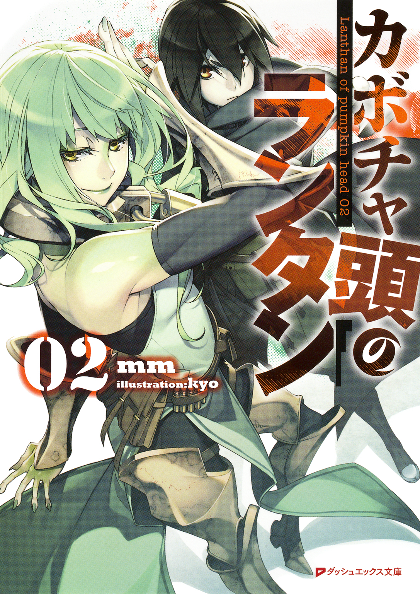
この本は縦書きでレイアウトされています。
また、ご覧になる機種により、表示の差が認められることがあります。
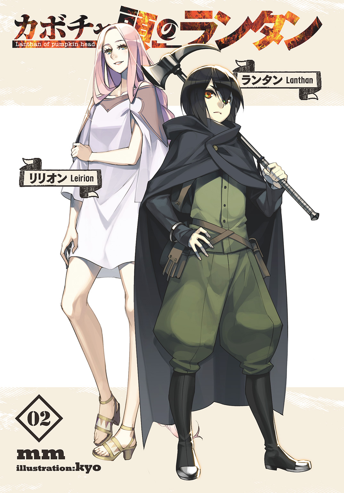
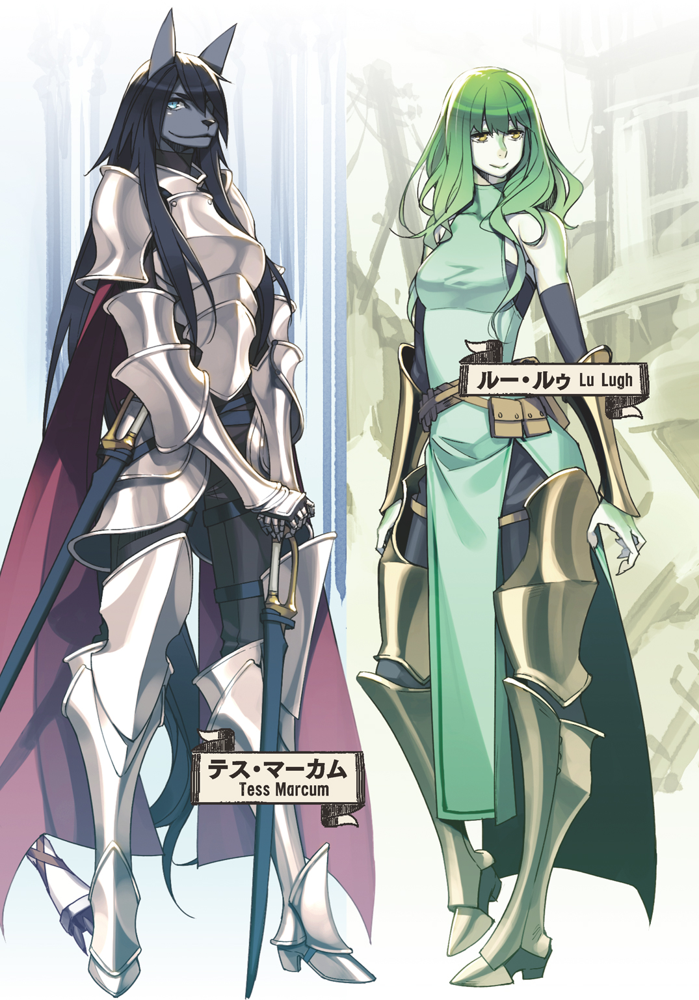
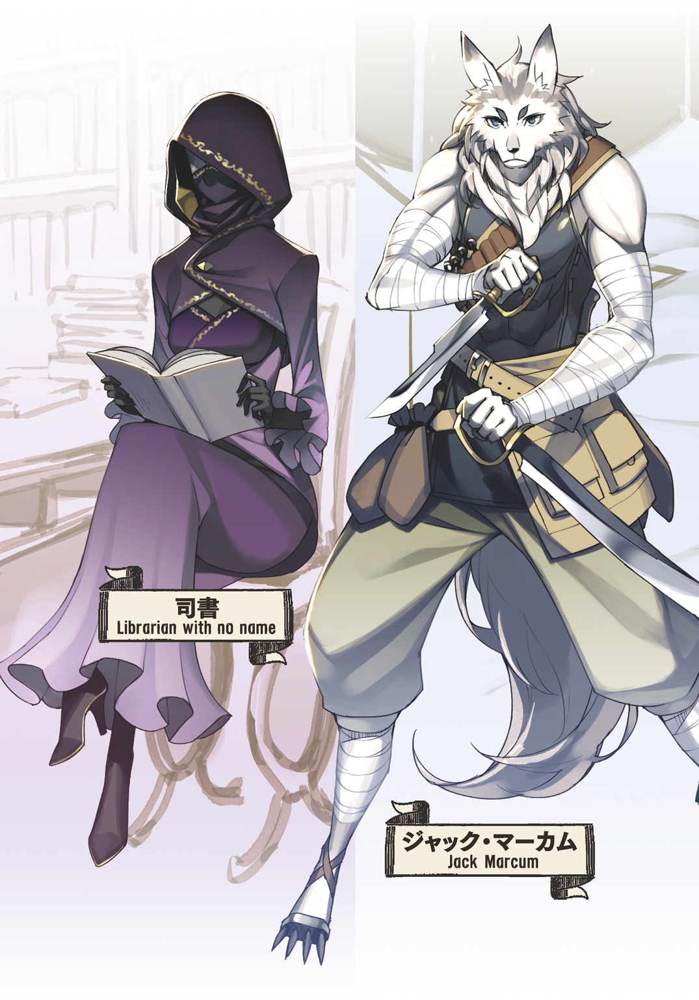
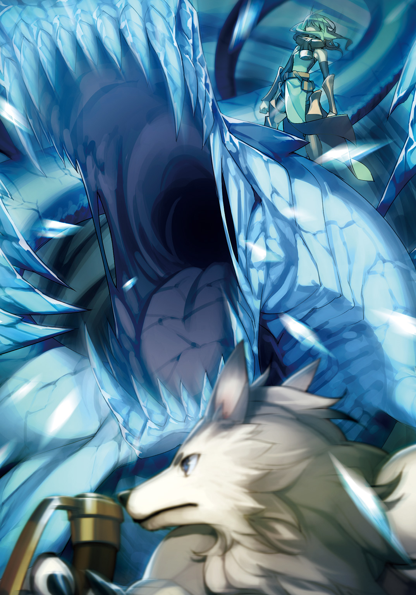
 ダッシュエックス文庫DIGITAL
ダッシュエックス文庫DIGITAL
カボチャ頭のランタン02
ｍｍ
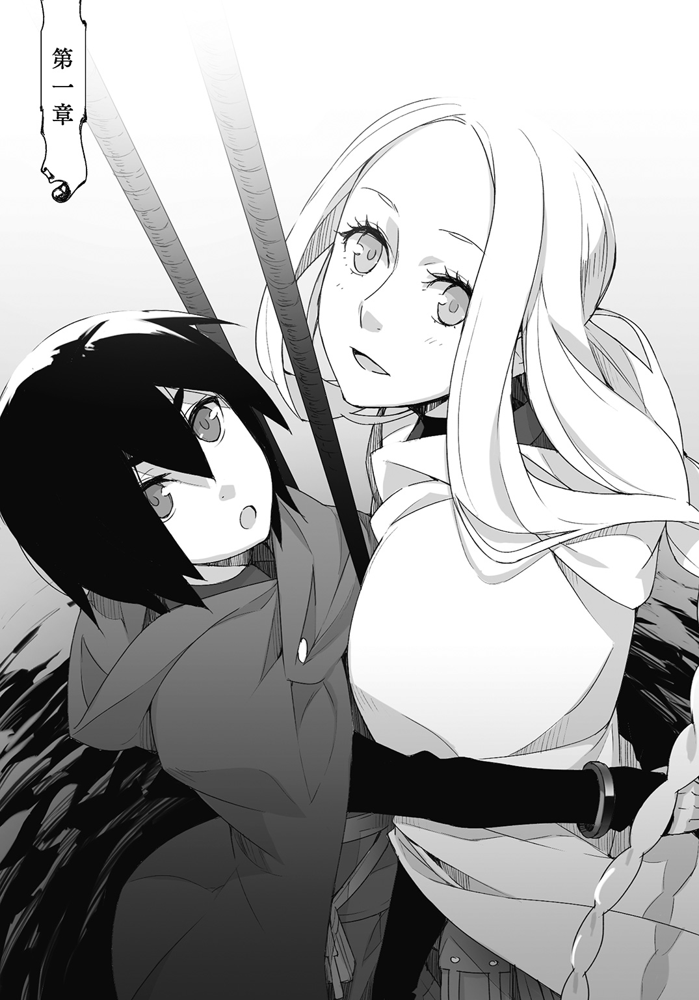
腕を回した腰が細い。
ランタンは左手で起重機のロープを握り締め、右腕をリリオンの腰に回して支えている。
身体を固定するごてごてとした四点方式のベルトは着けておらず、ロープ半ばのフックを自前のベルトに引っ掛け、そこからさらに伸びるもう一つの先端は鐙となっていた。
そこに片足を乗せているだけだった。
行きの降下時があまりに嫌々な表情だったので同情したのか、それとも呪うようなランタンの心中を察してくれたのか。二人用ベルトを寄越さなかったミシャに対して、ランタンは魔精の霧の中から感謝を捧げていた。
しかしそんなランタンに比べて、リリオンは不満そうだ。
リリオンは四点方式のベルトに雁字搦めに身体を吊られ、身動き一つ取れずにいる。
背負った楯も相まって、その姿は甲羅を摑んで持ち上げられる亀のようだ。
もっともリリオンの不満は、その愛らしくも無様な姿を晒していることに対してではない。
リリオンを吊るロープが少女の腕の可動域を制限するためだ。骨盤の左右から、身体の前を通して二本伸びるロープが少年の身体に抱きつくことを妨げている。
ずっと引っ付いていたのに、とランタンは苦笑する。
最下層で目覚めてから再び迷宮口直下に辿り着くまで、リリオンはずっとランタンから離れようとはしなかった。
ランタンは帰路に魔物が出現しないことを言い訳にリリオンの甘えを許したのだ。
腕を回したリリオンの腰が、降下時より一回りも細い。
甘やかしはそのせいもあるだろう。
「リリオン、大丈夫？ 気持ち悪くない？」
「大丈夫だけど、どうして？」
起重機に引き上げられる時に感じる内臓の浮遊感はやはり体質か。
ミシャの操縦技術には文句の付けようがない。だからランタンは臓腑に感じる気持ちの悪さを探索の疲労や背囊の重さのせいにしていたのだが、リリオンは最下層での魔精酔いが噓のようにけろりとしている。
「いや、大丈夫ならいいんだ」
月光を透かす程に薄くなった魔精の霧をゆるゆると上っていく。
ランタンは光の眩しさに目を細めて、欠伸を嚙み殺す。堪えきれずに染み出して眦に溜まった涙が夜空に散りばめられた星々の光を反射した。
ランタンはリリオンの腹に顔を押しつけて涙を拭いた。少女が微かに笑う。
「わあ、まぶしい！」
「ああ、疲れた」
いつからか聞こえていた巻き上げ機械の唸りが止んで、二人はすっかりと地上へと戻ってきた。起重機がゆったりと優しく横を向いて、足元にぽっかりと空く迷宮口から遠ざかる。そしてようやく足が地面を踏むと、リリオンはロープが弛むのに合わせて身体を折り曲げた。
ランタンに抱きついて、深く息を吐きだした。
体重を掛けるのは折れた肋骨が痛むからやめて欲しい。
そう思う反面、体重を掛けてもこの重さか、と思った。
戦士の、探索者の重さではない。これはまさしく少女の重さだ。
「お帰りなさい。ランタンさん、リリオンちゃん。お疲れさまっす」
「ただいま、ミシャ」
待機状態にした起重機から降りて駆け寄ってくるミシャに応え、ランタンは纏わりつくリリオンを押しのけた。ミシャと視線が交わると、ミシャはすっと目を細めて笑う。
ランタンの傍らに跪いて手早くベルトからフックを外した。
「ありがと」
ランタンは言いながらリリオンの尻をぱちんと叩き、少女が驚いた隙に側から離れた。
その際にミシャの細腕に軽く触れて、リリオンを拘束するベルトに手を掛けるのを待ってもらった。
弛んだとはいえロープに繫がれたままのリリオンは鎖に繫がれた犬に等しく、その行動半径の外に出ることができない。ランタンは自分へと伸ばされる手を素っ気なくすり抜けて、行動半径の外側に立った。リリオンの視線だけがランタンを追いかける。
「ほら、ちゃんとする」
「......――ただいま、ミシャさん」
リリオンは一度、空気を嚙むような息継ぎをしてミシャへと声を掛けた。
言い慣れない言葉を口にするような辿々しさがあった。
恥ずかしがるリリオンに、ミシャは大人びた微笑みを浮かべてそれに応える。
「はい、おかえりなさい」
そしてランタンにちらりと一つ目配せをして、ランタンは静かに頷いた。
「じゃあベルト外すっすよ」
引き上げの際に迷宮口から垂らされたフックやベルトを装着するのは探索者自身が行うことであるが、これを外すのは引き上げ屋の仕事である。
ほんの一秒、ほんの一動作で取り外しのできるフックでさえも地上では探索者の自由にしていいものではない。
それは伝統であり、引き上げ屋の矜恃である。
装具を外すということは、引き上げ屋の手で無事に探索者を帰還させた証だった。
凜々しさすら漂うミシャの横顔を眺めていると、拘束具の如くリリオンを縛っていたベルトがまるでリボンでも解くようにするりと外された。ミシャに手伝ってもらいながらリリオンが内股に通されたベルトから足を抜き、地面を踏む。
ランタンはリリオンの身体がふっと沈むのを見て軽く足を開いた。
拘束を解かれた少女は勢いよく。
「――ストップっす！」
リリオンが放たれた矢と化す瞬間に、ミシャは少女の外套を摑んだ。
一歩目から最高速度に乗れるほどの踏み込みは、しかし平然と引き上げ屋の細腕によって引き止められてしまった。外套に首を絞められたリリオンが情けなく呻き、恨めしそうにミシャを睨んだがミシャは余裕の微笑みを崩さない。
荒くれの探索者を相手にした商売の世界に身を置くミシャの胆力は並大抵のものではない。
何しろ引き上げ屋は探索者の命綱を、文字通りに握っているのである。ミシャにとってリリオンの一睨みなど、雛鳥がぴいぴいと囀っているのとさして変わりはないようだった。
「帰還したばかりなのに元気いっぱいっすね。リリオンちゃんは」
ミシャはリリオンを解放してやって、外套に刻まれた握り皺を叩くように伸ばした。
リリオンはされるがままで、ミシャの姿は妹の世話を焼く小柄な姉のようにも見える。
だがランタンはその姿に何となしの恐れを抱いて、その感情を見透かすように視線を寄越したミシャへ誤魔化すような曖昧な笑みを送った。
「――ランタンさんはまたボロボロっすね。大物だったんっすか？」
「まあね、しばらくは遊んで暮らせる程度には」
「もう、そんなこと言って。怪我を治したらすぐに迷宮へ潜るんじゃないっすか」
「ミシャが食いっぱぐれたら困るからね」
肩を竦めて軽口を叩くランタンに、ミシャは呆れと隠しきれない心配の眼差しを向けた。
ランタンはポーチから後払いの引き上げ料を取り出し、幾ばくかの色を付けてミシャに渡した。ミシャはそれを両手で丁寧に受け取ると、ありがとうございます、と頭を下げて集金箱へとしまった。
「あの、ミシャさん」
「ん？ どうかしたっすか、リリオンちゃん」
「ランタンが、また、って......」
「――ああ、お怪我の話っすか」
リリオンは躊躇いがちにこくんと頷いた。
ミシャは少女を気遣うような柔らかな表情で、唇を嚙む少女の顔を見上げる。
「終端の魔物を仕留めるって言った帰りはいつもこうっすよ、ねえランタンさん」
「......別に僕に限った話じゃないよ」
「まあ、そうなんっすけどね。それがどうかしたっすか？」
リリオンは疑るような視線をランタンとミシャに彷徨わせて、手繰り寄せた三つ編みの房をいじけるように指先で弄っている。
「だって、ランタンはすごく強いのに......」
ぽつりと呟いたリリオンの言葉に、ミシャは薄い唇にいやらしく笑みを浮かべ、からかうような目付きでランタンを見た。
ランタンはその視線を鬱陶しげに追い払おうとした。
だが簡単に追い払われるミシャではない。
「ランタンさんは、確かに凄く強いっすけどね」
「やめてよ」
ミシャは誇らしげですらある、わざとらしい声音で言う。そして少しだけ声量を落としリリオンの俯いた顔に語りかけた。
「でも、もっともっと強い探索者さんだって、高位の探索者さんだって、大人数の探索班だって探索帰りはみんなボロボロっすよ」
「......ほんとう？」
「本当だよって、何度も言ったよ」
リリオンはランタンに対して負い目がある。
自分と比べてひどく傷ついているランタンに申し訳なさを感じている。
だが、そんなものはお門違いの感情だとランタンは思う。
今回の負傷はいつも通りのことなのである。リリオンはまだ探索者に成り立てで、思うように力を発揮できなかったかもしれない。
だが、きっとリリオンの実力に関係なく、ランタンは怪我をするのだ。
皮を斬らせて、肉を斬らせて、骨だってほんの少し削らせて、自らの心臓のすぐ傍にまで魔物を引きつけて、力一杯に殴打する。
終端の魔物と戦う時、ランタンはいつだってそうしてきたのだ。
だからリリオンは気にする必要はない。
だがそれをどれほどにランタンが伝えようとも、実際に傷ついている本人から語られる言葉はただの慰めにしか聞こえない。ランタンが気にするなと言えば言う程にリリオンはますます気にしてしまう。
そんなリリオンに、ランタンはどうしていいかわからず困っていたのだ。
ミシャの口から語れる探索者の、そしてランタンの当たり前をリリオンは真剣な様子で聞いている。
胴体が千切れたわけでもなければ、腕が無くなったわけでもなし。この程度の怪我を気にしていては遠からず神経症になりかねない。
ミシャの援護もあってランタンは畳みかけるようにリリオンへと伝えた。
「終端の魔物と戦って怪我するなんて当たり前のことなんだから。それに未帰還だって多いんだよ」
「それは、そうなんっすけど、だからって、――怪我することがいいことではないんですからね。ランタンさん。ちゃんと休まないとだめっすよ。引き上げの時、もし待ち惚けなんてさせられたら最下層にまで取り立てに行くからね！」
「はいはい、気を付けますよ」
その時は超過料金と危険手当で尻の毛まで毟られるかもしれないが、遅れるつもりもなければ、尻に毛も生えてない。ランタンは肩を竦めて視線を逸らした。
叱るようなミシャの言葉をランタンは軽く受け流して、ミシャは大きな溜め息を吐き出す。ミシャはリリオンにどうしようもない苦笑を向けて、ランタンに対する呆れを唇に湛えた。
それは諦めのようでもあるし、諦めきれぬ心配でもある。
リリオンはそんなミシャに救われたように、恥ずかしげな笑みを浮かべた。
「まったくもう。リリオンちゃん、いい？ ランタンさんはこんなんだから、ちゃんと休むように見張ってるっすよ。人を心配させるのなんて、全然平気な人なんだから」
「うん、わたし見張るわっ」
「......余計なことを言わないでよ。平気じゃないし。悪いと思ってる。ほら、もう行くよ」
ランタンをだしにして仲良くなった二人は、拗ねるような疑るような視線をランタンに向けてくる。
見つめられたランタンは大慌てに二人に背を向けて、後ろ手にリリオンを呼び寄せた。
「じゃあ、わたし行くね。ミシャさん」
「よろしく頼むっすよ、リリオンちゃん――」
「うん、まかせて！」
迷宮で得た魔精結晶、その親玉である迷宮核を換金するために、そして迷宮の攻略を報告するためにこれから探索者ギルドへと赴かなければならない。正直なところ迷宮核の換金に付随する攻略報告は面倒極まりないが、それは避けて通れぬ探索者の義務である。
肉体、精神ともに疲弊していることに間違いはなかったが、探索者ギルドには終日営業の医療施設が併設されている。ランタンの本命はそちらだった。
面倒事を後回しにして得をすることなど何もないし、それが何かのついでに済ませられるのならばそれに越したことはない。
「――ランタンさんも、またのご利用をお待ちしております。ちゃんと休んでくださいね」
「うん、わかってる。またお願いね、それじゃあ」
ゆるりと手を振ってミシャと別れる。
リリオンはランタンと手を繫ぎたがったが、ランタンの言いつけ通りにそれを我慢するだけの分別はあった。
迷宮特区の帰り道は見栄を張らなければならない。
どれだけ疲れていようともできるだけ背筋を伸ばして胸を張って堂々と、外套の下に隠した背囊が重たげに見えるようでは襲撃者の目に留まる。
それこそ、お手々繫いで仲良く帰る、なんてことをしていては襲撃者にとってはどうぞ襲ってくださいと言わんばかりの暢気さであるし、襲撃者ほど物騒ではなくとも闇に潜む悪党に舐められてはつまらない。
ランタンはリリオンの顎の輪郭を撫でるように視線を持ち上げた。
宵闇に白く浮かび上がるリリオンの顔は瘦せて尖って見えるが、まあ悪いものではない。
まだ一度の探索を終えただけだ。だがこれからこの甘い顔がいつかは数多の女性探索者がそうであるように、凜々しく雄々しくなっていくのだろうかとふと考えてランタンは小さく震えた。二人の間を通り抜けていった夜風が冷たい。きっとそのせいだろう。
リリオンはそんなランタンにも気が付かず、視線を左右に鋭く動かして辺りに注意を払っていた。ミシャに焚きつけられたせいで面倒くさくなっている。
ランタンは微笑ましく思う。リリオンは番犬のようであり、守っているものは背囊に収められた迷宮核ではなくランタンだった。
もっともリリオンの番犬振りなどはたかが知れているが。
至近にいるランタンの視線にも気が付いていなければ、二人の背後を何気なくつけてくる男の存在にもまだ気が付いていない。襲撃者はそれほど頻繁に現れるものではなく、足運びの軽さから掏摸か物取りかと推測できる。
よくいる手合いだ。放っておいてもそれほど害のあるものではない。それにリリオンが大変わかりやすく警戒しているのだから、これにちょっかいを掛けるのはなかなかに難しい。
しかし迷宮特区を抜けたリリオンはほっと胸を撫で下ろして警戒を解いてしまった。
「ごくろうさま、さあギルドに行こうか」
これも勉強かな、とランタンは意地悪を隠すように口を噤む。
「うん、あの......ランタン」
リリオンはご褒美をねだるようにおずおずと手を差し出して、ランタンは苦笑交じりにそれを握ってやった。すっかりと日が落ちて久しく、街灯の光が幻想的な通りでは、手を繫いだり腕を組んだりして行き交う男女は珍しくない。
繫いだ手をぎゅっと握ったリリオンの花咲くような笑顔は眩しかった。
そして背後を振り向こうとしたリリオンを強引に引っ張ってランタンは歩き始める。
「ランタン、後ろ」
「うん、特区からずっとついてきてるね」
「......知ってたの？」
「まあね。右左を気にするのも良いけど後ろも、場合によっては下も注意しないとね」
「下？」
都市の地下に張り巡らされた下水道は、地下迷宮と揶揄されることがある。
下水道なりに不潔であるが雨風を防げ、そして衛士隊やら騎士隊やらの治安維持機構の目からも逃れられる。上街の下水道はある程度管理されている。だが下水道の住人たちの努力によって下街の下水道と行き来する通路が幾つも開通しているようだった。
「一回だけ見たことがあるけど、下水道の蓋の隙間からするっと手が伸びて酔っ払いを飲み込むの。あれはちょっと怖かったな」
「それ、どうなったの？」
「さあ？ でも飲み込まれたの探索者だったし、たぶん大丈夫なんじゃないかな。酔っ払ってるとはいえ閉塞空間で探索者相手にするのはね。でも地の利は向こうが上か......」
ランタンがふと思案を、そしてリリオンがまだ見ぬ下水道に思いをはせたその間隙に、後をつけていた男がわざわざ繫いだ手を引き剝がすように二人の間を走り抜けた。
「もうっ、なにっ」
「掏摸だよ。あんまり上等な部類じゃないね。もしかしたら手を繫いでるのが羨ましかったとかね」
ランタンは喉を震わせるように笑い、リリオンに再び手を差し出した。リリオンは飛びつくようにランタンと手を繫ぎ直して、二度と同じことがないように指を絡めた。それでもまだ不満そうに唇を尖らせて、転ぶように路地を曲がった男の後ろ姿を睨んだ。
だがそれも、路地の壁に反響して零れた悲鳴を聞くまでのことである。苦痛の音色にリリオンは怪訝そうな顔をして路地を覗き込もうとしたが、ランタンはリリオンの手を引いた。
ちらほらと路地を覗き込む野次馬が集まりはじめていた。
「どうしたのかしら？」
「掏摸をしたら手首を切り落とされるのが通例だからね。――冗談だよ」
と言ったものの冗談ではない場合も多々ある。切り落とされるのは手首ではなく、首であることもそんなに珍しい話ではない。
「ちょっと指を折っただけ、三本ぐらい。あと手首、と肘も。探索者相手に馬鹿な奴」
しばらくは商売ができないだろうが、これを機に真っ当な仕事についてほしいものだ。
ランタンはしみじみと頷き、そんなランタンにリリオンが何とも言えぬ表情になった。
「......わたしも、できるようになった方がいい？」
「まあ、できることは多い方がいいけど。時と場合によるかな。ほら、もう来た」
ランタンが視線で指し示したのは都市の治安維持機構の一つである、衛士隊に所属する兵士だった。騒ぎの臭いをかぎ分ける猟犬である彼らは、鎧を警鐘のように鳴らしながら二人の脇を駆け抜けていく。
こういう時だけランタンのいかにも大人しい顔立ちは好ましく作用する。
もっとも掏摸に目を付けられたのは、フードを失って大人しい顔が顕わになっていたからに他ならないのだが。
衛士隊は貴族派の治安維持機構である騎士隊と対をなし、市民の安全を守ってくれる正義の味方である。だが騎士にもだが、問題事を多く起こしやたらと腕っ節の強い探索者は衛士にあまり好感情を持たれていないのが実情であった。
探索者の厄介さといったら、ついには探索者ギルドが所有する独自の治安維持機構である探索者ギルド治安維持局に探索者への逮捕権や、探索者の絡む事件への捜査権などが公的に認められたほどである。
探索者ギルド治安維持局は探索者と同じほどに衛士隊や騎士隊から嫌われて、探索者からは鬼のように恐れられる武闘派集団だった。
「仕事が速いのはいいんだけどね。捕まるとねちねちうるさいから。下街なら好き放題に大暴れしてもいいけど、上街でやるなら静かに、手早く、容赦なく。そして速やかに現場から立ち去ること」
「うん、わかった」
ランタンの言葉にリリオンは素直に頷いて、ランタンの真似をするように澄ました表情を作った。いかにも騒ぎとは関係がありませんと辺りに吹聴するように。
「でも、どうして探索者を狙ったりするのかしら。探索者にはランタンよりも強い人も、ちょっとだけいるんでしょ？」
「ふふふ、まあ、ちょっとだけね。探索者を狙うのはリスクが高いけど、その分だけ見返りも大きいから今の僕らみたいに探索直後を狙えば成功率も少しは上がるし」
もし探索者の財布を掏り盗ることができればしばらくの間は食うに困ることがない。
探索後、攻略後の探索者は疲労困憊であるが大人しく休息を求める者と派手に散財することこそを愉しみにする者が半分半分に混在する。
生真面目に探索者ギルドへ直行するランタンはごく一部の少数派である。
散財はもちろん、自らへの褒美としての休息にはそれなりの金銭が要求される。なんだかんだと探索直後であっても探索者の財布は重い。もちろん探索者も警戒を怠ることはないが、それでも無事に生き残れたことの安堵に気が緩むことは避けられない。
「だからそれを悟らせないために、平気な振りして歩くんだよ。まあ、狙われたんだけどさ」
ランタンはふて腐れて頰を膨らませ、舌打ちをしてヘコませる。
狩猟刀もそうであるが、まずは外套を買い直さなければ。
外套によって傷ついた華奢な身体付きは隠せているが、フードを失ったことは痛手だった。
月光に照らされてランタンの青白いほどの顔色は、さながら誘蛾灯のごとく夜の闇の浮かび上がり人目を引いた。
それでも寄ってきた面倒事が掏摸の一人で済んでいるのは隣を歩くこの少女のおかげであるのかもしれない。
リリオンは立ち振る舞いに幼さこそあるが、澄ました顔して歩いていれば背の高さの分だけランタンよりも大人に見える。
「リリオンも気を付けるんだよ。これからはお金の管理しなきゃいけないし」
「でもわたし、お金ないよ」
「いやいや、何を」
澄ました顔の無垢な瞳は、その言葉を本気で言っているのだとランタンに理解させた。
リリオンは探索の結果である利益を、端っから求めていなかった。
今回の探索での自らの働きぶりを過小評価しているからのことではなく、そもそもとしてリリオンは自らの働きへの対価を放棄しているのだ。
それは少女の今までの人生がそうであったからか、それとも別の理由かはわからない。だがじっとランタンを見下ろすリリオンの純粋さはランタンを不安にさせるものだった。
「利益は山分けだよ」
「わたし、いらない」
「――いるいらないの話じゃなくて」
「わたしは、もう貰ったから」
水を、食事を、服を、大剣を、大楯を。
リリオンは一つ一つ与えられたものたちを数えていった。そして指の数が足らなくなると、遡るように一つ一つ指を折って丸い拳をつくりあげた。リリオンはその拳に唇を押し当てる。
まるで神に祈り、神の爪先に口付けるように。
「リリオン」
「なあに、ランタン」
ああ何と嬉しそうに。
ランタンは乾燥する唇を舌でちらりと湿らせた。
頰を緩ませ顔を覗き込むリリオンに、ゆらりとした意味深な視線を投げかける。
「家に帰るまでが探索だって言ったよね」
「うん」
「じゃあ、探索中は？」
もう何度か破られている。何の拘束力もない約束。
「絶対、服従！」
しかしそんな約束でも持ち出さなければリリオンは納得しないだろう。
「と、いうわけで命令です。利益は山分け。まあ、配分は考える。ううん、相談しながらね。わかった？」
柔らかくも有無を言わせないランタンに、リリオンは言葉を言い切ったうの形をしたままの唇を更に突き出すように尖らせて、服従とはとても思えない不満たっぷりの拗ねた表情で渋々頷いた。
この子は、まったく。
ランタンは堪えきれぬ苦笑を滲ませ、しかしそれはやがて憂鬱げな溜め息へと色を変えた。
「どうかしたの？」
「攻略報告って、結構面倒くさいんだよね」
探索者ギルドの建物は闇夜の中にあると、ただでさえ物々しい雰囲気に何とも言えぬ不気味さが混じる。明るい星明かりが降り注いでいても、どことなく重苦しい雰囲気を湛えているように思える。それはこれから果たさなければならない義務への煩わしさがそのまま浮き上がっているからなのだろう。
「ランタン、その前に怪我の手当てをするんでしょ？」
「わかってるって、もう。そっちは別に嫌じゃないから」
ランタンは魔道処理によって重さを感じさせない重厚な扉を、まるで内側から押さえつけられているかのようにゆっくりと押し開き、その隙間から溢れる眩い光の中に吞み込まれるように足を踏み入れた。
そろそろ迷宮内で服用した痛み止めの効果が切れる頃合いだ。
さっさと医務局を目指さなければ。
ランタンはいつか言った自分の言葉もすっかり忘れて、リリオンの手を握りしめたままギルド内を進んでいく。
◇◇◇
「雑だな、まったく」
ランタンの折れた指を見るなりにギルド医の大男が舌打ち混じりにそう呟いた。
「で、傷がこれっぱかしなわけないだろ。他はどこだ？」
そう続けたギルド医は何とも獰猛な人相をしていた。
怪我を見せてみろ、と差し出された手には幾つもの傷が刻まれていて、掌には刀槍を素手で受け止めたような抉れた痕があった。身体を治すよりも、壊す方が得意そうな手をしている。
探索者ギルドには引退した探索者が少なからず勤めている。だが全ての引退した探索者にその機会があるわけではなく、ギルド勤めには何かしらに秀でた技能が必要とされる。
このギルド医は野盗の親玉のような人相をしているが医療の専門家である。
もちろん元探索者なのでいざという時の腕っ節も強く、痛みに暴れる探索者を押さえつけるのもわけないということだ。
ランタンは素直に上着のボタンを外し、服を脱ごうとして怪我のせいで少しばかりもたつく。
すると背後でその様子を窺っていたリリオンが手を貸してくれた。上着を、そして肌着をめくり上げ、ランタンの腕から袖を引き抜いた。
見た目の清潔感ばかりではなく殺菌作用もある白々とした魔道光源の光にランタンに裸体が晒された。
「おねがいします」
ランタンが右腕を差し出すとギルド医は前腕を覆う包帯を解いた。
体液の染み出した包帯が傷口に張り付いていたが、ギルド医の太い指は痛みも感じさせる事なく傷口から包帯を剝離させる。
改めて目にすると傷口の凄惨さに表情が歪む。
背後でリリオンが息を飲むのが伝わってくる。
皮膚を削ぐように斜めに伸びる傷が手首から肘に、二の腕まで無数に刻まれている。
出血は止まっているが、それゆえに剝き出しになった傷口は果物彫刻の練習に使われたような有様だった。繫がったままの皮膚が白くふやけて捲れ上がり、その下には薄桃色の肉が覗いている。
背後から注視していたリリオンの視線が外れる。そしてランタンもまた自らの腕から焦点をずらした。見ていてあまり気分のいいものではなく、はっきりと確認するほどに痛みが増すような気がした。
「傷薬をつけ過ぎだ。まったく、傷口が塞がるのを邪魔してるぞ。接着剤じゃないんだからな。――少し染みるからな」
ギルド医は滅菌ガーゼを消毒液で湿らせて、繫がったままの皮膚を引き千切らないように患部を拭った。ランタンは睫毛が震えるほどにきつく目蓋を閉ざして、奥歯を強く嚙み締めた。傷薬を塗ったのは自分なので自業自得だが、少し染みるなどというのは明らかな噓である。嘔吐しそうな程に痛い。
神経に触れる痛みはギルド医が指にガーゼを巻き付けて傷口の軟膏を掘り返す痛みだ。
ランタンの額にじわりと脂っぽい汗が浮かび、だが少年は苦痛の一つも漏らすことはなかった。どうにか拷問のような時間を耐えきると、疲れた様子のランタンにギルド医は太く笑った。その内心はどうであれ悲鳴を上げなかったランタンへの賞賛だった。
これだから探索者上がりは、とランタンは思う。
元探索者は後輩の出来を確かめるために時折こういった乱暴を働く。賞賛よりも痛み止めが欲しい。痛み止めよりも思いやりがもっとほしい、とランタンは溜め息を漏らした。
「この様子なら縫わなくてもいいだろ。範囲は広いが思ったよりは浅いしな。傷口が多くて面倒だし」
ギルド医はそう言うとあらためて腕に消毒液を塗布した。剝がれた皮膚を傷口にぴったりと貼り合わせて、その上からごく薄く薬を伸ばした。淡い桃色の軟膏で全ての皮膚を傷口に固定すると、その上にガーゼを置いて新しい包帯で腕を包んだ。
「まだ若えしな、これぐらいなら寝て起きれば治るだろう。......完治じゃないからな。二、三日は皮膚が引っ張られるように感じるだろうが、生活には支障がないってだけだ。あと今夜は痒くなるが、絶対搔くなよ。皮膚が定着せんからな。わかったか？」
「はい」
「しばらくは、探索は絶対するなよ」
従順に頷いたランタンをギルド医は半眼で睨み付ける。
疑惑の視線に晒されたランタンは、素直に頷いたのにどうしてだろう、といかにも思い当たる節がなさそうに困った表情を貼り付けた。
だがランタンには同じような忠告を受けて、それを無視した経験が何度もあった。
怪我が怪我を呼び、どうにか帰還を果たしたがギルド医数名の手を煩わせたこともある。
その時の担当医は目の前の大男ではなかったが、どうやら探索者ギルド医療衛生局中に悪評が広まっているらしい。
面倒なことだ。
「ふんっ」
「痛っ――」
ランタンが白々しくもそんなことを考えていると、ギルド医は無言で左手首を摑み、折れた指をまるごと握りしめて一気にそれを引き伸ばした。骨の擦れる音が全身を駆け巡り、ついで何とも気持ちのいい音が響く。嵌まったのだ。折れてずれた骨が完璧に。
腕が手放されて、ランタンは内心ものすごく驚いていたが、それを押し殺して極めて事務的に軽く拳を握った。骨折による浮腫が取れていないので、上手に握ることはできないが痛みはまったくない。ランタンが自分でするのと変わらないぐらい乱暴だったが、その出来映えは比べるべくもない完璧な骨接ぎだった。
「当たり前だが、くっついてるわけじゃねえからな」
「はい、わかってます」
しれっと頷くランタンに先程と同じ視線を寄越したギルド医は、骨接ぎをした指を一本ずつ丁寧に非伸縮性のテープで固定する。関節は避けてくれているので動かすのに支障はない。
「――ったく。肋骨もだな。くそ、痛み止めを塗りすぎだ。内服薬も使ってるだろ、その内に効かなくなるぞ」
肋骨に触れ、ギルド医は皮膚表面を軽く引っ搔く。
そして爪の間に垢のように溜まった軟膏を見て悪態を吐いた。
その悪態に背後のリリオンが僅かに震える。ランタンはちらっと少女を振り返って小さく笑った。体中にベタベタと薬を塗ったのはリリオンだ。
「こっち向け、ゆっくり息を吐いて腹ヘこませろ。ちっ、よくもまあこれだけ折ったもんだな。内臓に刺さってないのは運が良かっただけだぞ。もうちっと気をつけろ。そのままへこませて、――息止めろ」
言われるがままに呼吸を止めて、ランタンは来るべき痛みに備えた。
当直の医者により腕の良し悪しはもちろん処置の方法にもばらつきがある。だが処置の多くに痛みを伴うことをランタンはよく知っていたし、腕と指の治療でこのギルド医が充分に荒っぽいことを理解していた。ギルド医は指を滑らせてランタンの肋骨の状態を確かめると、その太い指をいきなり肋骨の内側に差し込んだ。
「――っ」
覚悟を決めていたのに、表情が歪む。
この世界でも医療技術はある程度体系化されていたが、これはそこから逸脱している。
元探索者のギルド医は独自の技術を所有している。迷宮内での素人なりの応急処置から、あるいは魔物を破壊する技術から枝葉を伸ばして形作られた治癒術であるのかもしれない。
ランタンは声のない悲鳴を上げて、大きく痙攣するように跳ねた。だがリリオンがランタンの細い肩を押さえつける。一体いつの間にギルド医の手先になったのか、と叫びたいが声は出ない。痛みの強弱でいえば戦闘で負った痛みの方が遥かに痛い。
だが医務室での痛みは、質が違うのだ。
触れられた皮膚が柔らかいゴムにでもなったように、ギルド医は人差し指から小指までを鳩尾へと押し込んだ。肋骨の内側に指を引っ掛けて、ずれた骨を手前に引き出す。それを親指でそっと押さえつけながら形を整えるように、鳩尾から背骨に至るまでをぐるりと一周。内臓に響く骨の擦過音は地獄の底から響くようである。
まるで花器でも練り上げるような繊細かつ大胆な指使いは、過去に迷宮で、そして現在は医務室で多くの命を救う洗練された指使いだった。
だがランタンはその技術に感心している余裕はこれっぽっちもなかった。身体の内部を弄られる気持ちの悪さと、吐くこともできない痛みが過ぎ去るのをただ待つばかりだった。
「――よし、お嬢ちゃん、いいアシストだ。この暴れん坊を押さえるのは大変だろう。もう放していいぞ。まったくランタンよお、みっともねえな」
痛みに耐えた己ではなく、リリオンを褒めるギルド医をランタンは軽く睨み付ける。
ランタンは胸を張るようにゆっくりと身体を伸ばした。悔しいことに今ある痛みは治療の残滓ばかりで、骨折自体の不快感はさっぱりと消え去っている。
なまじ腕がいいだけに、もっと優しくしてくれてもいいのにとランタンは思う。
「肋骨は固定できないから――わかってるな。骨は寝て起きてもくっつかないからな！」
脅すような表情のギルド医に、もう三度目だよ、と呟く内心が表情に浮かび上がる。ふて腐れるランタンにギルド医は呆れて溜め息を漏らした。まったく人を探索中毒のように。
迷宮を一つ攻略し終えて区切りがついたのだから、わざわざリスクを背負ったまま無茶をするつもりはない。
もし一人であったのならばわからないが、少なくともリリオンを連れている間は。
熱した針で内出血を起こした爪に穴を空け血を抜き、残りの小さな傷を治療していく。
「大丈夫です。わかっていますよ。無理はしません」
ランタンはどうせ何を言っても疑惑の視線を向けられるので、丸椅子をぐるんと回してリリオンへと振り返った。心配げな少女の視線に安心させるような微笑みで応えて、服、と一言。
リリオンは胸に抱いたランタンの服を、しかしぎゅっと抱きしめた。
「ランタン、後ろ」
「何だあ、その頭は」
リリオンの言葉に振り返ろうとしたが、ギルド医はランタンの頭をむんずと摑み、ざんばらな襟足を指で弾いた。
嵐熊にフードごと切り払われた後ろ髪は、何だか少しみっともない。
「何だと言われましても」
名誉の負傷だと嘯きたいところだが、涼しげになった首筋のそれは結局のところ油断の現れだった。終端の魔物、嵐熊による魔道の行使を早々にないと決めてかかったのはランタンの見通しの甘さに他ならない。
ランタンがリリオンを導いているのは、リリオンがまだ何も知らないからであって、ランタンの探索者として能力はその外見同様に青い未熟さを多分に残している。
「切ってやるから動くなよ」
ギルド医に後頭部を晒すことと、リリオンと向かい合うことは同じである。
リリオンはランタンの服を大事そうに抱えたままじっと視線を向けてくる。その気遣わしげな視線はランタンの羞恥心を搔き立てるものだった。格好付けてこの様では、なんとも格好悪い。ランタンはギルド医の鋏によって、襟足がするりと整えられていくのを感じた。
こんな風に簡単に体裁を整えられたらどれほど楽だろうか。
「まあ、こんなもんだろ」
ギルド医が項に散った髪を払いながら言う。
ランタンは襟足を一撫でして、椅子ごとくるりと回転してリリオンに背を向ける。
「どう？ リリオン」
「ランタンは、どんな髪型でも格好良いよ」
リリオンはランタンの首筋に顔を近づけて、まだ残っている毛をふうと吹いて、背に張り付く小さな毛筋の一つ一つを指先に摘んだ。
「リリオンも毛先だけでも揃えてもらったら？」
ランタンはそうリリオンに提案する。それはリリオンの手から服を受け取る代わりに、なんとなしに手渡した言葉だった。
リリオンも嵐熊によって髪を切断されている。三つ編みにしているので一目見ただけではわからないが、短くなった三つ編みを解けばやや右上がりに斜めになっている。
「いい」
だがリリオンの答えは明確な拒絶だった。
「わたしは、いいわ」
リリオンは手を硬く握り込んでいる。ランタンは訝しげな視線をそっと送りながら、自らの襟足をもう一度撫でた。実はギルド医が失敗したという訳ではなさそうだ。
ならばリリオンのこの表情は一体何だろうか。
「まあ、結んでればわからないしね」
ランタンはリリオンの手を優しく一撫でしてギルド医に向き直った。
ギルド医の人相が悪いのでリリオンは怖がったのかもしれない。
ランタンは鋏をしゃきしゃきと鳴らすギルド医の顔をあらためて見つめた。
髪を切るその鋏使いはとても繊細だったが、鋏と人相を一纏めに見ると途端に耳でも削ぎ落とされるのでは、と思えてくる。
じろりとギルド医に睨まれたランタンは微笑みを返して上着のボタンを留めるついでに視線を逸らした。元であろうと探索者。何とも勘のいいことだ。
「じゃあ治癒促進剤と湿布薬、お嬢ちゃんの分も念のため出しておくから。三日分で足りるはずだが痛みが引かないようならもう一度取りに来いよ」
ギルド医は鋏をペンに持ち替えて診断書に筆を走らせる。絡まった糸のような何とも酷い癖字であるが、そもそも文字の読めないランタンには関係のないことだった。
「治癒促進剤は寝る前にな。患部が痛む場合は痛み止めに頼らずに冷やせ」
「はい、ありがとうございます」
正真正銘の感謝の念を込めてランタンは頭を下げた。しかし顔を上げるとやはり半眼のギルド医の表情がある。そんなギルド医にランタンは告げた。
「あと栄養剤もください。二つ」
嘆息するギルド医はランタンの左胸に指を突き付けた。
「怪我も治してやるし、髪も切ってやるが、死んじまったらどうにもできねえからな」
身体中から怪我の痛みは取り除かれていたが、なんとも耳の痛い話であった。
ギルド医は処方箋に栄養剤二本と書き込みを加えて、さっさと出て行けとでも言うように乱暴にそれを押しつけた。
「お嬢ちゃんもランタンの相手は大変だろうが――」
「そんなこと、ないです」
「――ああ、それならいいさ。お嬢ちゃんも髪切りたくなったらいつでも歓迎するぜ。怪我人の相手も飽き飽きだしな。べっぴんさんにしてやるぜ」
ギルド医は精一杯の笑みを浮かべたが、それはどうにも腹を空かせた肉食獣が唸っているようにしか見えない。リリオンはその笑みに、恐れるように震えながら頷いた。
そのちぐはぐなやり取りをランタンは面白く思いながらも、リリオンの手を取って早々に医務室を後にした。医務室の空気はリリオンにもギルド医にも決して良いものではなかった。
丁寧に医務室の扉を閉めてランタンは何とも言えぬ苦笑を頰に浮かべた。
「ああ、怖い顔だったね」
「うん」
「乱暴だったけど、腕はしっかりしてるんだよね」
こっちの方も、と付け加えて襟足を指すとリリオンは手を伸ばして項からそこへと触れた。
少し短くなった髪の、それでも柔からな感触をリリオンは楽しんでいるようだったが、されているランタンはくすぐったくて落ち着かない。
「リリオンも切ってもらえば良かったのに」
ランタンが言うとリリオンは項垂れるように手を下ろした。
「だって、......怖かったんだもの」
「切ってもらう時は、顔なんか見えないよ」
力無く垂れる手をランタンは握ってやり、リリオンは浅く唇を嚙んで躊躇いがちに頷いた。
リリオンの指が少し冷たい。リリオンはランタンの指先を甘えるようにこねて、ランタンはされるがままにギルド医に渡された処方箋をひらひらと揺らした。
「支払い済ませてくるけど」
「わたしも行く」
「お金払うだけだよ」
「わたしも一緒に行く」
見ていて楽しいものでもないだろうが、見られて困るものでもない。
だが受付台まで目と鼻の先なのに手繫ぎというのも間抜けである。ランタンはリリオンの手を放して、リリオンはランタンの外套を摑んで後ろを付いてきた。
書類を提出し、提示された診療報酬と薬代を支払う。そして治癒促進剤と湿布、栄養剤を受け取った。ランタンはリリオンの背囊にそれらをしまった。
「栄養剤も後で飲もうね。やたらと甘いから水割りにして。怪我は治らないけど、疲れはよく取れるんだよ。無理すると揺り戻しが酷いけど」
「うん、......でも薬って高いのね」
「これでも探索者用の値段だよ」
探索者用と一口に言っても、探索者ギルド医務局は探索者の経歴を見る。探索者の階級から、現在契約している迷宮の難易度、過去の活躍、銀行口座の残高まで。
処方箋なしでは経歴によって薬の種類や販売個数に制限がかかる。
例えばこれから高難易度の迷宮に挑むのならば稀少な魔道薬なども選べるが、低難易度の迷宮に挑むのならば低難易度なりの薬しか選ばせてはもらえない。
もっともギルド医に頼み込んで先程のように処方箋を書いてもらえば、その制限をかいくぐることもできる。だがギルド医に頼みを聞いてもらえるようになるには、それなりの怪我を何度も負って何度も治療を受けて顔なじみにならなければならない。
「でも他で買うよりはちょっとだけ安いよ。変な混ぜ物もしてないらしいし」
「へえ、そうなんだ」
「うん、それに命の値段だからね。安いもんだよ。さ、次の用事をさっさと済ませるよ」
面倒だけどね、とランタンはリリオンの手を取った。
迷宮資源の換金兼、迷宮攻略報告をしなければならない。
各種手続きはこの上なく面倒であるが、そうも言っていられない。
日をあらためて落ち着いてから行ってもいいのだが、何事も早め早めに済ませておいて損をすることは少ない。
しかしランタンの足どりは何とも重たいものだった。
夜も深くなりつつあるので買取施設は半分眠っているような状態だった。複数ある受付台は半分以下しか職員が詰めておらず、それでも余るほどしか探索者はいない。時間を持て余している受付嬢にランタンは探索者証を渡した。
「ほら、リリオンも」
ランタンが呼びかけるとリリオンは慌てたように探索者証を腕から引き抜く。
探索者、あるいは探索班が何を持ち込み、どれほどの金額を取引したかはギルドに記録され探索者の等級を定めるための指標の一つとされる。
丙種から乙種へ、乙種から甲種へと位が上がればギルドから受けることのできる恩恵の品質が上がっていく。
そのために探索班で得た迷宮資源を抜け駆けして個人で持ち込むこともあるらしく、それを引き金に探索班が解散することもあるようだった。あるいはそれは解散寸前だからこそなのかもしれないが。
またシビアな値段付けをするギルドの買取施設に持ち込むか、それとも他の買取施設に持ち込むかも探索者にとっては悩みの種らしい。もっともランタンにはあまり関係のない話だった。複雑な駆け引きを要する取引など考えただけで気後れしてしまう。
医務局に行く前に一度立ち寄って用件は伝えてある。
迷宮核の持ち込みはこの買取施設で取引される物品の中で、もっとも特別な物の一つだった。これを持ち込む探索者は深夜であろうが早朝だろうが歓迎される。
「はい、乙種探索者ランタン様、丙種探索者リリオン様ですね。攻略の成功と無事をお喜び申し上げます。すでにご用意はできておりますので、奥の部屋へとお通りくださいませ」
頷いたランタンは慣れたように腕を差し出し、受付嬢はランタンの細い手首にまるで下女のように探索者証を嵌めた。それを見てリリオンは真似をしたが、まるで炎に触れようとするようにおっかなびっくりとしている。
強張った指先に受付嬢は微笑んだ。探索者証に刻まれた情報からリリオンがド新人で、迷宮攻略どころか買取施設の利用も初めてだと確認済みなのだろう。
「あ、ありがとう、ございます」
「――よいお取引であることを、心よりお祈りしております」
書類を受け取り、受付嬢の一礼に見送られ買取施設の最奥へと足を進めた。
「あっちは？ みんなあっちに行くけど」
物珍しげに視線を彷徨わせるリリオンは、他の探索者が足を向ける個室が連なる通路が気になったようで指を差した。
「普通の買取は向こうだけど、迷宮核の持ち込みは別」
通り抜ける扉の雰囲気からしてまず違う。やや紫がかった褐色で、巨大な一枚板から作られた木目の美しい扉は何とも格調高くて場違いなほどである。
扉の脇にはギルド職員が待ち構えていて、ランタンたちが近付くと職員自体が扉の部品の一つであるかのように滑らかな動作で扉を開いた。
リリオンが職員の胡散臭い笑みに驚いてランタンの腕に縋り付き、ランタンは背後で扉が閉まる音を聞くと立ち止まった。
扉の先はまるで魔精の霧を抜けたような場の変わり様だった。
扉の奥の通路には柔らかな赤い絨毯が敷き詰められていて、天井には葡萄の房に似たきらびやかな装飾照明が光を放っている。空間の無駄遣いと言うほかない広大な廊下にはきっと高価なのであろう彫刻や絵画が、あるいは魔物の剝製なども飾られていた。
リリオンは恐る恐るといった様子で水晶細工の一輪挿しに触れようとしている。花瓶から茎の細い大輪の花、そして満たされた液体までもが全て水晶である。
「――わっ」
「ひっ！」
「あはは、壊したら破産だから気をつけてね」
「もうっ、ひどいわっ。どうしてそういうことするのっ！」
リリオンが拗ねた様子ながらもランタンにひっしとくっついて、美しいその美術品の数々に怯えをみせる。
「傷つけなきゃいい話だよ」
そんな風にランタンは言ったが、ランタン自身もこの品々に触れる気にはならない。
扉の外側の実務的な買取施設と比べて、ここはまるで貴族の館のようだった。
満たされた静寂。一定の温度に保たれた清潔な空気。戦果を湛えるように降り注ぐ魔道の光。踏み付けることで己が偉くなったかのように錯覚させられる柔らかな敷物。物言わぬ美術品の数々が頭を垂れて出迎える召使いのようである。
これは儀式的な催しだ。
迷宮を攻略した探索者たちを労い、賞賛し、気持ち良くさせるための。だが気持ち良くさせるだけでは済まない。無駄に長い通路は探索者を冷静にさせる。そしてふと振り返ると気が付くのだ。自らがこれから対峙する探索者ギルドという組織が有する権威に。
ランタンは突き当たりの大扉をノックしようとして思わず躊躇った。扉はこの通路に通じていた扉によく似ていたが、より一層重々しい雰囲気があった。そう感じてしまうのは大扉の奥に待ち構えている面倒をランタンがよく知っているせいもあるのだろう。
「どうしたの？」
「ん、どうもしないよ。リリオンはこれからのやり取りをちゃんと聞いてるんだよ。探索者になったんだから」
「うん、ちゃんと聞くわ」
少女の頷きに背を押されるようにランタンは小さく扉を叩き、堂々とした様子で扉を押し開いた。
溜め息が出るような部屋だ。
真珠色の壁に囲まれた広々とした部屋はすらりと天井が高く、その天辺は柔らかく丸みを帯びている。まるで大ききな卵の内側に閉じ込められているようだった。
空気が冷たく鈴蘭のような清廉な香りがする。ランタンは臑まで埋まりそうなほど柔らかな絨毯を踏み付けて、振り返った。
怖じ気づいて足が竦んでいるリリオンに手を差し出して、少年は少女を先導する。
広々とした部屋の中央に大水晶から切り出した見事な机があり、三人のギルド職員が座っていた。
一人は老年の鑑定士だ。
灰銀の髪を後ろに撫でつけて、理知的な細い顔には年齢の分だけ皺が刻まれている。探索者上がりの鑑定士にはない穏やかな学者然とした雰囲気を身に纏っている。表情の硬いランタンたちに向かって優しげな微笑を浮かべた。
もう一人は女の魔道職員だった。
象牙色の魔道衣に身を包んでおり、そのゆったりとした服の上からでもわかるほどに瘦せていた。まだ年若だが神経質そうな氷色の瞳でランタンたちを眺めている。魔精を読むことに特化した瞳に見つめられると、皮膚を透かして魂までも丸裸にされるような気分になる。
リリオンがぎゅっとランタンの手を握り、背の後ろへと隠れた。
彼女の役割は鑑定士と協力して迷宮核を鑑定することと、探索者証の情報を読み取り探索の記録をあばくことにある。ランタンが探索報告を偽証すると、例えばただの記憶違いであったとしても彼女から厳しい追及が入る。
どれほどの情報をどの程度の精度で読み取られるかを探索者は教えられていないが、完璧ではないにしろかなり正確な情報が筒抜けになるらしい。
そして最後の一人は迷宮管理局の職員だ。
この中でもっとも癖のなさそうな、やや仕事疲れの見て取れる隈のある目に、撒いたような顎の無精髭がみっともない冴えない中年男であり、もっともランタンを憂鬱にさせる男でもあった。
中年男は立ち上がり、やあやあ、と二人を出迎えた。
「お疲れでしょう、どうぞお掛けになってください」
ランタンは相変わらず緊張しているリリオンから背囊を預かり、椅子を引いて少女を座らせた。落ち着かせるように肩を一撫ですると、ランタンはどっかと腰を下ろした。
わざとらしく偉そうなランタンの仕草に中年男は口角の皺を深くする。
「ははは、ご自分のお家のように楽にしてくださって構いませんよ」
中年男の定型句のような冗談に愛想笑いを浮かべて、ランタンは書類を机に滑らせる。
「本日は二六二迷宮の迷宮核をお持ちいただいたということで――」
中年男は台本でも読み上げるように帰還したランタンたちを褒め称え、迷宮に散った過去の探索者たちを哀しみ、また一つ迷宮が攻略されたことを喜んだ。
毎度毎度聞かされる前口上にランタンはつまらない表情を隠さなかったし、リリオンは何のことかわからないようにおどおどしている。
それに魔道職員の女もじれったそうに机を指で叩いていた。
誰も得をしない長々とした口上を最後まで聞き終えて、中年男の咳払いを合図にランタンは背囊の中身を机の上に広げる。
猪、蛙、虎、猿、そして熊。
魔精結晶を一つ一つ並べて、最後に置かれた迷宮核に鑑定士と魔道職員が身を乗り出した。
そして中年男は二人とは逆にゆったりと背もたれに身体を預ける。
戦鎚を振り回すだけで済む迷宮探索の方が気が楽だ。
ランタンは中年男に促され探索の子細を語った。
◇◇◇
ランタンはくたくただった。
尋問じみた報告責任を果たし、とっぷりと夜に浸かった街を歩き、少女の髪を切った。
リリオンの三つ編みを解くとやはり切り口がやや右上がりで少しみっともない。どうしようかとランタンが尋ねると、リリオンは銀の髪をランタンに委ねた。
好きにして、なんて言われてどきっとしてしまった。
ギルド医のような技巧もなく、ただ真っ直ぐに鋏を入れただけだがランタンは何だかとても疲れてしまった。
けれどランタンのその疲労の分だけ、あるいはそれ以上にリリオンは喜んだ。
真っ直ぐに切り揃えられた髪を、飽きもせずに触っている。
「リリオン。食事時にあまり髪を触るんじゃないよ」
「はあい、うふふ」
ランタンは背もたれに重たげに預けた身体を起こして、囁くように少女の名を呼ぶ。
リリオンはぱっと髪を放して、背筋をぴんと伸ばして少年に向き直った。
テーブルの脇に置かれた小型の魔道光源が、蠟燭の炎に似た不安定な光を放っている。炎の風情を楽しむために作られた嗜好品だ。光の揺らめきに二人の表情が照らされた。
二人の表情には疲労があり、ランタンはそこに恥ずかしさを、リリオンは嬉しさを滲ませていた。
ランタンは恥ずかしさを誤魔化すようなわざとらしい咳払いをして、グラスを手に取ると表情を緩めた。ママゴトをするように気恥ずかしいが折角のことだ。ランタンは洗練された手つきで、黄金の林檎酒で満たされたグラスをリリオンに捧げるように掲げた。
ほらリリオンも、と目で促す。
「じゃあ、リリオンの初探索と、迷宮の攻略を祝して」
リリオンは緊張にグラスのステムを握り潰しそうにしながら、ずいとランタンにそれを差し出す。グラスの中で喜びと恥ずかしさが揺れた。
ランタンは口付けのようにそっとグラスを合わせた。
「おめでとう、リリオン」
「うん！」
「――さてと、冷めないうちに食べようか」
ランタンは込み上がってきた隠しきれない感情を林檎酒で喉奥へと押し流した。
リリオンは両手で包むようにグラスを持ち直して一息で飲み干す。
「すごおい、美味しい......」
呆然として呟くリリオンにランタンは満足感を覚えながら自らもグラスを空にした。
林檎酒は幾百もの細微な泡沫を立ち上らせ、それを口の中に含むと泡の一つが弾けるだけで芳醇な香りが口腔から肺までを満たした。舌の上を転がるくすぐったい炭酸の舌触りは林檎の酸味をはっきりと感じさせる。それは酸っぱさではなく爽やかさだ。
戦いに傷ついた内臓が、報告作業に摩耗した神経が慰撫されるのをランタンは感じてうっとりと吐息を漏らした。
探索者ギルドは探索者に様々な恩恵を与えてくれる。
例えば予約必須の高級宿に部屋を用意させたり、夜遅くに名物料理を作らせたりとかそういった我が儘を叶えてくれるというような。
迷宮を攻略した日にはこうして高級宿で身を休めるのがランタンのささやかな楽しみだった。怪我に障らなければ広い浴室のある宿を望むところだが、この宿もランタンの気に入っている宿の一つだった。
上街には探索者のための宿泊施設が無数に存在し、その内の多くは探索者ギルドと契約を結んでいる。
この黄金の林檎亭もそういった宿泊施設の一つであり、異様に美味い林檎酒を提供することで人気の宿だった。そして美味いのは酒ばかりではない。
黄金の林檎亭の名に恥じぬ、様々な林檎料理がこの宿の売りだ。
ランタンはアップルステーキにナイフを入れた。皮を剝いて芯を抜き、厚く輪切りにされた林檎はソテーされて黄水晶のように透き通っている。仕上げに林檎蒸留酒でフランベされており、立ち上る香りが芳しい。
一口大に切ったそれをフォークに刺すと黄金のように重たく、舌に載せるとねっとりと蕩けた。果肉の全てが林檎の蜜そのものであるような喉が渇く程の濃厚な甘さは、けれど不思議としつこくない。林檎の果肉は口内の熱に柔らかく溶けると、もいだばかりの林檎を囓ったような瑞々しさを感じさせる。
「おいしい？」
「んっ――すっごく！」
「そう、気に入ってくれてよかった」
リリオンは骨折しているランタンと同程度のぎこちなさでナイフとフォークを操り林檎を口に運ぶ。一口目はランタンの真似をして一口大に切り取ったが、二口目には残った全てを一刺しにして顔を寄せるように食らいついている。
頰に果汁が付着して、ぬらりと光っていた。
髪を切った後、大きなたらいに湯を用意させて身体を拭いたのだがまた汚れてしまった。
ランタンは反射的に尻の浮き掛けた身体をゆっくりと椅子へと戻した。
食べ終わったら纏めて拭いてやろう。
せっかくの食事に水を差すのは野暮である。ランタンは自身の食事を再開する。
夜も遅く、探索者ギルドの威光を持ってしてもフルコースとはいかない。それに終端の魔物との死闘を繰り広げた当日ではさすがの探索者であっても重い食事はなかなか摂れない。用意されているのは林檎酒とアップルステーキに白パンだけだ。
ランタンは空のグラス二つに林檎酒を注ぎ、千切ったパンにアップルステーキをバターのように伸ばした。
「わたしもやる！」
「お好きにどうぞ。でも、さっき一口で食べちゃったじゃん」
「あう......」
リリオンはパンを千切って、皿の上に残った蜜をせっせと丁寧に拭い取る。ランタンはそのいじましさに苦笑して、自らの皿の上に残っている林檎を半分に切った。
少しばかり大きい方をフォークに刺して持ち上げる。
「半分あげる」
「いいの？」
「ほら、パンで挟んで摑まえな」
「ありがとうっ！」
リリオンは林檎をサンドイッチのようにして、大切そうに小さな口でぱくりと囓った。
「んー、おいしー」
猫のように目を細めて笑む少女は、探索者ギルドにいた時は借りてきた猫のように緊張して沈黙していた。
あの個室ではリリオンは完全な傍観者であったのだから、目の前で繰り広げられるやり取りをつまらなく思っても無理からぬことである。何せ、やり取りを行ったランタンさえもがかったるく思っていたのだから。
探索者は探索した迷宮の情報を探索者ギルドに報告する義務が課せられている。
契約した迷宮を攻略した時、また攻略に失敗しかつ未帰還とならなかった時に義務を果たす責任が発生する。
提出しなければならない情報は、地形、気候、距離、終端の魔物を含む魔物の種類、先遣偵察隊の見立てと実際の難易度の差や個人的な感想に至るまで多岐に渡る。
つまりは探索者の持つ全ての情報を探索者ギルドは望んでいるというわけだった。それゆえに報告会を兼ねた取引は時間が掛かる。
そうやって収集された情報はギルドで精査、考察され探索者へと還元される。
例えば先遣偵察隊の見立てが正確になったりなどというように。
そういったありがたい恩恵を受けられるのだから情報の提出は当たり前の義務であり、当然のように金銭的な対価など存在しない。
だが命がけで持ち帰ったものを、と少しだけ思ってしまう。
「――ランタン、どうしたの？ お腹痛いの？」
残った林檎にフォークを刺してふと動きを止めたランタンにリリオンがそっと声を掛けた。
心配げな視線は、しかしちらちらと残った林檎へ向いたりもする。大きな目は、その視線がわかりやすい。
「わたしが食べてあげてもいいのよ？」
「大丈夫、ほら」
ランタンは林檎を半分に切り、ぱくりと口に運ぶ。
まったく何と薄情な。けれどリリオンの旺盛な食欲はこの程度の量では到底満たされないだろうし、何よりもここの料理は絶品なのだから仕方がない。
「ねえリリオン。換金の時、ちゃんと話聞いてた？」
ランタンが尋ねると、リリオンはあからさまに視線を逸らした。
「ええっと、......迷宮の、こととか......魔物の、お話とか......」
リリオンは自信なさそうにそう呟くと、開き直ったようにぱちんと手を合わせた。
「でも攻略した迷宮なんてどうするのかしら？」
「......攻略した迷宮は崩壊までに資源取りしたり、実地訓練にも使われるらしいね」
ランタンの言葉にリリオンは、話題を上手く逸らせたことにほっと胸を撫で下ろした。
わかりやすいその行動にランタンは苦笑を禁じ得ない。
迷宮特区に生まれる迷宮は全て探索者ギルドの管理下に置かれ、探索者はギルドから各迷宮に対して個別に条件を規定された探索権を購入し、その規定に従ってこれを探索しなければならない。探索者にとって迷宮そのものはあくまでも借り物だった。
条件は迷宮の種類、契約した探索者の階級や技能によって複雑に変化するが、必ず記されているものは探索権の有効日数と、探索者としての誇りを持って迷宮を攻略すること、の一文である。
探索権を取得し、これを攻略せずに放置することは許されないのだ。
迷宮は生まれ、やがて崩壊する。
しかし終端の魔物が斃れ、迷宮を維持管理する迷宮核を失った迷宮がすぐに崩壊するわけではない。極少数であるが核を失った迷宮にも魔物の再出現がある。
「攻略が早く済めばいくらか払い戻しもあるから。雑魚魔物なんか狩っても、引き上げ料ととんとんか下手すれば赤字だからね」
「へえー」
「へーじゃないよ。まったくもう、やっぱり聞いてない。あのおじさんが説明してたでしょ」
「うぅ、......ごめんなさい」
感嘆の声を漏らしたリリオンは、ランタンに注意されて一転してしょんぼりと肩を落とした。ランタンが溜め息一つに再び林檎を半分に。突き刺したフォークを差し出すと、沈んだ表情のままリリオンはぱくりと食べた。頰が緩む。
「リリオンもいずれはやる時が来るかもしれないんだから」
ランタンが言うとリリオンはフォークの先を口に咥えたまま、もごもごと口を動かした。
ランタンはフォークを引き抜いて訝しむようにリリオンを見つめた。舌の上で林檎を溶かして、白い喉が脈動した。嚥下した林檎が透けるようだった。
だがリリオンはまだ口を動かしていた。それはランタンの言葉を上手く飲み込めないようでもあり、また自らの言葉が喉に閊えているようでもあった。
「僕がいなかったら、リリオンは自分でやらなきゃいけないんだから」
ごくり、と飲み込む音が聞こえた。
「ランタンはいるのよ！」
「――......」
「ランタンは、......いるの。ずっと」
飛び出した言葉を、リリオンはゆっくりと嚙みしめるように繰り返した。
ずっと、ね。ランタンは口の中で言葉を転がして、ちらと唇を舐めた。
リリオンの言葉は年相応な駄々のようにも聞こえたが、それよりももっと切実な熱っぽさがあるような気がした。ランタンはじっと見つめる少女の瞳を見つめ返して、自分の中に名状しがたい持て余しそうな感情の奔流があるのを感じた。
「ふうん。食べていいよ、これ」
「――ふえ？」
「はい、口開けて」
ランタンは最後の林檎にフォークを刺して、リリオンに差し出した。戸惑いに閉ざされた唇に、ランタンは口紅でも塗るように林檎を押し付ける。半開きの唇をそっとこじ開け、歯茎をなぞると溢れた唾液を飲み込むようにしてリリオンは食いついた。
リリオンが半ば呆然としながら林檎を咀嚼しているのを横目に、ランタンは林檎酒をグラスに注ぎ、それを一気に呷った。
「リリオン」
ナプキンで乱暴に唇を拭う。
「――そんなこと言って、僕に面倒事を丸投げにする気？」
「ええっ!? 違うわっ、そうじゃなくてっ！」
「さあ、どうかな。本当かな？」
そうじゃないことはわかっている。ランタンはそれでも意地の悪い笑みを唇に貼り付けて、リリオンを言葉で攻めた。リリオンは心外だと言わんばかりに頰を膨らませて、どんとテーブルを叩いて立ち上がり、身を乗り出して声を張り上げた。
「本当よ！」
「うん、わかってるよ」
ランタンはずいと寄せられた少女の顔に手を伸ばし、汚れた頰や唇を拭った。膨らんだ頰を押すと悪態を吐くようにぶぶぶと唇から空気が漏れる。
リリオンは唇を尖らせてランタンを睨んだ。
「他の客に迷惑だから静かにね。探索者が多く泊まってるし」
「むー」
ランタンはその唇に人差し指でちょんと触れた。
もう日付も変わろうかという時刻だ。
高級宿だが急ぎで用意された部屋なのでそれほど上等ではなく防音処理もそれなりで、探索者御用達の宿でもあるので余所の部屋から苦情が来ると面倒だ。
ランタンは食べ終わった食器にナプキンを被せると、リリオンから逃げ出すようにベッドへと腰を下ろした。ランタンもリリオンも既に寝衣である。ランタンは室内履きを脱いで、ほっそりとした足を揺らした。
「リリオンはさ、ちゃんとした探索者になりたいって言ったよね」
「うん......」
「どうだった？ 探索者になってみて。迷宮を探索して」
リリオンは林檎酒のボトルを掲げてランタンに飲んでもいいかと尋ねた。ランタンが目を伏せるように頷くと、リリオンはグラスに注ぎ唇を湿らせるように口を付けた。
「はじめは、やっぱりちょっと怖かったの、......魔精酔いは気持ち悪いし、魔物はどれも大きいし。でもランタンがいっぱい助けて――」
「あ、そのへんはいいや。飛ばして」
「何でよっ！ ランタンのこといっぱい褒めたいわっ！」
「ありがとう、でもいいから」
褒められれば照れてしまうし、ランタン自身は今回の探索が褒められた内容ではなかったことを自覚している。案内役としても、指導教官としても二流だった。
指揮者としては生還できたのだから最低ではないとしても、それに近い評価を自らに付けている。落ち着いて思い返せば反省点の多い探索である。
褒めてもらうことは嬉しい。だがそれ以上に情けなくなり、自分のことだけでいっぱいいっぱいになってしまう。
ランタンは先を急かすように手を振った。
リリオンはグラスを深く傾けて林檎酒を飲み、ランタンの作ってくれた料理はとっても美味しかったわ、と早口で捲し立ててしてやったりと笑った。
「わたしね、あの熊を見た時はもう怖くなかったの。とっても大きくてびっくりしたけど、本当よ。わたし怖くなかったのよ」
ランタンはすっと目を細めた。強がりかもしれない。けれどあの嵐熊を怖くないと言い切れるのはいい事だ。
ランタンは身体に刻まれた痛みや衝撃を思い返して首筋が寒くなった。戦闘中はどうにも昂揚して自制が効かなくなっていけない。だからこんなに怪我を――
ああまた自分のことだ。ランタンは舌打ちをしかけて、それは音にならなかった。
「ランタンがいつもわたしの前にいてくれたもの。迷宮を進む時も、熊と戦う時も。ランタンの背中があって、だからわたしは、――ランタン」
「なに？」
「守ってくれて、ありがとう」
不意打ちだ。だからいらないって言ったのに。
「どういたしまして」
ランタンはどさりとベッドに仰向けに倒れ込み、真っ赤に羞恥した顔を隠した。林檎酒の度数は低く、探索者は酒に滅法強い。ランタンはそれほどでもなかったが、しかし酒に酔ったなどという言い訳はできない。羞恥は、嬉しさの裏返しだ。
ランタンはぼんやりと天井を眺めながら、何とも言えぬ声で呻いた。
「あーもう......リリオンは探索者、続ける？」
「......わたし、足手まといだった？」
「まさか、リリオンはよくやったよ。こちらこそ、ありがとう」
ランタンは自らの首に触れて熱が下がったことを確認すると、足を振り子にして上体を起こした。リリオンが顔を覗き込もうかというように側に来ていて、ランタンは少女の胸に顔から突っ込んだ。衝撃に折れた肋骨が痛む。
ランタンは肋骨をさすり、隣に座るようにぽんとベッドを叩いた。
「リリオンは怖くないって言うけどね、やっぱり終端の魔物って壁なんだよ」
「かべ？」
「うん。最下層から戻って来られない新人は多いんだ。生還しても、そのまま廃業したりね」
終端の魔物との戦闘で刻まれる傷は肉体にばかりではなく精神に、魂にまで達することがある。金さえ払えばある程度までの肉体的な損傷は治すことはできるが、心の傷は万能のように思える治癒魔道であってもなかなかに難しい。
「リリオンは、どうする？」
「続けるわ」
握り締められた拳の軋みがランタンにまで聞こえるようだった。
「やっと探索者になれたんだもの」
リリオンは即答し、その声はいつもと変わらず甘やかなはずなのに鋼の硬質さをランタンに思わせた。
「そっか、探索者になることが目標だったね」
つい先日のことなのにランタンは懐かしむように呟いて、淡褐色の瞳に問い掛けた。
「じゃあ、今は？」
ゆっくりとした瞬きを一つ。目蓋の下から現れた瞳は色を変えない。
「わたしは強くなりたい」
探索者になりたい。強くなりたい。それは目標であり、過程だ。
迷宮を鍛錬の場と捉える探索者もいる。強くなることのみを目標とした修行僧のような探索者もいることにはいるが、大多数は強くなることで地位や名誉を得ようとしている。武名を高めれば貴族に召し上げられることもあるし、そこからは爵位を望むことだってできる。
リリオンは強くなって、どうなりたいのだろうか。
「どれぐらい？」
「......一番、強くなるの」
「一番、か」
少女の世界はどれぐらい広いだろうか、とランタンは思う。
まだ九歳の、巨人族の血が流れる少女の世界の中で最も強いもの。人族か、亜人族か、魔物か、それとも巨人族か。そういった者たちを超えて強くなったその先にあるもの。
リリオンの呟きには一番への憧憬といった感情は見当たらず、ただ切実な響きがあった。
「それは、大変そうだ」
「ねえ、ランタンはどうして探索者をしているの？」
「僕は――お金のためだよ」
ランタンは言ってから、これも過程だな、と喉奥で呟く。
ランタンが探索者をしているのは生きるためだ。生きるためには金がいる。
下街の底の方へ行けば、鼠の肉を食らい泥水を啜り無一文に生活している人々もいる。
だがランタンが生きるためには金がいるのだ。
水、食料、服、それに風呂も。ランタンが満足のいく生活をするには、特に。
生きるために、あのような死地に赴くなど馬鹿げている。
だが我が身を省みれば、探索者が馬鹿だという事は自明の理である。
「ランタン」
「ん？」
「その顔やだ」
リリオンは唇を尖らせて、ランタンの頰に手を伸ばした。
細い指先が柔らかな頰を突き、押し、抓み、こねくり回す。ランタンが見ることの適わない、その顔が鬱陶しそうな表情に上書きされて、ランタンはリリオンの手を退かした。
リリオンはベッドの上に退かされた手をランタンの太股に重ねて、頰では飽き足らず太股を撫で回した。
「くすぐったいよ」
ランタンはその手を叩くように摑まえた。
「リリオン、お金は大切だよ。探索者を続けるにも、強くなるにも」
リリオンは金をいらないと迷宮特区からギルドへと向かう道すがらに言った。
あの場では命令という形でそれを納得させたが、リリオンがこれからも探索者であり続けるのならば、その理由をしっかりと知らなければならないと思った。
「例えば、次回の探索の予定を立てるとするでしょう？」
ランタンは壁際に立てかけてある大楯を指差した。
それは嵐熊の突進を何度も受け止めたのでへこみ歪んだり、表面の鋼板が切り裂かれて内部の蜂の巣構造が覗いてすらいる。そこに収められた大剣は刃が潰れ血脂で曇り、既に刃物ではなく鈍器でしかない。
普通の探索をする分には使えなくはないが、終端の魔物と戦うにはあまりにも足りない。
「武器の整備、場合によっては買い換え。僕の外套みたいに服や防具は壊れやすいし。食料、薬品の補充。それからギルドに行って潜る迷宮を決めて、探索権を買う。迷宮の地形とか魔物の出現情報によっては装備や道具を買い足したりするからね。それで引き上げ屋と契約を結ぶでしょ？ 何回に分けて迷宮を攻略するのか。それによって支払う金額は変わってくるけど、安いことはないよ」
「うー......」
「うー、じゃないよ」
ランタンは少女の手を離して、ぴんときていないリリオンの頰を優しく包み込んだ。頰肉の下から骨の硬さが掌に触れる。頰ばかりではない。身体を拭いた際に確かめたリリオンの身体は、蓄えた肉を一度の探索で再び失ってしまった。
「リリオンは、強くならないといけないんでしょ？」
「......うん」
「そのためにはご飯もいっぱい食べないといけないんだよ」
「ごはん？」
興味深そうにランタンを見つめたリリオンの反応に、ランタンは脳の底から知識を引きずり出そうとする。いつ得たのかも定かではない朧げな向こう側の知識。けれど三大栄養素がどうのと言っても理解はされないだろうな、とランタンは言葉に迷う。
「ええっと、お米とかパンとかの主食、それから肉と野菜を好き嫌いなく、いっぱい食べるんだよ。そうすると普通に生活しているよりも、もっと強くなれるよ。たしか、――たぶんね」
「わたし、好き嫌いないわ！」
「うん、それはいいね。でもお金がないと、何も食べられないよ。お腹が空くと力が出ないし、美味しいご飯が食べられると幸せでしょ？」
「うん」
「リリオン、お金はどうする？」
「ほしい」
こくんと頷いたリリオンにランタンは笑いかけた。
「これから少しずつ色々覚えていけばいいよ」
ランタンがベッドから降りると、リリオンは手を伸ばしてそれを引き止めようとした。
ランタンは裾を摑もうとする手を振り向きもせず躱して治癒促進剤を服用した。何とも言えない苦みのある後味を林檎酒で洗い流し、魔道光源を突いて灯りを消した。
部屋の中にベッドは一つしかないが、小軀と瘦軀の二人ならば充分な大きさだった。ランタンは横になったリリオンの頭を撫でて、その隣に身を横たえる。リリオンはもぞもぞと身体を寄せてきて、ランタンは少女を押し返した。
「......そっち行ってもいい？」
「やだ」
「どうして？」
「リリオン、おねしょするもん」
「い――いじわるなこと言わないで！」
治癒促進剤に誘発された眠気が這い上がってきていた。
ランタンは薄目を開いて部屋の隅に干された布きれを見つめる。汚れた衣服は宿に洗濯へ出したが、その布きれだけはリリオンが恥ずかしがったので手洗いしたのだ。
それが汚れたのはたぶん嵐熊に吠えられた時で、リリオン曰くちょっとだけらしい。怖くなかった、と言ったリリオンを思い出してランタンは優しく笑った。
「無視しないで」
「はいはい、......リリオンはさあ」
眠たく、声が間延びしている。
傷を癒やそうと肉体はランタンの意識を夢の中に追いやろうとしている。
ランタンは自分の声が他人のもののように思えた。
「一番強くなって、どうするの？」
胸の内に収めていた疑問が、欠伸のようにぽろりと零れた。
リリオンは答えなかった。
そこにある沈黙に、迷宮核の顕現の後に訪れた少女の混乱を思い出した。
闇の中を満たした静寂にランタンの肉体が赤子のように温かくなる。
肌に触れるリリオンの指先、リリオンが遠慮がちにランタンへと近づき、爪先でそっとランタンの臑を引っ搔く。
ランタンが無抵抗でいると、リリオンは閉じられたランタンの膝を割るように足を絡めた。
リリオンの四肢の冷たさが、ランタンを眠らせなかった。
ランタンはリリオンの身体を温めてやるように冷たい足を太股の間に挟み込んで、少女の身体を引き寄せる。背が高いな、とぼんやり思う。
リリオンの顔を胸に抱き寄せようとして、ランタンは逆にリリオンの胸へと引き込まれてしまった。リリオンはランタンの髪を食むかのように顔をすり寄せて、ランタンの耳に響く少女の鼓動に呟きが重なる。
ママと零したリリオンは、それっきり何も言わなかった。
「――大丈夫だよ。いっしょにいるからね」
ただ次第に大きくなるような心臓の音色が少女の呟きそのもののように聞こえて、ランタンは瘦せた背中を夢現に撫でてやった。
「おやすみ」
リリオンの穏やかな寝息を耳にするまで、ずっと。
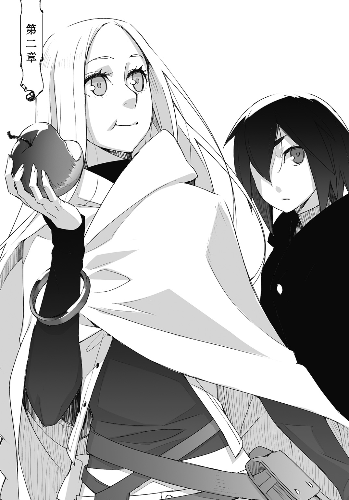
治癒促進剤からの目覚めはいつもそうだった。
微睡みはなく、だが爽やかな目覚めでもない。
ゆっくりと持ち上がった目蓋は少し腫れぼったく眩しさに目を細めるようにも見えた。
ランタンは気怠げな雰囲気を漂わせながら細めた視線を彷徨わせる。
感覚は指の先までしっかりと行き渡っている。
だが身動きが取れないのは傷を癒やすために体力の尽くが消費されたため。そして身体に張り付く少女の体温と、生暖かい湿り気のせいだった。
まさか。
ランタンが獲物を捕らえた蜘蛛のように絡みつくリリオンの手足を引き剝がして、念のため恐る恐る布団を捲り上げた。
世界地図は描かれていない。ランタンはほっとしてのそりとベッドから這い降りた。
シーツをぐっしょりと湿らせたのは寝汗だった。
ランタンは額に張り付く前髪を搔き上げて、濡れた掌を寝衣で拭った。その寝衣もひどく湿っていて重たい。
窓から差し込む朝日にランタンは大きく欠伸を零して目を擦る。
ランタンは部屋から一歩出て、小間使いの小僧を見つけると湯の用意を頼んだ。
小僧はすぐに湯気の立ったたっぷりの湯と、言われずとも預けておいた洗濯物を一緒に運んできた。なかなか気の利く小僧である。
ランタンはあられもない姿のリリオンを布団の下に隠してから部屋に通し、昨晩の食器類を片付けさせた。その仕事ぶりをベッドに腰掛けて眺める。
小僧の顔立ちは大人びて見えたが、ランタンとそう変わらない年齢だろうと思われた。
小僧は向けられる視線に緊張しているようだ。
寝汗に髪が張り付き、着崩れた寝衣一枚のランタンは奇妙な気配がある。
ぎしりとベッドが軋み、小僧がこっそりと視線を向けた。
布団の下から白い腕が伸びてランタンの腰に絡みつく。
「うー......、うぅ......」
リリオンが目蓋の持ち上がらぬ眠たげな顔を布団の中から亀のように覗かせた。そしてその顔をランタンの腰に押し付けて呻いている。
ランタンは淡く頰を緩めて、濡れて冷たい髪に指を通した。
小僧が驚いたように動きを止めた。
大人びた顔立ちが一転して純朴な少年のものになっていて、ランタンの腰に艶めかしく回された白い腕に唾を飲んでいた。ランタンはその視線を咳払い一つで追い払う。
小僧の位置からではリリオンの白い腕しか見ることができず、その腕の持ち主が涎を垂らしていたり目やにを付けている様などは知るよしもない。
小僧の頭の中ではこの白くほっそりとした腕の持ち主が、それに相応しい理想の女性の姿で補完されているのだろう。
ランタンは口元に哀れむような笑みを浮かべながらリリオンの後頭部から項に手を滑らせた。少女もランタンと同じ程に汗を搔いている。背骨の突起が指に触れた。
ランタンは腰に回った腕を解き、リリオンの寝ぼけ顔をシーツに沈めて隠した。
汗を落として、着替えをして、リリオンを起こして、それから。
ランタンは所要時間を計算し、一時間後に朝食を運ぶように小僧へ伝える。
ランタンは小僧に多めの心付けを握らせて部屋から追い払い扉に鍵を掛けた。
部屋に戻りながら寝衣を脱いで全裸になった。汗を吸った寝衣は床に落とすと重い音を立て、露わになった身体には部屋に籠もった空気さえ冷たく感じる。
指を固定していたテープを剝がし、傷口に巻いた包帯を外す。圧迫されていた患部に血が流れ込む痺れがあった。
ランタンはそっと腕を撫でた、
腕の裂傷は白い傷痕を残していたが、軟膏で貼り付けた皮膚は収まりよく癒着している。
だが指を握り込み、手首を曲げたりすると皮膚が引っ張られるような感覚がある。瞬間的に力が加わると、せっかく癒着した皮膚が千切れるだろう。戦闘には堪えられない。
上半身に集中する骨折も同じような感じだった。指の腫れは引いて開くも握るも不便はない。だが骨は完全に繫がっているのではなく、繫がり掛けている、という感じだった。
ギルド医の怖い顔を思い出した。わかってますよ、とそれを追い払う。
じゃぶじゃぶと顔を洗って、しっかりと絞ったタオルで身体の隅々にまで張り付く不愉快な汗の皮膜を拭い取った。ランタンは汚れたタオルを折りたたんで放り、下着だけを身につけるとゆっくりとベッドを振り返った。
「......」
盛り上がった布団の下から不埒な視線が覗いていた。
覗き見野郎は追い出したと思っていたが、どうやらこちらにもいたらしい。
ランタンは眉を顰めて、掛け布団を引っ剝がした。
「おはよう」
「......はよう」
ランタンが冷淡に見下ろすと、リリオンはバツの悪そうな顔をして、けれどそこはかとない満足感を隠しきれずにいる。ランタンはもう何度も裸を見られていたが、そうそう慣れるものでもなく恥ずかしさを隠すのに必死だった。そういう時は心構えが必要なのだ。
「見てた？」
「......見てた。綺麗だったわ」
ランタンは大きな溜め息を吐きだして表情を崩すと、リリオンの頭を撫でるように叩いた。
「じゃあ、どうすればいいかわかるね」
「ランタン――」
「手伝わないよ。――おねしょしたなら別だけど」
昨晩は手際が悪く手伝ってやったが、それを踏まえて時間は充分に取ってある。
ランタンはリリオンの甘えた声を一蹴して背を向けた。
「おねしょしてないよっ」
「はいはい、わかったから。早く済ませて」
リリオンがぺたぺたとランタンの背中を叩いて文句を言う。
それでもランタンは振り返らずに、背後から聞こえる衣擦れの音を聞きながら着替え始めた。一夜にして綺麗に洗濯、乾燥された服にはぱりっと糊がきいている。
外套買い直さないとな、と改めて考えながらズボンを穿き、胴衣のボタンを留めた。靴下を履いて、室内履きから戦闘靴に履き替える。とんとんと爪先で床を叩き、まだ背後から水音が響いているのでどうやって時間を潰そうか、とランタンは少し挙動不審だ。
覗き見野郎の仲間入りはごめんだが、すっかり着替えも終わっているのに壁を向いているのは馬鹿みたいだ。リリオンの裸体を見たからといって何があるわけではないのだから。
「ねえ、ランタン」
「なに？」
「こっち見て」
つまり振り返ったのはリリオンに呼ばれたからであって、そこにランタンの意思は介在していない。
背中に広がった髪の隙間から肩甲骨の浮き出る背中は相変わらず白く、背骨に沿って視線を下げると尾てい骨の尖った尻が丸出しだった。形はいいが小振りで肉付きが薄い。
昨晩はもう少し丸かったような気がする。汗の分だけ瘦せたようだ。
「背中、拭いて」
「他は」
「ちゃんと洗ったわ。指の間も」
ならばいいか、とランタンはタオルを受け取った。
リリオンは髪を項から一気に胸の前にかき寄せた。
リリオンは瘦せてしまっている。
背中を擦ってやると骨の硬さばかりが指先に触れた。やはり肉を食わせないとダメだな、とランタンはすっかり綺麗になった背中に指を這わせた。肉の厚みを測るように指で押すと少女が震える。
「やあだ、もう。ランタン。――くすぐったいわ」
思いがけぬ甘えた声に、品定めでもするような目付きになっていたランタンは慌てて指を放して目を閉じる。視界が闇に覆われるその寸前に、何一つ隠さず振り返ったリリオンの姿が映った。目蓋の裏側に小首を傾げる姿が思い描かれた。
「綺麗になった？」
「......うん」
「どうして目を閉じてるの？」
「特に、意味はない。早く着替えて、身体冷えるよ」
ランタンは平静を装って言い、聞き耳を立ててリリオンが服を身につける気配を探った。
下着に足を通し、肌着に袖を通し、ズボンを穿いてボタンを閉める。お揃いの胴衣を着て、巻き込んだ髪を外に広げて、リリオンは立ったままタイツを履けないのでベッドに座る。
そのベッドの軋みを合図にランタンは目蓋を持ち上げた。
「なんか、くるしい」
「......前後が逆だよ」
ノックの音が響き、ランタンはリリオンを扉から見えないところへと追いやった。
朝食が今朝の小僧によって運ばれてきて、小僧は部屋の中が気になったようだったがランタンが中には入れさせなかった。リリオンは涎も目脂も綺麗になっていたが、肌着の前後を直すために鳩尾近くまでが丸出しだった。
小僧が運んできた台車を部屋の中に入れて、ランタンは朝食をテーブルの上に並べる。
それはもうひたすらに。
昨晩は戦闘の後遺症もあって軽い食事をするにとどめたが、一夜明けた探索者の食欲は治癒促進剤の力も得て恐ろしい程に回復している。
朝食は多めに頼んだのだが、もっと増やしてもらってもよかったかもしれない。
リリオンは失った肉を取り戻そうとするかのような健啖家ぶりを発揮して、ランタンも傷を癒やすために消耗した熱量を欲していた。
卵を五つ使ったオムレツには賽の目に切った鶏肉と色目も鮮やかな野菜が混ぜ込まれていた。オムレツは甘い味付けで生クリームやチーズが混ぜられてふんわりとして、野菜はしゃきしゃきと歯ごたえよく、鳥肉の旨味は卵のまろやかさをよく引き立てた。
パンは林檎酒の酵母で発酵させたもので、林檎の果肉も練り込まれている。酵母パン特有の酸味が有り生地自体は硬めで素朴な味わいだった。林檎を搾ったジュースにはよく合って、リリオンはこれを気に入ったようだった。
他にも豆を磨りつぶした緑鮮やかなスープや、茸とほうれん草のパイ包み、分厚いハムステーキや山盛りのチーズサラダでテーブルの上はいっぱいになっていたが、それら全てをすっかり食べ終えても腹八分目という所だった。
ランタンですら八分目なのだから、リリオンはまだまだ物足りないようだ。
「ちょっと足らないね」
デザートのアップルパイはシナモンの香りがした。リリオンはそれを手摑みで丸囓りにして、ランタンは、まあこれぐらいなら、とフォークに突き刺した一切れを口に入れて注意の言葉と一緒に飲み込んだ。二口で食べ終えてしまっては注意する暇もない。
追加で料理を持ってこさせてもよかったが、どうせ通りを歩かねばならないのでそこで買い食いをすることにした。そう決めるとランタンは半分残ったパイをリリオンに食べさせてやって、リリオンの髪をざっと梳かして首の後ろで一纏めに縛った。
「忘れ物は？」
「ないよ！」
ランタンはフードを失った外套を羽織り、枕元にいくらかの銅貨を重ねて部屋を引き払う。
目抜き通りに出るまでの繫ぎとして二人は丸ごとの林檎を囓りながら朝の街を歩いた。
街はもうすっかりと目覚めていて、爽やかさと忙しい喧噪が日溜まりの中で混ざっている。
頰に触れる陽射しがぽかぽかと暖かくてランタンとリリオンは欠伸を漏らした。
「ねえ、これは？ フードあるよ」
「んー、ごわごわしてるから嫌」
「じゃあこっちは？」
「ちくちくするから嫌。そんなの着たら痒くなっちゃうよ」
林檎をぺろりと平らげたリリオンは、今は串焼き肉を片手に持っている。
目抜き通りの店々を冷やかしながら二人はのんびりと散歩をしていた。
ランタンが外套を探すとリリオンは張り切って視線を彷徨わせたがなかなかランタンの眼鏡に適うものはなかった。
「どうせなら仕立て直してもらおうかなあ。結構気に入ってるし、これ」
「――これにしましょうよ、わたしのと同じ色」
「......もうちょっと色々見てからね。外套って防具の範疇かなあ」
ランタンはリリオンの提案に言葉を濁して、リリオンの手を引っ張って指差した陳列窓の前から離れた。
「さっきのがいいのに」
拗ねるような声が幼気で、ランタンは少し心が動かされたがそうやって甘さを見せるとお揃い風装備が風ではなくなってしまう。
「防具なら、グランさんが作ってくれるの？」
「被服系ってお願いしたことないから、どうなんだろうね。あの指で針って握れるのかな」
二人が目指すのはグラン武具工房だった。
特注品の戦鎚とあり物を仕立て直した大楯を比べるのは可哀想であるが、戦鎚は素人目には問題なさそうで大楯は素人目にも整備行きだった。
大剣は鞘に収めれば人目から隠せるが、楯はそういうわけにはいかない。
使い込まれたと言えば聞こえがいいが、傷つき見窄らしい装備を衆目に晒しても得られる物は同情と侮りだけだった。
職人街に入ると爽やかさを吹き飛ばす忙しない音が響いてくる。日の出から日の入りまでこの調子だというのだから頭が下がる。ランタンは道中で紙袋一杯に買い込んだ揚げ芋をほくほくと食らいながら鎧戸の開放された作業場に足を踏み入れた。
「おはようございます！」
工房では既に多くの職人が仕事に勤しんでいた。
揃いも揃ってむさ苦しい男たちが、赤く焼けた鉄が跳ねるのも気にせず鍛え込まれた肉体も露わに金槌を振り下ろしている。
金属を叩き鍛える音色の隙間を子供特有の硬質な声が通り抜けた。
幾人もの職人が振り返り、野太い挨拶が返ってきてリリオンがランタンの手を握り締める。
以前訪れた時は休暇だったし、大剣大楯を取りに来た時は表から入った。
リリオンはまったく知らない場所へと来てしまったのではないかというような不安な顔つきになっている。
いや、これはただ単に職人たちが怖いのだ。
武具職人達は探索者顔負けの獰猛な雰囲気を持っている。
ランタンは手近な職人にグランを呼ぶように頼み、紙袋一杯の揚げ芋を差し入れに渡した。
「親方あっ！ ランタンくん来ましたあっ！ ――んまい」
ランタンの来店を伝える怒鳴り声が伝播して、工房の奥からグランがのそりと顔を出した。探索帰りの二人の無事な姿を見ると、おう、と太い腕を持ち上げて近付いてくる。
「よし、今回もちゃんと戻ってきたな」
グランは挙げた手を振り下ろしどかんとランタンの背中を引っぱたいて、その隣のリリオンにも手荒い帰還の祝福を喰らわせていた。
ランタンは治りかけの肋骨に染みた痛みに咳き込み、グランを睨みながら衝撃を防いでくれた背囊を足元に下ろした。
「おかげさまで、無事迷宮を攻略できました」
老職人は一通り帰還を喜び終えるといつものようにずいと手を差し出した。
ランタンは諦めたように睨むのをやめて、その手に戦鎚を渡した。リリオンの大楯は筋骨隆々の職人が二人がかりで預かって、重たげに支えている。
「......ふむ、象でも吹っ飛ばしたのか？」
「熊です」
「熊か。そらあ、難儀なことだ。――柄が少し反ってるな、鎚頭も熱で歪んでる。鶴嘴の先もちょっと潰れたか」
よくやったなあ、とグランはしみじみ呟いた。戦鎚の不虞を指先で愛撫するように撫でて、老職人はランタンたちの潜り抜けた戦闘を思い浮かべているようだった。
「まあ三日ってとこだな。だがこっちは酷えな」
グランは大楯を見て顔を顰めた。
その表情を見てリリオンが叱られたようにびくっと肩を震わせて、職人の一人が楯から剣を引き抜くとグランの表情はいよいよ恐ろしくなった。
ごつごつとした硬い手が、ランタンの小さな頭を鷲摑みにした。
「おい、あれ」
「......」
「どうみてもお前の仕業だよな」
大剣は刃の半ば辺りが拉げ潰れている。それはもう酷い有様だった。
「熊の腕を落とすのに、どうしても必要だったんです」
「ちっ......だからってなあ。鑿じゃないんだぞ。いっそ片刃のでも新調するか？」
なあ、とグランはランタンの頭を揺すりながらリリオンに問い掛けた。
リリオンはランタンの顔色を窺おうとしたが、ぐらぐらと揺れるランタンと視線が合わないので眉を八の字にして困り切った表情で二人の顔を何度も見比べた。
「あう、......あの、あの、わたし、今のままで、いいです」
「嬢ちゃんも客なんだから好き勝手に言ってくれて構わんぞ。楯が重いだの剣が軽いだのとな。――坊主なんてそりゃもう我が儘放題で」
「ちょっと整備以外にもお願いがっ――」
ランタンはグランが言い切る前に職人の手の中から逃げ出した。
「――ありましてですね」
「なんだよ。うるせえな」
ランタンは背囊から布きれに包んだ嵐熊の鉤爪を取り出した。
黒曜石に似た色合いの爪を見てグランはふんと鼻を鳴らした。
「どうせなら熊の手を丸ごと持って来いよ。ありゃ珍味だぞ」
「それは気が利かなくて申し訳ないです」
「冗談だよ。で、これはどうすんだよ？」
嵐熊の鉤爪は美しく湾曲して、充分な長さがあり、ランタンの戦鎚と打ち合っても欠けぬ程硬く、リリオンの大楯表面を切り裂く鋭さを有していた。そしてそれでいて軽金属のように軽い。失った狩猟刀の代わりにはならないだろうか、と思って持って帰ってきたのだ。
グランは爪の一本を手に取るとがじりと口に咥えた。そして干し肉でも嚙むように何度か咀嚼すると、考え込むような難しい顔をして吐き出した。
「ふうん、硬度は充分だな。靱性も悪くない。素材の特性を見るために一本潰しちまっていいか？」
「構いませんよ。と言いますか狩猟刀が二本できればいいので、余った分は好きにしてくださっていいです」
「鉈を作るわけでもあるまいに、何とも太っ腹なことだな。太っ腹ついでに言うが素材持ち込みとは言え特注品だからそれなりに高くつくぞ」
「全額前払いでも構いませんよ」
試すようなグランの物言いにランタンは余裕綽々に答えた。
何だかんだとランタンは高級取りで、迷宮を一つ攻略したばかりのランタンの懐は温かい。
そんなランタンの様子にグランは何とも言えぬ表情になって頭を搔いた。
物を見ずに全額前払いしても本当によかった。
どのような物であろうともグランの仕事ならば下手な物が出てこないことは当然のことで、ランタンはグランの仕事だけではなくその人格にも信頼を寄せていた。顧客に出来損ないを高値で摑ませるような真似はしないのだ。
グランは一つの工房を取り仕切る大商人でもあるが、それ以上に誇り高い職人である。
「柄にはこれを使えませんか？」
ランタンは以前の狩猟刀の柄をグランに差し出した。刀身は嵐熊の体内で爆発四散し、柄の中に挟み込まれた茎だけが狩猟刀の造りの厚さを思い出させる。
「ダメだ、使えない。ここの罅がぐるっと回ってるから、力入れたら割れちまう。補強してもいいが新しく拵えた物よりは当たり前だが強度は落ちる。こいつだって魔物相手に使ったんだろ？ ママゴトに使うんじゃねえからな。まあ握りの参考にはするさ」
「そうですか」
愛着があり名残惜しくはあるが、探索に使う道具だ。感傷に引きずられてはいけない。
ランタンは、お願いします、とだけ言って頭を下げた。
「ああちゃんと処理しておくよ。でだ、二本ってことは坊主と嬢ちゃんのだよな」
「はい」
「ふへっ？」
ランタンが当たり前のように頷くと、蚊帳の外で二人のやり取りを聞いていたリリオンが素っ頓狂な声を上げた。
「あれ？ 言ってなかったっけ」
「聞いてない」
狩猟刀は、というかいわゆる副装はいざという時のためにあって困るものではないし、今回の探索のように片方が壊れてしまった時の予備にもなるし、魔精結晶の採取なども二人で行えば効率が上がる。
せっかく探索班を組んだのだからその利点を生かさない手はない。
だがそれだけではなく別の理由もあった。
「じゃあちゃんと言っておかないと。リリオンの初探索のお祝いにプレゼントしてあげる」
リリオンは目を大きく瞬かせて、喜ぶよりも貰ってばかりで恐縮しているようだった。
しかしお祝いだと言われれば受け取らざるを得ない。
ランタンは困り顔のリリオンを見てほくそ笑んだ。
「あ、――ありがとう」
か細い声に、はにかみを浮かべて少女は言った。
「ランタンとお揃いね」
「あ......！」
「なあに嫌なの!?」
「いや別に」
不服そうな顔つきのランタンにリリオンは詰め寄って、なんでなんでと喚いている。
そんな二人にグランは呆れ果てた視線を送り、呆気に取られている職人二人に戦鎚と楯を工房の奥へと運んでいくように指示を出した。
「うゔん、――楽しくじゃれついてるところ悪いが、手のサイズを測らせてくれ。さて、坊主の手は大きくなったかな」
グランはわかりやすく咳払いをして、まずランタンの成長していない手の大きさを測った。
そしてリリオンは、グランに手を出すように言われても何だかまごついていた。
「ほら、リリオン」
「うん」
リリオンは指が反る程に手を開いている。
「でも大剣の時に測ったばかりじゃないですか」
「お前と違って大きくなりそうじゃねえかよ、嬢ちゃんは」
リリオンの腕を摑むランタンの掌に強張りが伝わってきた。
ランタンはこっそりとリリオンの表情を見上げる。半開きになった口から、呼吸が浅く速い。指を切り落とされるのでは、というような緊張があった。
「おう、もういいぞ」
リリオンの掌が砂金を塗したようにきらきらとしていた。それは汗だった。リリオンは浮いた汗を隠すようにズボンで拭って、そっとランタンの背に隠れるように足を動かした。
ランタンはリリオンの脇腹を擽るように揉みしだいた。
「わ、もうっ」
「もう終わるから」
小さく呟いてランタンは少女の尻を叩く。リリオンは尻を撫でながら微かに頷いた。
「整備の方は三日で終わらせるが、狩猟刀の方は一週間は欲しいな。どうする？ 狩猟刀の出来上がりに武器の整備も合わせるか？」
「いえ、三日後に武器だけ頂きに来ます」
「わかった、じゃあ整備間の代替品持って行け」
ランタンは戦棍を、リリオンは長剣を選んだ。
二、三試し振りをして二人揃って小さく首を傾げる。グラン武具工房の名誉に賭けて決して低品質の品ではないのだが、特注の戦鎚と比べてしまうとどうしても心許ない。ランタンはまあしかたないかと戦棍を腰に吊るして、リリオンのベルトに鞘を縛り付けてやった。
「作るのは狩猟刀だけでいいのか？ 十本もあれば他にも色々できるぞ。戦鎚の鶴嘴を鎌に取り替えたりな」
「他にですか？ うーん、何かあるかな？」
ランタンが何となくリリオンを見上げる。
「欲しいものある？ 探索で足らなくて何か不便だったとか」
リリオンは何か言いたそうにしていたので、ランタンは辛抱強く少女が口を開くのを待った。リリオンは胸の前で指をこねた。
「あのね、あのね」
長い睫毛を伏せて、その隙間から淡褐色の視線がランタンをちらちらと見た。
「不便じゃないんだけど、わたしね......」
「うん」
「ランタンに、わたしお料理作ってあげたいなって、思って、それでね」
リリオンはこねていた指を絡め、祈るように手を組んだ。
「ランタンに、......わたしを食べて欲しいな」
ランタンがその言葉にぽかんとすると、リリオンは自分の言い間違いに気が付いて恥ずかしげに唇を嚙んだ。けれどもう言ってしまったのだからと腹を括ったように、食べて欲しいの、ともう一度繰り返した。
「......すげえ殺し文句だな」
グランが腕組みをして頷きながら呟く。
ランタンはしばらくどうすることもできなかった。
◇◇◇
探索後の所用をあらかた済まし上街から下街へと下る頃には、住み家へと帰る路は夕焼けに染まっていた。
下街の目抜き通りを外れて、ランタンとリリオンは並んで道とも呼べぬ道を歩いていく。
廃墟同然の街並みを通り抜けた風はどこか埃っぽく、奥まった方へと進むにつれて石のような寒々しさを感じさせる。
それは崩れた街並みの影に溜まった冷気が、風に押し出されているようだった。
建物の中を通り抜けた風が、扉などあるはずもない玄関から突風のように吹き抜けてランタンのフードを外した。ランタンがいそいそとそれを被り直そうとすると、リリオンが外套に繫がれたフードを指の先でちょんと摑まえた。
リリオンは神妙な顔つきで恐れるように、柔らかく滑らかな生地を指で縒っている。その指先に摘んだ分だけで、どれ程の金額になるのだろうかと考えているのかもしれない。
フードが切れた外套を下取りに出して、ランタンは外套を新しく買い直した。もちろんリリオンの着ている物とは色が違う、以前と同じように黒い外套だ。
しかしただ黒いわけではない。
それは物質系魔物の外皮より取れる鉱物染料で染め上げた艶めかしい黒紫だ。まるで星月のない夜を切り取ったような美しい色合いであったし、ただ良い色合いであるだけではない。
妖蚕の繭を製糸した特殊な糸で織った生地は正に生きた布である。染め上げる際に同時に魔精加工を施してあり、その防御性能もなかなかの逸品だ。
火竜の息吹を遮断し、大海蛇の水砲さえも散らすらしい。
もしかしたら火竜も大海蛇も幼生体であるかもしれず、店員の売り文句に騙された可能性もあったがランタンは大満足だった。
防御性能はランタンにとってはあって困らない程度の要素でしかない。
ランタンはリリオンの頭を撫でるように、殊更優しく外套の表面を撫でた。外套の触り心地は絹よりも柔らかで滑らかだ。ランタンは今にも外套に頰ずりしそうな程だった。
装備を選ぶ時にランタンが最も重要視するのは着心地だった。
魔精によってどれだけ身体が強化されようとも、服を着た時に感じる首筋の毛羽立ちは我慢ならない。骨が折れようと、肉が裂けようと痛みを我慢することはできるが、ランタンは靴擦れになっただけで歩けなくなる。
人の身体は不思議なものだ。
「......うー」
リリオンが小さく唸って指先から弾くようにフードを手放したかと思うと、ランタンの手を取った。まるで外套からランタンを奪い返すように。
「わっ、なになに？」
リリオンが自らの胸にランタンの手を当てて、逃げ出さないように押さえつけた。
少女らしい慎ましやかな胸は、それだけに心臓に近い。
ランタンは足を止めて、そこから響く心臓の鼓動を掌で聞くばかりだった。
ほとんど平らなのに柔らかいものだな、と思わず本能的に動かした指先にリリオンが小さく表情を変えた。恥ずかしがっているのではないようだった。
「あの、――リリオン。ごめん」
ランタンは反射的に謝って、胸の中に埋まるような手をどうにか引き抜く。そして指を絡めて手を繫ぐとそのまま風の吹き抜けた玄関を潜り、リリオンを抱きしめて壁に押し付けた。
「きゃっ！」
壁に少女の声と、金属音が反響する。
ランタンが戦棍を右手に、振り下ろされた斬撃を受け止めていた。
切り取られた廃墟の中の空間。天井は半ば抜けて、二階に人の気配はない。
壁の向こうにも人はおらず、空間の中にはランタンとリリオン、そして襲いかかってきた赤ら顔の男がいるだけだ。
ランタンは戦棍と剣の間に起こった火花の散る一瞬に判断を下すと、手首を返して受け止めた剣を巻き落とし、前のめりに崩れる男の腹を蹴りつけた。
そしてリリオンを背中に守るよう身体を入れ替えた。
「ラン、タン......？」
驚きと怯えの入り交じった声を背後に聞きながら、ランタンは男を睨み付けた。
人気が少なく、それでいて通り道となりそうな廃墟に身を潜め、不意を衝いて襲いかかり、殺して金品を奪う。下街では騒ぎ立てる程のことでもないよくある犯罪の一つだった。
押し返した男はぐらりと二、三後退してしくじったことにむっとした顔つきになった。
わりと強めに蹴ったのだが男は持ち堪えた。靴底に伝わる腹筋はそれなりに硬く、酔っているようだったが身体の軸がしっかりしている。
だが状況判断は遅い。
ランタンはその顔面に問答無用に戦棍を振り下ろして鼻を潰すと同時に、足払いをしかけてその場に素っ転がした。
待ち伏せ強盗など掃いて捨てる程ある話ではあるのだが、万に一つということもある。
ランタンは比喩表現ではなく赤ら顔になった男の顎を戦棍で持ち上げた。
男は何やら汚らしい呻き声を上げたかと思うと、乱暴に鼻から息を吐いて鼻血を抜ききった。ランタンは咄嗟に戦棍を引っ込める。鼻水混じりの鼻血で汚れるのが嫌だったのだ。
「うおえ、ぐへ、あー、くそがっ。鉄臭え」
強盗は鼻を潰されたというのに何とも暢気なもので、鬱陶しがるように腕で鼻血を拭って汚らしいコートの懐を弄った。
あれえ、ないぞ、と独り言を呟いている。
「おい、勝手に動くな。殺すぞ」
「それはちょっと勘弁してくれ。くそ、ああ、よかった無事だ。へへへ」
ランタンが威圧しても、男はお構いなしだった。
こめかみに青筋が立ってもランタンの童顔は恐ろしくない。
だがそのことを差し引きしても異様な対応である。
痛がる素振りも、怖がる素振りも見せることがない。ランタンは油断無く男を睨み続けた。
けれど男が懐から取り出したのは凶器ではなく水筒だった。男はそれを耳元で揺らして、まるで自慢するようにへらへらと笑った。
「なあ、いいだろ？ 混ぜ物なんか一つもない上等な蒸留酒を先払いだぜ。ふへ、仕事終わりにやっぱり飲みたいじゃねえか」
「仕事？」
男の言葉にランタンは片眉をぴくりと持ち上げて、低い声で尋ねた。
だが男は震える手でどうにか水筒の蓋を開けようとするのに必死だった。
ランタンは戦棍で男の手を叩いた。蓋を握る男の中指が、ばきと音を立ててひっくり返るように根元から折れた。
「質問に答えろ。じゃないと手だけじゃなくて、あー、えっと、どうしようかな。――その水筒を砕くぞ」
「ダメだっ！」
顔を砕くぞ、と言うよりもそれは効果のある言葉だった。男は折れた中指のことなど気にもせず、それこそが命であるように水筒を抱きしめてランタンから隠した。
「先払いって言ったな。誰がお前に、何を命じたか言え」
「飲みたいのに我慢したんだ、仕事終わりに――」
「黙れ。質問に答えろ」
慌てて言い訳をする男に、ランタンは冷静だった。冷ややかな視線に晒された男は、酔っ払いが夜風に当たったように僅かに正気を取り戻した。
「ああ、ええと、たしか、あれ？ うん、誰かは知らん。でも、ここを通るガキを殺せば、酒と薬をくれるって」
そこで一度ひゅっと息を吸って笑った。
その時のことを思い出したのか無邪気さすらある笑みを。
「先払いでこいつと、薬はもう飲んじまったけどよ。これを満タンにしてくれるっていうんだぜ。ガキを一匹殺るだけで。だからいい奴だな、うん。な、いい仕事だと思ったんだよう、わかるだろ。あ、ガキにゃまだわかんねえか。こいつの美味さは――」
会話の途中で男の耳が飛んだ。
ランタンの背中からリリオンが飛び出して、長剣を振り下ろしたのだ。
ランタンが慌てて通り過ぎ様の髪を引っ摑んで止めなければ、長剣はそのまま鎖骨を割って胴を斜めに抜けていただろう。
長剣は男の肩の上に載っかるようにして止まっている。
「痛ぁっ！ 約束と違っ――ぐあっ!!」
「黙ってろって。......リリオン、どうしたの？」
顔面に蹴りを一発叩き込んで黙らせる。
汚れた靴底を地面に拭い、ランタンは摑んだ髪から手を離した。
そして乱暴にしたことを詫びるように優しく撫でた。
リリオンはゆっくりとランタンを振り返る。目を大きく見開いて、浅く開いた唇から漏れる吐息が震えていた。
「だって、この人、ランタンのこと殺すって！」
切迫したような早口でリリオンは捲し立てた。ランタンは少女を落ち着かせるように頷く。
「......うん、でもまあ、もうちょっと後でね。おい」
ランタンの呼びかけに、仰向けに倒れた男は精一杯に急いでいるのだろう緩慢な動作で身体を起こして、やはり気にしていたのは水筒だった。
もう死から逃れられぬ事を悟っているのか、それが死に水であるかというように水筒の蓋を口でこじ開けようとしている。
ランタンは戦棍を鋭く振り上げた。
――唐突に男の頭が弾けた。同時に、戦棍に指が痺れるような衝撃。
ランタンは再びリリオンを守るように一歩前に出て、地面に突き立った矢に視線を向けた。
それは男の後頭部をごっそりと抉るように貫き、深々と石の地面に埋まっている。ランタンが戦棍で迎撃した矢は砕けて辺りに散らばっていた。
窓から二本の矢が飛び込んできたのだ。
「な、なにっ？」
仰向けに倒れた男にリリオンが驚きの声を上げ、ランタンは手振りで後ろに下がらせた。
「口封じでしょ。あーあ、知らない奴でも頼まれた時に姿形ぐらいは見ただろうに。酔っ払いってだから嫌いだ」
ランタンは誘うように射線に身を晒したままだったが、三射目は来ない。
矢が撃ち込まれた窓に近付く。男の頭部を撃ち抜いた正確さや、その角度からいって死角からの曲射とは考え辛い。ならばあそこか、と夜空の中に浮かぶ影のような廃墟群、その中から突き出た一つの建物をランタンは見つめた。
「なかなかいい腕だな。一キロ以上あるかな、暗くてよくわかんないな」
夜の闇の中。あの建物からでは窓の大きさは親指の爪程もあるかといったところだろうし、その中にある男の頭部を正確に射貫いた技術は賞賛に値した。
そして男の頭を射貫いてなお地面に突き刺さる威力。速射した二発目にして迎撃した戦棍に伝播する矢の威力。
痺れを思い出しランタンは唇を歪め、戦棍に視線を落とした。
八枚の鉄板が放射状に並ぶ戦棍の先端。鉄板の内の一枚が矢の衝撃で歪んでいた。代替品だというのに。グランに怒られるかもしれない。
使用した弓もなかなかの強さのものだろう。
その威力を出すためには、それこそ探索者でないと引けない程の張力であったはずだ。だが探索者はあまり弓を使わない。
遠距離攻撃の有用性は言わずもがなであるのだが、魔物相手、そして迷宮相手にはなかなかその有用さが発揮されづらいのだ。
その弓術にこれ程の練度を有するのなら、迷宮外でそれ相応の訓練を積み腕を磨いた者である可能性が高い。
「となると襲撃者かな。騎士崩れって事はないだろうし。この帰り道はもう使えないかなあ」
ランタンは地面に突き刺さった矢を踏み折った。素材は何の変哲のない鉄。これから足取りを辿ることはできないだろう。職人ギルドや商人ギルドに所属する真っ当な工房や商店で製造販売されたのではなく、下街のどこかで製産された物だと思われる。
ランタンはリリオンを振り返った。
「もう壁から離れていいよ、敵はどっか行ったみたい」
ランタンが異様なぐらいに落ち着いているせいか、リリオンも男に斬りかかった時のような不安をすっかりとなくしたようだった。長剣を鞘に収めて、飛ぶような足取りでランタンの隣へ。そして男の死体を覗き込み、窓の外を見つめた。
「追いかけないの」
「別にそんな脅威でもないよ、これぐらい。よくあることだし」
治安の悪い下街に住む、小さく華奢で身なりのよいランタンは何だかんだと悪党によく絡まれるのである。そしてそれらの尽くを返り討ちにしているので、悪党たちからあまり好かれていない。
はっきりと顔が割れているわけではないのだが、フードを目深に被った小さい人影は目を引く姿である。
こういった待ち伏せは日常茶飯事だった。
「それにここで待ち伏せをしたって事は、家の場所はまだ知られてないって事だし」
この廃墟は住み家への路を選択する数ある分岐点の内の一つに過ぎなかった。
それも住み家からわりと遠い位置にある重要度の低い分岐点だ。この廃墟で待ち伏せをされたとして、ランタンとしてはそれほど脅威のあることではない。
「いざとなれば住み家を別に移せばいいだけだしね」
ランタンは念のために男の死体を漁ったが、身元を示すような物は所持していなかった。
鍛えた痕跡の残る萎んだ筋肉。矢の衝撃に直角に折れた首から、脱臼した肩に掛かる色の褪せた入れ墨。垢にまみれた不潔さ。腕には注射痕があり、内出血を起こしたように鈍い紫に染まっている。半開きになった口から覗く歯列はやせ衰え、最後の瞬間に水筒の蓋を強く嚙んだのだろう前歯は一つ残らず折れていた。
「んー、麻薬で痛みを消してたのかな。本当にお酒だけか、持ってるのって。ふうん結構いい値段付けて貰ったもんだな」
子供一人殺す報酬が酒と麻薬。
それは下街では充分すぎる程の報酬だった。
もっとも探索者相手の対価としては、安いどころの話ではない。おそらくランタンが探索者であることは男には伏せられていたのだろう。
そして、そもそも男に話を持ちかけた誰かは男がランタンを殺すことなど毛程も期待していなかったのだ。この男の役割はランタンを廃墟内に足止めする囮でしかない。
自業自得だな、と冷淡に思いながらもランタンは廃墟の隅に吹っ飛んだ水筒を仰向けになった男の胸に載せた。半開きになった蓋の隙間から透明な液体がじくじくと染み出して、ゆっくりとゆっくりと男の胸を濡らした。
「収穫無し。もういいや。帰ろうか。でも一応、周囲の警戒はしてね」
敵は逃げたが、ある程度の行動パターンは読まれていると思っていた方がよさそうだった。
帰り道の一つに待ち伏せがあったこともそうであるし、迷宮を攻略した直後の探索者は仕留めるには手頃だ。何しろ金は持っているし、高確率で手負いである。
それにランタンは怪我の具合にもよるが、上街に一泊、そして下街の住み家に帰るというパターンが多いことは確かである。おそらく狙い撃ちだったはずだ。
「うん、わかった、でも......帰るのに、そっち戻るの？」
入ってきた玄関から出ようとランタンがリリオンの手を引いて踵を返すと、少女は小首を傾げる。
「念のためね。こういう時のために帰り道は幾つか用意してあるからさ。たまには別のも使わないと忘れちゃうし。下水道を通る道もあるんだよ。まあ使いたくないけど。暗いし、変な虫とか鼠とかいるし、何より臭くて汚いからさ」
「ふうん、大変なのね」
「そんなこと言って、もう。リリオンもちゃんと覚えとかないとダメだよ。迷子になってもしらないよ」
「平気よ、だってわたしはランタンと一緒だもの」
リリオンはぎゅうっとランタンの手を握って、楽しそうに腕を振った。
「怪我に響くよ」
「わあ、ごめんなさいっ！ 痛かった？」
「ううん、平気」
リリオンは手を放して、まるで守るようにそっと腕を抱いた、
星が降り注ぐように夜空にあって、足元に落ちる影が夜だというのに濃い。
迷宮へ出発した時の路ともまた違う帰路に、リリオンはランタンに寄り添いながらきょろきょろと辺りに視線を飛ばしていた。
「ねえ、この道で合ってるの？」
最も人目のない帰路の一つである。
もうずっと廃墟と廃墟の隙間、路なき路を進むランタンとリリオンの足音しか聞こえず、まったくと言っていい程に人の気配がなかった。
ランタンが背後を確認すると、少女は髪の毛を振り回すように振り返ったりもする。
「合ってるよ。もしかして怖いの？」
「怖くないわっ！」
「ふうん、ほら、もうすぐだよ。そこを抜けたらね」
目の前には住み家にしている集合住宅の後ろ姿がある。裏側から住み家を見たことのないリリオンは、ランタンに手を引かれて前に回り込んでようやく少しだけほっとしたようだった。集合住宅は探索に出かけた前とまったく同じ姿でそこに建っている。
「暗かったから、ちょっとわからなかったのよ。朝ならわかるわ、本当よ」
「はいはい、星も月もこんなに出てて真っ暗だもんね。しかたないよね」
「もうっ」
意地悪そうに言うとリリオンは拗ねた声を上げる。そしてランタンの腕を引っ張るようにして外階段を一段飛ばしに上った。
「ちょっと、狭いし急なんだから引っ張らないで。危ないよ」
ランタンがそう言うと、リリオンは一度立ち止まってランタンの肩を抱きしめるようにしがみついた。狭い外階段を並んで上れるように。リリオンはこの集合住宅が似通っているだけの別の建物ではないかと、まだ少し怖がっているように思える。
明かりの灯らない建物は確かに少し不気味である。
だが、だからといって外に光源を置けば、集まってくるのは蛾ばかりではない。これまで隠し通してきた住み家は、あっという間に浮浪者に蹂躙されることだろう。
ランタンは玄関扉の前に立ち止まると、それがしっかりと施錠されたままであることを確かめる。それからようやく鍵を使って開錠した。
がちゃん、と響く金属音。
それを耳にした瞬間に、ランタンの身体が無意識に弛緩する。
扉を開くと、出かける前とまったく同じ部屋の景色がある。誰も忍び込んでいないことを伝える停滞した空気の中に自分の匂いを見つけ出して、ランタンはゆっくりと息を吸った。
「ただいまー、おかえりー」
ランタンは誰にともなく言いながら部屋に足を踏み入れた。歩きながら外套を脱いで、背囊を下ろす。魔道光源に衝撃を加えて部屋を照らし、戦棍を壁に立てかけた。
狩猟刀を外そうとして空を摑み、ランタンは苦笑を頰に滲ませながら最初からそうするつもりだったように腰に巻いたポーチを外した。
ベッドにどっかと腰を下ろして、このまま倒れ込んでしまいたい、と思った。
リリオンが扉の外に佇んでいた。
「どうしたの？」
家に帰るまでが探索だ。それは最後の最後まで気を抜くなというただの戒めに過ぎないが、リリオンにとってこの瞬間こそが初めての迷宮探索、その終わりの瞬間なのかもしれない。
ランタンはベッドのバネを軋ませて立ち上がり、その勢いのまま部屋の真ん中まで足を進めた。そして仁王立ちになると、両手を広げて目を細めた。
「ほら、おいで」
それから口元に優しげな笑みを浮かべて、少女の名を呼んだ。
「おかえり、リリオン」
「......――ただいまっ！」
リリオンは大きく一歩踏み出して敷居をまたぐと、そのまま駆け寄ってぎゅうっとランタンに抱きついた。
ランタンは後ろに踏鞴を踏んでベッドの上に尻餅をつき、リリオンはランタンの怪我に障らないようにゆっくりと少年の身体を押し倒した。そのままベッドの上によじ登った。
「ちょっと――」
リリオンはランタンの柔らかな髪に顔を埋めるようにして、ずっと抱きついたままだった。
「ああもう、靴脱いで、ほら、外套も、背囊も、ポーチも、それに剣だって」
「うん」
「ああ、まったくもう、探索は疲れたもんね」
「うん」
「頑張ったもん」
「......うん」
「しょうがないね、この子は」
ランタンはリリオンの背中に手を回すと、そっと身体を入れ替えて腕の中から抜け出す。
リリオンは眠っていた。
ランタンは外套も上着も、襟首を緩めてやり、靴も靴下も脱がせて、髪も解いてやった。
リリオンの長身をベッドの上にきちんと押し込む。
広がった銀の髪の中、背を丸めて、膝を曲げて眠るリリオンは妖精のように幻想的で儚げな雰囲気を纏っている。
色々なことがあったが探索は無事に終わったと言っていい。
リリオンが初めての探索を無事に終えたように、ランタンも初めての孤独ではない探索を無事に終えたのだ。
ふいにその事を強く実感させられた。心臓がどくっどくっと音を立てている。
ランタンもすっかりと身軽になると、リリオンの隣に身体を横たえた。
すると何をしても身じろぎしなかった少女は、すぐにランタンに抱きついてきた。
互いの心臓の音色を重ね合わせるように。
ランタンは無垢な少女の寝顔にそっと語りかけた。
「おやすみ、リリオン」
それは祝福のように響く。
二人は自然と互いを抱きしめ合いながら、そのまま夜の安息に沈んでいった。
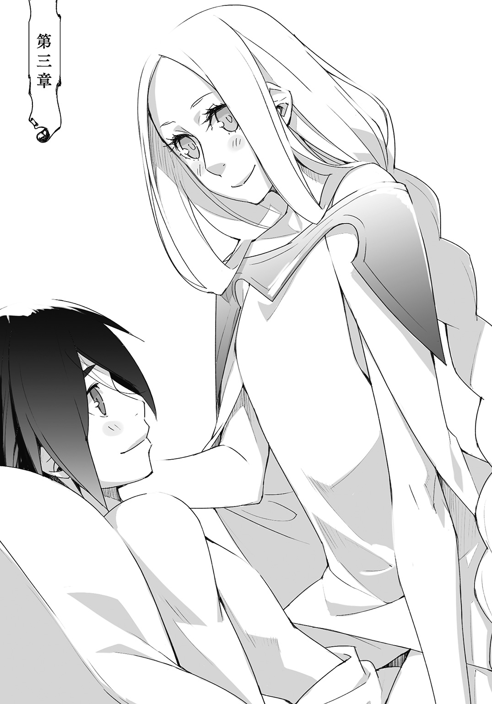
勝手に住み着いているこの部屋は、もしかしたら元は倉庫か何かだったのではないかとランタンは最近思い始めている。
玄関をくぐると長方形に切り取られた一つの空間がぽっかりとあるだけ。
そこから真っ直ぐ進んだ先にベッドがある。その脇に食事のための丸いテーブルがあり、少し草臥れている一人掛けのソファが半端な距離にぽつんと鎮座している。家具はそれだけで棚の一つもない。戦鎚や背囊といった探索道具は壁際に纏められている。
そして窓もなく、それがあったであろう壁は石が塗り込められてそこだけ僅かに色が違う。
魔道光源を消すとほとんど真っ暗で、玄関扉の下にあるほんの薄い隙間から入り込む光だけが唯一朝を告げるものであった。
荷物のように大人しくじっとするには都合のよい部屋だ。
床を這う光がそろりそろりとベッドに忍び寄り、やがてそこにある膨らみを照らした。
ベッドの上ではランタンとリリオンが一塊になって眠っている。
リリオンはランタンの身体を包み込むようにして、そしてランタンは胎児のように身体を丸めて小さな身体をいっそう小さくしていた。
三日間、そうやって過ごした。
誰に咎められることもなく、遮られることもなくひたすらに眠り、昼夜関係なく目を覚ませば背囊一杯に買い込んだ食料を貪った。そして空腹を満たしたならば再び眠りにつく。
それを日に何度も繰り返した。
この上なく無為で、非生産的な生活を送っているのにもかかわらずその姿に怠惰さを感じさせないのは、それが傷を癒やす獣の姿に似ていたからだろう。
探索者は次の迷宮を攻略するために眠りながらも爪を研ぐのである。
「ん、んうー、ふあ」
ランタンが目を覚ました。
そこがリリオンの懐の中だ、とはもう思わない。三日間の間にすっかりとなれてしまった。
ランタンは寝ぼけ眼の緩慢な仕草で、けれど服を引っ摑む少女の指を一本一本優しく引き剝がした。そしてその甘ったれた抱擁の中からするりと抜け出すと、そのままベッドの上に胡座をかいた。
「うあ、ああ、うがあ」
寝癖の立った髪をランタンは乱暴な仕草で搔き回して、牙を剝いて吠えるような欠伸を吐き出す。背筋がぴんと伸び、そこからさらに背をぎゅっと反らして、そのまま胸を突き出すように弓形に撓った。
するとびきびきと背骨が音を立てて、肺一杯に吸い込まれた酸素が血液によって筋肉に流れ込んで、童女のように細く小さいランタンの身体が一回りも大きく膨らんだ。
「ふむ......」
何かを納得するように小さく呟き、爪先で床を探すようにそっとベッドから降りた。
眠ったままのリリオンが言葉にならない言葉を呻き、遠ざかる体温を求めるように手を彷徨わせた。
けれどそこにはランタンの体温があるだけで、肉体はすでにベッドを降りている。
ランタンは口元を緩めて、自らのいた場所にそっと枕を近づけた。するとリリオンはそれを奪うように胸に抱いて、二度と離すまいと身体を丸めた。枕の端に嚙み付いているようにも、口付けを降らせているようにも見えた。
一体どのような夢を見ているのだろうか。
ランタンが顔にかかった銀の髪をそっと払ってやると、そこには穏やかな寝顔がある。
この三日間、この部屋を訪ねる者は一人もなかった。
リリオンはすっかりと気が抜けたようで、ランタンは目を覚まさない少女の頰を突いてから玄関の扉を開け放った。視界を白く染める眩しさに垢のように肌に張り付いていた眠気がはらはらと剝がれ落ちるようだった。
ランタンはすっかりと冴えた瞳で油断無く外を見渡し、知覚できる最大範囲までに隈無く探りを入れた。人の気配も、何かしらの違和感もないことを確認して扉を開けっ放しにする。
すると部屋の中の澱んだ空気が入れ替わっていく。
ランタンは清涼な外気と暖かい陽光を浴びながら、大きく伸び上がった。
筋の伸びる痛みをじっくりと味わうようにゆっくりと、大きく。服の裾からほっそりとした腹が覗き、吹いた風に臍がくすぐったかった。
目一杯に身体を伸ばすと、腹ばかりではなく、白い腕も袖から顔を出す。
半ばまで削がれ、再び貼り付けた皮膚はすっかり癒着して、けれど枯れた花びらのように褪せた色に染まっていた。ランタンは袖を捲り上げて、そんなことをしたのがバレたらば怒られることは目に見えているのだが、僅かにある痒みにこらえきれず腕を擦った。
古い皮膚は、正に薄皮を剝くように剝がれ落ちてその下からは薄紅色の新しい皮膚が再生していた。枯れた花びらが散って、新たな花が咲くように幾つもの薄紅色の花弁がランタンの腕に浮かび上がっている。
ランタンはその花弁の一つ一つを指先に触れて、手首を回して、それから骨が軋む程に拳を握った。
「うん」
皮膚の引っ張られるような感覚はない。
ランタンはそのまま肩甲骨を寄せて両腕を開き、肋骨を大きく広げ、限界まで横隔膜を押し下げ、深く息を吸い込む。破裂しそうな程に膨らんだ肺が内側から肋骨を押し上げる。
ランタンは何度も深呼吸を繰り返し、反動を付けるようにして何度も腰を捻り、手足を振り回し、最後に蜻蛉を切った。空中で一回転。着地に足音がない。
「よし」
消えがたく存在したこびりつくような痛みはすっかりとない。
ランタンは満足気に頰を緩めた。身体が思い通りに動くことは実に快楽的だ。
迷宮探索の疲労はなくなり、怪我も全て完治したといってよい。
強いて言えば今の今までベッドの上で生活をしていたせいで、身体が鈍っているような気がする。だがこれも精神的なものに過ぎない。いざ何者かに襲われたらば、ランタンは一瞬にして鋭さを取り戻す。探索者とはそういう生き物だった。
ランタンは絞り滓のようになった水精結晶から水を引き出して水筒を満たし、それを一口分だけ口の中に溜めた。舌の上で転がすように、ゆっくりと染みこませて喉を潤す。
水精結晶は魔精を失い、今は灰色にくすむ出来損ないの硝子片のようだ。もうこれが水を吐き出すことはない。水筒の中にある水だけがランタンの所有する唯一の水分であり、これをリリオンと分かち合い食事を済ませなければならない。砂漠の一滴に等しい貴重な水である。
「買い出しに行かないと、......二人だと減りが早いなあ。育ち盛りめ」
ランタンは振り返って、忌々しげに、そして悪戯っぽくそう口に出した。
探索前に増やした体重を、探索中にすっかりと減らしてしまった少女は、しかしこの三日間でそれなりに柔らかくなった。
似たような食生活を送っていたランタンとは比べるべくもない程に。
ランタンは陽光を背にベッドに近付いた。小さな背中では遮りきれない光から顔を逸らすように寝返りを打つ少女を覗き込む。
リリオンは胸に抱いた枕に顔を押し付けていた。押し潰された寝顔はよく言えば愛嬌がある。悪く言えば、まあ阿呆面である。
「あーあ、女の子がもう」
ランタンはわざと尻餅をつくようにどっかりとベッドに腰を下ろした。
寝こけるリリオンの頭がその震動に大きく跳ねて、けれど目を覚まさず、不機嫌そうに喉を鳴らして唸った。そっぽを向くように枕にいっそう顔を押し付けて俯せに。
「ほら、もう起きな」
ランタンは声を掛けながら少女の身体を揺すり枕を奪おうと手を掛ける。だがリリオンは必死に枕を握り締めており、強く引っ張るとむずがるように首を振った。まだまだ眠り足りないのか、それとも怠惰が癖になってしまったのか。
ランタンは呆れた視線を少女の後頭部に落とす。そして指先で軽く叩き、反応した瞬間を見計らって問答無用に枕を奪い取った。
「うー......！」
ベッドに突っ伏して不満げに呻いたリリオンを無視して、ランタンは潰れた枕を叩いて膨らませた。枕にはリリオンの涎がシミになっていた。ランタンはじっとそれを見つめると一つ嘆息して、枕を使ってリリオンを文字通り叩き起こした。
「ほらほら、さっさと起きる」
「うう、もう、......なによぅ」
「何じゃない、朝、――いや、もう昼だよ」
ランタンがそう言うと、リリオンはようやく目蓋を持ち上げた。眠りを妨げられたことではなく、朝食を逃したことを後悔するように重たげな欠伸を吐き出す。そして仰向けになると、甘えるように手を伸ばした。
「まったく、自分で起きなよっと」
言いながらもランタンはリリオンの手を取って、寝ぼける少女を引き起こしてやった。
もしかしたらリリオンが怠惰に浸ったのはランタンの所為なのかもしれない。
ずっと一人だったランタンは今まで発揮することなく埃を被っていた生来のかいがいしさや世話焼きな性質を惜しみなく、無意識的にリリオンへと注いでいた。
「ありがとう、おはよふわぁ」
大きく口を開いて欠伸混じりに言うリリオンは足を投げ出すように座り、小さな頭も重たそうにうつらうつらとして俯いている。
ざらりと垂れる髪を搔き上げる仕草が物憂げで、妙な色気を振りまいていた。
だが露わになった面差しには頰に枕の皺がくっきりと押し付けられて、口は半開きで今にも涎が落ちそうで、半分以上閉じた目には琥珀粒のような色の濃い目脂が付着していて色気もへったくれもあったものではなかった。
ランタンがあまりにもみっともないその顔を不憫に思い、唇を拭って目脂も取ってやった。
リリオンは擽ったそうに目を細めて、再び欠伸をしながら両手を突き上げて背筋を伸ばした。綺麗になった顔をランタンに見せるように。
ランタンは慎ましやかながらも寝衣をなだらかに膨らませる幼い胸に視線をやって、直ぐに逸らした。怠惰な生活により少女の体重は確実に増えた。それでもまだ細身であることは確かだったが、以前に比べれば確実に曲線的である。
「んー、お腹空いた。ご飯はなあに？」
ランタンは訊かれて、なんとなしに咳払いをする。そして手持ち全ての食料をテーブルの上に広げた。
五枚包みのプレーンビスケットが二袋。三分の一塊のチーズ。七面鳥の干し肉が一摑み。丸のままの林檎が二つ。各種調味料と、そして水筒。
「これで全部です」
「......ぜんぶ」
「水も、これで最後だから一気に飲まないように」
リリオンは水筒を取って耳元でちゃぷちゃぷと中身を鳴らした。
舐めるように一口だけ飲んでそっとテーブルの上に戻すと、夢見がちなふらりとした手つきで干し肉に手を伸ばした。
「こら、ちゃんと半分こするんだよ」
「はあい」
野菜は圧倒的に足りていないものの、必要な熱量を摂取するには充分な量の食事と言えた。
この三日間の飽食、そして暴食の日々を思い出せば質素どころの話ではないが不満を漏らしても量が増えるわけではない。
林檎を一口囓って口を潤して、それからビスケットの包装を開いた。
リリオンは石のように硬いビスケットをバリバリと言わせながら嚙み砕き、そのなだらかな胸元にビスケット屑をボロボロとこぼしている。ランタンは自らもそれを一枚口に咥え、自然と胸元の食べ汚しを払ってやっていた。
「ほら、水」
口の中の水分を失い、眉根を寄せる少女に水筒を押し付ける。ランタンは口の中でふやかしたビスケットを飲み込み、塊のチーズを指で千切って口の中に放り込んだ。そして余ったビスケットをリリオンに分けてやった。
ランタンは小軀であるが、鍛え上げられた肉体の維持に日々多量の熱量を必要とする探索者の例に漏れず、何だかんだで大食である。
だが腹を満たせるのならば何でもいいと、過酷な迷宮生活で大鼠もかくやという雑食性を獲得することを強いられる探索者の例には漏れ、ランタンは量よりも質を好む傾向が強かった。
怪我が癒えたランタンの身体はもうその必要もないとでもいうように、味気のない粗食にあっさりと飽きてしまったのだ。
だが、だからビスケットをリリオンに押し付けたわけではないし、もっと食べさせたら胸元がなだらかではなくなるかもしれない、と思ったわけでもない。
リリオンが食事をする姿を見ると、ランタンは穏やかな気持ちになる。
二人はあっという間に食事を終えて、けれどリリオンは最後の一つとなった干し肉を、まるで木の根を囓って飢えを紛らわせるように未練たらしく囓り続けていた。しかしそれもやがて繊維が解れて、囓ることもままならなくなる。
「ごはん、もうないのよね」
「ないよ。買い出しに行かないとね。工房にも行かないと......」
成長期の真っ盛りなのだろうか、少女の食欲はこれっぽちの量では到底満たさないようだった。けれどリリオンは最後の干し肉を飲み込むとごろんとベッドに横になる。
食べては眠る生活を繰り返していたせいで、食後には睡魔がくるように条件付けがなされているようだった。
そしてそれはランタンも同じで、このままでは背中に根が生えそうだ、とランタンは足を大きく振りかぶる。振り子の要領で大げさに上体を起こした。そんなランタンを薄目に見つめるリリオンが、もぞもぞとランタンに近寄る。
「買い出し行くよ」
「うん、......でも、ねむい」
リリオンは呟いて、そのままランタンの太股の上に頭を載せた。
少女の後頭部が熱い。髪に指を通すと、それは少し脂っぽくて緩やかに波打っている。ランタンが指の腹で頭皮を搔くように撫でてやるとリリオンは気持ちよさそうに身体を震わせた。
犬のように従順で、猫のように気ままである。
「眠いの？」
問い掛けると微睡むように曖昧に頷いた。
食事は終えたばかりであるし、今すぐに食料が必要だというわけではない。
今日中に買い出しに出かけられればそれで充分だ。
だが食事の後に睡魔が訪れるように条件付けされてしまった少女は、目覚めた後に食事を摂りたくなるように条件付けがなされている。
「じゃあ留守番してる？」
「......やあだ」
ランタンが困ったような表情で訊くと、リリオンはいやいやと太股に頰を擦りつけて、腹に顔を押し付けるようにランタンの細い腰に腕を回してしがみついた。
服を貫いてリリオンの吐息が臍を擽って生暖かい。
「ランタン、お腹ぐるぐる言っている」
腸の蠕動運動の何が面白いのかランタンにはさっぱりわからないが、リリオンは急にけたけたと笑いだした。先程食べた林檎が傷んで発酵していたのかもしれない、とそんなことを思わせるような笑い方だった。
「んー、んふふ」
「離れろ」
「やあよ」
「ええい、嗅ぐな！」
すんすんと鼻を鳴らしたリリオンの頭を押し返す。だが腰に回った手がいっそう頑なになって離れない。
「ねえ、ランタンも寝ましょ？」
リリオンは腹に押し付けた顔から、ちらりと視線だけをランタンに寄越した。
あ、こいつめ、とランタンは思う。よからぬことを考えている顔つきだった。
小悪魔めいた眼差しにランタンが一瞬の隙を見せると、腰に回されていた手が蛇のように背中を這い上がった。
そして蛇の顔であるリリオンの手指が牙を立てるように肩に嚙み付き、一気にランタンの身体を後ろに引き倒し、だめ押しとばかりにリリオンは顔と肩でランタンの腹を押した。
「わあっ！」
それは怠惰なる日々の中で、少女すらも気付かぬ内に研鑽された技だった。
ベッドの上でリリオンはランタンにくっつきたがり、ランタンはそれを拒んだ。
その理由の大半はどうしようもなく気恥ずかしかったからで、実のところランタンは本気で嫌がっているわけでもなく、ただ必死になるリリオンをからかっているだけでもあった。
結局はランタンが程々の所で折れてくっついて眠るのだが、そんな遊びのようなやり取りの中でリリオンは何かを摑んだようだった。実戦の中で技を磨く。リリオンの持つ探索者としての素質は中々のものだ。
リリオンは先程の眠たそうな顔つきは噓だったのではないかと思わせる身のこなしで、あっという間にランタンに馬乗りになった。
腹にのし掛かる重たさは、その長身を思えば幾分も軽い。
ランタンは取り敢えず脚を抜こうとしたが、リリオンの長い脚が巧みに絡みついてそれを許さない。身体を捩り藻搔いて、背を弓形にして振り落とそうとしてもリリオンは冷静に腰を浮かせて暴れるランタンを乗りこなしてみせた。
ランタンの身体からふっと力が抜けて、べしゃっと潰れるとリリオンは勝ち誇ったかのようにふふんと笑う。
「......まったく、眠たいんじゃなかったの？」
ランタンは自らの胴を挟み込むリリオンの足を弱々しく叩きながら、呆れて言う。
しかしリリオンはどこ吹く風といった様子でとろんとした眼差しのまま笑い、顔を覗き込んだ。ざあっとリリオンの髪が流れてランタンを囲った。
「うん、ねむたい。ね、いっしょに寝ようよ？」
リリオンが小首を傾げると髪が揺れてランタンの頰を擽った。なんとも蠱惑的な誘惑だ。
ランタンが諦めたように溜め息を吐くと、リリオンは身体を重ねるようにゆっくりと上半身を傾けた。
ランタンは近付いてくるリリオンの顔を無抵抗に眺めていたが、溜め息を吐ききった瞬間に手を伸ばして少女の奥襟を摑まえた。
「え、きゃあっ!?」
重心が胸まで上がってきていた。軽く引っ張るだけで尻が浮き、それは僅かな隙間だったがランタンの細くしなやかな身体には広すぎるぐらいだ。ランタンは瞬きも許さぬ速さで片足をするりと引き抜くと、その足で少女の腰を刈ってリリオンを転がした。
一瞬で上下を逆転させると、ランタンはリリオンの腹に腰を下ろして意地悪そうに口元を歪めた。
「ふふふ、さあて、どうしてくれようか。......って、ああもうっ、暴れるな！ ベッドが壊れる！」
身長差と、痛くできないせいで上手く押さえ込むことができない。
これが人型の魔物や敵対する人間相手であるなら問答無用で顔面に鉄槌を叩き込むなり、関節の一つ二つを逆に折り曲げたりできるのだが、リリオン相手ではそんな手段に出るわけにはいかなかった。
今後の課題だな、とランタンは思う。足を押さえれば腕が自由で、腕を押さえれば足が自由になってしまう。リリオンは股関節の可動域が広いので気を抜けば蟹挟みをされて引っこ抜かれそうだった。
「うー、ずるい......」
「ずるくないよ」
「いっしょに寝てくれるって、言ったのに」
「言っていません」
リリオンは、ずるいずるい、と喚きながらランタンの身体を摑まえようと腕を闇雲に振り回した。それを避けようとランタンは僅かに身体を後ろに反らすと、リリオンはその瞬間を見計らっていたのか予動作もなく腹筋だけで上半身を引き起こした。
手加減無しの頭突きをするような勢いで向かってくるリリオンをランタンはどうにか片手で押し止める。
「......！」
ランタンの右の掌に、柔らかな胸が乱暴に押し潰されて形を変えた。その感触が生々しく伝わってきたが、わざとではない。やっぱりある、とランタンが一瞬だけそう思ってしまった瞬間にリリオンは胸を鷲摑む手を取った。
深く押しつけられる。心臓にまで届くかという程に。
その一瞬は百秒よりも長い一瞬だった。
びっくりしているランタンは丸っきり無防備で、手首を極めるのも肘を折るのも好き放題だった。だからリリオンはもちろん好き放題にした。
手首から肘へ。そして二の腕を舐めるように撫で上げて肩口を摑むとリリオンは力任せにランタンを引き寄せてその身体を目一杯に抱きすくめた。
「やったあ」
リリオンは言うが早いか足を絡めて、脇の下から腕を差し込んでその身体をしっかりと抱え直した。ランタンは胸に顔を押し潰されて文句の一つも言えずに、文字通りお手上げ状態でリリオンの抱き枕と化した。
リリオンはランタンの髪に鼻を寄せると大きく息を吸い込んで、うっとりとした吐息を漏らした。あやすように背中を撫でる手つきが妙に執拗で、ランタンが胸の中でもがもがと文句を垂れるが、まるで聞いてはいない。
リリオンの胸の中は少女特有の甘ったるい匂いと、衣服に染みた汗や皮脂の酸化した独特の臭気が綯い交ぜとなって濃く香っていた。
それを胸に吸い込むと、まるで強烈な酒精を一息に呷ったように頭がくらくらとした。
「わたしの勝ちだから、ランタンはわたしといっしょに寝るのよ」
そんな取り決めはしていない。
だがこのままでは窒息しかねないので、ランタンは胸に顔を押し付けるようにして頷いた。
リリオンはその従順な様子をむしろ疑うように抱きしめていたが、ランタンが脱力して胸の中で大人しくなったのを確かめるとようやく抱擁を解いた。
ランタンは小さく息を吐きだして、首を伸ばして大きく息を吸った。
「ああ、苦しかった。......まったくもう」
首を伸ばして顎を持ち上げると、まるで口付けをせがんでいるようだった。
見下ろすリリオンの顔がすぐ目の前にあって、ぷっくりとしたランタンの唇が少女の鼻に触れそうだった。
「逃げないから、足絡めるのやめて」
「ほんとう？」
「ほんと、ほんと。逃げないよ。疲れたもん、僕も眠たくなった」
リリオンの足が緩められて、ランタンはそこから足を引き抜いた。肌の密着していた部分が熱を持って薄紅に色づいている。
ランタンはベッドに沈み込むように身体から力を抜いて、ぐるんとリリオンに背を向けた。
「なんでそっち向くの？」
熱は足ばかりではなかった。
組んず解れつの攻防のせいで首や背中にも熱があった。それに密着した肌の生々しさが、余計にランタンの体温を上げた。背を向けたのはただ単に恥ずかしいからだが、それを告げることはもっと恥ずかしいような気がしたのでランタンは黙っていた。
「いじわる」
無視されたリリオンが耳の先に嚙み付くように鋭く、小さな声で呟いた。
そしてそのままランタンの背中に身を寄せると、リリオンは爪先でランタンの脹脛を擽った。そして爪先をランタンの両足の隙間にねじこんだ。剝き出しの足が絡まり合う様子は、白蛇が身を寄せ合っているようにも見えた。
「うー、......なんで何も言わないの」
リリオンは拗ねるようにランタンの肩を唇で食んで、首筋に鼻を擦りつけた。そしてランタンが反応しないことを良いことに、ふんふんと鼻息を荒げだした。
「ランタン、汗の匂いがするわ」
急に何だ、とランタンの肩が震える。
リリオンはより一層、鼻を押し付けて胸一杯に匂いを嗅いだ。ランタンがくらくらしていたように、リリオンもくらくらしていた。リリオンは満足気に、艶めかしく吐息を漏らした。
首筋を擽る鼻息と、体臭を嗅がれる羞恥に堪えきれなくなったランタンは、ああもう、と悪態を吐いて寝返りを打った。
ようやく向かい合うことができてリリオンは、満面の笑みを浮かべる。
もしかしたらこうなることを見越しての行動だったのかもしれない。
いや、考え過ぎか。
リリオンはランタンを引き寄せると再び顔を寄せて髪に鼻を押し付ける。
「寝るんじゃないの？」
「ランタン汗の匂いがするよ」
まるで聞いていない。リリオンは髪から耳へ、耳から首へと鼻を動かす。
「もうっ、なんなの？」
「だって、ランタンが汗の匂いがするのよ」
ちゃんと風呂に入ったのは探索前のことだ。
毎日こまめに濡らしたタオルで身体を拭いてはいたし、もともとの体臭も薄いほうではあったが、熱を持った身体からは体臭が炙られたように隠しきれなくなっていた。
「お風呂に入れてないからね。誰かのせいで買い出しにも行けないし」
執拗に鼻を鳴らすリリオンの顔面を鷲摑みにして押し返し、ランタンは負け惜しみのように言う。
「お風呂、入るの？」
「入るよ、ようやく怪我も治ったからね」
「わたしも入っていい？」
先程までの強引さはどこへやら、一転してリリオンは不安そうな眼差しでランタンに尋ねた。淡褐色の瞳に、じっと見つめられるとランタンはどうにも弱い。
好きにすれば、と言いかけてどうにか口を噤んだ。リリオンの好きにさせるというのは、つまりそういうことなのだ。
「ねえ」
「......買い物の後にね」
そっと呟くリリオンにランタンはやっとのことでそれだけ返した。
結局はなるようにしかならないし、すでに一度一緒に風呂に入っている。二度目だからといって何かあるわけではない。こうしていっしょに眠ることが、そう不思議ではないように。
「ほら、早く寝て、早く起きて買い物に行くよ」
ランタンは言って、リリオンが何かを言う前にその頭を抱き寄せた。
優しく背中を撫でてやると次第にリリオンの身体から力が抜けてゆく。
そして少女の身体はぽかぽかと温かくなった。
玄関から差し込む陽射しの明るさと風の爽やかさに、そういえば開けっ放しだ、とランタンはぼんやりと考える。
だが何だかんだとランタンも眠たかったのでそのまま睡魔に抗うことをしなかった。
聞こえるリリオンの寝息を子守歌代わりにするように、一つ欠伸を漏らしてから重たげな目蓋を下ろした。
それは傷が癒える度に迷宮へと挑み続けたランタンにとって、自分でも驚くような怠惰さであった。
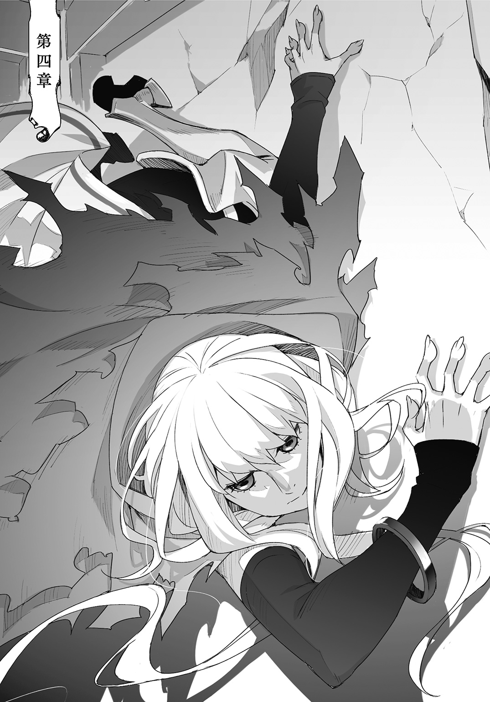
グラン工房へと整備に出した武器を受け取りに行った際に、狩猟刀の完成予定日と値段を訊いた。ランタンも思わず、わお、と声を上げるような金額はもちろんリリオンをあたふたとさせて、それを落ち着かせるまでに幾分もの日数を必要とした。
偏屈な老職人グランの持つ親方職人という肩書きはもちろん伊達なんかではなく、その卓越した技量によって得たものだ。そんな職人に一から物を作らせたのだから、素材持ち込みによって材料費を浮かせたとしてもその金額はなかなか気軽に出せるものではない。
だがランタンは探索者ギルド銀行に預けてある自分の口座から、その支払金を気軽に引き出した。そしてそれとはまた別に生活費と、先の探索で確定した利益の三分の一も。
そして三分の一が詰まった革袋をリリオンの手の上にぽんと渡した。
革袋は金貨の重みで破れそうな程だ。これが今回の探索でのリリオンの取り分だった。
リリオンは揃えた両手もそのままに、その重たさに驚いて身動き一つ取らない。ただじっとランタンの顔を見つめ続けている。どうしていいのかわからないのだ。革袋はリリオンの震えを伝えて、ちりちりと中の金貨を鳴らしていた。
これでも多いのか、とランタンは革袋を取り上げて、ついでに預かっていた探索者証を手首に嵌めてやった。リリオンは探索者証の軽さにほっとしてるようだった。
探索で得た利益の分配率は探索班によってさまざまだが基本的には等分である。
探索者の収入は魔精結晶をはじめとする迷宮資源を換金する事によって得られる。
そこから次回の探索にかかる必要経費を積み立て、これは探索班によって個人持ちか班持ちかは半々といったところだが、治療費や装備の整備代に、使用した道具や薬品の補充などの経費を除いた分が探索班の人数で割られる。だが通例として探索班の指揮者への分配率は、他の探索者よりも良いものである。
たった二名でも探索班。指揮者であるランタンに分配率で色が付くのは当然のことだったが、しかし倍も違うとなると明らかに取り過ぎだった。普通の探索班なら暴動が起きるか、あるいはもうやっていられないと探索班が解散になる。
金貨の重みから解放されたリリオンは、安堵で腰から崩れ落ちそうだった。
リリオンはまず金貨に慣れなければならない。それを得ることも、消費することも。まずはそこから始めなければならなかった。
ランタンはリリオンを一端の探索者として扱おうと考えてはいるのだが、まだ九つの子供でしかない。子供であろうともその存在を尊重し一個の自立する人間として扱うことは大切だが、だからといってそれは大人と同じように扱うこととは別である。
「リリオン、これはこれからのために必要なものだよ。リリオンがこれを貰ってくれれば、もし僕が大変なときは助けになる。なにもずっと持ってろっていうんじゃないんだから」
ランタンは革袋をお手玉して、それを無造作にリリオンに放った。
少女は反射的にそれを胸に受け止めて、ぎゅっと抱きしめた。
「口座に入れとけば盗まれる心配はないし、必要なときに自由に取り出せる。それに意識不明で医務局に運ばれたとき、口座にお金があればそれなりの治療がしてもらえる」
探索者ギルド銀行は個人口座の他に、探索班として共同口座を開設することもでき、それは口座を開設した探索班の班員ならば誰にでも自由に出し入れができる。
ランタンは先程出金する時にランタンとリリオンの名義でそれを開設し、共同口座に纏まった金額を積み立てた。
もしランタンが、そしてリリオンが意識不明で医務局送りになった際には自動的にここから治療費が引き落とされるように指定してある。そしてそれはリリオンに伝えてはいない。
リリオンはどれ程の期間かわからないが、少なからずの間、自由意志を奪われていた。急に何もかも自分で考えて、決めて、行動を起こすことは難しい。
ランタンも昔はそうだった。
探索者ギルドの建物内に併設された探索者ギルド銀行なんていうものを知らなかったから、一時期は金貨銀貨をじゃらじゃらいわせていた物騒な時期もあったものだ。それを止めたのはミシャに銀行のことを教えてもらい、口座を作るように世話を焼いて貰ったからだ。
「ランタン」
「それをばらまきでもしない限り、それを盗ろうなんて奴はここに現れないよ。そのお金はリリオンが好きに使っていい。欲しい物があったら何でも買っていいし、何も買わなくてもいい」
「なにも......？」
「そう、何も。好きにしていいっていうのは、絶対に使わないといけない、じゃないからね。必要なときに、必要なだけのお金があるってのはいいことだよ、ってこれもまだわからないか。うーん、ま、お腹空いたときに好きな物を食べられる。そういうことさ」
「......うん」
「じゃあ行っておいで、さっき僕が並んでいた窓口ね。お姉さんに話はつけてあるから」
共同口座はさておき、さすがにリリオンの個人口座をランタンが開設することはできない。一つの探索者証につき、個人口座は一つ。
共同口座は探索者証や委任状で本人の代わりになるが、個人口座は生身の肉体とその肉体に関連づけられた探索者証が揃っていなければならない。
リリオンはランタンに促されて窓口へ向かったものの、一歩二歩三歩とゆっくりと進んで振り返った、眉毛が情けなく八の字になっている。
「ちゃんと見ててね」
「いってらっしゃい」
小さく手を振るとリリオンはっしかりと頷いて、今度こそ窓口へと足を進めた。ランタンはリリオンを視界に収めながらロビーの柱に背を預けた。
大丈夫だったかな、とランタンは自らの頰を叩く。
自分の口はちゃんと言葉を発しただろうか。人に何かを伝える、と言うことは酷く精神を消耗する。迷宮攻略報告然り、リリオンに常識を教えることも然り。
前者はある程度慣れたものの、それは大人が相手だという頼もしさもあってのことだ。
「ふあ......」
欠伸のような溜め息のような倦怠を吐き出して、しかしランタンは険しげに目を細めた。
リリオンの姿が見えなくなったのだ。それはランタンが視線を動かしたからではなく、リリオンが視界の外に出たのでもない。ランタンの目の前に、大柄の人影が現れたのだ。
ランタンの視界の一切を埋める程、至近に。
ランタンは反射的な舌打ちをどうにか堪え、場所を変えようとした。
「おいおいランタン、そりゃないぜ！」
名前を呼ばれて、しかしランタンはそれを無視する。引き止めるように伸ばされた腕を避けて、しかし男はランタンの行く先を塞ぐように移動する。
ランタンはしかたなく再び柱に背を預けた。
苛立ちを隠そうともせず、ありありと会話を拒む雰囲気を醸し出して。
取り付く島もないランタンの対応に諦める人間はこれだけで諦めるだろうし、そうでない人間はどれだけ逃げても追いかけてくる。そしてその人影は後者であった。
ランタンは堪えた舌打ちを、今度ははっきりと鳴らした。
「無視しなくたっていいじゃねえか」
なれなしく自分の名前を呼んだ男をランタンは知らない。男はランタンを知っているようだがランタンは男をまったく知らない。
それはランタンにとっては慣れたことだった。
男はくすんだ金髪を刈り上げていて、広い額を隠すようにバンダナを巻いていた。バンダナは不自然な膨らみをみせていて、それは中に金属板を仕込んでいるからだ。顎に髪と同じ色の短い無精髭を蓄えている。バンダナ男はよく鞣された革鎧を身につけていて、心臓をはじめとする重要臓器を守る位置に金属の補強が縫い付けられていた。腰には幅広の曲刀。年の頃は三十前後といったところで、探索者というよりは山賊のような風体だったが、まあ探索者は大抵山賊のような風体である。
バンダナ男は視線を向けたランタンににっと笑いかけた。唇の隙間から黄色い歯が覗いて、ランタンは渋い表情をいっそう渋くし、さらに一歩近付こうとする男に冷淡な視線を返した。
「何か、ご用ですか？」
声は視線ほど冷淡ではない。
ただ明確な拒絶を感じさせるような素っ気なさを多分に含んでいる。
バンダナ男はランタンに近付こうとした一歩をそのまま半歩後ろに引いて、やれやれといったように肩を竦めた。しかしその浮薄な仕草とは裏腹にランタンへ向ける視線は粘つき、汚泥のような質量を感じさせた。視線はランタンの細い首筋からゆっくりと身体の線をなぞるように下っていく。
ランタンは外套の前をぴったりと閉じた。
「......ご用ですか、ってことはねえだろう？」
ここが下街ならば、と思ってしまう。
ここが下街ならば喧嘩を売ってきたということにして臨戦態勢をとればいいだけなので楽なのだが、ギルドの建物内でただ話しかけてきた相手にそんなことをして騒ぎになればランタンの方に咎がある。
残念ながらランタンにとれる手段は無視か、対話しかない。
「何か、ご用ですか？」
ランタンはまったく同じ声音で、同じ言葉を繰り返した。
バンダナ男の用事は察しが付いていたが、わざわざランタンの方から話題を振ってやらなければならぬ謂われはない。それにランタンの態度に、バンダナ男が気分を害して去ってくれれば御の字だとも思っていた。
しかしバンダナ男はランタンの挑発的な態度を面白がるように頰を歪めて笑い声を上げた。
「なあランタン、ウチの探索班に来いよ」
続けて提示された男の用事は、ランタンの予想した通りのものだった。
探索班への勧誘である。
「ごめんなさい、お断りさせていただきます」
一考する素振りも見せずランタンはにべもなく断ったがバンダナ男は引き下がらない。
壁にどんと片手を伸ばしてランタンが逃げ出せないように退路を塞いで、女を口説くように詰め寄ってきた。
革鎧はきちんと整備されていたが下に着こむ半袖の袖口が解れ、縮れた腋毛が覗いている。二の腕は筋肉が張ってよく鍛えられていたが、筋肉に刻まれた深い彫りや肘関節に垢が浮いていた。探索者らしい不潔さだった。
「嫌です」
ランタンは壁に預けていた背を、いっそ壁に同化する程に貼り付けておぞましさに表情を硬くする。黄色い歯の間から舌苔の密集する白い舌が見え隠れしている。ランタンの言葉が喉に張り付くように引きつったのは、鼻呼吸を止めたからだ。
「無理です」
ランタンの素振りは男を知らぬ処女のように頑なだったが、そういったランタンの初心さは男の強引さを誘うものでもあることに少年は気づきもしない。
バンダナ男はさらに勧誘の強引さを増した。
必死であるバンダナ男の心理も理解できなくはない。
多くの探索班は常に前衛戦力を求めている。
深く険しい迷宮の探索は万全の状態を期して開始されるが、それでもやはり万事が上手く行くわけではない。迷宮構造の険しさにやられることもあれば、魔物との戦闘によって怪我を負うことは当たり前の出来事であって熟練の探索者でもそれは変わらない。
即死以外の怪我は魔道を含む様々な手段で治癒可能であるが、全ての探索班が瀕死の怪我を癒やす程の恐ろしく高価な高品質の魔道薬などを購入できるわけはない。
また死の淵にある生命を引き寄せることを可能にする治癒魔道は稀少であり、そんな人員を抱えることのできる探索班は滅多に存在しないし、そもそも稀少な高位治癒魔道使いは死と隣り合わせの危険区域である迷宮には出向かない。
はっきり言ってしまえば前衛戦力は消耗品である。
迷宮内で命を落とすこともあれば、命はあろうとも四肢の欠損などの不可逆な傷を肉体に負えば探索者としての寿命は尽きたといってよく、また廃業の要因となる傷は肉体的なものばかりではなく精神的なものに由来することも多々ある。
それは一人前に程遠い新人探索者ばかりではなく幾つもの迷宮を攻略し探索にも慣れた、心身ともに強靱に鍛え上げられた探索者でも逃れることのできない呪いのようなものだった。
前衛戦力は常に不足しているわけではないが、常にそれを失う可能性を有している。
その備えとなるのが探索者見習いの運び屋である。
探索班に所属する探索者が増えれば増えるほど利益は頭割りに少なくなってゆくので、余剰戦力を抱え込むことは少ない。故にいずれ失われるであろう前衛戦力の予備として探索者見習いを一定の低賃金で雇い、育てるのである。
そうして雇われた探索者見習いは予備らしくその探索班で失われた探索者の代わりになることもあれば、あるいは衰えた探索者にとって代わることもある。
また別の探索班に欠員が出た場合に金銭を以て取引されもする。
探索班に欠員が出ずに、見習いという名の尻尾が取れたのならば独り立ちをすることもあるだろうし、そういった探索者が集ってまた新たな探索班は生まれる。
とはいえ悠長に探索者見習いを育てている暇などない場合の方が多い。
戦力が失われる場合は不意であり、一瞬である。
そして迷宮から引き返す、――逃げ帰るような不測の事態が起こった時、失われた探索者が一人で済めばそれは幸運なことだった。
探索に足る戦力がなければ、探索者見習いを育てることもできない。
多くの探索班は即戦力となる探索者を求めている。
それもできることならば若く、実力が確かで、金に卑しくなく、人間性も良い、完璧なる探索者を。
だが、そんな探索者は伝説の中にさえ存在しない。
若ければ経験が足りず、経験は実力に直結する。実力が確かならば金銭の大切さを知悉している。そして人間性が良ければ既にどこかの探索班に所属しているか、そもそも探索者などという職業に所属していない。
そんな中でランタンは珍しくも若く、幾つもの迷宮を単独攻略した実績があった。
人間性はその頑なな人見知りさ程度しか知られていないが、ランタンは少なくとも卑しい顔つきなどはしておらず、探索帰りであったとしてもなんとなく清潔感があってお上品な感じがした。
また単独探索者というのもランタンの価値を釣り上げる要因だった。
即戦力の補充を求める場合、その手段の多くは余所の探索班からの引き抜きがほとんどだった。迷宮の乱立するこの都市では使える探索者を遊ばせるような余裕はないのだから、戦力として数えることのできる探索者はすでに探索班に所属している。
例えばそこに班員間で何かしらの軋轢や、金銭関係などの問題で揉め事が起こっている場合は厄介払いの体で比較的スムーズに移籍が決まる。だが大抵は現所属よりも好条件であること、つまり利益の分配率、稼ぎのよさを餌に引き抜く。
金貨の輝きに目が眩むのは仕方のないことだ。
それだけ自分の価値を認めてくれているということなのだから。
だが引き抜かれた探索班からしてみればたまったものではない。
引き抜きは戦力の低下を意味し、戦力の低下はそのまま稼ぎの減少へと通じる一本道である。利益が減少すれば生活の質を落とすこととなり、生活の質の低下は苛立ちへとつながる。
苛立ちはそのまま人間関係に悪影響を及ぼし、仲良しこよしの探索班であっても散り散りになって各個、別の探索班に吸収されるということになりかねない。
なので引き抜かれる側の探索班は、可能な限りそれを阻止しようとする。
相手方から提示された条件と同等かそれ以上の条件を提示し、あるいは今まで苦楽を共にした経験から発生する人情に働きかけて。
だが無事に引き止められたからといって、一件落着というわけではない。
最低でも引き抜かれる側と引き抜く側の探索班間には軋轢が生まれ、血の気の多い探索者同士の軋轢は火の付いた導火線と言い換えても差し支えなかった。なまじ戦闘力があるものだから、小競り合いが殺し合いに発展しかねない。
人間関係とは無縁な傭兵探索者もいるが彼らはその多くが守銭奴で、単発的に契約を結ぶことはあってもそれを恒常的に雇うことはまずない。
探索者の移籍には様々な問題が付随するのだ。
その点、単独探索者はそういった問題とは無縁だった。
「なぁ、いいじゃねぇか！ 探索も今よりもずっと楽になるぜ！」
男の大きな声にランタンは顔を顰めた。
大げさな身振りで振り回した手が鬱陶しい。手指がゴツゴツとして、爪は白い部分が長く伸びていて隙間に黒い汚れが挟まっている。
ランタンはそこから目を逸らすように視線を下げた。
この男と一緒にいることで何か楽になるようなことは確実に無いとランタンには断言できた。現に、まさしく息が詰まる思いだった。
ランタンは完全に横を向いて視界から男を外し、肺の中で淀んでいる空気を入れ替えるように大きく深呼吸をした。
その視線を外した一瞬に、バンダナ男の手が肩を抱こうとするようにランタンへと伸びた。
首元へと向かってくる手をランタンは避けるよりも先に、反射的に身体が動いていた。バンダナ男の手首を取って、肘を、肩を捩じ切ってやる。
ランタンの手が外套の下で鎌首をもたげる蛇のように静かに狙いを定めた。
「――やめたまえ」
だが、ランタンがバンダナ男の腕を破壊することはなかった。
ランタンのではない手がバンダナ男の腕を摑んで止めたのだ。ランタンは一歩分バンダナ男の間合いから離れた。
バンダナ男の腕を摑む、その手には磨かれた銀の籠手が嵌められている。
ランタンはその手から腕を伝って顔まで視線を遡った。
「嫌がっているじゃないか、まったく――」
銀の籠手から伸びる指は白く、けれど剣を扱うに相応しく節立っていた。だが爪が綺麗に切り揃えられているせいかスラリとして見える。籠手と揃いの銀の腕甲は鏡のように磨かれており、顔までを防御するように立ち上がった左の肩甲には精緻な浮き彫りが施されていた。探索者というよりは騎士のいでたちである。
「――大丈夫かい？」
バンダナ男の腕を摑みながらもランタンを気遣う声は甘く、その顔もまた甘い。
後ろに流した濃い栗色の長髪が波打っていて、額に一房いやらしく垂れている。パッチリと二重で髪と同じ色の瞳が、上下ともに長い睫毛の間で微笑んでいた。鼻梁が細高く、顎も細いが軟弱な雰囲気がないのは口が大きくて唇に野性味のある表情を湛えているせいだろう。迫力ある表情が実によく馴染んでいた。
「ええ、どうも、ありがとうございます」
そこらへんの町娘ならば目を奪われるようなハンサムな男だが、その微笑みもランタンには無価値である。だが助けてくれたことには感謝していた。ハンサム男が来なければ、今頃は屈強な武装職員にバンダナ男共々地面に組み伏せられていたかもしれない。
「んだっ、テメェ！ 関係ないやつはスっこんでろよ！」
「いいや、関係なくなんかはないさ。私は前からランタンくんに声を掛けていたんだ」
「なんだと！ 俺だってそうだ！」
頭上で飛び交う応酬にランタンは小首を傾げ、ちらりと瞳だけを動かして二人を見上げた。
どちらにもランタンを勧誘した過去があるらしいのだが、ランタンにはさっぱり二人の記憶はなかった。
いや二人どころか、とランタンは過去を思い出そうとしてそれを諦めた。
過去、ランタンを自らの主催する探索班に勧誘した探索者は多くいたが、ランタンはそのほとんどを覚えてはいなかった。
こうして一人一人を観察すれば探索者は十人十色の個性の塊であるのだが、当時のランタンには探索者を観察する余裕などはなかった。老いも若きも、男も女も、人族も亜人族も、何もかも一纏めにした探索者という一つの恐ろしい何かでしかなかった。
久々の勧誘にはうんざりしていて、やはり余裕もなかった。
ランタンは視線を巡らせてリリオンの姿を探した。
リリオンは受付台の上で空になった金貨袋を畳んでいる。振り込みが済んだのではなく、職員が金貨の枚数やそれが偽造金貨ではないことを調べていてリリオンは暇なのだろう。
羨ましいことだ、とランタンは視線を戻した。
男たちは未だに言い争っており、ランタンから意識が逸れていた。この機を逃す手はない。
ランタンは二人を注視しながら、静かにすり足で場を離れようとした。
だが悲しいかな、その試みは何かに阻まれてしまった。
「ぶ」
猫が透明なガラスに気づかずに悠然と歩み寄りそのまま頭をぶつけるように、ランタンは自らの頰を何かに押し付けてしまった。それは固く冷たく、やや丸みを帯びていて脂と血の臭いがした。板金鎧だ。
「ごめんなさい」
ぶつかった相手にランタンはまず謝って、それから顔を見た。
それは突き出た鼻と、口から溢れる二本牙の逞しい猪人族の男だった。
濃い茶色の髪から小さな耳がピンと頭上に立っていて、ランタンが見上げると意識するようにぴくぴくと震えた。
「いや、こちらも申し訳ない」
謝ったランタンに猪男はゆっくりと首を振った。
「だがこれも何かの縁だ、よかったら向こうで話さないか？」
牙も剝き出しの荒々しい顔だが猪男の声は艶のあるテノールだった。
猪男は女をエスコートするようにそっとランタンの背中に手を添え、ごく自然にロビーの奥にあるラウンジへ導こうとした。猪男の腰には両刃の手斧が二振り抜き身でぶら下がっていて、それはよく使い込まれている。斧頭の付け根には拭いきれぬ青い血脂が染みこんでいる。
「おいおい、テメェ自分からぶつかっておいて白々しい！」
するとハスキーな声が飛び込んできた。
ランタンの背に添えられていた手が払われ、別の手がそこに収まった。
ランタンは古いブリキの玩具のように重たげに首を回した。
猪男の岩のような手に変わってランタンの背を支えた手は、指先まで白く短い毛に覆われていた。形良く尖った爪にピンク色のマニキュアを塗っているが、それが落としきれぬ返り血ではないという保証はない。
猫人族の女だ。ランタンは、猫という愛らしいものではない虎や獅子を思わせる獰猛な雰囲気の漂う猫女の顔を見上げた。
短毛種の白猫をそのまま人の金型にはめ込んだような猫女は瞳孔の縦に割れた目をランタンに向けて柔らかく微笑んだ。だがどうしてもその直前に猪男を睨みつけた苛烈な視線がちらついてしまい、ランタンはただ愛想笑いを浮かべる。微笑んだ猫女の口からは太い針のような犬歯が覗いている。隙を見せれば喰われそうだ。
「ねぇランタン」
猫女は少し掠れた甘い声で名前を呼んだ。
「あそこに仲間がいるんだ。一緒にお茶でもしないかい？」
顎をしゃくった猫女の視線の先には、三人の女探索者がいた。
ランタンが視線を向けると優雅に手を振って見せる。人族が二人と、猫人族が一人。目の前の猫女からは年齢を推し量ることはできなかったが人族と同年代だとすると二十半ばぐらいだろうか。
大人の女性からのお誘いは男どもの誘いよりは魅力的だったが、その誘いを受けるつもりは毛頭なかった。猪男のお話も、猫女のお茶も、その先に待っているのは拷問のような勧誘であることは明白だった。
勧誘をしてきた人間の顔は覚えていないが、見えない縄に拘束されるような苦痛の時間はよく覚えている。ランタンはこっそりと手首をさすった。
「ねぇどうだい？ あの女にいったい幾らで雇われたのかは知らないけど、うちに来ればもっといい思いをさせてあげるよ」
曖昧な表情を浮かべるばかりで煮え切らないランタンに、猫女の尻尾が大胆にランタンの太腿に絡みつき内腿を挑発的に擽った。
「やめてください」
ランタンはそっけない素振りで尻尾を払ったが、正確に言うならば引き剝がしたというのが正しい。猫女の白い尻尾はしなやかに見えたが、まるで大百足のようにランタンの太腿にしがみついていた。やろうと思えば関節を挫くことぐらいはわけないだろう。
「やめてください、だって」
からかうような言葉が飛んで、誰かが下品な口笛を吹いた。
気が付けばランタンは探索者たちに取り囲まれている。
猫女が言ったあの女とはリリオンのことだろう。
リリオンは身長だけは一人前にあるので少女ではなく大人の女だと思われているようだった。勧誘者たちはランタンとリリオンの関係を雇用者と被雇用者だと勘違いしている。
リリオンがランタンを案内役や指導教官として雇ったのだと。先の世間知らずなやりとりを盗み聞かれていた可能性もあった。
ここしばらくランタンに勧誘がなかったのはランタンが頑なに勧誘を受け入れなかったからであり、そのランタンが誰かといっしょにいるということは探索者たちに余計な希望を抱かせる変化であったようだった。
予想はしていたことだが、予想よりも動き出しが早い。
ランタンは眉間に皺を刻んだ。
――僕はあの子と探索班を組んだので、あなた方とは組めません。
リリオンを指差してそう言えば場を切り抜ける理由になる。
ランタンはそう思っていたし、この勧誘を予想した時に考えた言い訳の台詞を頭の中で何度か繰り返した。だがいざその場面になったら、それを口にすることができなかった。
それはまるでリリオンを言い訳に、生贄にするかのような行いに思えたのだ。
「おいっ！ 後からしゃしゃり出て好き勝手言ってんじゃねぇぞ！」
「きみはもう振られたんだ諦めるんだな。そしてきみたちも」
「ふんっ貴様のような惰弱な男が随分と偉そうにものを言う」
「はっ、この稚児趣味どもが。男娼が欲しいんなら色街にでも行きなっ！」
ランタンが口籠もっていると勧誘者たちは次第に声を荒げ、表情を歪めて言い争いを過熱させはじめた。相手を出し抜くよりも、蹴落とす方を選んだのだろう。そして罵声は建物内に敷かれた防音魔道から漏れるほどに大きく響いた。
ランタンを求める者は多かった。
探索者としての実力を買っている者も、単独探索者を麾下に加えることに価値を見出している者もいたし、その幼い姿を傍に置いておきたいという者もいる。
探索者の壁の隙間からリリオンの姿が見えた。
リリオンは探索者の集団から離れて立ち竦んでいた。縋り付くように空の革袋を握りしめて、囲まれるランタンを見つめていた。唇を嚙んで黙っていた。
そんなリリオンに近寄る者がいて、戸惑うばかりだったランタンは取り囲む彼らを乱暴に押し退けてリリオンに駆け寄った。
「邪魔――、っ何か？」
それは二人組の男だった。
リリオンを守るように立ちはだかったランタンごと無遠慮な視線に捉えてにやにやと見つめている。ちぐはぐな雰囲気のする男たちだった。
身体は程良く鍛えられていて、バンダナ男のように不潔な雰囲気は探索者のそれだが、小綺麗な革鎧は良く手入れをしてあるというよりはあまり使われていないような感じがした。腰に無骨な剣を下げていて簡素な柄巻は手垢に汚れているが、それだけだ。
「いやあ、別に。あのランタンをたらし込んだ女がどんなもんかと思っただけさ」
ひゃっひゃっ、と男が笑った。喉が掠れて、晒された歯が瘦せてすきっ歯になっていた。白目に黄斑が浮き出ている。目の下に隈があり、頰骨が浮いていた。身体付きに比べて瘦せた貧相な顔立ちだった。
「へえ、ランタンはこんな細っこいのが好みなのか。なあうちに来ればがりがりの女なんていくらでも用意してやるぜ。なんならそいつもいっしょに飼ってやろうか、そんときゃ俺らも使わせてもらうけどな」
「二人纏めて穴役でもいいけどよ――」
男が無造作に手を伸ばし、ランタンの外套の前を開いた。
ランタンはいくらでも下品な言葉を投げかけられた経験があった。
怖く思ったことも、悔しく思ったことも、腹が立ったこともある。だがそれでも問題を起こしてはいけない場所でならば、我慢をする分別も、忍耐力も有していた。けれどそれが一度リリオンに向けられたとき、ランタンの内に堪えきれない衝動が沸き起こった。
殺す。
突如ランタンから放射された激烈な気配に、空間内にいる全ての探索者らが本能的に臨戦態勢をとった。高位探索者ですら警戒心を露わにする暴力の予感に二人の男は慌てて腰の剣に手を伸ばし、その時には戦鎚を腰に結ぶ留め紐は解かれて久しかった。
抜く暇など与えるものか。
「――そこまでだ」
大きな声ではない。けれど銀行内部のざわめきなど意にも介さぬようにその声ははっきりと響いた。それは冷徹な声だった。ランタンの胸の内に燃え上がる激情に冷や水を浴びせ、ランタンが視線を動かすと、取り囲んでいた探索者たちが迷宮探索で培った技術と肉体を駆使して蜘蛛の子を散らすように音も無く現場から離脱していた。
暴力の気配よりも、探索者にとって最も恐ろしいものの一つが近付いてきていた。
黒い鎧。
現れたのは武装職員と呼ばれる、探索者ギルド治安維持局に所属するギルド職員だった。
武装職員がかつかつと踵を鳴らして近付いてくると、二人の男たちは盛大に舌打ちを響かせて慌てた足取りで逃げていった。
ランタンは戦鎚を腰に結びつけて、リリオンを背に守るように武装職員と対峙した。
敵対ではない。ランタンは頭を下げる。
「お騒がせしました」
「やはり君か」
本来こんな所で勧誘をするのはマナー違反であり、そうでなくとも騒ぎは大きくなりすぎていたし、ランタンの激情は探索者同士の私闘を禁じるギルド法に触れそうな程の危うさを秘めていた。
武装職員は全身鎧を身につけていて、ぎしりと鋼を軋ませて窮屈そうに腕組みをした。
犬頭を模した兜が辺りを睥睨して探索者の残滓を探るようだった。
ランタンは顔をすっぽり覆う犬兜に見覚えがあり、冷徹な声音にも聞き覚えがあった。
「ここ最近は落ち着いていたが、......ふむ、災難だったな」
そして冷徹さが抜けると、優しさを帯びる落ち着いた響きにも。
兜の内から響く声は女性のもので、それは騒ぎの中心にいたランタンを叱責するものではなくむしろ慰めるような音を孕んでいる。
ランタンは下げていた頭を持ち上げて、そのまま犬兜を見上げた。
兜の隙間から色の薄い碧い瞳がこちらを窺っている。
「以前も同じようなことがありましたよね。その節もありがとうございます」
「おや、覚えていてくれたのか。くふ、そうかそうか。うん、その時よりもだいぶ探索者らしい振る舞いをするようになったじゃないか」
「――ご迷惑をお掛けしまして」
「いや、いいさ。君が被害者だということはこちらも理解している。それにあれ程の凄味をみせれば、今日のようなことは少なくなるだろう」
武装職員はランタンの後頭部に柔らかく触れると、ではまたな、と言って踵を返して去って行った。去り際に鋼の指先が擽るように旋毛に触れた。数多の不良探索者から鬼のように恐れられ、武力を持ってギルドの平和を維持する武装職員の手は優しさを感じさせた。
「リリオン」
ランタンは振り返る。
リリオンは事態が吞み込めていないのか、革袋を握ったまま不安げな視線をランタンに向けている。何かを言おうとするように口を開いて、けれどなんと言っていいかわからぬように再び閉ざした。
「リリオン、ごめん」
ランタンは自分が何について謝っているのかわからなかったが、言わずにはいられなかった。自分の情けなさに突き動かされるように。
ランタンは革袋ごとリリオンの手を取って、指先の冷たさを感じながら銀行を後にした。
◇◇◇
ランタンはリリオンの手を引いて足早にギルドを後にした。
次の探索の下調べでもしようかと考えていたのだが、一秒だってあんなけったくその悪いところにいたくなかった。
どうせまた訪れなければならないと理解していたが、燻る腹立たしさが収まるのには今しばらくの時間を必要とした。その腹立たしさは、きっと自分にも向けられたものだった。
リリオンはまだ落ち込んでいる。
当たり前のことだ。まだたった九つの女の子が、あんな酷い言葉を浴びせられたのだから。
探索者はもれなく粗野で下品で口が悪いが、あれほど下劣な探索者はさすがに少ない筈である。
リリオンの指先が、まだ雪のように冷たかった。
「ランタン......」
リリオンがようやくランタンの名を呼んだ。
「......あれは何だったの？ ランタン、囲まれてた」
ああそっちか、とほっと胸を撫で下ろす。大丈夫だったの、と恐る恐る尋ねるリリオンに軽く肩を竦めて、いかに自分が無事であるかを示した。
ランタンが大勢の屈強な探索者に囲まれる様子は、一つの獲物に群れをなして襲いかかる肉食動物の狩りに似ていた。群れが離れたあとには骨も残らないような凄惨な狩りに。
「あれは、まあ勧誘ってやつだよ」
ランタンは下らないことだと吐き捨てるように素っ気なく呟いた。
勧誘を受けるということは、探索者たちから一定以上の評価を受けているということだったが、ランタンはまったくそれを誇る気にはなれなかった。
「うちの探索班に入りませんかって」
ランタンは言い終えると舌打ち代わりにふんと鼻を鳴らして、むっつりと唇を結んだ。
集団の中でランタンは声を掛けられるだけではなく、身体に触られもした。
人混みに紛れて腕をさすったり、尻を撫でたりなどという不埒な行いに及んだ奴が幾人かいて、その腕を折ってやろうと思ったら逆に指を扱き上げるように擦られた。糞野郎どもめ、と思う。次があったら消し炭に変えてやると心に誓う。
ランタンがその狼藉を思いだしてふんふんと怒っていると、掠れ声でリリオンが呟いた。
「やっぱり......」
「やっぱり？」
ランタンは憤懣やる方ないと歪めていた表情を僅かながらに緩めて、それでもまだ怒るような視線でリリオンを見上げた。
それを向けられたリリオンが唇を嚙むので、ランタンは気持ちを落ち着けるように大きく息を吐きだす。眉間に刻まれた皺を指で擦った。
「やっぱりって、何がやっぱりなの？」
「ランタンは、......ランタンはその誘いを、受ける、の？」
「は――」
リリオンが絞り出すように呟いたその言葉に、ランタンは燻り続けていた怒りや苛立ちさえも、そして歩くことさえもを忘れてしまって急に立ち止まった。繫いだ手がぴんと引っ張られて、しかしランタンが動かないのでリリオンが慌てて振り返る。
「僕が、誘いを......？」
リリオンの言葉を理解できずに呟き、それを理解した瞬間にランタンは一つ瞬きをした。一度目蓋の下に隠された焦茶色の瞳には、それまでにあった燻った感情の一切が失せていた。
そしてランタンは繫いだ手を引き寄せるように解き、いつもの位置、すぐ隣にやってきた少女の尻を問答無用に引っぱたいた。鞭のような平手打ちはさして肉付きのよくない少女の尻に甲高い破裂音を響かせる。
「なになに、なんで!?」
抗議の声を上げたリリオンをランタンは一睨みして黙らせた。
「なんで、じゃないよ、――まったく」
それは憤慨ではなく穏やかに呆れるような声だった。
甘い苦い笑みを湛えて、ほら行くよ、とリリオンと手を繫ぎ直す。
「だって、だって」
ぐずるように呟くリリオンが甘えるように繫いだ腕を揺らす。ランタンの気を引こうとするその幼い仕草は、けれどひどく切迫している。眉尻が下がって、暗闇の中で光を探すように目を細めている。
リリオンはランタンに触れたがる。
ランタンがふらっと先を行こうとすると、外套の端であったり、服の裾であったりをはっしと摑んで手繰り寄せる。あるいは手を繫いだり、腕を組んだりすることも好んだ。抱きしめたり、抱きしめられたりすることを。
歩くときランタンは手を引いて先導することが多いが、少女は時折甘えるように身を寄せることがある。それは置いて行かれることを恐れているのかもしれない。
ランタンがリリオンを置いて、どこかの誰かの元へ行くのを。
「だって、なに？」
「だってランタンは、あんなに強そうな人たちに、誘われて」
「はっ、嬉しくなんてないね」
ランタンはうんざりして吐き捨てた。
そんなランタンにリリオンは疑うような視線を向けて、ランタンはリリオンに自分がどれ程嬉しくないのかを伝えるように唇を歪めて牙を剝いた。それはあまりにも子供っぽい表情で、リリオンは目を丸くして驚き、言いかけた言葉を忘れてしまったようだった。
あのね、あのね、と少女は困ったように繰り返す。
「僕は、誘いの一つも受ける気はないよ」
「ほんとう？」
「本当、――それともどこかの探索班に入って欲しい？」
ランタンはふと立ち止まり、意地悪く挑発的な眼差しをリリオンに向けた。
「やだ！」
「うん」
リリオンは頭を振って、ランタンの手を胸に引き寄せる。
薄い胸の奥にある心臓の鼓動が手を叩いた。
「僕も嫌だね。あんな下品な連中の誘いを受けるなんて」
口付けるほどに顔を寄せたリリオンをさっと躱し、ランタンは再び手を引いた。
馬鹿な質問をした、と思う。顔を覗き込むリリオンの瞳に浮かんだ不安の色に、ランタンは罪悪感を覚えて胸がちくりと痛んだ。
ランタンは通りに出ていた屋台から果実水を二つ買い、一つをリリオンに渡した、コップの底に乾燥させたハーブが敷き詰められ、結露するほどの冷たい水には柑橘系の香りがつけられていた。ハーブの淡い緑が水に溶け出して、二人は唇を湿らせるようにコップを傾けた。
「リリオン」
「うん？」
「これからも、またリリオンに迷惑を掛けると思う」
あの勧誘者たちは、これまでランタンが弱気な姿勢を見せていたがために湧き出たものだ。今でもランタンは強面の彼らに取り囲まれると、心のどこかで恐れを抱いている自分に気が付く。恐ろしい魔物とはまた違う、別の恐ろしさを彼らは持っている。
勧誘者たちは結局ランタンがそうと口にできなかった事もあって、まだランタンを単独探索者だと認識しているようだった。
どんな心境の変化があったのかはわからないが、あのランタンがどこかの女に雇われたぞ、と。これは自分たちにもチャンスがあるぞ、と。
ランタンとリリオンの二人だけというのが、班という纏まりを想像させるに至らなかったのだろうし、リリオンの容姿もまた関係性を悩ませる一つの要因だった。
ランタンが装備を調えたので運び屋にはまったく見えない。そしてランタンも人のことは言えないが、リリオンの探索者にしては瘦せすぎな細身の身体付きと、そして年齢とまったく結びつかぬその容姿も探索者にしては綺麗だ。もちろん女探索者にも容貌の美しいものは少なからずいるが、彼女らはリリオンにはない強さがどうしても滲むのである。
幼さは儚さに似ていて、そんなリリオンの姿はちょっと探索者に見えない。
勧誘の探索者がリリオンへと向かわなかったのは、銀行でのやり取りからその世間知らずさを盗み聞きして、もしかしたら止ん事無き血筋の少女だと勘違いしたせいかもしれない。
それに、とランタンは少女を見上げる。
この見上げる分の身長差のせいで、リリオンの方が年上に見える。そのせいで世間知らずのわがまま小娘が大金を積み上げたのではないか、というような見方の方が説得力がある。
そして何よりランタンがリリオンを大切に扱う様子がだめ押しだった。
ランタンがそんなことをリリオンに言うと、少女は少年を見下ろしてあはと声をこぼして笑った。無邪気に笑うと、指先に熱が戻った。
「わたし、お姉さんに見える？」
「......見えない」
「えー、ランタンさっき言ったじゃない」
「言ってません」
「言ったのに......」
ぶつぶつ言うリリオンの口に、ランタンは屋台で肉串を購入して、それを猿ぐつわのように咥えさせた。大きな羊肉をがぶがぶ囓ってリリオンは脂に濡れた唇に無言の笑みを浮かべた。
「そのまま食べてて。さっきの馬鹿二人がつけてくる。振り向かないで、歩き続けるよ」
ランタンが呟くと、リリオンは口いっぱいに肉を頰張っているので驚きの声を上げることができない。
「さっきの話の続きね。ご覧の通り、ああいう勧誘って凄くしつこくてさ。僕に来ても無駄だって思ったら、今度はリリオンに行くと思う。さっきみたいに。どんな風に僕を雇ったんだって。もしかしたらリリオンに僕との仲介を頼むかもしれないし」
ごっくん、とリリオンの白い喉が動くのを横目に見る。リリオンはランタンの言いつけ通り後ろを振り向かない。
「わたし、そんなことしてない、って言えるわ。そんなことはしない、ってちゃんと言うよ」
「うん、――ありがとう」
けれど世の中には情報屋と呼ばれる者たちもいる。
彼らはそれを望む人間が一人でもいれば、どんな情報だって金に換えてしまうし、どんな情報だって曝いてしまう。後をつけ、耳をそばだて、ゴミだって平気で漁る。探索者ほどあからさまではないからいっそう質が悪い。
ランタンに探られて痛む腹はないが、リリオンのその血筋は知られてはならない。
それ自体が悪いことなのではない。だが悪意を持った人間が世の中には多すぎて、それらがリリオンを傷つけることを躊躇うはずがなかった。
ランタンはその悪意から少女を守る術を知らない。
「ねえ、ランタン。後ろのどうするの？」
「上街じゃ暴れられないから無視。腹ごしらえしつつ、グランさんの所に行こう」
「うん、ランタンもこれ食べる？」
「うーん、いいや」
ランタンが言うとリリオンは最後の羊肉をがぶりと横様に食らいついた。
「炭水化物食べたいな」
「わたしお肉食べたい」
野菜も食べな、と言いたいところだが屋台飯にはあまり野菜はない。
リリオンは揚げ鶏を屋台で買った。鶏肉を骨ごと、内臓ごとぶつきりにして油で素揚げしたものだ。塩胡椒だけで味付けしてあり、檸檬が搾ってある。油紙の皿にどんと一羽分が山盛りにされて、きんかんと呼ばれる成熟する前の卵が鮮やかなオレンジ色で転がっている。それに木串が二本突き刺さっていた。
ランタンは適当な屋台でヌードルを買った。木の器には米粉を練った細い麵と野菜出汁のスープだけで具材は何もなかった。屋台では使い捨ての油紙の器が普及しているが、紙皿ではどうにもならない汁物などには木や陶器が用いられた。
ランタンとリリオンはそれを分け合って食べ歩いた。
幾つも転がっていたきんかんをランタンは味見に一つだけもらい、肉は半分こにした。皮がぱりっと揚げられていて、嚙み締めると火傷しそうなほどの脂が溢れた。肉は弾力があって、嚙むほどに肉汁が染み出す。内臓は少しだけ苦くて、下処理の甘さを胡椒で誤魔化しているような感じだった。
「苦辛いね、お酒のおつまみっぽいな」
リリオンはその苦さも平気なようで頷きながらも、ばりばりと骨を砕きながら苦もなく食べている。
ランタンはぴりぴりする舌を洗うように、ちゅるちゅると麵を啜って黄金色のスープをこくこくと飲んだ。癖のない薄い塩味のスープはもちっとした甘い麵によく馴染んだ。
「ぷは」
ランタンが満足気に息継ぎをして、再び器に口付けるとリリオンが隣で跳ねている。
「わたしも、わたしも！」
リリオンはすっかり食べ終わった紙皿をぐしゃりと握り潰して、ランタンの腕を引いた。ランタンが器を差し出すと、リリオンは受け取ることはせずにそのまま少し屈んで器に口付ける。髪が垂れぬように自然な仕草で耳に搔き上げ、目蓋を伏せ、子供っぽく辿々しく啜った。そんなリリオンにランタンはフォークに麵を巻き付けて食べさせてやった。
そうしてスープまで飲みきって器が空になると、器の底に焼き付けられた商業ギルドの紋章が顔を出す。
ランタンは外套を引かれ、振り返るとそこには見窄らしい格好をした、ランタンよりもはっきりと小さい子供が期待に目を輝かせて両手を差し出していた。おそらく孤児である。
「食べ終わったんでしょ？」
「ああ」
ランタンはその子供に空の器を渡して、ついでに四半銅貨をその中に一枚入れてやった。
わあ、と子供が喜んだのは一瞬、ランタンは素っ気なくその場を後にして、呆気に取られた孤児がその場に立ち竦んだ。
「あれ、どういうこと？」
「ああいうちゃんとした器とか金串は戻すとお金が返ってくるんだよ」
商業ギルド所属の屋台、つまり真っ当に商売をしている屋台にギルドの紋章が刻まれた食器を返却すれば銅貨が返ってくる。だが、それはああいった孤児たちにのみ限ることで、そもそも器の一つだけでは最小貨幣の四半銅貨にもなりはしない。
どこから湧いてくるのかは知らないがこの街に孤児は多くいて、そういった子供たちを救済するために商業ギルドが主導して行っている活動の一つだった。
「ありがとうぐらい言わせてあげればいいのに」
「......そんなことは言わないよ。あれはもっとちょうだいの前兆。当たり前に善意を求めるようになると早死にしちゃうから、あんまり甘やかしすぎてもね」
ランタンはそう言って、やるせなく肩を竦める。
孤児を振り返ったついでに後ろを付けてくるあの二人組をはっきりと目視してしまった。気配を殺して迷宮を進むこともある探索者だとは信じられない尾行の杜撰さと、未だに気付かれていないと思っているようなしたり顔にランタンは苛々してしまう。
苛々を解消するためか、少し歩くと再び手は食べ物で埋まっている。
その量はグラン工房に着くまでの道すがらにリリオンが少し太るほどで、肉料理ばかりを食べたリリオンの唇は脂でぬらぬらしている。
ランタンはそんなリリオンの顔を綺麗にしてやってから、大きな声で呼びかけた。
「おじゃましますよー」
「おう――」
炎と鉄の音の中でグランが振り向いて、額に浮いた汗を腕で拭った。それからよく聞こえる舌打ちを一つして、ここじゃうるせえな、と店の方へと裏口から入っていく。その背中を追いかけると、グランは前を向いたままに言った。
「――最近よく裏からくるな」
「こちらの方に居られることが多いようなので」
「そうだけどよ、正面から来い正面から。嬢ちゃんは髪長えんだから危ねえだろ、お前も火傷するぞ」
もじゃもじゃの長い髭をして、身体の至る所に火傷痕をくっつけているグランが言うと説得力があった。グランは二人を応接室に案内して、叩き込むように中へ入れた。実際に背中を叩かれたランタンは痛みに顔を顰め、リリオンは少年の背中をこれ幸いと執拗に撫でた。
「お望みのもんはできてるから、ちょっと待ってな」
そう言って応接室から離れていったグランは、すぐ戻ってきた。
ランタンとリリオンの前に濃く煮出された茶と小さな飴菓子が置かれる。
リリオンは喜び、ランタンはびっくりした。星形の飴菓子は金平糖。お菓子が出るなんて珍しい、とランタンはそれを一粒口の中に放り込む。
ふわっと広がる甘みに苛立ちを一時忘れて頰を緩めたランタンたちの前に、甘さなど一欠片もない獰猛な刃物が二振り差し出された。
あの恐るべき嵐熊の鉤爪を加工して作った特注の狩猟刀だ。濃い飴色の革鞘に包まれていて、柄は臙脂色に染めた熊革が編まれて複雑な組み模様を浮かべていている。
それだけが二振りの区別を付けるもののように見えた。
「握りがそれぞれに合わせてあるから間違えないようにな」
熊革はよく鞣してあり、柄を握ると掌に吸い付くようだった。以前のものと遜色ないほど大振りな狩猟刀はくの字型に反っていて、鞘から抜き放つと獰猛な気配がいっそう露わになった。濡れた黒曜石のような刀身が、うっすらと透けながらもランタンの眼差しを映している。
「どうだ？」
「いいです、すごく」
「せっかく作ったんだ、嬢ちゃんも確かめてくれよ。それはもう嬢ちゃんの物なんだからな、遠慮なんてするもんじゃない」
「まだ支払いは済んでないですよ」
「坊主の金払いのよさは充分に承知してるよ」
グランは喉を揺さぶるように笑った。恐る恐る狩猟刀を鞘から引き抜いたリリオンがその笑い声に驚く。まるで狩猟刀が笑ったのかと錯覚したように。
「おお、気をつけてな。骨まで引いちまうぞ」
「はい、――わあ、きれい」
うっとりと呟くリリオンにグランの眦が下がる。
「前のより少し重いですね」
「ん、ああ、軽すぎても扱い辛いからな」
峰が厚く、刀身の上側が葉っぱのように柔らかく膨らむ。少しだけ幅広になっている。
「いや、さすがは終端の魔物。良い素材だった。靱性、硬度ともに一級品だ」
グランは顎髭を揉みしたきながら満足そうに頷いている。
「こう叩き付ける瞬間にな、身が締まって硬度が増すんだよ。だから骨やなんかに叩き付けても滑ったりして切り損じることも少なくてすむ。だけど硬いもんってのは欠けやすいんだが、そいつはほら、ゆっくり曲げてみな」
ランタンが言われるがままに刀身を指で摑み、力を込めた。
「硬いんだけど、曲がるんだよ。皮を剝ぐときなんかによ、刀身を肉に押し当ててやれば綺麗に剝げるぜ」
「ふああ、不思議ね」
「へえ凄い。これで爪何本使ってるんですか？」
「一振りにつき三本だな。爪の最も硬い芯を取って、それを左右から挟んでやんのよ。それをな――」
ランタンとリリオンが喜びながら、どうしてどうして、とグランに尋ねると老職人は気をよくしたようにあれやこれやと、狩猟刀の性質からタンパク質からなる爪を鍛造し刃物にする方法までを饒舌に語った。
グランは無口で昔気質な職人の一面と同時に、研究者と言うべきかオタク的な気質も持ち合わせている。
二人ともグランの言うことの半分も理解できなかったが、その説明を苦にする様子もなく耳を傾けていた。グランは少しばかり誇らし気で、それだけ満足のいく仕事ができたようだった。
グランはすっかりと冷めたお茶を年相応に爺むさく啜った。
「ありがとうございます、大切に使いますね」
「おうよ、じゃんじゃん使ってじゃんじゃん整備に出してくれ。それともう一つ、余った爪で作ってやったぜ」
そう言ってテーブルの上に出された刃物は包丁のようだった。
鉤爪の特徴的な内反りはまっすぐに伸ばされていて、狩猟刀にあった有機的な雰囲気の一切が無くなり重々しい鋼の気配を帯びている。峰から刀身の半ばまでは透けることのない墨色で、研ぎ出された刃は白く鋭い。だが不思議と狩猟刀のような、抜いたからには血を吸わねば収まらぬような危うさはない。
ぽんと台所に投げ出されていても不思議ではない雰囲気があった。
「坊主も前の刃物が気に入りすぎて、そればっかりだっただろ。それもあって別に作ってみたんだよ」
「まあ確かに、そうでしたね。おかげで......」
食事にもあの狩猟刀を使っていたので対人戦闘でそれを使用することはなかった。
刃物特有の向けられたときの恐怖心や斬られたときの鋭い痛みは、戦鎚にはないものである。刃物の利点はそれを理解できる人間にこそ向けるべきだった。だが自力で熱消毒ができるランタンも、人を斬った刃物で料理をする気にはさすがにならない。
「わあ助かります。このくの字じゃ料理は難しそうだったから。お幾らですか？」
「でも、ランタン。いいの......？ わたしが」
「いいの、いいの。必要経費だよ」
自分の殺し文句がランタンに余計な出費を強いたのではないかとおろおろするリリオンに、ランタンは何も心配することはないとでも言うように朗らかに応える。
「さすが坊主、それでこそよ」
グランは豪快に笑って包丁をもう一本テーブルに載せた。先程のものが大振りな牛刀だったのに対して、こちらは一回り小振りな造りをしていた。そしてそれの柄には見覚えがある。前に使っていた狩猟刀の柄を流用してある。
「料理なら乱暴に使うこともねえからな、それだってまだまだ充分使えるぜ」
「......でも、なんで僕のが小さいんですか？」
「理由を言って欲しいか？」
「いえ、いいです」
驚き、照れ隠しのように呟いたランタンにグランはしたりと笑みを浮かべる。
ランタンは礼も言えず、緩む頰を押さえた。
「な、嬢ちゃんも気兼ねせずに買ってもらえよ。どうせいつかは必要になるんだ。くくく、祝儀は出さねえが嫁入り道具ってことで安くしてやるからよ」
グランが包丁を綺麗な桐箱に収めリリオンに押し付けるようにしてそんなことを言う。
リリオンはそれを胸に抱いて恥ずかしそうにしていた。そんな姿を見るとランタンはグランに突っかかる気にも、リリオンをからかう気にもなれない。にやつく老職人に全部ひっくるめて幾らになるのかを尋ねた。
グランはすでに狩猟刀と包丁の請求書を用意しており、ランタンはそれに目を通した。なかなかいい値段である。それも包丁の方が特に。
だがランタンは表情を変えることもなく必要な金貨を用意していく。
「素直なのはいいことだけどよ、疑問は口にしろよ。商売なんだから訊かれりゃ答える。よっぽど疚しいことがなければな」
「......包丁がお高い理由は？」
「使いやすいように爪を真っ直ぐに伸ばしたわけだが、タンパク質のままじゃどうにも強度が保てない、逆に折ってるような物だからな。だから金属転成して鋼に変えた。その経費だな」
グランは一人で納得するように頷いていて、長々と有機物を無機物へと変じさせた処理について心の赴くままに語った。だがランタンにもリリオンにもちんぷんかんぷんだった。
二人揃ってきょとんと小首を傾げると、グランが言葉を詰まらせた。
「グランさんがやってるんですか？」
「まさか、俺ができりゃもっと安いよ。魔道使いのとこに頼むんだよ」
「何でもできますよね、魔道って」
「本当に何でもできたら今頃、俺は商売あがったりだ。まあ便利なのは否定せんがな。けど魔道がからむとやっぱ金はかかる。けど金属の方が整備はしやすいし、火を入れて鍛え直せば一生もんだ。嫁入り道具をっと――ああ、しつこいか。それにあんまり頼む客がいねえんだよ、魔道鋼は高いからなあ。せいぜい硬化処理ぐらいか。でもそれだと靱性が低くなりがちだからな。......まあ俺も色々試せて面白かったしよ」
楽しんで作った物はそれだけ良い物ができるんだ、とグランはもっともらしく結んだ。
「ま、いいですけどね、払えない額じゃないし」
大金貨がテーブルの上に当たり前のように積まれて、前もって言ってあったとはいえリリオンが目を丸くして驚いている。グランは数えることもせずに、それを手元に引き寄せた。
「ランタンの金払いは本当にほれぼれするなあ。またなんか入り用になったら言ってくれよ。最近よう、超硬合金ってのがあってよ。坊主の稼ぎならそんなに高いもんでもないから――」
「じゃあ行こうか、リリオン」
「え、え？」
「それではありがとうございました」
グランの話をぶつ切りにし、戸惑いの声を上げるリリオンの口に数粒の金平糖を放り込み黙らせて、ランタンは席を立った。
リリオンは金平糖を舐めながら困ったようにランタンとグランの顔を見比べて、ランタンが手を差し伸べるとそれを摑んでようやく立ち上がった。
「ちょっとした冗談だよ、まったく。おう、毎度あり。戦鎚がぶっ壊れたら、また考えといてくれや」
「グラン印の武器はなかなか壊れないですよ」
「よく解ってるじゃねえか。そのせいで最近客が来ねえんだよ」
「ふふ、困ったことがあったら頼らせてもらいます。たぶん、またすぐに。ね」
ランタンがリリオンを見上げると、少女はこくこくと頷く。
「ぐあっはっは、嬢ちゃんもそいつらを使い倒してくれよ。坊主がちっこいのはきっと好き嫌いが多いせいだから、美味いもん食わせてやってくれ。でも取り回しには気をつけるんだぞ」
「はい、大切にします」
「ああ、そうしてくれるとありがたい」
ランタンもリリオンも包丁を背囊にしまい、互いに狩猟刀を腰に括り付けた。
熊革の鞘は無骨な見た目に反して、腰骨に触れても圧迫するような痛みがなく柔らかい。
さすがは親方職人グランである。
グランは最後に余った金平糖をランタンに持たせて、正面玄関から二人を送り出した。店番をしていたまだ髭の生えそろわぬ若い職人が、ありがとうございましたあ、と尻上がりに声を上げて二人の背中を見送った。
「あはっ、またランタンとお揃いよ」
「んー、そうだね。そうしたのはリリオンじゃん」
煙るような職人通りを風が駆け抜けると外套が巻き上がって腰に差された狩猟刀がちらりと覗いた。
臙脂色の柄がまるで木陰に咲く赤い花のように二つ並んでいて、ランタンとリリオンの遥か後方にいる二人はそれを見ることはなかった。
「結構しつこいなあ」
「なんのこと？」
ぽつりと呟いたランタンに、リリオンは本当に何のことかわからないようで少年の袖を引っ張る。ねえねえ、と無邪気だ。
ランタンはリリオンの口の中に金平糖を放り込み、試し切りには丁度良いか、などと素知らぬ顔で考えていた。
リリオンは星を嚙み砕いて頰を緩める。
◇◇◇
「普通忘れる？」
「だってだって、ずっと待ってるなんて思わないわ。ずいぶん暇なのね」
「まあ、たしかにそうだね」
リリオンの物言いに苦笑しながら、ランタンは警戒心を高めていた。
グラン工房からの帰路、背後に張り付くべったりとした視線が途切れることはなかった。こうなってくるとただ事ではない、とランタンは思う。
ギルド内でのちょっとした因縁をこんな所まで運んできて、ただあやを付けるだけでは済まないだろう。こうも執念深いとなると何かしらの事情があるのかもしれない。
「下街に出たら襲撃に警戒。ほらこの前みたいに、矢が飛んでくるかもしれないから」
「うん」
「――あれ、二手に分かれた？」
上街と下街を隔てる門を潜り抜けて程なく一人の気配が回り込むように遠ざかった。そして背後を付けてくる者はいよいよあからさまになって姿を隠すこともしなくなる。
ランタンがちらりと振り返ると、距離はあってもはっきりと見えるほどに頰をにやつかせた。回り込むもう一人の気配も、一定の距離でつかず離れず。
「これは、なんとも」
「どうしたの？」
「いやこれは、......僕らをどこかに誘導したいみたいなんだけど」
回り込んだ一人はランタンたちの進行方向を制限するように、絶え間なく移動を繰り返している。一人でそれを行わなければならないものだから何だかとっても忙しそうだし、完全にランタンたちを誘導できるわけでもなかった。
方向転換は容易い。だがしかし、ランタンはあえて彼らの思惑に乗った。
「ねえリリオン、この道覚えてる？」
「ちゃんと覚えてるわ。迷宮からの帰り道よ」
「お、偉いね」
ランタンが褒めるとリリオンは慎ましやかな胸を張って、ふふんと自慢げに笑った。
「また性懲りもなく、あの廃墟に誘おうとしてるんだよ。あの弓使いが相手か、それとも同じところで情報を買ったのかな」
しかし情報屋にもここまでの情報しか摑ませないとは僕もなかなかのものだな、とランタンは一人笑った。
リリオンは状況が上手く吞み込めていないようだったが、ランタンが笑うので、それを真似るように笑い、深呼吸をすればそれも真似る。
「さて、リリオンは――」
「――防御優先、でしょ」
分岐路となる廃墟の手前で立ち止まり、ランタンの言葉をリリオンが横から掠った。
少女は拗ねるように唇を尖らせて、不満げな視線をランタンに向けている。
「そんな顔をしてもダメだよ」
ランタンは戦鎚を外套の内からずるりと引き出して、廃墟とランタンたちの間に、左右から安い演劇のように現れた二人の探索者を睨み付けた。
ここまで誘導しておいて背後を空けてしまうのか。これでランタンたちが振り返って逃げ出したらこれまでの無駄な努力が、本当に無駄になってしまう。伏兵の気配も感じられない。
ランタンは戦鎚を肩に担ぎ溜め息を、男たちはそんなランタンの様子を気にもとめぬようににやつきながら鞘を払った。幅広の山刀がいかにも修羅場を潜り抜けてきたというように曇っている。魔物よりも、人を多く斬った剣だ。
「よう、ランタン奇遇だな」
下手な芝居を、と思えどランタンはまったく答えない。
焦茶の瞳をただ二人の男に向けるだけである。
ランタンの佇まいには相手を油断させる雰囲気がある。持って生まれた清潔感や大人しげな気配は、相対した相手に無表情のランタンが怯えて言葉もないのだと錯覚させる。
男たちは愉悦に頰を歪めた。ランタンの身体は美味そうだ。
「ここなら邪魔が入らねえ」
なにが面白いのか甲高い声で笑い、その下卑た声にリリオンの肩が震えた。
ランタンは視線を男たちに向けたまま、そっとリリオンに触れて一歩前に出た。
「ギルドじゃ糞犬に邪魔されたからな。なあ、ランタン。その雌とてめえがどんな関係かしらねえけどよ。それ、俺らにくんねえか」
ランタンの眉間に皺が刻まれた。狙いが自分ではなくリリオンにある。なまじ顔が良いから、そっち方面で目を付けられたのだろうか。そういった経験もあるランタンの視線が探りを入れるように細められた。
その変化を男たちがどのように捉えたのか、二人揃ってランタンに近付いた。
「どうせ身体でたらし込まれたんだろ。寂しい寂しい単独探索者さんよう、ひとりぼっちのガキが。なあ、女の身体はあったけえだろう？」
「むしろお前の方がたらし込んだのか？ ああ、単独探索者だってのもうさんくせえ話よ。こんなチビガキが、どうせ魔精薬で強化してんだろ？ みいんな噂してるぜ、薬の金を身体で稼いでるってよ。そっちのも客の一人なんじゃねえか？」
ランタンはぞっとするような目付きになった。
情報を取ろうにも男たちはへらへらとして、おそらく麻薬か何かでまともな思考をしていないだろうと思った。そうでなくてはこれほど下劣な考えには及ばない。
「まあ待てよ。別におまえにゃ用はないんだ。そっちの雌だけで。お前は殺していいって言われてる」
「だけどよ、俺らの言うこと聞けば生かしておいてやってもいいぜ。なんなら薬をたらふく食わせてやってもいい。ほうら――」
二人は薄青く発光する液剤を取り出すとランタンに見せつけるようにして一息に呷った。投げ捨てられた硝子瓶が、地面に落ちて砕けた。男はしゃくるような呼吸を一つ。
瘦せた男の落ち窪んだ眼窩にある眼が、はっきりと獣欲に染まった。
「すぐ腹一杯にさせてやるぜ。二人揃ってひいひい言わせて――」
男は興奮を抑えつけるように自らの下半身を鷲摑みにして揉みしだき、ランタンはその手の上から勃ち上がりかけたものを蹴り潰した。男の手の甲が硝子のように割れ、その下にある汚らわしいものが纏めて粉砕された。
男は女のような悲鳴を発して、廃墟にすっ飛んでいった。男のいた位置にそのまま踏み込み、ランタンは身体を捩って容赦なく真横に戦鎚を振り抜いた。
「てめっ！」
液剤は探索者が戦闘前や戦闘中に服用する魔精薬と呼ばれるものだ。
魔精薬は迷宮に漂い、魔物を生み出し、生物の肉体を強化するあの魔精を溶媒に溶かし込んだもの。それを服用することにより一時的、ものによっては恒久的に身体能力が強化される。
男は自らの身体に振り回されるように後ろに倒れ込んで、頭蓋を砕くはずだった右から左への一撃が男の鷲鼻をへし折っただけになってしまった。
「こんなことをして――」
探索者同士の争いごとは御法度だ。
上街下街の区別なく、生死の区別なく、探索者ギルド法でそう定められている。だが探索者同士の争いごとは当たり前にあり、法にはいつだって抜け道がある。確かに探索者同士の争いごとは御法度だが、自らを、あるいは誰かを守るためならば許される。
これ以上男たちの戯言を聞いていたら死んでしまう。だからこれは正当防衛だ。
腐っても探索者。生死にかかわるその一撃を受けて男の顔つきが貧相ながらもみるみると戦士のそれに変わり、大上段から振り下ろされたリリオンの一撃を山刀に受け止める。それが砕ける一瞬の隙に後転して距離を稼いだ。中腰になり追撃のリリオンに握った砂を投げつけて、入れ替わりに距離を潰したランタンの冷静さに苦虫を嚙み潰した。
ランタンは男の肩口を蹴りつけて尻餅をつかせた。
「ここなら確かに邪魔が入らないな。呼吸が荒いけど、鼻づまりか？」
男の折れた鼻は真横を向いて捻れ、鼻血が塞き止められているのか倍ほどに腫れてどす黒く鬱血していた。鼻声の呻き声を聞いたランタンは寒々と尋ねる。そして無造作に左から右へと戦鎚を横に振ると男の顔面は平たくなった。
削ぎ落とされた鼻がどこかへ吹き飛び、男は顔面の中心から血を迸らせる。
「あああああああっ!!」
よく通る悲鳴を聞いて、ランタンはちらりとリリオンの表情を窺った。
鋭い視線で男を睨み付け、がちがちに大剣の柄を握っている。大楯は背負ったままで忘れられて、頰が白いなとランタンは思う。
雪のようないつもの白さではなく、血の気の失せた青白さだ。少し緊張と、恐怖があるようだった。ランタンの視線にも気付かない。少年は視線を男へと戻した。
うるさいな、と小さく呟くと痛みに喚く男がぞっと黙った。
「殺していいって、誰に言われた？ お喋りの続きを邪魔する人はいないし、さっさと吐いた方がいいと思う。――鼻だけじゃなくて、喉も詰まっているのか？」
死神そのものだった。
肩に担いだ戦鎚の鶴嘴が、まるで雑草のように命を刈り取る鎌のようだ。ランタンはゆっくりと鶴嘴の先端を男の頸動脈に押し当てる。性急な鼓動が、その先端から伝わってくる。男の呼吸は荒く、止めどなく滴る鼻血が唇に膜となってぶくぶくと泡立っていた。
冷たいランタンの瞳には苛立ちがある。一分一秒でさえ、この汚らわしい言葉を吐く生き物を生かしておきたくなかったが、耳を汚した会話の中には聞き逃せない内容があった。
「お、俺だって、探索者だ......っ」
「なるほど」
戦鎚が跳ね上がって、勢い任せに耳を千切った。
ランタンは戦鎚を揺らし、鶴嘴に刺さったそれを落とした。
「喉じゃなくて、詰まっているのは耳か。僕の言葉が聞こえてないみたいだな。――もう一度聞く。誰に、なにを命じられたか言え。できるだけ詳しく。その分だけ長生きできるし、痛みも少ない」
視線がランタンとリリオンを小刻みに往復し、それは焦点が合っていないだけかもしれない。地面に転がる砕けた瓶底には、泥状の沈殿物がへばり付いている。混ぜ物のしてある粗悪な魔精薬か、それともあえて麻薬を溶かし込んでいるのか。
どちらにしろ思考能力に影響を及ぼすものだ。
男は唇を舐めて、なにかを言おうにも渇いた喉を潤すように垂れ続ける鼻血を口に含んだ。染みこませるようにじゅくじゅくと口を濯ぎ、ランタンは嫌そうに表情を歪めた。
「うわっ！」
それを勢いよく吹きつけられて、ランタンは思わずリリオンの手を引いて後退った。今までの冷徹な表情が噓のように、汚らわしさを恐れる表情は子供のそれだった。
ランタンは散布された混合体液の霧に、男が立ち上がり逃げ出す隙を与えてしまった。そして泥遊びに出かける子供を引き止めるように、追おうとするリリオンの腕を引いた。
「どうして!?」
「ああ、うん、ごめん。でも汚いから。それに追わなくても、あいつらやる気みたいだ」
扉のない玄関から覗く男たちは、一人は顔面を、もう一人は下半身を赤く染めてなお好戦的に二瓶目の魔精薬を呷った。魔精薬は安い薬ではないのだが、まるで安酒を飲むようだった。
傷口もろとも唇を拭うと、薬の影響か出血が止まっている。そしてさらにもう一瓶、玉無し男がまるで清めるように口に含んだそれをズボンの中に吹きつける。空の瓶を威嚇するように投げつけてきた。
「なにか罠がしかけられてるかもしれないし。伏兵がいるのかもしれない。リリオン、まずは深呼吸。楯をちゃんと構えて」
「わたし、大丈夫よ」
少女は言いながらも、ようやく気が付いたように慌てて楯を下ろした。
室内戦闘は避けられない。大剣も大楯も閉塞空間では不利に働きかねないが、あの程度の建材ならばリリオンの膂力の前には紙も同然だろう。
殺すか、とランタンは声に出さず呟く。
情報は、もう引き出せないような気がした。どうしようもない屑どもであるが、あれはあれで探索者としての矜恃を有しているようだった。そういう手合いの口を割らせる手段を、リリオンの前で使いたくはなかった。
「まず僕が――！」
ランタンが言葉を言い切る前に、リリオンが楯を前に猛然と走り出した。
待ち構える男は山刀を振りかぶって、玄関から飛び込んだリリオンに叩き付ける。
だが少女の大楯に防がれたそれは硝子細工のように砕け、衝撃はリリオンを止めることすらできなかった。そして少女の背後に追撃することをランタンは許さなかった。
一秒の間もなく後を追ったランタンは左右に散開する男たちを視界に捉えると、砕け空中に飛び散る山刀の破片の一つを摑まえ、それを右の鼻無し男に放った。
丸鋸のように回転する刃を男は振り向いて廃墟に転がっていただろうなまくら刀で叩き落とす。左の玉無し男はリリオンの振り向きざまの一撃を獣の動作で躱していた。
「らあっ！」
石壁を裂いたリリオンの次撃を危なげなくやり過ごす。魔精薬の効果が存分に発揮されて、一端の探索者のような身のこなしだった。
それなりの粗悪品か。今頃になって効果が高まってきたのだろう。
ランタンを牽制するように瓦礫を投げつけ、鼻無し男が階段から飛び降り様にリリオンへと斬りかかった。折れた山刀となまくら刀の二刀流で、交差して打ち付けられた刃が楯の表面に火花を散らした。
その眩しさにリリオンが目を細め、即座に反転してランタンに向かう男の姿に声のない悲鳴を上げた。
「死ねやおらあっ！」
蹴り上げた瓦礫の目潰し。威勢のいい怒鳴り声。右揃えの二刀は目一杯振り絞られている。目が血走り、だがその奥にある瞳が異様に冷静だった。
そしてそれはランタンも同樣だ。瓦礫を潜り込んで躱し、相手の足指を潰すような踏み込み。ランタンは男の二刀を腹で受けた。屑刀の鍔元は外套の表面に受け止められて、男は苦し紛れに刀を引き絞ったが繊維の一筋も断たれていない。
「どけ」
男は刀を身代わりに戦鎚の一撃を防ぎ、ランタンはリリオンに絡む玉無し男を力任せに蹴り飛ばした。
すでに肩で息をしているリリオンに近付くと、おもむろに少女の脇腹を鷲摑みにした。
「ひゃっ？」
皮下脂肪が薄く、その下にある腹筋が鉄板のように硬くなっている。揉むように擽ってやると、それが少女の柔らかさを取り戻す。
リリオンは内股になって、もぞもぞと恥ずかしがった。頰が上気し、声をこぼさぬように我慢していた。
「大丈夫だからね――」
ランタンはリリオンの顔を安心させるように覗き込み、振り向きざまに戦鎚を一閃した。
相手の気配がない。
だが驚いてなどいられない。
眼前に迫っている鉄靴の靴底は、リリオンの瞳に映る姿に気が付かなければランタンの後頭部を砕いていたかもしれない。
ランタンは戦鎚を両手で支え、異様に重たいその一撃を受け止める。
掌に食い込む柄の痛みを無視してその足首を摑もうとする。
「リリ」
戦鎚の細い柄を足場として、鉄靴はリリオンの側頭を狙った。穴に落っこちたようにしゃがみ込んだリリオンの頭上を蹴り足が轟音を立てて通り過ぎ、残った軸足が柄を蹴って跳んだ。
リリオンを跳び越えてその背後に着地する。
「たあっ！」
すっかり硬さがとれて、燕のように振り返ったリリオンの横薙ぎは並の探索者ならば両断して余りある一撃だった。しかし突如現れた鉄靴の主は、その一撃を容易に躱してリリオンに拳を突き出した。
速い。踏み込みはなく、その場で重心を下に抜いた。鉄靴の足元で地面が割れた。
ランタンは大楯の内に身を滑り込ませ、少女の手を取って楯を操りその一撃を防いだ。鈍い音は、金属と骨肉の衝突音。
水っぽくもあるその音色は、衝撃をびりびりとランタンにまで徹した。
「ぐっ、――え、わあ！」
楯ごとランタンを抱きしめるようにリリオンが少年の背に身を寄せて、楯の向こう側にいるなにかを押し潰そうとするように猛然と足を進め、壁にぶち当たってようやく止まった。
「やっつけた？」
リリオンは戦いに汗するランタンの頭に鼻をくっつけて尋ね、楯とリリオンに潰されたランタンは少女を押し退けた。
「やっつけてない」
壁と楯の間に肉を潰す感触はなかった。
ランタンとリリオンは揃って振り返り、鼻無しと玉無し、二人の視線の先を追った。
「すごい......、どうやってるのかしら？」
それは場違いなほど無邪気に響く。
天井近くの壁に、一人の女が張り付いていた。まるで両手両足に吸盤があるかのようにべったりと。
緑の髪。薄い色の肌。身体に巻き付けた薄汚れたローブは端々が破れ解れ、それに不釣り合いな臑まで覆う鉄靴はいかにも重たそうで、楯を打った素手の拳からは赤い血が垂れて手首に絡む探索者証を汚していた。
「おせえぞっ、くそぼけ！ どこほっつき歩いてたっ！」
鼻無し男が声を荒げるが女は俯いたままで、濃い黄色の瞳が眠たげにぼんやりとしている。
「女の人に、助けを求めるのか？」
「てめえに言われたかねえよっ、クソガキがっ！ 早く降りてこい！」
妙な身のこなしだった。着地を狙おうと機を測っていたランタンが動けなかった。
壁から地上へと跳んだ女は、まるで無風の中に落ちる木の葉のようだ。重たそうな鉄靴がまったく音を立てない。
リリオンが大剣を女に向けて子猫のようにふうふうと唸って威嚇してるが、ちらりとも視線を向けない。黄色い瞳は茫洋な視線をランタンにだけ送っていた。
何という気配の稀薄な女だろうか。
腕に残る痺れが、まるで幻覚の痛みであるかのように思える。
「おい、聞いてるのか――、くそっラリってやがる。ってお前もかよ！」
女の動き出しにつられたのか、玉無し男も魔物じみた動きを見せた。
女の滑るような足取りとは比べるべくもない、乱雑な足取りは股の間にあったはずのものが失われているせいだろう。
「緑の人は僕がやる。任せて平気？」
「――わたし、怖くないわっ！」
「うん」
ランタンが階段方面に身を翻すと女はそれを追った。やはりじっと見つめる視線が示す通り、狙いはランタンのようだった。
そしてリリオンはその場でどっしりと構えて、男を迎えうった。リリオンの能力なら、強化されていようとも手負いの男二人相手に問題はないだろうし、どうやら男たちはリリオンを生かして捕らえるように命令を受けているらしいので命の危険も少ないはずだ。
いやらしい言葉を投げかけられなければいいが、とランタンは心配したがリリオンの攻撃の前に男たちにそんな余裕はないようだった。
「っと！」
槍のような目潰しを避けて、戦鎚を振り回す。
リリオンは、怖くないと言ったがどうにも強がりのようだった。
男たちに奴隷のような扱いを受けていた少女のこれまでを思えば、男性に対する恐怖心はあって当たり前だ。だが少女はそれを忘れたように戦っている。
きっと一人が男ではなくなったので気が楽になったのだろう。
あるいはランタンの言葉を支えにしているのか。
そうだったらいいな、とランタンは思いながらも、それが一時的な克服に過ぎないことを理解していた。身に刻まれた痛みや恐れに打ち勝つことは難しい。ランタンが戦鎚を振り回すのだって、恐怖に追い立てられているところがないわけではないのだから。
戦鎚をいなされた。素手の掌に受け止められて、ランタンはふわりと階段を落とされる。落下はランタンを傷つける高さではない。ランタンは不可解そうに戦鎚の先を見た。
当たり前だが鎚頭はちゃんとある。振り回した戦鎚の重さが完全に殺された。
落ち様にランタンは戦鎚を振りかぶる。鼻無し男がリリオンに何か言おうとしたようだが、どうせ碌でもない言葉であるはずだ。耳の汚れである。
ランタンは男に戦鎚を落として黙らせ、追いかけてきた女を迎え入れるようにその身から爆炎を立ち上がらせる。
だが炎が女を包むことはなかった。
まるで爆風に煽られたように女の身体が錐もみして吹き飛び、苦もなく壁に降り立った。女はランタンを見下ろし黙っている。さっきからずっと、どのような声も漏らさない。
「あれはなんだ。何でお前らの味方をする。何で何も言わない。あの人に何かしたのか？」
「うるせっ！」
すでになまくら刀は使い物にならない。鼻無し男はそれを投げつけ、玉無し男が諸手を広げて襲いかかってきた。まるで子供を驚かすように。
ランタンの小さな身体に男の影が覆い被さった。
既視感。
一本は頭蓋骨の縫合線を徹して左の眼窩から。もう一本は項から入り脊椎を避けて喉笛を食い破り。最後は肩甲骨の脇から内臓を搔き回し肋骨の隙間を抜けて。玉無し男の身体を貫いて三本の矢が正確にランタンの頭部と心臓、肝臓を狙っていた。
「やっぱりいるか、――染みにならなきゃいいけど」
咄嗟に背を向けて巻き上がった外套が矢を絡め取り、ランタンは舌打ちを漏らす。
買ったばかりの外套に穴が開いた。妖蚕より紡いだ生糸織りは多少の損傷なら自己修復するらしいが、はたしてどうだろうか。
頰を膨らませたランタンを矢から守るようにリリオンが楯の内に抱いた。
「平気？」
「まあね。上に注意をお願い。矢は、まあ無視していい」
「うん」
ランタンはのそっと楯から身を晒す。再び撃ち込まれた矢を叩き落とした。
「雇い主は、お前らのこと裏切ったみたいだな。さあ、これを撃ち込んでる奴はどこの誰だ。もう黙る必要なんてないだろう？ 言えば、見逃さないでも――」
「馬鹿にするなっ。死ぬことも、探索者の仕事の内だあっ！」
「まあ、たしかに」
天井に張り付く女を気にしたランタンが視線を上に向けた瞬間、鼻無し男が走った。
事切れる男の死体を蹴り上げて目隠しに、放たれた右の山刀はランタンの意識を引くためで、本命は死体の股ぐらさえを潜り抜ける死にものぐるいの突進だった。
叩き付けた戦鎚は右半身の尽くを粉砕したが、男の左手がランタンの足にしがみついた。執念という他ない。
「ランタンっ！」
「――これだけできるのに」
侮蔑を孕んだランタンの呟きに、男はけれど何とも言えぬ表情になって、その顔を貫いたのはやはり窓から飛び込んだ矢であった。口封じのそれはランタンに触れることもなく男を地面に縫い止める。ランタンの足を摑む左手が痙攣し、戦闘靴に爪が食い込む。
そしてランタンを狙った二の矢を蹴落としたのは、天井から降ってきた女だった。
高速で飛来する矢さえも女の足場にすぎなかった。射手にもそれは予想外のことだったらしい。三の矢が躱す必要もなく外れた。
ランタンの頭上を通り過ぎて女の突き蹴りがリリオンを襲い、リリオンがそれを大剣で打ち落とそうとすると女は斬撃を歩いた。あまりのことにリリオンの表情が驚きに染まる。女の足を刈ろうと振り回したランタンの戦鎚も躱されて、女は壁を走った。
四つん這いではない。
壁を足だけで踏みしめて、そこが地面であるかのように平然と。いやまさしく天井も壁も女にとっては地面と同じなのだろう。
濃い黄色の虹彩に楕円の瞳孔はおそらく蛙人族のものだ。爬虫両生類系亜人の中には、こういった特性を獲得して生まれる者もいると聞いたことがある。噓か誠か知らないが。
それにしたって異常な身のこなしであることは確かだが、取り敢えず今のところはそうだと納得しておかなければ女の行動をいちいち驚かなくてはならない。
「リリオン」
ランタンがリリオンの尻を引っぱたいた。リリオンは大きく頷く。驚きは後回しだ。
窓から的確に撃ち込まれる矢はランタンばかりを狙うので、リリオンの心配をせずにすむのがありがたい。そう思えるほどに女は手練れだった。
思いもよらぬ角度から二人に、特にランタンに襲いかかり、室内の狭さゆえに存分に武器を振り回せないリリオンではまったく相手にならない。
そしてランタンの戦鎚も相性が悪いようだった。骨を砕いて当たり前の一撃が、まるで影を打ったかのように手応えがないのだ。これほど激しく戦っているのに声の一つも上げず、そしてやはり気配が薄い。それは敵意や殺意の無さからくるものかもしれない。
視線を切った途端に、姿を見失いかねなかった。
リリオンの楯を蹴ってランタンに飛びかかる。女の踵が頭上に落とされて、ランタンは腕の交差にそれを捉えた。足音がないほどの軽い身のこなしをするくせに、一撃が馬鹿みたいに重たい。鉄靴の足首を渾身の力で握り締めて、ランタンは遠慮無用に女を地面に叩き付けた。
「あーもうっ」
まるで薄布を振り回したような手応えの無さ。間髪容れずに手の中で放った爆発は鉄靴だけを粉砕し、女は靴からするりと傷一つない素足を抜いて、しかし楯の叩きつけで頭部を砕き損ねたリリオンが食らいつくように逃げ道を塞いだ。
ランタンの左手が狩猟刀の柄に伸びた。
刹那の間に三度振るわれた狩猟刀は、超硬不壊を誇る探索者証に火花を散らした。
女が手首に巻かれた細い探索者証で斬撃を受け止めたのだ。熟練の探索者が、いざという時に使う技だった。探索者証が刀身を滑り、女の手がランタンの顔面を鷲摑みにした。
「ランタンっ！」
濡れたように冷たい手だった。
吸い付くような柔らかい肌触りで、しかし探索者らしくその握力は万力の如くだったが、それがランタンの顔面を握り潰すことはない。今までぼんやりしていた女が驚いたように目を見開きランタンから距離を取る。
ランタンは嚙み千切った掌の肉を吐き捨て狩猟刀を鞘に収める。
「鬱陶しい。リリオン、楯を傘にして、しゃがんで」
「えっ、うん」
唇の赤さを拭い天井近くに張り付く女を睨みながら告げて、ランタンは少女が頭上に掲げる楯に飛び乗った。
「対衝撃用意」
煌々と燃える瞳となったランタンの表情に、今の今までぼやっとしていた女の表情がはっきりと浮かび上がった。薄かった気配が僅かに濃い。大きな目がまん丸に見開かれ、唇は引き攣ったのか、それとも笑ったのか。
そして女は身を翻し、ランタンは高らかに叫ぶ。
「――消し飛べ!!」
ランタンの身体から吹き荒れた爆炎は二階の窓や屋根のない天井から溢れて空へと昇る。
楯の下でリリオンが驚いて悲鳴を上げた。
ランタンは黒々と焼けた壁に女の姿が焼き付けられていないことを確認して、半ば拗ねながらも警戒しつつ楯から飛び降りた。仕留め損なった。
「耳がじんじんするわ！」
「声大きいよ」
むわっと熱された空気と鼓膜に残るびりびりとした痺れに興奮して、爆音で耳が馬鹿になったリリオンが大きな声で叫ぶ。
ランタンは苦笑を漏らした。そして苦笑がふと凍り付いた。
焼け焦げた壁に罅が入り、欠片が一つ転がり落ちた。それを合図にするように壁の罅が一斉に広がり、ランタンは誤魔化すように笑ったが、リリオンの表情は固まった。
ランタンは鶴嘴で地面に転がった男たちの探索者証を二つ引き寄せて、固まるリリオンの脇腹をむんずと摑んだ。少女の腹が柔らかい。
「ひゃっ、な、なにっ!?」
「逃げよう」
やっちゃった、と悪びれることなく笑ったランタンはリリオンの手を引いて駆けだした。
背後では小降りの雨が次第にその勢いを増すように、罅割れからばらばらと壁の欠片が吐き出され、そして轟音を上げながら廃墟は崩れ落ちた。
辺り一面に広がった粉塵は宵闇の中に逃げ込む二人の姿を覆い隠した。
◇◇◇
分岐点となった廃墟はもう完全に放棄せざるを得ない。崩れゆく建物は左右の廃墟をも巻き込んで連鎖崩壊を起こし、夜に染まりつつある空に盛大な粉塵と轟音を撒き散らした。
瓦礫が水切り石のように地面を跳ね転がって、細かいものはさておき大きなものは当たれば致命傷になりかねない速度でランタンのすぐ脇を抜き去っていった。
ランタンはリリオンの手を引いて追い立てられるように、そしてその崩壊を隠れ蓑としながら素早く戦場から離れた。
逃げるのはあまり好きではない。憂いはすぐに断つべきだと思う。だが仕方がない。
廃墟の群れなすあの周辺では、女の相手をするのは面倒だった。壁も天井も自由自在に歩く能力も厄介だが、それ以上に近距離格闘の技術の並外れた高さが問題だ。室内戦闘は迷宮での戦いとはどうにも勝手が違う。
爆発能力のおかげでランタンの閉鎖空間での殺傷能力は極めて高いが、女を殺そうと思えばリリオンを巻き込みかねない。
粉塵はランタンたちの姿を覆い隠し、足音は轟音に搔き消え、気配は崩落に吞み込まれた。
そして射手も緑の女もランタンたちを見失い、同時にランタンも女の姿を見失った。もとより気配の稀薄な女だ。ランタンの索敵能力ではどうにもならないし、女もおそらく射手かそれに通じる者に雇われた刺客だろう。
殺したからといって何かが解決するわけではないのだから、深追いする必要はなかった。
尾行もされていないと思う。だが警戒を怠ることはない。ランタンは時折後ろを振り返り、左右を確認し、廃墟の影を忍ぶように足音を殺して歩いた。
リリオンも下手ながらランタンの真似をして、猫のように足を運ぶ。そして戦場となった廃墟から充分に離れると、天井と壁の半分がない廃墟の中に浮浪者たちが住み着いていないことを確認してするりと立ち入る。
ようやく安心したように息を吐き出して、リリオンの手を解いた。
「ランタン真っ白よ」
リリオンはそう言って笑みをこぼすとランタンの頭に手を伸ばした。
ランタンの黒髪がまるで粉砂糖を振ったように白く染まっており、外套も灰白に汚れて下街迷彩を施したようだった。
リリオンがランタンの髪をがさがさ揺らすと粉が舞い上がり、少女は鼻を震わせた。
「――っくしゅん！」
「きっ――」
たない、と言ったらリリオンは傷つくかもしれない。くしゃみを浴びせられたランタンは口を噤み、袖で顔を拭った。
リリオンがもう一度くしゃみをして身体を大きく震わせると、少女の身体から白い粉が立ち上った。もともとの髪色が白いのでそれに紛れていたが、リリオンの長い髪にはその長さの分だけ粉塵が付着していたようだった。
ランタンはくしゃみの止まらなくなったリリオンから一歩離れて、乱暴な手つきで自分の髪を搔き回して粉を落とし、外套を脱ぐとそれをばさばさと振り回した。
「うう、ランタン......くしゅっ」
「はいはい、ちょっと待って。――ほら、鼻かんで」
ランタンは外套を羽織り直すとポーチからハンカチを取り出して、ぐずるように鼻を啜る少女の鼻に当てた。
リリオンはランタンの手ごとハンカチを顔に押し付けて、勢いよく洟をかんだ。
「んぅ、......ありがと」
鼻を赤くして眦に涙を浮かべているがリリオンはすっきりとした顔つきではにかんだ。
ランタンは洟を包んだハンカチをぽいっと捨てる。
リリオンはくしゃみをする度に白い粉を舞い上がらせた。
ランタンはリリオンを座らせた。そうしないとしっかりと頭に触れることができない。
「ほらもう一枚あるから、これで口と鼻を塞いで。目も閉じてな」
リリオンは渡されたハンカチで言われた通りに鼻口を塞ぎ、洗髪を怖がる子供のようにしっかりと目蓋を閉ざした。ランタンはリリオンの髪を解くと、たっぷりとした髪に指を通して大きく揺らすようにそれを梳いた。
まるで脱皮だ。極小さな幾万もの鱗が剝がれ落ちるように髪から白い粉が零れると、その下から月光に色づく銀の髪が現れた。
「星が出てきた。――よし、もういいよ」
ランタンは言いながらリリオンの外套を剝ぎ取り、粉塵を叩いて落とした。塵の一粒も残さずに、とはいかないがもうくしゃみは出ないだろう。
リリオンは恐る恐る目蓋を開いて、濡れた犬がそうするように勢いよく頭を揺らした。
「どう？」
「うん、もうだいじょうぶみたい。くしゃみもとまったわ」
座ったままのリリオンがランタンの顔を見上げ、少し鼻声で答える。ランタンは少女の肩に外套を掛けてやり、水分の失われた髪を一撫でして項の高さで緩く縛ってやった。
「あーあ、酷い目にあったよ」
廃墟を壊したのはランタンだったが、戯けるように恨めしそうに呟く。はたき落とした粉塵を集めたら、あばら屋ぐらいなら建てられるんじゃないかと冗談交じりに思った。
あの崩壊では戻ったとしても探索者たちの死体を検めることはできないだろうし、元よりそのつもりもない。
最後の最後で回収した二つの探索者証は、事の経緯を説明するために探索者ギルドに提出する。止めを刺したのはランタンではなく射手であったが、私闘を禁じる掟を破ったのだから何かしらの咎はあるかもしれない。だが、それでも。
どちらに非があろうとも馬鹿正直に殺した者の探索者証を提出する真面目な探索者は少ない。だが探索者証に刻まれた個人情報の中にランタンの知りたい情報が収められている可能性が高かった。そして正規の手段でそれを取り出せるのは探索者ギルドだけだ。教えてもらえない可能性も充分にあったが、手がかりは少ない。
しかし今日はもう上街に引き返す気にはならない。
ランタンはリリオンに手を差し出して立ち上がらせる。手を繫いだまま歩き出した。
「ランタン、これからどうするの？」
「んー、帰るよ。......少し遠回りしてね」
ランタンがつまらなそうに言うとリリオンは一つ間を置いてから、やっつけないの、と尋ねた。目を何度も瞬かせるその表情が、ランタンの答えが意外だったと雄弁に語っている。
ランタンは苦笑して肩を竦めた。
リリオンはランタンの大人しげな佇まいの下にある、苛烈な性格を充分に理解しているようだった。暴力に即応することはこの世界を生き抜き、そして探索者として身を立てるために必要な能力だ。
だがそれが、まだたった九歳の少女の情操教育に悪影響を与えないとも限らない。
もう少し我慢強くなろう、とランタンは守れもしない決意を固めた。
「やっつけられるならそうしたいけどね。相手が誰かもわからないし、どこに居るのかもわからないんじゃどうしようもないでしょ？」
「そっかあ」
強弓を三連射する早打ちと、狙いが手にとってわかるほどの精密な技術を有する射手は結局最後まで姿を現さなかった。潜んでいたであろう背の高い建物に一度足を運んでみるべきだろうか。けれど足取りを追える残留品はなさそうな気がする。何せ半生半死の鼻無し男に止めを刺すほどだ。慎重というよりも小胆。
ランタンは弓で狙われた経験が数度ある。見つけ出して仕留めた者もいるし、見つけられなかった者もいる。生き残りが今回の手合いかはわからないが、ランタンは射手の実力を余り気にしていなかった。実力はあるが、あの程度の腕ではランタンの命に届かない。
緑の女の脅威は射手を遙かに上回るので、そちらの印象が強く残っていた。
気配の稀薄さは相対してなお戸惑うほどだが、こうして思い出そうとするとその稀薄さが不気味で印象深くすらあることに気が付く。
ただ不気味なだけではない。射手の援護があったがランタンとリリオンを相手にして渡り合う体術に、掌を食い破られて声一つ漏らさない胆力。
いや、あれは胆力と呼ぶには違和感のある沈黙だった。射手の小胆さによって、沈黙を強いられていたのかもしれない。
ランタンは不機嫌そうに唇を歪めた。
二人の男も、緑の女も探索者だった。
ランタンは探索者があまり好きではなかった。不潔で、下品で、粗暴で、命を屁とも思っていない。この世界に這い出て彼らに不愉快な気分にさせられた経験は枚挙に暇がない。今回のことも射手から仕事を引き受けたのは彼らで、ランタンたちは襲われたのだから同情する理由はないし、同情しない。
射手の実力は相手にならない。だがその存在を見逃すことはできない。
「ランタン......ちょっと、痛い」
「あ、――ああ、ごめん」
リリオンが小さく、申し訳なさそうに呟いた。その声にランタンははっとして立ち止まった。そしてリリオンの手を強く握り締めている自分に気が付いた。まるで失うことを恐れるかのように。
ランタンは慌てて強張る指先を解き、リリオンの手を解放した。少女の手の甲にランタンの指先が白い跡を残していた。
「ううん、いいの」
リリオンは小さく首を振り、その手を胸に抱いた。圧迫されて塞き止められていた血が流れ出すと、ランタンの指の跡は薄赤に押し流されるように消えた。リリオンは手の甲を一撫ですると改めてランタンに差し出した。
再び痛みを求めるように。
そこにあった痛みが名残惜しいとでもいうような、物欲しそうな表情で。
ランタンは恐る恐るその手を握った。
リリオンはしなやかに指を絡めると、解けぬことを確かめるようにゆらゆらと揺らした。
ランタンは深淵を覗き込むように、おっかなびっくりとした顔つきでそっとリリオンの顔を盗み見た。少女は手を繫いで満足したのかすっかりと物欲しげな表情は失せ、淡く口角の端を持ち上げて満たされた顔をしていた。
しばらく横顔を見つめて、やがて諦めたように視線を下ろした。
淡褐色の瞳から頰を滑り落ちて、喉が白い。肩が瘦せているので、少し首が長く見える。ほっそりとしたそれは小さな顔ですら重たげで、花を擡げる百合の茎を思わせた。
壊れそうなほど、綺麗。
ぼんやりと眺めていると、それがさっと隠された。
「......あんまり見ないで」
リリオンが浅く下唇を嚙むようにして恥ずかしげに呟く。こちらに顔を向けず睫毛を伏せた眼差しだけが、ひっそりと気配を探るようにちらちらと動いた。
ランタンはバツの悪そうな顔で慌てて視線を逸らした。繫がれた手の中で汗が浮いたような気がしたが、手を振り解こうとは思わなかった。
裸体を晒しても平気なくせに妙なところに羞恥を感じる繊細さに、ランタンは耳を赤く染めた。まるで少女とお揃いの耳飾りを付けるように。
女の子って、不思議。
もしかしたらその深淵の謎に挑むべく射手はリリオンを求めたのかもしれない。
ランタンは恥ずかしさを誤魔化すようにくだらないことを考えて、そのくだらなさに幾許かの冷静さを取り戻した。自分に呆れるような、胸の内に残るもやもやとした熱を吐き出す。
リリオンが狙われた理由は何だろうか。
そう考えるとまた胸の辺りが熱くなる。
もやもやとした中途半端な熱ではない。心臓に火を入れたような、己の身さえ焦がすような熱さ。ランタンは息を吐き切って、大きく息を吸い込んだ。星月の光を孕むような静謐な夜の空気は冷たかった。風が吹いて外套が巻き上がりランタンの身体から熱を掠っていった。
どこまで。
このたった九歳の少女は、どこまで己の置かれた状況を理解しているのだろうか。
「ねえ、ランタン......近くにいっていい？」
ふとリリオンが呟いた。手を繫いでいて、詰める距離などほとんどない。
けれどランタンはリリオンを手繰り寄せた。
ああこの子は、理解しているのだ。
夜風のせいではない冷たくなった指先に、ランタンはこの無邪気な少女がどうやってこれほどの聡明さを得ることになったのかを知ったような気がした。
「リリオン、手冷たいね」
ランタンは繫いだリリオンの手を口元に運び、その指先を温めた。
「たぶん、しばらくはないだろうけど、また襲われると思う」
「......うん」
「僕ってさ、色んな人から嫌われてるから」
ランタンは笑いながらそんなことを言った。リリオンは驚いたような、怒ったような表情になってランタンの顔をまじまじと見つめた。
「どうして？」
「前に言った単独探索者だからっていうのもあるし、ほら勧誘のことも快く思わない人もいるし。それにさ、まあなんて言うか、僕って結構襲われやすいの」
「可愛いから？」
「――それはもう忘れてよ」
探索者としては貴種というほどの小さな身体はフードで顔を隠していても、それ自体が目印になる。そのために探索者の怨敵である襲撃者に襲われることもあるし、そうと知らない悪党には小さな姿が世間知らずな子供にしか見えないので、やはり襲われることになる。
そしてその大人しげな顔を晒して歩けば、まあやはり襲われるのだろう。
「大丈夫だったの？」
「それはもちろん傷一つないよ。でも、そのせいでたくさん恨みをかっててね」
「ランタンは、悪くないわ！」
憤慨するように声を荒げたリリオンに、ランタンは静かに頷いた。
「うん、僕は悪くないよ。だって普通に過ごしてるだけだもん。それが悪いことのはずないよ。悪いのは、襲ってくる方だよ」
「......うん」
リリオンは夜空を見上げた。少女の瞳に星の輝きが映る。まるで水面に反射するように。
少女はしばらく星空ばかりを見て、ランタンは少女が転ばないようにゆっくりと手を引いて歩いた。
「ねえ、ランタン」
「んー？」
「しばらくって、どれくらい？」
「さすがにそれはわからないけど。でもまあ、そんなに気を張っても仕方ないからね」
「そうなの？」
「そうだよ。初動を間違えなきゃどうにでもなるし――って、そうだ。リリオン」
「な、なあに？」
声音の微妙な変化を捉えて、リリオンが怖々と少年の顔を覗き込んだ。
「今日のあれ何？ 最初に突っ込んでいったの」
「あれは......」
リリオンは口籠もって、視線を彷徨わせた。リリオンは自分が男性を怖がっていることを自覚していて、そんな自分を恥じているようだった。ランタンにそれを打ち明けることに不安を感じているようで、ランタンは少しだけ寂しい気持ちになった。
「ねえ、迷宮で魔物と戦った時と、今日戦った時とどっちが怖かった？」
「わたし、怖くないわっ」
「へえ、そうなんだ」
「本当よ。怖がってなんかないのよっ」
自分に言い聞かせるようにリリオンは啖呵を切った。
「大丈夫だよ――」
寂しさはあったが、強がりを言える少女の強さを嬉しくも思った。
ランタンはまだ言い足りぬように言葉を紡ごうとするリリオンにはっきりと告げる。
「――だって僕が付いてるんだから」
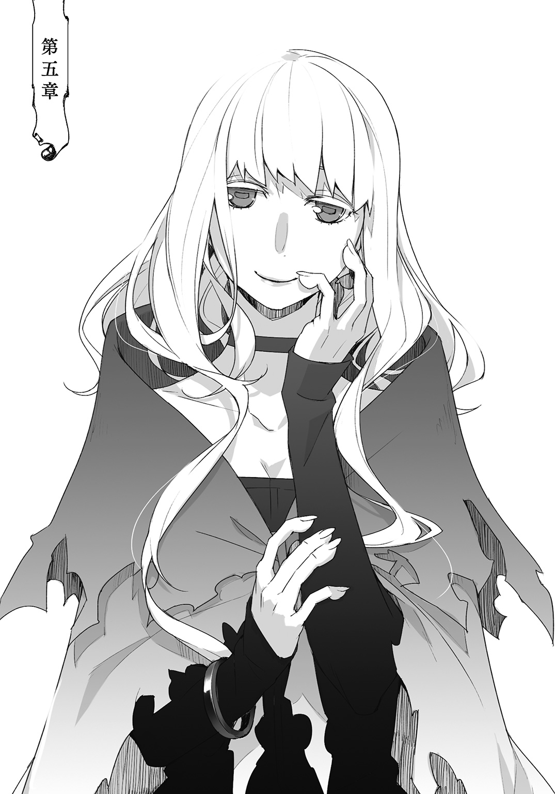
「ああ、なんて良い、匂い――」
回収した探索者証を提出しに探索者ギルドへと向かう途中、下街の通りでそれは起こった。
人目の多い大通りでまさか襲われることもないだろうとは思っていたが、闇市の人混みには掏摸や痴漢はもちろん、因縁を吹っ掛けて金銭をせびる輩も少なくない。
だから全くの無警戒ではなかった。
にもかかわらず抱きつかれるまで接近に気付きもしなかった。
そこには殺意も、悪意も、敵意もない。
蝶がただ羽を休めるためにひらりと花弁に降り立つのと何ら変わることはない。
後ろから抱きすくめて項のあたりに鼻を寄せるその仕草は、ランタンがもう追い払うのも面倒になったリリオンのじゃれつく仕草に似ている。後ろから抱きついてきたのがリリオンならば恥ずかしさもあるが、何だかんだと微笑ましいものだ。
だが当のリリオンはランタンの手を握り締め、すぐ隣でびっくりしている。
それは突如ランタンに覆い被さった人物の登場にであり、そして次の瞬間にはその人物が宙を舞っていたからである。あるいはしっかりと繫いでいた手が解けたからかもしれない。
ランタンは後ろを振り返りもせず肘突で抱きついてきた人物の胸を殴打し、乱暴な仕草で衣服を摑むと股ぐらを後ろに蹴り上げ、片腕一本で強引に背負い投げた。
柔らかい。無い。軽い。
ランタンはそれが変質者であると決めてかかって問答無用に地面に叩き付け、そのまま自らも倒れ込んで変質者の顔面に膝を落とした。眉間に狙いを定めて、たかだか五十キロかそこらであるが全体重を浴びせたはずだった。
軽い。自分の身体じゃないみたいだ。
変質者の頭部は地面と膝に挟み込まれて、軋みの一つも上げなかった。悲鳴の一つも漏らさなかった。
影を踏んだような手応えのなさにランタンは己の身体から重さが失せたように感じ、しかしふと肉体の重みを取り戻した。
それと同時に影であった変質者の肉体もはっきりと感じ取れるようになった。
一度、経験したことがある感覚に似ていた。過去探索した迷宮の一区画に低重力空間とでも呼ぶべき場所があった。一歩踏み入ると足元が不安定に感じるほどふわふわとして、一歩外に出ると今まで意識することもなかった自分の重さを再認識される。
あの異様な感覚に似ていた。
地面には緑の髪が広がっている。
ランタンは変質者の顔からゆっくりと膝をどけて、一歩離れた。
変質者は女だった。だから追撃して止めを刺さなかったわけではない。相手が誰であろうとも、躊躇う気持ちはあっても、必要なら暴力の行使に躊躇はしない。
女から抵抗の意志を感じなかった。
抱きついた時と同じ、まったく空っぽな気配が横たわっている。膝を落とした眉間はうっすらと赤く染まっていたが出血もなければ、腫れてもいない。
その赤さを見るように黄色い瞳が寄り目になっていて、ぐるんと外回りに一回転して焦点を取り戻す。それでもぼんやりしているように見えるのは、大きな瞳が眠たげだからかもしれない。何度も大きな瞬きを繰り返して、大きな欠伸をした。
まるで今、眠りから覚めたとでもいうように。
「ねえ、ランタン、この人」
「うん」
ランタンは大の字に倒れる女の手を爪先で動かし、手首を踏み付け掌を上にする。
「この前の女の人だね、たぶん」
女の掌に、ランタンの食い千切った傷痕が残っていた。それほど深く嚙み付いたわけではなかったから、並の探索者ならばすでに治癒している程度の傷だったはずだ。だが傷痕が残っている。あれほどの技量を有していて、並以下の探索者なはずがないのに。
あるいはもしかしたら他人の空似で、偶然に同じ箇所を誰かに嚙まれたのかもしれない。
「やっつける？」
「いや、様子を見よう」
うずうずと大剣に手を伸ばそうとした少女をランタンは落ち着かせる。
通りの人は多く、治安は悪い。
喧嘩や乱闘は見世物程度の認識でしかなく、これは儲けになるだろうかと賭け事の胴元に転職しようかしまいか屋台主たちが牽制しあう。ランタンが去ったら女の身ぐるみ引っ剝がして骨の髄までしゃぶり倒してやろうとする獣どもがぎらぎらと目を輝かせ、他の大勢はことの成り行きを楽しもうと野次馬根性丸出しだった。
今更ながらフードを外されたことに気が付いた。遅きに失したランタンは舌打ち一つを転がして、顔を隠すように俯いて女の目の中を覗き込む。はっきりと意識を取り戻した視線に見つめ返され、ランタンはびくっとした。
視線が交わると、女はすぐに唇に笑みを浮かべた。
廃墟で浮かべた不気味な笑みとは違う、頰まで裂けるような大きな口だが不思議と愛嬌があった。血の気の薄い青みがかった頰は元々の肌色が僅か黄緑色を帯びるためにいっそう瘦せて見えた。だが丸い顔立ちには温和そうな柔らかさがあった。
ランタンよりも幾つも年上だが、微笑むと年頃の娘のように無邪気だ。
「あらぁ、わたくしったら何を......」
おっとりとした口調で呟いた。往来の道端で仰向けに寝転がされているのに、そんなことなど気にもしていないように、あるいは気付いてもいないように。
女はもぞもぞと身体を動かして、はっとランタンを見た。
「あの、わたくしの手を踏まれているのですが」
女はまるでランタンが自分の手首を踏んでいることに気が付いていないのではないかと、本気で思っているような口調でそう告げた。
それが本気なのか、噓なのかランタンには区別が付かなかった。これは襲撃者というよりも変質者で、変質者というより変な人である。
「ごめんなさい」
「いいえ、かまいませんわ」
ランタンは曖昧に微笑んで、いざとなったら手首から先を灰に変えてやろうと寝転がる女に手を伸ばした。リリオンが心配げにランタンの外套を摑んだ。
「大丈夫ですか？」
「あら、恐れ入ります」
女は少しだけ驚いたように目を見開いて、ランタンの手を摑んだ。
女の手首に探索者証が揺れていて、しかしそこに刻まれた傷は無数にあって狩猟刀由来のものを確認することはできない。だが濡れたような体温の低さ、しっとりと吸い付くような肌触り、握り締める力と僅か膨らんだ指先。
その感覚は、顔面を鷲摑みにされたときのことを容易に思い起こさせた。
この女で間違いないようだ。
ランタンが内に隠していた警戒心を露わにしたが、女に変わった様子は見られなかった。
ランタンはいつでもその手を破壊できるように意識しながら、女の身体を引き上げた。瘦せて見える頰や、手首とは裏腹にそれなりの重量がある。
重心は下寄り。尻が丸くて、太股が張ってる。立ち上がるとランタンよりも、例外なく探索者はそうなのだが、背が高い。女はごく自然に、それでいて名残惜しげにランタンの手を離して頭を下げた。
ランタンが引き起こす僅かの間に、空っぽの気配が満たされた。
「ありがとうございました、――ランタンさま。それにリリオンさまも」
手を差し伸べたときから、野次馬たちは数を減らしていた。
表面上の穏やかなやり取りは、顔面に膝を落としたことさえ勘違いではなかったかと錯覚させるほどで、血に飢えた野次馬たちはつまらなそうに踵を返し、僅かに残った暇人たちは一変したランタンの気配を敏感に察知して慌てて姿を隠す。
女は戸惑っているようだった。
どうしてランタンが怒っているのか本当にわかっていないように。
もしこれが演技なら相当な役者と言わざるをえない。だが場違いなほどの女の困惑振りにランタンは毒気が抜かれてしまった。ちらとリリオンを見上げると、少女も困惑していた。
ランタンは眉間を揉みほぐして溜め息を吐いた。
「僕らの名前を、どうして知っている？」
ランタンの問い掛けに女はほっとして、胸の前に手を合わせた。
「ああ、こうやってお会いするのは初めてですものね。わたくしったら自己紹介もしないで、とんだご無礼をいたしました」
それこそがランタンの怒りの原因なのだと信じて疑っていなかった。
「はじめましてわたくしルー・ルゥと申します。ランタンさまは有名ですもの、お名前はかねがね。そんなランタンさまのお側におりますからリリオンさまのお名前も耳に届きますわ。それにわたくし傭兵探索者ですから、探索者様方の情報には敏感ですの」
「......ああ、そうなんですか。傭兵探索者」
「ってなあに？」
聞き慣れぬ言葉にリリオンは摑んだ外套を引いた。
ランタンは思わず女――ルーから視線を外し、くすくすと笑い声を聞いた。妙に恥ずかしい気分になって、視線を戻すとルーは笑み混じりにリリオンに説明した。
「戦力の足りない探索班に雇われて探索のお手伝いをしますのよ。探索でお手が必要ならば、不肖の身ですがお安くお手伝いさせていただきますわ」
安くね、とランタンは口の中で呟く。
傭兵探索者は女の言った通りに、何らかの問題で人材不足に悩む探索班の穴埋めとして雇われる存在だった。特定の探索班には属さぬ傭兵探索者は金銭によって一時的に探索班につなぎ止めることしかできない渡り鳥だ。実力を金で買われる傭兵たちの力は確かだが、尽くが法外な分配率を要求する守銭奴であるともっぱらの噂である。
傭兵探索者の売り文句ほど信用ならないものはない。
「今は、どこかに雇われていないんですか？」
「ええ、残念ながら暇をしておりますの。けれどちょっと体調もよくありませんし、神の思し召しかもしれませんわね」
「......手、怪我されてますね」
「そうなんですの。いつ怪我をしたのかわからなくって、嫌ですわ」
ルーはランタンに掌を向けて、軽く開いたり握ったりして見せた。そしてそれを自分でも見つめて、その視線ははっきりとした黄色の瞳に影を落とした。
「記憶が......？」
「あら、そんなに大げさなことではありませんわ」
先日のことを思い出しランタンが心配げに尋ねると、ルーは慌てて首を振った。けれどランタンは更に踏み込む。
「先日、二日ほど前は何をされていました？」
「ふふ、心配してくださるのね。二日前は、――そうそう、お薬を頂戴しに。ちゃあんと覚えておりますよ」
ルーはそう言って微笑んだ。自分の記憶に疑うところなどなく、ランタンたちと出会って戦ったことなどすっかりと忘れてしまっているようだった。
薬、そう言えばあの男たちは高価な魔精薬を二本も三本も服用していた。あるいはそれがルーに何かしらの影響を及ぼしたということなのだろうか。
ランタンは何とも言えぬ表情になって言葉を探す。
そんなランタンの手をルーがさっと摑んだ。
「お噂通りのお優しさですのね。今は、あら？ 何だか調子がよろしいですわ」
ルーは青白かった頰に赤みを取り戻していた。戦った時とは別人のようにはっきりとした気配がある。
「肩を並べて探索をできる日を心待ちにしております。リリオン様とも、もちろんご一緒に」
呆気に取られるランタンを余所にルーは言って、リリオンとも平然と握手を交わした。リリオンも戸惑っていて無言でこくこくと頷くばかりである。
「それではごきげんよう」
そしてルーはランタンが呼び止める間もなく去って行った。
「ええっと、なんだったの、かしら......？」
「うう」
リリオンは小難しい顔をしてしきりに首を捻り、ランタンは言葉もなく呻くことしかできない。ルーの背中はすでに見えない。
「お話、聞かなくてもいいの？」
「よくはないんだけど......」
ランタンはどうしていいのかわからなくなった。
向かってくる相手は叩きのめし口を割らせればそれで済むのだが、ルーにはまったくその雰囲気がない。それはランタンにとっては未知のことで、何をどのようにすればいいのかがわからなかった。
「追いかける？」
「いや、先にギルドに行こう。名前も教えて貰えたし、調べるのはきっと難しいことじゃないから。たぶん」
「うん、......でも本当に覚えていなかったみたい。変なの」
ランタンはリリオンの手を取って、名残惜しげに後ろを振り向くリリオンを急かした。
変なの、とはあまりにもな言い分だがまさしくそうとしか言えなかった。記憶がぽっかりと欠落していて、ルーはその事をまったく気にも止めていない。それが性格によるものなのか、それとも彼女の言うお薬の作用なのかはわからない。
「でもほんとなんだったんだろ」
ランタンは鼻を擦りつけられた首筋を掌で拭う。
「ランタンが良い匂いだから、我慢できなかったのかも」
「絶対無いね。って言うかさ、リリオンも同じ石鹼使ってるんだから同じ匂いがするでしょ」
同じ石鹼どころか、ほとんど同じ物を食べ、同じベッドで寝起きし、同じように生活をしている。リリオンは服の胸元を引っ張って、くんくんと自分の体臭を確かめていた。
「やめなさい、人前でそんなこと」
「おんなじ匂いしないよ」
顔を上げたリリオンは唇を突き出してそう言って、繫いだ手を引っ張ると鼻を寄せた。
「ランタンは良い匂いがするわ。どうして？」
手の甲に口付けをしているようだ。
そのまま少女は無邪気に尋ね、湿った吐息が甲を濡らした。
「――リリオン、途中で肉串を買い食いしてたからじゃない？」
同じ生活をしていても体臭は別だ。
リリオンの体臭は妙に甘いようにランタンは思う。乳飲み子の甘さとも少し違う、少女の匂いは寝起きにむわっと濃く香るのだ。体温が高く、よく汗を搔くからだろう。けれどそれは不快な匂いではない。
「あう、そうなのかな......じゃあ、もう食べない」
「ふうん、僕は食べるけどね」
「......ずるい」
膨らませていじいじとしながらリリオンは、やっぱり食べる、とあっさりと前言を撤回した。それからこそっとランタンを窺い、ランタンが意地悪そうに笑っているのを見つけると唇を突き出してぶぅと鳴いた。そして笑った。
「ランタンはきっと特別なのね」
「急になんだよ」
「だって、さっきの人もランタンに抱きついたら急に元気になったのよ」
「噓だあ」
「ほんとよ、ランタン」
リリオンが真面目な顔で言うので、ランタンは思い出したようにフードを被って顔を隠した。
「恥ずかしがらなくってもいいのに」
◇◇◇
「落とさないでよ」
「大丈夫よ」
探索者証を提出しようとそれをポーチから取り出して、ランタンは手慰みに指に引っ掛けてくるくると回す。無意識にそんなことをしていると、リリオンが貸して貸してとせがんでさっそく真似をした。
リリオンは何が面白いのか鼻唄を歌い、ランタンもそんなリリオンが面白いので鼻唄を歌った。二人して楽しげに探索者証を回している姿はギルド内にいる探索者からの胡散臭げな視線を一身に集めていた。
だが遠巻きに見られるだけで、この前のように話しかけてくる探索者はいなかった。まるでこの指先にくるくると回す行いが魔除けの呪いで、浮かれた鼻唄が悪霊除けの経文であるかのように。
ランタンの手首には自分の探索者証が嵌められている。探索者証は原則として探索者一人につき一つ。それを二つ以上有している姿は探索者たちの想像を搔き立てるものである。
探索者証は自らを探索者だと保証してくれるものだ。多くの探索者はそれを自らの誇りと置き換え、肌身離さず身に付ける。探索者が探索者証を手放すことは滅多にない。
「この前の二人組のじゃないか......？」
「ああ、きっとそうだ。ものすげえ怒ってたからな」
「かわいい顔して怖い怖い」
「......それもまたそそるよなあ」
ひそひそ話が聞こえてきて、ランタンは顔を顰めた。
僕が殺したんじゃないんだけどな、とランタンは聞き耳を立てながら思う。
結局、探索者証の元の持ち主たちに止めを刺したのは射手である。もっとも殺そうと思ったのは確かで、射手がしなかったらランタンが止めを刺したのも確かなことだったが。
「あっ」
リリオンの指から跳ね飛んだ探索者証をランタンはひょいと指に引っ掛ける。
「探索者除けのお守りになりそうだな、これ」
ランタンはそんな物騒なことを言った。
ひそひそと遠巻きに噂されるのは気分の良いものではないが、馴れ馴れしく話しかけられるよりはましかもしれない。ランタンはこれ見よがしに二輪の探索者証を手の中でちゃらちゃらと鳴らした。
その音色は探索者を戦かせるが、探索者を屁とも思っていない者には何の効果もない。
「いいものをもっているじゃないか」
不意に後ろから声を掛けられてランタンは危うく探索者証を落とすところだった。二度、三度とお手玉して、横からリリオンがランタンの手ごとそれを握り締めた。
思わず顔を見合わせて二人揃って安堵の溜め息を漏らす。
勧誘か、それとも台詞からして喝上げか、と思ったが声の主は探索者ではない。
「やあ、こんにちは」
今までにない切り口だった。落ち着いた低めの声で、こんにちは、なんて声を掛けてくる探索者は今までランタンは出会ったことがなかった。その新鮮さにランタンは驚きを覚えた。
「あ、はい。こんにちは」
ランタンは反射的に小さく会釈をして、それからその顔を見上げた。リリオンが会釈しながらも、そっとランタンの背に隠れるように移動する。少女はぎゅっと外套にしがみついた。
それは狼人族の女だった。
紫がかった濡れ羽色の体毛に、それよりも濃い漆黒の髪。髪を搔き分けて頭上にぴんと尖る三角の耳。獰猛に突き出た鼻面と、笑うとそこから鋭い牙が覗いた。
ランタンとリリオンが二人して目を瞬かせる様子を可笑しげに見つめている。
冷徹にすら見える灰青の瞳が不思議と優しげで、それでいながら凜々しさを失わない狼顔にランタンは既視感を覚えた。
「あ」
ランタンは小さく声を上げ、あらためて深く頭を下げた。
「その節はありがとうございました」
狼女は以前勧誘からランタンを救い出してくれた武装職員だった。
その時に装備していた犬頭の兜はもちろん、厳めしい全身鎧も身につけてはいないが、ふっとランタンの頭に手を伸ばす仕草は変わらなかった。
「くふ、いや君は、本当に探索者らしからぬ礼儀正しさだな。気にせずとも構わないさ、あれが私の仕事だからね」
武装職員はくしゃくしゃとランタンの髪の柔らかさを堪能して、その手を外した途端にランタンの髪を撫でつけるリリオンにあくまでも穏やかな視線を向けた。
ギルド職員だから、もしかしたら多くの探索者が勘違いしているリリオンの実年齢を知っているのかもしれない。
「それで、それはどうしたんだい？ まさか拾ったわけでもないだろう？」
探索者ギルドの綱紀粛正を司る武装職員はランタンが手にする探索者証を指差して尋ねた。
黒く短い毛に覆われた獣の指にはいかにもな爪が尖っていて、ランタンの手の中から探索者証をひょいと取り上げた。
「と言いたいところだが、最近は探索者の誇りを落っことす奴が多いんだ」
武装職員は探索者証の表面を眼前にかざして鼻を鳴らした。
「これも本物のようだし、嘆かわしいことだな」
「そうなんですか。でもこれは、――落っことしそうになってるところを拾ってきたんです」
「ほう、それは興味深い」
「これを拾った経緯についてご相談したいことがあるのですけど、よろしいでしょうか？」
「ああ、もちろん。こうみえて私は遺失物係もしているんだ。おっと、そう言えば自己紹介がまだだったね。私はテス・マーカムという。よろしく」
「ランタンと申します、で、ほら、あいさつして」
「......リリオンです。いしつぶつがかりって、なんですか？」
「くふふ、落とし物係のことさ。もっとも落とし物をわざわざ届けてくれる探索者を私は一人しか知らないがね」
テスは笑いながらそう言って、意味深にランタンを見た。
「さて人目もあるし、君たち二人といるとさすがに目立つな。少し移動しようか」
ついておいで、とテスは歩き出し振り返りもしない。
テスの尻から尻尾が生えていた。
ぱつっとした革のズボンに開いた穴から外に出た尻尾は長毛で、狼の尻尾というよりも馬の尻尾を思わせた。それは艶やかで毛先に近付くにつれて僅かながら銀の光沢を帯びる。
「......かっこういいね」
リリオンがランタンの耳元に顔を寄せてひそひそと告げた。
テスの歩く後ろ姿は背筋がぴんと伸びていて、かつかつと踵を鳴らして堂々としている。
背に垂らした髪と、膝まで垂れる長い尻尾が左右に小さく揺れていた。小股の切れ上がった女性、とはこういう人のことを言うのかもしれない。
ランタンはひそひそと、そうだね、と返す。
「でもランタンもかっこういいよ」
「......それはどうも」
不意を衝かれて、ランタンは照れて唇を嚙んだ。そんなランタンを余所にリリオンはテスの真似をしてぴんと背筋を伸ばした。
そうするとリリオンは本当に背が高くて、こそこそとテスを観察する表情の幼さが不釣り合いで奇妙な魅力があった。
「こっちだ」
テスが振り返ると、リリオンが慌てて目を逸らした。
テスの向こう側には地下への階段がある。
「こんな所に階段あったんだ。どちらに行かれるんですか？」
「ああ、地下資料室さ。職員もなかなか寄りつかないからね、内緒話には持って来いの場所だよ」
「へえ、資料室。僕らが入ってもいいんですか？」
「もちろん問題ない。バレなければね」
しれっと言い放ったテスはさっさと先に行き、ランタンはリリオンの手を取って薄暗い階段を下った。
探索者も使用可能な地下施設はあるが、ここは明らかに職員用という雰囲気があった。探索者の姿が一つもなく、彼らの持つ喧しさや熱気がないので冷たく静まりかえっている。
「珍しいかい？」
「ええ、僕らが入れる場所って立派だから。ここはなんというか質素、じゃなくてええっと質実剛健ですね」
「あっはっは、気を遣わなくていい。見られるところには金は掛けるさ。探索者はそういうのが好きだからね。ギルドが貧相じゃ探索者が集まらない」
上の施設に比べると天井が低く、足音がはっきりと空間に反響した。魔道光源の明かりすら切れかけに明滅していて、テスの言う地下資料室は地下一階の果てにあった。
重々しい金属の扉を前にテスは静かにするようにと唇に人差し指を当てる。
そして忍び入るようにそっと扉を押し、その隙間から滑り込んで二人を招き入れた。扉を閉めるときも、気を遣っているようだった。
「地下なのに二階だ」
「すごおい、本がいっぱい......」
扉を入った先は中二階で右側の壁に階段が備えられていた。
リリオンが手すりから下を見下ろしていて、ランタンもそれに倣うと膨大な数の書架が墓標のように立ち並び、また壁一面を埋め尽くしているのがわかった。
階段を下りながらリリオンがすんすんと鼻を鳴らした。
紙の香りが沈殿している。古い紙特有の黴っぽい乾いた匂い。そして少し甘いインクの匂い。それが階段を下るにつれてどんどんと濃く香る。
下りきるとテスが振り返った。
「あまり良い匂いじゃないだろう」
「うー......」
「僕は好きですよ、こういうの。落ち着きます」
「じゃあ、わたしも好き」
「じゃあってなにさ」
「いいの」
ランタンを物珍しげに見つめたテスは、リリオンの言葉に思わず笑い声を漏らした。口元に手を当ててどうにか嚙み殺そうとしているようだが堪えられないようだった。
その笑い声に反応して、書架の影がぬっと形を作った。
影は黒と金で構成されていて、それは人の形をしている。
ランタンとリリオンがそれを見ると、テスがゆっくりと首を回した。
それは頭までをすっぽりと覆う黒いローブを身につけていて、輪郭を縫い取ったように金糸の刺繡が施されていた。口元にはヴェールが垂らされて、白金の細い鼻梁が僅かに覗くばかりだった。一見すると魔道職員のように見えるが、なんとなくランタンは違うと思った。
「おい、どういうことだ？」
声は冷厳と言う他ない女の声だった。テスは悪戯が見つかった子供のように頭を搔いて、しかし楽しげな視線をランタンとリリオンに寄越した。すると影は苛立たしげに声を発した。
「おい」
「ああ、悪かったって。静かにするから、少し場所を貸してくれ」
「静かにしていても、お前は存在自体がうるさいんだよ」
「おや、なんと酷いことを言う」
「それに――」
女は隠された顔を二人に向ける。
じっと二人を見つめて、その妙な威圧感にリリオンが背に隠れた。
「うるさい探索者の筆頭が居るじゃないか」
それが自分を言っているのだとランタンは一瞬理解できなかった。
ギルド内でランタンはいつも大人しくしている。ランタンが戸惑っていると、女は黒い手袋に包まれた指をランタンの鼻先に突き付ける。
「お前の周りには、いつも騒ぎがあるだろう」
「......僕のせいじゃないと思うのですけど」
ランタンが拗ねるように呟くと、テスが笑って女を肘で突いた。
「ランタンが魅力的なのがいけないんだってさ。口下手なんだ、ゆるして――やってくれ」
テスが臑を蹴飛ばされて、しかし固そうな革の戦闘靴に包まれた足はびくともしない。
けろりとしているテスに女は忌々しげに舌打ちをして、そしてランタンとリリオンを隠された視線で見据えた。
リリオンは恐れ、背に隠れながらも身体ごと首を傾けてフードの中を覗こうとしている。
「そもそもここは、部外者は立入禁止だ」
「探索者は全てギルドに所属している。だから部外者ではない。どうだ？」
「......」
「場所を貸してください」
テスの言葉にランタンが頭を下げてリリオンがそれに続いた。女は渋々と言った様子で、書架の果てにあるソファとテーブルを指し示した。
「うるさくしたら追い出すからな」
「わかってるよ。二人とも座って待っててくれ。紅茶を淹れるが、砂糖は？」
「えっと三つください」
「わたしもおんなじだけ、ください」
「くふ、甘党なんだな」
「――子供なだけだろう」
テーブルを挟みソファが二つ。そしてそれらを観察するように上座に執務机がありローブの女はそこに腰掛けた。我関せずとさっそく書類を捲っていたが、思わずというように呟いて咳払いを一つこぼした。
ランタンは座ろうとするリリオンを押し止めて、女に声を掛けた。
「お仕事のお邪魔をして申し訳ありません。場所を少しお借りします」
「......ああ」
「僕たちの名前は、もうご存じなのですよね」
「ランタンとリリオンだろう」
「はい。その、よろしければお名前を教えていただけますか？」
ランタンが尋ねると、女は思案するように一つ間を空けた。フードに隠されているのに、ランタンは女からの冷たい眼差しを感じた。そして独り言のようにぽつりと呟く。
「名は無い。好きに呼べ」
突き放すようなその態度にランタンは戸惑った。そしてランタンの戸惑いが失われるよりも早くリリオンが好きに女を呼んだ。
「......おねえさま」
は、とランタンと女の声が重なった。
女は戸惑い自分の身体を抱きしめてあまりの不可解さに震え、ランタンの戸惑いはさらに深くなりリリオンを振り返った。
リリオンはちょっとだけ恥ずかしそうにしている。
「おー、いいじゃないかお姉さま。私もこれからそう呼ぼうかな」
「黙れ。ああもう、好きにと言ったが撤回する。あー、そうだな。司書。司書と呼べ」
女、――司書は紅茶を淹れるテスの背中を睨み付けて、それからリリオンに言い含めた。
「司書、さまですか」
ランタンがぽつりと呟く。面白味のない、とテスの囁きが被さるように聞こえた。
「ししょさま」
リリオンが舌足らずにそう口に出して、その甘ったるい響きには書を司るという名前の意味の一切が失せていた。
司書はまったく別の名で呼びかけられたようにまた戸惑う。
テスがこっそりと振り返り、黙って司書を指差して笑いを嚙み殺している。そして褒めるようにリリオンへ視線を寄越した。
「追い出すぞ」
「何もしてないじゃないか」
テスは器用に三つのカップを運んで、執務机の前を通り過ぎソファに男らしくどっかと座った。尻の下に敷いた尻尾を、そっと取り出し膝の上に放り出す仕草が様になっている。
「ありがとうございます」
琥珀色の紅茶にはすでに砂糖が入れられていた。溶けきらぬ塊が僅か底の方で沈殿していて、リリオンはそれを見下ろすようにふうふうと冷ましている。
「さて、では話を聞かせてもらおうか」
テスはテーブルの中央に探索者証をごとりと置いて、ランタンに話すように促した。
「はい、まず最初は酔っぱらいに待ち伏せされたことがきっかけでした」
迷宮を攻略して、一晩休んだ翌日の帰路。
「なるほどそこを突くのは襲撃者っぽいな。だがやることがお粗末だ。襲撃者なら君の怖さは身に染みているだろうに」
そうしてランタンはその時の状況や、薬物のこと、そして矢を射られたことを説明する。
迷宮攻略報告と手順はそれほど変わらないはずなのに、ランタンは不思議な緊張に煽られ言葉は辿々しかった。だがテスはゆっくりと頷き、相槌を挟むことでランタンの言葉にリズムをつくってくれた。
「――それでここでも矢を射られたので、それが黒幕だと思うのですが......」
「とはいえ確認できないんじゃな。まずは三名の探索者について聞こうか」
「一人は逃げられました。名前は、本名かは解りませんがルー・ルゥという女性の探索者です。髪は緑、目が黄色で、背は一六〇強。武器は装備してなくて、鉄の靴を履いていて格闘戦が異様に強い人でした。それで――」
「知ってるか？」
ランタンが全て言葉を言い切らない前にテスは司書に視線を向けた。
「おそらく蛙人族の乙種探索者だ。特定の所属は無し、傭兵探索者としてわりと名が売れてるな。だが襲撃者に雇われるような女ではないように思ったが」
すらすらと語られることにランタンもリリオンも驚きを隠せなかった。
もしかしたらこの書架に収められている書の数々は、探索者の記録なのだろうか。そして書を司るこの女性は、その全てを記憶しているのかもしれない。
テスがどこか誇るように、驚く二人にくつくつと笑って、探索者証を司書に一つ放り投げた。それを受け取った司書はその表面に指を滑らせる。
穏やかに明滅する薄青い発光に司書のヴェールが波打ったようにも見えた。
「三年以上、迷宮の探索記録がないな。その割に魔精の活性化が頻繁に見られるのは――」
司書が独り言のように呟く。
探索者証は探索者の行動を記録しているというのは公然の事実だったが、どれ程詳細に記録されているかは公になっていない。しかし予想よりも仔細に記録されているようだ。
ランタンはちらりとリリオンの顔を見て、恥ずかしげに左手を飾るそれに触れた。
「持ち主は魔精薬を飲んでました。見た限りだと二瓶、一人につきです」
「ほう、探索をしていないのに薬を買う収入があるのか。安い薬でもないだろうに」
テスはもう一つの探索者証を手にとって、それも司書へ。
「しかし薬物で強化した探索者を一蹴するか。現役傭兵もいたのに。さすがにやるな」
「いえ、殺し切れませんでしたから。まだまだです」
謙虚ながらも物騒なランタンの物言いにテスは噴き出し、司書が落っことした探索者証が執務机の下からころころと転がってリリオンの爪先にぶつかった。
リリオンはそれを拾い上げて微笑んだ。
「ああ、悪いな」
「大丈夫です！」
そしてそれの表面を指先でなぞって、ちょこんと小首を傾げる。
「......どうやったら光るんですか？」
「職務上の守秘義務により答えられない」
「しゅひ......？」
「内緒ってことだよ」
ランタンが探索者証を取り上げて、それを机の上に戻した。
「そう言えばルー・ルゥは魔精が抜けやすい体質だったはずだ。そこを突かれたのかもしれないな」
「魔精欠乏症か。しかしお詳しいな。さすがは司書さま、素晴らしい」
「黙れ。これで二度目だ。次はないぞ」
二人のやり取りの狭間に、ランタンははっとして顔を上げた。
「思い当たる節が？」
「はい、戦闘時も、ここに来る前にも出くわしたのですが様子が変でした。少し、......いや、だいぶ、かなり、とても」
「ふむ、その時の様子を教えてくれ」
魔精欠乏症とはその名前の通り、探索者の常人離れした力の源である魔精が欠乏する症状のことを指す。
本来、人の持ち得ない魔精は迷宮を探索したり、魔精によって生み出された魔物を殺すことで体内に取り込まれ身体機能を強化、向上させる。
人は生まれながらにして魔精との親和性に優劣があり、同じ迷宮を同じ時間だけ探索し、同じ魔物を同じように殺したとして、獲得する魔精の量には差があった。
魔精の許容量、吸収効率、定着率、減衰率、身体に及ぶ影響の大小などをひっくるめて親和性と呼び、それは残酷な程はっきりと表れる探索者の資質と言えた。
「――声を上げなかったです。あとさっき会った時はその事をまったく覚えてないようでしたし、夢遊病みたいにふらふらして。体調が悪くて薬を買ってるって」
「うーん、記憶の欠落か。自我喪失、意識の混濁、酩酊なんかは症状の一つだが、ちょっと何とも言えないな。発声障害はどうだ？」
「なくはないだろうが、別の要因だろうな。大方、欠乏症を抑えるために服用した魔精薬に何か入れられていたんだろう。治療ついでに意識を弄られたのかもな」
「やはりそうか。呼び出しを掛けて事情聴取でもしておくか」
司書は執務机に座りながらも、すっかりと書類を放り出していた。真剣な雰囲気で探索者証をいじり回して、ランタンの視線に気が付くと探索者証の発光が止んだ。
「なんだ？」
「いえ、ありがとうございます。お仕事中なのに、手伝っていただいて」
「なあに気にすることはないさ」
「どうしてお前が言うんだよ......」
司書は疲れたように背もたれに身体を預けて、テス目がけて探索者証を投げつけた。
それは頭上を通り過ぎるように狙いから随分と外れて、しかしテスは何でもないように腕を伸ばしてそれを摑まえた。
「考えられる可能性は射手が麻薬組織の一員だということか。念のため魔精薬の販売履歴を探ってみるが、おそらくは密造薬だろう」
テスはふと真剣な顔つきになって、優しげな気配の下から抜き身の刃物のような獰猛な迫力が、隠しきれずに滲みだした。
「これは大捕物になるかもしれないな。魔精薬の密造ができる組織なんてそんなにないぞ。よしんば射手がただ売人だったとしても、芋づる式に捕らえられる可能性もある。探索者も絡んでいるのなら私が存分に働けるしな」
「テスが出るのならば、相手の心配をした方がいいな。射手はルー・ルゥから辿れるだろうからそんなに心配することもない。問題は」
「一度目と二度目の襲撃までの間隔の狭さだな。話を聞くに狙いはリリオンかもしれないが、射手の執着はランタンにあるように感じるんだが」
テスはランタンの顔を灰青の瞳に映した。それは観察するようにも、笑むようにも見える。
「君はどうしようもなく有名人だからな」
そう言われてランタンは眉間に皺を寄せた。その自覚はあり、誇る気持ちは全くない。今までの経験上、煩わしく思うことの方が圧倒的に多かった。
「ランタンはやっぱり有名、なんですか？」
その事実に苦く頰を歪めたランタンは、リリオンの言葉にぎょっとして少女の顔を振り返った。やっぱりって何だ。
「くふふふ、それはもう有名だよ。単独探索者なんて天然記念物どころの話じゃないからね。彗星のごとく現れ、ただ一人で迷宮を踏破する探索者ギルドの孤高のホープ！ それに加えてこの容姿だ。そりゃもう目を惹くよ」
「すごい、すごいっ！」
テスが煽り立てるように謳うと、リリオンは胸の前で手を叩いてきゃっきゃと喜んだ。
ランタンは隠すこともなくうんざりとした表情になり、リリオンが興奮してランタンの腕を揺すってきらきらの視線を向けると恥ずかしがって俯いた。
テスは誇張に誇張を重ねて、ランタンの探索譚をリリオンに語り聞かせた。
「――うるさいぞ。無駄話をするなら出ていけ」
司書が荒々しくテスの隣に腰を下ろして、ローブの裾をばさりと翻して足を組んだ。ローブから浮かび上がった膝が形良く尖っている。
ランタンは助け船を出してくれた司書に小さく会釈をして、冷めても香り高い紅茶に口を付けた。
蜂蜜のような独特の風味があって、それはほっとする味だ。じんわりと喉に染みる。
リリオンは手で口を押さえて、テスと視線を合わせるとばつの悪そうな表情で黙る。けれど隠しきれずにんまりと眦が下がり、横目にランタンを見つめる視線が熱っぽかった。
「ランタンは、やっぱりすごいね」
リリオンは小さな声でさっと言った。
「怒られたばっかりでしょ？ もう静かにしてよ」
「くふふ、リリオンは素直で可愛いな。ちょっと持って帰っていいか？」
「ダメです」
「そうか、残念だ。うちの弟も昔は素直で可愛かったんだがな、私の後ろをちょこまかくっついてきて。今はもうすっかり生意気になってしまってね」
懐かしむように呟いたテスに司書が呆れた声を上げた。
「弟だからって扱き使ったせいだろう。自業自得だ」
「――弟さん、いらっしゃるんですね」
「ああ探索者をやってる。今度機会があったら紹介するよ。生意気だが可愛い奴だから」
ぜひ、と言うようにランタンはにこやかに頷いた。
隣でリリオンが司書の真似をするように足を組もうとしていて、ランタンはにこやかなままリリオンの膝頭を叱るように叩く。
ダメだよ、と視線で言うとリリオンは、ごめんなさい、と肩身を狭める仕草で返した。
そんな二人にテスと司書が視線を交わした。
「――お前よりよっぽどいい兄っぷりだな」
「私は姉だからね。さて――取り敢えず身辺には気をつけてくれ。この二人もそうだが――」
テスは探索者証に鋭い視線を落とした。
「――最近は探索者による犯罪も増えている」
「そうなんですか？」
「ああ、昔は少なかったとは言わないがね。しかしそもそもとして探索者の質が下がった。誇りの話をしただろう？ 迷宮で磨いた腕を平気で犯罪に使うだけじゃない。今は探索者と襲撃者の二足のわらじを履いている阿呆も少なからずいる。魔物を相手にするよりも、同業者を相手にする方が楽だと考える不届きな輩がな」
テスは苛立ちも露わに腕を組む。剣気とも呼べる気配が吹き上がったような気がした。
それに中てられて驚く二人とは裏腹に、司書は慣れたものなのか平然としていた。
司書は一枚の紙をテーブルの上に置いて、ランタンたちに寄越した。
「これは......？」
「探索者で弓使いは少ない。その中でも相応の技術を修めた者はさらに少なく、そこから道を踏み外しそうな奴となるとかなりの数が限られる。名を知ったからといって何があるわけではないが、念のため目を通しておくといい」
美しく躍る文字。
一枚の紙につらつらと記された文字は、弓を使う素行不良探索者の名前であった。司書はランタンたちが顚末を語り始めたその時から、この名簿を作成してくれていたようだ。
ランタンもリリオンもはっとして司書の隠された顔を見つめて、深く頭を下げた。
「ありがとうございます」
「ありがとうございますっ！」
子供の声が二つ重なって、司書の動揺の気配が伝わってくる。
司書は落ちつかなげに足を組み替えて、そっぽを向くようにヴェールが揺れた。縫い取られた金糸が光を反射して赤面したように色を変え、咳払いが聞こえる。
「くふふ、お優しいことだ。その優しさを私にもくれないか？」
「うるさいよ。その減らず口を黙らせたら考えてやるさ。――取り敢えずこの探索者証は預からせてもらうぞ。後で詳しく解析する」
「ああ、そうだな。ルー・ルゥを呼び出して事情聴取もするし、奴の探索者証も解析に掛ければおおよそのことは解るだろう」
テスが表情を改めると、灰青の瞳に冴えた光が宿る。
するとその容姿そのものである狼の獰猛さが露わになって、恐ろしくも誇り高い凜々しさにランタンもリリオンも自然と背筋が伸びる。
「この都市には悪が多すぎる。襲撃はまだあるだろうから気をつけるんだよ。身の安全を第一に、情報収集はこちらでやるから深追い厳禁。いいね、ランタン」
ランタンに釘を刺したのは、きっと手首に巻かれた探索者証に収められた戦いの記憶がギルド内で共有されているからなのだろう。
「何かあっても先走らず、ここに来て私か、司書さまに報告だ。男の子なんだから女の子を守りたくなるのは解るけどね。なあに少しの辛抱さ。舞台はちゃんと整えてやる」
実は密かに今度襲撃があったら何人かひっ捕まえて口を割らせてやろう、と考えていたランタンは、内心の少年っぽい意気込みを見透かされたようで恥ずかしがった。
「......はい、ありがとうございます。でも、どうしてこんなによくしてくださるんですか？」
ご迷惑ではありませんか、とランタンは遠慮がちに尋ねる。
するとテスは鷹揚に首を振った。
「気にすることはない、これが私の仕事だよ。それに趣味と実益というやつだからね」
「趣味、ですか」
どんな趣味なのだろう、と考えたランタンの思考をそのままリリオンが口に出した。
「どんな趣味なんですか？」
テスは不敵に笑い、ただ一言答える。
「正義だ」
◇◇◇
「麻薬組織か......」
テスたちにそう告げられたせいか、帰り際に薬物中毒者の姿が目についた。
煙草状のものを咥えぷかぷかと煙を燻らせながらぼんやりと嗜んでいる者もいれば、死体のように大人しくなって陶酔している者も、しきりに身体を搔き毟ったり、けたたましく笑い転げている者もいる。探索者に絡んで鬱陶しげに蹴倒されている者もいる。
殺されないのは運がよかったのか、そうすることすら面倒なほどに日常的な出来事だからなのかもしれない。
誰も彼もが怪しく見えたが、彼らはきっと前からもそこにいたのだ。ただ、今までそれは景色の一部に過ぎず、大して気にもとめなかっただけで。ずっと前から。
背後にある人の気配は、ただ同方向に用事があるだけの一般人だ。
ランタンはそんな風に考えて、しかしどうにも落ち着かなかった。もしかしたら自分にそう錯覚させる程の実力者なのではないか、と心の片隅にある疑念が消えない。
ランタンの神経質さは、この繫がれた左手にある半端な冷たさのせいだ。
リリオンの感情はすぐ指先に現れる。楽しいときは温かいし、不安なときは冷たい。
「ねえリリオン――」
「なあに？」
もしかしたらこの冷たさは自分の緊張が伝わったせいではないか。
そう思ったランタンは何でもないように少女の名を呼んで、それから話題を考えた。
ぱっと思いついたのはテスと司書の二人だった。
二人のやり取りは妙に子供っぽく仲睦まじげで、しかし不思議と大人の女性であることも同時に感じさせた。それは微笑ましさと頼もしさだ。
「テスさん、格好良かったね」
「うん！」
あの頼もしさを思い出したのかリリオンは頰を緩める。ぽっと温かくなった手を感じ、ランタンは指を絡めるように手を繫ぎ直した。嬉しそうに少女は笑う。
「ねねね、ランタン」
「うん」
「わたしに訊いて」
「何を？」
「趣味は何って、わたしに訊いて！」
リリオンは繫いだ手を前後に大きく振った。
そんなリリオンは、何となく言い渋ったランタンの手を引っ張って、ねえお願い、と甘えるような声でそれをせがんだ。ランタンは諦めたように肩から力を抜く。
「......リリオンの趣味は、何ですか？」
ランタンが尋ねるとリリオンはわざわざ立ち止まって、少しだけ名残惜しそうに繫いだ手を離した。それを慎ましやかな胸に当てて、鼻をつんと上に向けた。唇に浮かぶ笑みは狼の、とはとても言えない子犬の笑みだ。少女は勿体ぶるように呼吸を一つ置いて口を開く。
「――正義よ！」
どうだと言わんばかりに言い放ったリリオンに、ランタンは生温い視線を送った。
だがリリオンはとても満足気な顔で、いそいそとランタンと手を繫ぎ直してむふうと鼻を鳴らした。空いている手で自分の頭を撫でて、尻を触った。
狼の耳や尻尾が生えたかもしれない。そう思ったように。
「どうだった？ かっこうよかった？」
「んー、普通」
「なんで、なんで！」
ランタンがそう言うとリリオンは憤って声を荒げた。抗議するように繫いだ手をぶんぶんと振り回す。
「テスさんはあんなにかっこうよかったのに......」
趣味を正義と言い切って恥じないテスは確かに格好良かった。
ランタンもその台詞を聞いた時には少しばかり胸が高鳴った。だがたとえ同じ台詞を口にしようとも、おかしいなと唇を尖らせるリリオンから格好良さは微塵も感じられない。
ただ年相応の微笑ましさはある。ランタンは拗ねる横顔を優しく見つめる。
「ねね、ランタンもやって！」
「嫌だよ」
「大丈夫！ ランタンはかっこういいから！」
「嫌です。そもそも僕の趣味は正義じゃないし」
真似してみたいな、と少しも思わなかったわけではない。だがそれを実行するかどうかは別の話だ。ランタンは恥ずかしさを隠すように、わざとらしくそっぽを向いて歩調を速めた。
「ねえねえ、どうして？ きっともっとかっこういいはずよ」
歩調を速めたというのにリリオンは平然とついてくる。手を繫いでいるからとか、そういう話ではない。身長差だけではなく、そもそもの腰の高さが違うのだ。もし同じ背丈まで縮んだとしても、きっと。
ランタンはふて腐れて、結局歩みを緩めた。
「ランタンの趣味はなあに？」
「――......趣味かあ、僕の、趣味」
ランタンは結局リリオンの望みを叶えられず、鸚鵡返しにするだけで黙りこくった。
リリオンは沈黙を不思議そうに聞きながらランタンが口を開くのをしばらく待っていた。
けれどランタンは口の中で音にならない程の小さな声で、趣味、趣味と繰り返すばかりなのでリリオンはついに腕を引いた。困っているランタンに手を差し伸べるように。
「――ランタンって、探索してない時って何をするの？」
「探索してない時は、......食べて、寝て、身体を休める」
「他には？」
「買い物――まあ探索の用意か。いやでも、それならさっき言ったのも......」
「えっと、他には......？」
「......何も」
訊いたリリオンも、答えたランタンも困ってしまった。
ランタンは自分に呆れたように苦笑して、しかしふと落ち込むように俯いた。
我がことながらあんまりにもな日々を過ごしてきた。そこら辺で転がっている薬物中毒者達の方が、あるいは人生を謳歌しているのではないだろうか。
「ランタンは迷宮が、趣味？」
そっと尋ねるリリオンに、ランタンは頷かなかった。
迷宮に潜り続けてきたのは生活費を稼がねばならなかったからだが、貯蓄に余裕のある現在でもランタンはハイペースに探索を続けている。
男の子なのだから冒険に憧れがないわけではないが、実際にその中に身を投じることは恐ろしい。それは身に染みている。
けれど同時に実際の探索で高揚感を得ているのも事実である。
だが楽しんでいるわけではない、とランタンは思う。思うのだが果たして本当にそうなのか自分でも解らなかった。
でも探索はあくまでも仕事であって趣味ではない。
自分の趣味は何だろうか、とランタンは考える。迷宮に潜る意味は、この世界に来た理由は、生きている意味は、そういった答えのないことを鬱々と考えたことはあっても、自分の趣味を考えた事なんて今までなかった。
「ねえリリオンの趣味は？」
「正義！」
「そうじゃなくて、本当の趣味」
ぱっと頰を綻ばせたリリオンは、一転して考え込むように上目遣いになった。ランタンは美しい横顔に息を吞んで、その美しさを傷つけないように柔らかく問う。
「――リリオンは、昔どんな風に遊んでた？」
辛い旅に出る前の、今よりももっと幼い頃に。
「うーん、お家でお人形遊びしてた、かな？ あ、そうだ！ わたしお裁縫もできるのよ！」
「へえ、そうなんだ。じゃあ外套もリリオンに繕ってもらえばよかったかな」
「あは、お花の刺繡も縫い取ってあげようか？ ママに教えてもらったの！」
リリオンは母親の面影を思い出して、笑いながら唇を嚙んだ。
「それなら裁縫道具も買えば良かったね。僕のばっかり買っちゃったよ」
「ランタン、お風呂道具いっぱい買ったものね。......ねえ、ランタンはお風呂が趣味じゃないかしら？」
「風呂が趣味か......？ いや、でも、ううん。趣味なのかな？」
「きっとそうよ！」
ランタンは上街で風呂用品を買い求めた。背囊の中にはまさに戦利品とでも言うように風呂用品が収められている。ふかふかのタオル、身体を擦るための荒い目の麻布、湯に垂らす香り付けの精油や、精製率の高い真っ白な石鹼。それに水精結晶も。
この世界にあって個人単位での湯浴みは高級な嗜好品であり、これを嗜むことは趣味と言って差し支えない。
ランタンは自分に趣味があることに大きく安堵した。大げさにもそれがまるで人間としての証明であるように。
リリオンもそれを喜んだのか頰を緩め、しかしその喜びは別の理由だった。
「ランタン、お風呂好きよね」
「うん」
「わたしも、一緒に入りたいなあ？」
「......」
「ねえ、ランタン。ねえねえ」
「......あー、そうだね。考えとく」
「約束よ？」
「わかったよ。っていうか勝手に入ってくるでしょ、約束しなくても」
「えへへ」
比較的安価な水精結晶でも決して安いものではない。一つの湯船に二人で浸かれば体積の分だけ風呂水の節約になる。そもそも、そんなことを考えなくたってもうすでに一緒に風呂に入ったことがあるのだから二人一緒に入ったって何らおかしいことはない。
生きていれば身体は汚れる。
眠っていようとも汗は搔くし、垢も出る。代謝の活発な子供ならばなおのこと。汗の臭いは大抵不愉快であるし、身体のべた付きは大抵不快だ。
汚れた身体は気持ち悪く、それを清めたいと思う気持ちは避けがたい欲求である。
リリオンが風呂に入りたがるのも仕方がない。
ランタンは自分に言い聞かせるように何度も頷く。
それに女の子なら不潔にするべきではないし、子供は上手く身体を洗えないかもしれない。こんなに背が高くてもリリオンは九歳だ。
子供を風呂に入れてやるのは、きっと歳上としての務めだろう。
「ねえねえ、ランタンの趣味はなに？」
「お風呂――ってもう、やめてよ。恥ずかしい」
リリオンは帰宅後の風呂を待ちかねるように、はやくはやく、と手を引いて急かした。
「そんなに急がなくて――やっぱり、急ぐか」
「え？」
ランタンは後ろを振り返った。
人影がちらほら。その中に後を付けてくる者はない。
けれどきっとリリオンは不安がっている。
背後に迫る夕闇の中に、いるはずもない何かを感じ続けている。
繫いだ手。完全に温まりきらない指先。
少女がことさら楽しげに振る舞うのは、きっと不安の裏返しだ。
ランタンはびっくりするリリオンに笑いかけて、早口に言った。
「先に家に着いた方が勝ちねっ」
「あ、ずる――」
ランタンは繫いだ手をはらりと解いて走り出す。
リリオンはそれを慌てて追って、すぐに追いついたのはランタンが少女の速度に合わせたからだった。どれだけリリオンの足が長くても、ランタンはリリオンを導くように先を歩く。
「ほら、おいで」
リリオンは二度と離されまいと飛び付くように手を繫いで、二人は夕闇を置き去りにまだ明るい方へと走り出す。
その速度に誰もついてくることはできない。
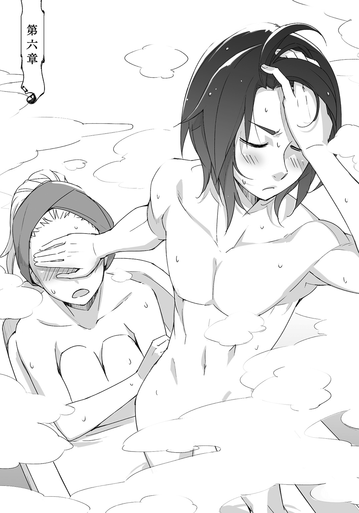
「羊の匂いがする」
「それ麻布だよ」
ふかふかのタオルに顔を押し付けて呟くリリオンに、ランタンは指摘する。
ランタンは住み家に戻ると背囊を逆さまにして買ったばかりの風呂用品をどさどさと広げた。そしてそれをすぐに使う物とそうでない物とに仕分けして整頓しているのだが、リリオンが無邪気に邪魔をしてくる。
少女はランタンの背中にべったりと身体を預けて、色とりどりの小瓶に収められた精油に手を伸ばした。
「これはお花の匂いに、これはオレンジ、これは薄荷。こっちは何かしら、甘くていい香り」
「重いんだけど」
夕飯はまだで、身体をくっつけているものだからリリオンの腹がぐるぐると唸ったのが震動として背中に伝わった。
「先にお風呂？ それともご飯？」
「それとも――」
「んー、他になあに？」
「......何だろうね。先にお風呂にしようか」
ランタンは首を傾げるリリオンを無視して、少女をベッドの上に背負い投げして転がす。すっかりと整頓された風呂用品は脇によけてあった。用途別の複数枚のタオルと石鹼、髪油。
湯に垂らす精油はどれにしようか、とランタンはぱちぱちと瞬きする少女に尋ねる。
「オレンジがいいわ、美味しそうな匂いするから」
「お腹空いたの？ でも食べてすぐお風呂入ると消化に悪いんだよね」
リリオンは身体を起こしてベッドに腰掛け、ランタンはそんな少女に水筒を渡した。
「どうして？」
「ええっと、たしか内臓を動かすための血が、皮膚の方に集まっちゃうんだったかな」
「ふうん、よくわからないわ」
「僕もだよ」
ランタンはリリオンを立ち上がらせて、少女はそのままランタンに抱きついた。汗を洗い流す前の少年の身体には、もともとの体臭が薄いとはいえそれなりの匂いがある。リリオンはそれを胸一杯に吸い込んで満足気にしていた。
「一人で入る？」
「待って、わたしもすぐ用意するから！」
ランタンが冷たく言うと、リリオンは慌てて身体を離して背囊を漁った。ランタンは丸まったその背中を見つめて、何となく後頭部で縛ってあった髪をするりと解く。
数日、濡らしたタオルで拭くことしかしていない少女の髪は脂を纏い重たそうで、ランタンはそれを手櫛で解し広げてやった。
「なにするの。もう、意地悪なんだから」
視界に掛かる髪をリリオンは搔き上げて、胸に買ったばかりの着替えを抱きしめて立ち上がった。それは前合わせのワンピースで、司書の着用していたローブに似た雰囲気があった。
だがきっと風呂上がりに着たらばそれはバスローブにしか見えないだろう。
ランタンはもちろんそんなことは口に出さずに、リリオンを引き連れて浴室へと向かった。
浴室として使っている隣の部屋は、この時間帯になるとさすがに薄暗い。星や月が出ればもう少しましなのだが、今は地平の果てにどうにか残る夕焼けの赤を天井の穴から滲ませているだけである。
「これフックにかけて。そこの壁にあるから」
「はーい」
リリオンに魔道光源を手渡した。壁にあるフックにいつもはランタンが背伸びをしてそれを引っ掛けるのだが、リリオンはいとも容易くそれを引っ掛けた。
ランタンはその間に浴槽の近くにテーブルを引き寄せて水筒やタオルを置き、ばきんと水精結晶を砕いた。溢れ出た水が浴槽に溜まり、半ば程度に水が溜まると爆発でそれを熱した。
湯の中から手を抜いて、ランタンは指先の水滴を払った。まだ何も垂らしていないが湯気には何か甘い匂いがあるような気がする。
ランタンは水面を覗き込んで、その湯気を顔に浴びた。いつもより水量が少ないせいもあり、少し温度が高くなっているようだった。
爆発能力は、どうにも匙加減が難しい。弱める方には特に。
ランタンは痺れる程熱い湯も好きだったが、リリオンはどうだろうか。
ランタンが振り返ると真っ白の裸体があった。肌寒さに肌が粟立っていて、だというのに何一つ隠していないリリオンが仁王立ちをしている。
ランタンは驚くことも恥ずかしがることもできず、ただ呆れてしまった。
「なんでもう脱いでるの？」
「ランタンも。ほら、わたし脱がせてあげるわ」
「いや、いいから」
「ねえ、もう入っていいの？」
「身体洗ってからね。自分で洗える？」
「洗えるわ！」
前に風呂に入ったときは出来なかったくせに、とランタンは肩を竦めた。
そんなランタンにリリオンは頰を膨らませながら手を伸ばす。白く細い指が襟元のボタンを外した。くっきりとした鎖骨が外気に晒されて赤く色づく。
「だからランタンはわたしが洗ってあげるからね。ランタンはわたしを洗って」
ランタンはぐいぐいと服を脱がせようとするリリオンを平気な素振りで宥めて、しかし赤く色づいた肌は寒さではなく羞恥によるものなのだろう。ランタンは気持ちを落ち着かせるように、一つ一つ丁寧にボタンを外す。
鎖骨を満たした少女の視線はついに溢れ、胸を伝い引き締まった腹筋を下っていく。
そこで一度リリオンは顔を上げて、視線が合うと無垢に微笑み、ランタンがベルトに手を掛けると視線を下げた。
「リリオン」
「なに？」
「ちょっと目を瞑って」
「どうして？」
「ちょっとでいいから」
リリオンが眼差しを閉ざした。その隙にランタンは下着から足を抜いて櫛と椅子を手にリリオンの背後へと立った。
肩甲骨の浮き出た白い背中と、瘦せていても丸い小振りな尻。
真っ裸で少女の背後に忍び寄ったランタンは、状況の背徳的な危うさにふと気が付き、慌ててリリオンの髪を一房手に取った。
それを手綱のように引っ張るとリリオンは椅子に腰を下ろした。
「きゃっ！」
可愛らしい悲鳴を上げて振り返ろうとしたリリオンの頭を鷲摑みにする。
「大人しくしててね」
そう言い聞かせると、ランタンはリリオンの髪を梳った。リリオンは気持ちよさそうに甘い声を漏らして猫背になった。背骨が皮膚を内から押し上げる。
「どうしてお風呂に入る前に、髪を梳かすの？」
「その方が綺麗に洗えるからだよ。女の子はちゃんとしないとね。よし、お湯かけるよ」
湯を一度搔き回して桶にたっぷりと掬ってリリオンに浴びせると、それだけで白銀の髪は色を深くした。魔道光源の光はやや黄味がかっていて、それに照らされたリリオンの髪は月の光沢を帯びたが、光沢が湯に洗い流されると象牙色のように映った。
ランタンは石鹼を濡らした麻布に擦りつけて泡立てた。もこもこと真っ白の泡が布を包み込んで、まるで掌サイズの羊を摑まえているようだ。
それをリリオンに渡すと、少女はわあと嬌声を上げた。
「これもいい匂いがする」
「羊の匂い？」
「ちがうわ、えっと、えっとね。泡の匂い！」
「なにそれ？ 髪洗う間に身体を洗っちゃいな」
ランタンは桶に湯を少し掬うとそれに石鹼を溶かした。石鹼湯をリリオンの髪に馴染ませて揉むように頭皮を洗う。嵐熊に切られて少し短くなった少女の髪は、しかしそれでもまだ長い。リリオンの髪を綺麗にするのは大変で、しかしランタンは小さく鼻唄を歌った。
「痒いところはない？」
「んー、おへそ」
「それは自分でどうにかしろ」
手間なのが楽しい。いや手間だなんてそんな風にすら思わなかった。
もしかしたらこれも趣味と呼べるのかもしれない。
「リリオン洗えた？」
「うん。ほら爪も、ちゃんとしたよ」
「じゃあ流すよ」
趣味がリリオンの世話だなんて、ちょっと洒落になりそうもない。
ランタンはくつくつと笑いながら、下らない考えを泡と一緒に洗い流した。
「ん、綺麗になったね」
「ありがとう。じゃあ次はランタンね。わたし洗ってあげる」
「自分で出来るからいいよ。先に入ってて」
ランタンはそう言って掛け湯をして、リリオンを椅子から立ち上がらせた。
するとリリオンは怒るでも拗ねるでもなく、はっきりと傷ついた顔をした。せっかく綺麗になった顔を暗く歪めて、わたしできるのに、と小さな声で呟いた。
「――あー、じゃあお願いしようかな。髪を洗ってもらおうかな」
「いいの？」
「うん。爪立てたら嫌だけど」
「わたし、がんばるわっ」
ぱっと明るくなった声にランタンはほっと胸を撫で下ろして、頭にざばりと湯を浴びた。
「あっもうっ、まだ髪梳かしてないのに」
「男はいいんだよ。適当で」
ランタンは椅子に座りながらそう言ったが、リリオンは少しだけ不満気だった。
けれど気を取り直したのかランタンの背後に立って気合いの入った鼻息をふんと鳴らすと、そっと髪に石鹼湯を垂らした。リリオンの指が髪を搔き分けて頭皮に触れた。爪を立てることなく、指の腹で優しく。
思わず声が漏れる。
「ああ、――気持ちいい......すごく......」
「ほんとう？」
「うん、すごい上手かも」
「えへへ、ランタンがしてくれるのも、すごく気持ちいいのよ」
リリオンの髪の洗い方は、ランタンが少女にしてやった洗い方そのものだった。項の方から頭頂に向かうように頭皮を揉み、耳の後ろまでしっかりと指を這わせる。それが済むと泡で撫でるように髪を磨いた。
ランタンは眠たくなりそうな程の気持ちよさを堪えながら、どうにか身体を洗う。
「かゆいところはない？」
「......へそ」
「わかった！」
「冗談だよ......うわっ、やめ、ひっ！」
背後から伸ばされた手が臍に向かってくる。
リリオンは脚ばかりではなく腕も長い。おまけに石鹼を纏いつるつると滑るので、前面に回り込んでくる腕を摑まえることが難しかった。リリオンは泡だらけになってランタンにしがみつき、ランタンは滑って転びそうになったリリオンを小さな背中に支えた。
「......ちゃんとしようか」
「うん。じゃあ目をつむって」
ランタンが疲れを滲ませて言うと、リリオンは遊び疲れたように頷く。
たっぷりの湯で身体を洗い流すとランタンの肌は黄金に輝いてみえる。リリオンはその美しい身体を抱きすくめた。
「ね、わたしできるでしょ？」
「うん、そうだね。ありがとう。放して、すぐに、今すぐ」
「だいじょうぶ、わたしが入れてあげるからね」
まるで幼子が人形を相手に世話を焼くようにリリオンはひょいとランタンを抱き上げた。
湯面に爪先をそっと入れてあついとリリオンは小さく呟く。
「水でうすめる？」
「......だいじょうぶ」
リリオンは意地を張るようにそのまま湯の中に身体を沈めた。湯は浴槽の半ば程までしか溜まっていないが、二人一緒に入るとそれは肩まで迫り上がった。
「ゔああ」
「んう」
身体を洗う時はさして気にもならなかったが、こうやって浸かってみると確かに熱い。皮膚がじんじんと痺れるような感覚があった。ランタンは低く喉を震わせて呻き、リリオンはより一層強くランタンの身体にしがみついた。きつく閉ざされた唇から妙な吐息が漏れた。
熱いんなら熱いって言えばいいのに。ランタンは抱かれたまま腕を伸ばし、テーブル上の水精結晶を一つ指先に引き寄せた。それを湯の中に沈めて握り砕いた。
結晶の破片が水中で数秒だけきらきらと光っていたが、それはすぐに氷のように溶けてなくなった。溢れ出た水は熱を程良く冷まし、肩までだった水嵩は表面張力が働く程になって身体を動かすと縁から零れる。
余分な水量が流れ出て、ランタンはオレンジの香りの精油を数滴垂らした。
リリオンはそれでようやく気持ちのよさそうな声を上げて、強張らせていた身体から力が抜けた。ランタンを抱きしめる拘束は緩み、だがむしろ少女の柔らかさがいっそうはっきりと感じられる。
ランタンは開き直って少女の胸に背を預けた。どうせ自分がそうしなくても、リリオンはくっつきたがる。リリオンはランタンがもたれ掛かったのと同じように、少年の背に身体を預けて肩に顎を載せる。
互いに互いを支え合ってしばらく微睡むように大人しくしていると、じっとりと全身から汗が噴き出すような感覚があった。
リリオンの顎から滴った汗がランタンの鎖骨の窪みを満たした。
「リリオン、水飲みな。くらくらする前に」
少女の吐息が熱っぽくなっている。ランタンがそう言うとリリオンはテーブルに手を伸ばして水筒を取った。唇から零れる水がランタンの背中を濡らし、その冷たさが心地良かった。
ランタンは水筒を受け取り自らも喉を潤し、少女の膝に手を掛けて立ち上がる。
肌を滝のように湯が流れ落ちて、黄金の肌には血の透けるような紅色が浮かんでいる。
ランタンは淡褐色の眼差しを掌で遮り、汗に張り付いた前髪を搔き上げた。
探索をしていない時には、探索のための用意をしている。
よく食べよく眠ったランタンの身体にはうっすらと脂肪が蓄えられていた。鍛え上げ引き締まった身体が不思議と柔らかそうで、濛々と立ち上がる湯気を纏うその姿を指の隙間から覗き見たリリオンが小さく息を吞んだ。
ランタンは水筒を戻すと手を拭いて、代わりに一枚の紙を手に取る。それを濡らさないように気をつけながら再び湯の中に身体を沈めた。そしてそうすることが当然であるように、少女のちょっと膨らんだ胸に背を預ける。
「ランタン、それって」
「うん、リリオン。読める？」
それは司書から渡された探索者名簿だった。
「わたし読めるよ！ 読んであげようか？」
「じゃあ、お願いしようかな」
けれど文字の読めないランタンは自嘲を腹の底に封じ込め、素知らぬ顔でリリオンを誘導した。少女はランタンに顔を寄せ、少年の持つ名簿に目を通した。
「いっぱいいるのね」
「そう？ 少ないと思うけど」
名簿に記されている名前は二十名程。
探索者の正確な人数をランタンは知らないが、この都市で活動している探索者だけでもその数が一〇〇〇や二〇〇〇では利かないことぐらいは知っている。
「弓使いなんて滅多に見ないし」
「それって、どうして？」
「弓の一番の利点って敵と距離があることだけど、でも迷宮だとその距離がとれないからさ」
例えば探索者の馬鹿げた腕力と、その腕力がなければ引くことのできない強弓は一〇〇〇メートル以上の長距離射撃をも可能にするが迷宮の構造は大抵が閉塞空間であり、そもそも一〇〇〇メートル以上の直線を取れるような迷宮は滅多に見ない。
そしてその半分の五〇〇メートルであっても魔物によってはものの数秒、下手をすれば一瞬で詰められる距離であり、一射外せばもちろんのこと存在に気が付かれた時点で距離の利はないと言っても過言ではない。
それに探索者の腕力ならば近接武器のほとんどが充分な威力を発揮するが、矢を射るにはどうしても腕力だけではなく技術が必要になる。ただ動かぬ的を射るだけの弓術では足りない。例えば俊敏に動き回る魔物の強固な鱗の隙間を縫い、獰猛に襲いかかってくる恐怖に打ち勝ち、そして混戦の最中に味方を射らない技術が。
即物的である探索者はいちいちそんなまどろっこしい技術を習得しようなどと思わない。
「他にもさ。矢は使い捨てで費用は嵩むし、戦闘でどれぐらい消耗するか解らないから余分に持ってかないといけないし、消費し切ったらもうお手上げ」
無論、弓がまったく役に立たないわけではない。
魔物に発見されていない場合には一方的に戦闘を進められるし、ランタンの大嫌いな飛行能力を有する魔物相手にも大いに役立つ。高位探索者にも弓使いはいるのだ。だがやはりそれは単独探索者と同様に稀な存在だった。
結局は取り回しのよい短弓や、習熟の容易な機械弓を副装として用意する探索者がせいぜいである。
「そう思ったら、確かに多いのかもね。それは」
「うん、......じゃあ読むね」
少しもたつきながら名簿を読み上げるリリオンの甘い声を聞きながら、ランタンは声に導かれるように文字を追った。耳には聞き覚えのある単語も、その綴りと結びつかない。知っている単語数が絶対的に足りていないな、とランタンは苦く目を細める。
探索者名、階位、性別と年齢、種族と髪目肌色等の容姿、それに司書の所感が一言添えられている。
「――クロフ。次は――甲種探索者、――赤色、――享楽的な傾向がある、――殺人により」
ランタンは司書の心遣いに感謝しながらも、この名簿で射手の正体が判明するなどとはこれっぽっちも考えていなかった。綴りと音が結びつかないように、名前と顔の一致する探索者などいなかった。記されている容姿情報と司書の所感からぼんやりと射手の姿を想像した。
「......どうしても探索者って、筋肉もりもりで想像しちゃうなあ」
ランタンがふとそんなことを呟くと、リリオンが名簿を読むのをぱたりと止めた。
背中に触れるリリオンの身体が強張ったように震える。
もしかしたらリリオンはこの名簿に記されている探索者全てが、自分のことを狙っていると考えたのかもしれない。
ランタンは名簿を紙飛行機にして濡れないように遠くへと飛ばした。リリオンが背を伸ばしてその行く先を見つめて、ランタンはリリオンと向かい合うように身体を移動させた。
リリオンが背筋を伸ばすと湯面から胸が露わになって、今までランタンの背に隠されていたそれに外気が触れた。
リリオンは驚いたように瞬きをして恥じらいからか、それとも遮るものを失った心許なさからかランタンの胸に顔を寄せた。少女の身体が湯の中に隠される。
「どうしたの？」
心臓の音を聞くような甘える仕草に、ランタンはリリオンの背に左腕を回した。胸元から淡褐色の視線が見上げてきて、ランタンは少女の汗を拭うように髪を搔き上げてやった。
「どうして......」
リリオンが言葉を紡ぐと、唇が肌に触れているのが感じられた。そこにある不安も。
「どうして、わたしなのかしら」
なんで、と重ねられた言葉にランタンは一瞬口を噤んだ。
出会った当初から思えば驚くほど健康になった身体が胸の中で再び細く、頼りなくなってしまったように思えた。
「さあ、なんでだろうね」
ランタンは背に回した手を腰に、髪を搔き上げた手を項に回す。沈みそうな程のリリオンの身体をしっかりと抱え直した。胸に抱く重みはたった九歳の女の子の重みでしかない。
「僕はさ、何度も襲われてるって言ったよね」
「......うん」
「今でこそ恨みを買ってるからだったり、こんな風にお風呂に入れるぐらいには稼いでるからだったりするんだけど。じゃあ一番最初はどうしてだったと思う？ まだ誰にも恨まれてなくて、お金もなくって汚かった頃」
リリオンがきょとんとランタンを見つめた。そんな頃があったの、とそう尋ねるように。
「僕が襲われた理由はね」
ランタンはふと真面目な表情を作って、当たり前のように言った。
「それは僕が魅力的だからだよ」
一番最初、自分に馬乗りになった男の顔は思い出そうとしても、それは黒く塗り潰されていて思い出せない。真っ黒く焼け焦げた顔に表情はない。嫌な臭いだけを覚えている。
ランタンは少女の腰に回していた手を身体を撫で上げるように滑らせ、濡れたその掌で顔を拭ってやった。
リリオンはされるがままにしており、ランタンは形のいい丸い額を指で擽った。
「リリオンは綺麗な顔してるよね」
「え？」
「それに笑うと可愛いから、リリオンのこと掠いたくなったのかも、テスさんも言ってたし」
「わわわ、なっ、なに急に!?」
「ほら笑ってみせてよ」
「......やだ」
さらりと言ったランタンにリリオンは慌てて視線を逸らした。
そしてランタンの胸に額をぐりぐりと押し付けて顔を隠し、茹だったように耳も首も、背中まで真っ赤になっていた。
そんなリリオンの様子にランタンは表情を崩して、してやったりと笑う。
リリオンはランタンの鎖骨を甘く嚙んだ。そして拗ねた視線を向ける。
「うー......、でも、それならランタンの方が狙われちゃうんじゃないかしら？」
「どうして？」
「だってランタンは可愛いし、小っちゃくて持って帰りやすそうだもの」
拗ねた視線をさっと細め、リリオンは胸の中でころころと笑った。それにいい匂いもする、とまったく同じオレンジの香りを漂わせながら言った。
「小っちゃくないよ」
「ランタンが捕まったときは、わたしが助けてあげるからね」
「捕まらないって、小さくないから」
「あら、どうかしら？」
リリオンはぱっと身体を入れ替えてランタンを抱きすくめて立ち上がろうとした。
「ほら――、あ、あれ？」
立ち上がろうとしたリリオンはびくともしないランタンに目を丸くした。ランタンは片手で浴槽の縁を摑んでおり、その指先が溶接されたようにランタンの身体を浴槽内に固定していた。手の甲に緑の血管が浮き出ていて、前腕には筋肉の筋がうっすらと浮かび上がっている。
「だれが僕を捕まえるって？ ふふふ、どれだけの人数を返り討ちにしたと思ってるのさ」
リリオンはランタンの手を剝がそうと隙間に指をねじこもうとする。だが隙間なんてものはどこにもなくてリリオンは浴槽をかりかりと引っ搔いただけだった。
「取れない......」
伊達に来る日も来る日も迷宮に潜り続けているわけではないのだ。戦鎚を振り回し、魔物を殺し、その青い血に染まったわけではないのだ。
リリオンはいい匂いがすると言ってくれるが、ランタンはたまに生臭い死が香る気がする。
「リリオン」
「ううう、なあに？」
リリオンはいよいよ両手を使い指を外そうとし、ランタンの呼びかけにも上の空だった。先程までの不安をすっかり忘れた必死な姿にランタンは頰を緩め、その指先の力も緩めた。
ふいに外れた指先にリリオンが体勢を崩し、ランタンはその手でリリオンを摑んだ。
「大丈夫」
少女を引き寄せ、ランタンは掌を合わせるようにして力強く指を絡める。
「こうしてれば離れることはないよ」
来る日も来る日も迷宮を探索し続けたことに理由なんてない。
だがこうしてリリオンを安心させられるのならば、無駄なことではなかったのだろうとランタンは思った。
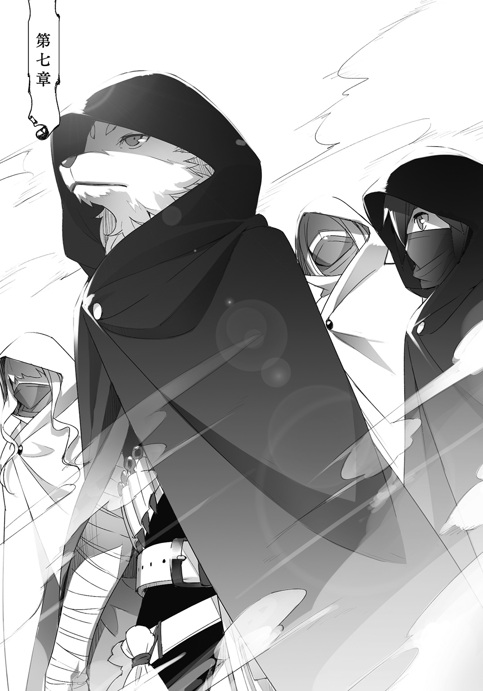
探索者ギルドは大きな建造物で、ランタンの知らない場所は多くあった。
探索受付と買取施設と医務局とギルド銀行と売店。その五カ所がランタンにとっての探索者ギルドの全てだった。探検しようと思ったこともあったが迷子になったので一度で止めた。
探索者ギルドの外観は正に戦闘要塞で、その内部も実は戦闘要塞である。巧妙に擬態されているが有事の際に敵の進行を遮断、分断、遅延、混乱させるように入り組んでいるのだ。あるいは内部蜂起を起こした探索者を封殺するためかもしれなかった。
探索者ギルドは広い。しかし探索者が立ち入りを許可されている区画はその半分に満たない。開かずの扉は幾つもあるし、武装職員が立ち入り規制する通路も幾つもある。それに一定階級以下ならばギルド職員であっても進入を禁じられている区画は探索者が横目に見ることすら許されない。
そんな不可侵区画が多く存在する探索者ギルドには誰でも自由に出入りできるのに、しかし誰にも使われることのない区画も存在する。
過去幾度もの増改築によって記憶の片隅に追いやられ、そしてついに誰からも忘れられた通路や部屋だ。
そういった部屋は幸運にもそれを見つけた人間がひっそりと私的に利用している。
「人払いの結界......？」
そこは静かな廊下だった。
「いえ、ただ訪れる人間が少ないだけです」
呟いたランタンに全身鎧の武装職員が律儀に答えた。
特徴のない鍔付き兜の内側に籠もる声は、声を潜めながらもはきはきとしている。ランタンの声よりも明るいソプラノは第二次性徴前の少年を思わせた。だが身につける鎧を構成するメリハリのある曲線が、その中身が女性であることを告げている。
この武装職員はテスの部下だと名乗った。
ランタンたちはテスや司書に会うために探索者ギルドを訪れたのだが、そのことを予見したかのように話しかけられた時は驚いてしまった。
武装職員に声を掛けられたのは、二人と会う約束など交わしていなかったから取り敢えずあの地下資料室を訪れようと考えていた矢先のことだった。
それは急なことで、叩けば埃の出るランタンは絶対に怒られるのだと疑わなかったし、リリオンはそんなランタンの苦々しい顔に不安そうな顔つきになった。
ついてきてください、と有無を言わさぬ口調もその勘違いに拍車をかけて、誤解が解けたのはつい先程のことだった。
「では私はここで。この角の先にある一番奥の部屋です」
「ありがとうございます」
「お気になさらず、人が来ないうちにお早めに」
ランタンと武装職員は頷き合って、ごく自然に二手に分かれた。
武装職員はそのまま真っ直ぐに、ランタンは廊下を一つ曲がる。武装職員が同僚に話し掛けた声が微かに聞こえた。ランタンたちから注意を逸らすための世間話をしているようだ。
入った廊下は輪をかけて静かだった。閉ざされた扉が幾つかあって、床は影が染みついたように色が暗い。足音の反響が遠くから聞こえるようだった。
武装職員はテスがどのような用事で二人を呼んだのかを語らなかった。もしかしたら知らされていなかったのかもしれないし、二人が従順にも黙ってついてきたからかもしれなかった。
だが二人とも呼ばれた理由を何となく察していた。
繫いだリリオンの手が冷たく、深く静かな呼吸の音色がいやに大きく聞こえた。
ランタンは繫いだ手を強く握ってやった。そして突き当たり扉の前でそれを離す。離しても、手の感触や温かさは残っているだろうかと考えながら。
扉にノックを二回。テスの声が返ってきて、ランタンはリリオンを振り返る。
「さ、行こうか」
「うん」
頷いたリリオンの笑みが硬く、反面にランタンは優しく微笑んで扉を開いた。
「失礼します」
「やあ、いらっしゃい。呼びつけて悪かったね。失礼はなかったかい？」
テスが気さくに声を掛けて片手を上げた。司書は部屋の隅にある椅子に腰掛けていて、優雅に脚を組み替えてヴェールごしの視線を寄越した。そしてその視線をふっと壁際に向けて、ランタンとリリオンは誘導されるようにそちらに視線を向けた。
壁際には緑の髪の黄色い瞳をした女がいた。傭兵探索者のルー・ルゥだった。
リリオンが反射的に左手を背負った大剣の柄に伸ばす。ランタンは警戒心を露わにしたが少女を制するように右手を真横に突きだした。
予想はしていたことだった。だがテスや司書に視線で理由を尋ねた。
テスは困ったような苦笑を漏らして、司書は面倒くさそうに立ち上がって手を叩いた。
「取り敢えず落ち着け。ここで暴れたら蹴り出すぞ。ったく、ただでさえ狭いんだから」
部屋は狭いという程ではなかったが、地下資料室と比較すれば兎小屋である。
部屋にはテーブルがあり、それを挟むようにソファがあって、入って右手と真正面の壁は本棚があり、左手にはティーセットや刀剣類が同じ用途の道具であるように並んでいる。
居心地は良さそうだが、五人の人間には手狭である。
ルーは右手の本棚を背にしており、ランタンとリリオンの二人を黄色い眼差しに捉えるとまず眼を伏せた。そしてゆっくりと深々と頭を下げる。まるで断頭台に首を預けるように。
ランタンもリリオンもふっと緊張を緩めた。
その気配を察したのかルーが怖々と面を上げた。ぱくぱくと唇が動き、音にならない空気の掠れが謝罪を告げているのだと気が付かせる。
「ええっと、よくわかりませんけど。......取り敢えずお話を聞かせていただけますか？ お茶菓子もありますので」
ランタンがそんなことを言うと謝意に染まったルーの瞳がぽかんとしてあどけなさを帯び、司書のヴェールが吹き出した息に大きく揺れた。
「さすがはランタン、気が利くじゃないか。では私が紅茶を淹れてやろう」
テスは大きく笑って、慣れた手つきで紅茶を淹れ始めた。
ランタンがリリオンを促してソファに座らせて司書やルーにも、どうぞというように小首を傾げた。司書はどっかと腰掛け脚を組み、ルーは遠慮がちに腰を下ろした。
ルーの両手首と足首に繫がれていない枷が嵌められている。それは奴隷首輪のように意志を縛るものなのだろうと予想された。
「テスさん、お手伝いは――」
「大丈夫だよ。しかし何故、くふ、お茶菓子を持ってるんだい？」
「はい、先日ご相談に乗っていただいたお礼にと」
ランタンはテスに一声かけてソファに座り、少し緊張している様子のリリオンに触れた。
リリオンは恥じらうような楚々とした仕草で、真向かいの司書に菓子の包みを差し出す。
「ししょさま、この前はありがとうございました」
「ああ、うん、ありがとう、......クッキーか」
「もしかしてお嫌いでしたか？」
いまいち歯切れの悪い司書にランタンが尋ねると、リリオンはしゅんとした様子で胸の前でいじいじと指をこねくり回した。長い睫毛を伏せてその隙間からちらりと司書を窺った。
「そうなんですか、ししょさま」
「いや、そうではないが。探索者から礼にクッキーなど」
「くふふ、いやあ嬉しいものだな。っと前を失礼」
テスが紅茶を用意し、司書の組んだ脚を跨いでソファの真ん中に腰を落ち着けた。司書は恥ずかしがってそっぽを向くように、肘掛けに身体を預けてテスから身を離した。
「探索者からの礼といったら、お礼参りというのが相場だからな。うむ、美味い」
リリオンはほっと胸を撫で下ろしたが、一向に手を出さない司書をおずおずと見つめる。
「ししょさまは、食べないんですか？」
「......私はこれだからな」
司書は自らの口元を覆うヴェールを指差して答える。テーブルの上にある紅茶は四つで、司書の分は用意されていなかった。
「人前で飲食はあまりな。あとでありがたく頂かせてもらうよ。この封蠟は教会のあれだろ？ 修道女が焼いているっていう。なかなかいい趣味をしているじゃないか」
「本当ですか、ししょさま？」
「本当だよ」
「うれしいです、ししょさま」
クッキーはリリオンが選んだ物だった。
生姜を練り込んだそのクッキーは口当たりがさっぱりとして甘みが抑えられている。後味にほんの僅かぴりっとした生姜の風味が感じられる大人の味のクッキーを選んだのは、きっと大人の女性への憧れからなのだろう。
ししょさまししょさまと舌足らずに何度も呼ばれた司書の戸惑いが、ヴェールを透かして伝わってきた。ルーはリリオンを穏やかに見つめて言葉を発せず、テスもそんな司書を一瞥して、だが地下資料室の時のようにからかうことはなかった。咳払いを一つ。
「さてランタン、君を襲ったのはこの女で間違いないか？」
「見た限りでは、そう思えます」
「ではルーよ、この二人と交戦した記憶はあるか？」
テスが尋ねるとルーは二人の顔をじっと見つめて、それからゆっくりと首を横に振った。
先日会った時もそうだったようにルーはやはり記憶を失っているようだった。もどかしげな吐息を漏らして、黄色の瞳が不安に翳った。
するとリリオンがランタンを揺すり、そして視線をルーの手に向けた。
「ああ、そうだ。ルーさん、手を見せてください」
ルーは両手を揃えて掌を差し出した。司書やテスもその掌を覗き込む。
「ああ、まだ残ってた。これ僕の歯形なんですけど、証拠になりませんか？」
ルーの掌には未だに治癒しきらぬ、小さな口に食い千切られた痕跡が残っていた。
「嚙んだ？」
司書が呆然としたように呟く。ヴェールごしの視線が柔らかそうなランタンの唇に注がれて、その奥にある小さく白い、真珠を削りだしたような歯に向けられた。
ランタンは脅かすようにちらりと赤い舌で歯をなぞった。
「ええ、がぶっと。でも、もう一度囓るわけにはいきませんし」
どうしましょうか、と牙を剝くように笑うとリリオンが袖を捲り上げて血管の透ける真っ白な腕をランタンに差し出した。
「わたしのこと、嚙んでもいいよ」
そんなことを言ったリリオンは本気の目をしていたのでランタンは頭を抱えた。
◇◇◇
ランタンがリリオンの腕を嚙むことはなかったし、歯形を取られることもなかった。
ただ本当にルー・ルゥの記憶が失われていることだけが、はっきりと確認された。
ルーに嵌められた枷は行動を縛るものではなく、言葉の真偽を測るものらしい。司書は多くを語らなかったが感情の揺らぎか、あるいは意識そのものを観測しているようだった。
「薬物による記憶の改竄、行動の操作。それともう一つ――」
テスがルーの喉を指差した。
「声帯機能の喪失も確認された。外科的に取り除いたわけではなく、現在のこれも薬物によってだ。テスが呼び出しを公布した後に処置されたようだ」
「つまり、僕らを襲ったのはルーさんの意志ではない、と」
「端的に言うとそうだな」
ランタンが確認するとテスは頷いた。
しかし、だから許してやって欲しい、などとテスは続けなかったし、ルーもそれを望まなかった。変な人だという印象が僅かに薄れる。
探索者にしては珍しいルーの真摯な態度は好ましかった。責任を転嫁して当然の状況だったが瞳には深い後悔があり、ランタンが気遣わしげな視線を向けると首を横に振った。
「もうしわけ、ありませ、ん。不覚を......」
掠れる声でルーはそう呟いた。不覚という単語は喉から絞り出したようだ。そこにある響きは不覚を取った己への怒り。ルーはもどかしそうに意志を発しない喉に触れた。
「ランタン」
リリオンが黙っているランタンの手に触れた。
「かいざんってよくわからないけど、......ルーさんはきっとわたしと同じだったと思うの」
リリオンはそう呟いて、ルーと同じように自分の首に触れた。
リリオンはかつてそこに巻かれた奴隷首輪の効力によりランタンの前に立ちはだかった。
自由意志を奪われて、無理やりに従わされていた。
その時のことを思い出したのか、リリオンの淡褐色の瞳がルーのことを見た。
自分と重ね合わせているのかもしれない。ランタンは一瞬そう思ったが、リリオンの瞳には憐憫も同情もなかった。そこにあるのは理解しようとする優しさだけだった。命令を強制させられることの苦しみを抱くことすら許されなかった、その気持ちを。
「だから、ランタン......ルーさんのこと許してあげて欲しい」
重ねられた手が相変わらず冷たい。
ランタンは大きく溜め息を吐き出して、リリオンはびくっと少年の顔を見た。
「そんな風に言われると、僕が狭量みたいだ。あーあ、そんな風に思われてたんだ」
ランタンは悪戯な笑みをリリオンに向けて、拗ねたように呟く。そして穏やかな視線をルーに向ける。大人びた焦茶色の瞳に映されたルーは戸惑っているようだった。
「襲ったことはお気になさらず、とは言いません。せっかく色々思えるようになったみたいですし、気が済むまで気にしてください。......ですが、まあ大変でしたね、お互い」
ランタンは微笑む。だが笑みの端に好戦的な気配が抑えきれない。
ルーに流れる探索者の血は、その笑みを受けてどうにも滾ったようだった。閉ざした唇の下で震える程に歯を食いしばっているのがわかった。
「探索者に、――いいえ、僕らに喧嘩を売ったことをきっちりと後悔させてやりたいのですが、お手伝いをお願いできますか？」
ランタンとルーは執念深い探索者らしい獰猛な笑みを浮かべて互いに笑いあった。
探索者は執念深いが、同時にさっぱりとした気質も持ち合わせていた。探索中は怒りも哀しみも、さっさと忘れて気持ちを切り換えなければならないことが多い。
一度は殺し合いをした仲であるが殺し合いは探索者の日常に過ぎない。もっともどちらかが生き残って和解するともなると珍しいことだったが、今は矛先を向ける先が別にある。
どちらともなく手を差し伸べてがっちりと握手をして、ルーはなかなかそれを手放さなかった。蛙人族特有の濡れたように冷たいぺたぺたとした肌触りはやはり不思議な感触だ。
ランタンが困っているとリリオンがルーの手をぺちんと叩いて、頰を膨らませて少年の小さな手を自らの物のように両手に包んだ。リリオンの手がはっきりと温かくなっている。
リリオンに睨まれたルーは少しだけ名残惜しげに、だが笑いながら二人を見つめた。
「それで今日ここに呼ばれた理由は、ルーさんと仲直りをするだけではないですよね？」
「ああ、もちろんそうだ。ルーの協力により敵情報が判明した」
「じゃあ、今から殺りに行きますか？」
ランタンは名案だとでも言うように手を打ち鳴らして朗らかに宣言して、司書から盛大な溜め息をもらった。
「くふふ、それはなかなか魅力的な提案だな。だがまあ聞いてからでも遅くはないだろう。探索者たる者、情報収集を疎かにしていけない。そうだろう？」
「ええ、そうですね。失礼しました」
「いやなに、男の子だものな。リリオンのことを思えば君の気持ちもわからないではない」
含み笑いにそう言われてランタンは恥ずかしさに唇を嚙んだ。思いかげず呟いてしまった物騒な言葉は、正にテスの指摘の通りだったのだろう。
温かくなったリリオンの手が、ランタンは嬉しかったのだ。
横目に見るとリリオンが、ランタンとまったく同じに唇を嚙んで恥ずかしげにしていた。
「今回の件はそれなりに大事だ。念には念を入れようじゃないか、不安が綺麗さっぱりなくなるように、徹底的に潰すために」
テスがそう告げると司書がランタンとリリオンに資料を寄越した。
「まずは射手。エイン・バラクロフという乙種探索者だ。顔に見覚えは？」
資料の一枚目にはバラクロフの人相書きがあった。
後ろに撫でつけた白金の髪に狭い額。彫りが深くて、鼻筋の通った鷲鼻と厚い唇が男を傲慢に見せている。ランタンはバラクロフの精密な射撃から神経質そうな優男を想像していたのだが、なかなか野性味のある二枚目だった。唇から頰にかけて凄味のある切り傷があった。
「さあ、ちょっと記憶がないです。でも頂戴した名簿に名前はありましたよね、たしか」
「ああ、バラクロフはここ三年程迷宮から離れて、副業に精を出している。副業は違法薬物の密売。ルーに売りつけていた張本人だ。欠乏症の症状を和らげるためとはいえ非正規売買は余り感心しないな。随分と安く扱っていたようだが、安物買いの何とやらだ」
テスが悪気もなくそう言って、ルーが肩を落として項垂れた。
「まあ医務局で処方しても魔精薬は高いからな......探索者にしてみれば生き死にの問題だから仕方あるまいよ」
司書が独り言のように呟いてルーを慰めた。
「だが混ぜ物ありありの粗悪品だとして、魔精薬の密造など個人でできるものではない。中には絵の具を溶かした色水を魔精薬だと偽って売りつける者もいるが、少なくともルーの所持していた薬はある程度欠乏症を抑えることのできる品質は保っていた」
「大がかりな組織が絡んでいると、そういうことですか？」
「うむ、バラクロフはカルレロ・ファミリーという犯罪組織に身を寄せている」
司書がページを捲ったので、ランタンもリリオンもページを捲った。ランタンは資料の文章を紐解くことができず、リリオンは話を理解しようと努力していたが九歳の女の子には少し難しいようだった。
「牛人族だわ」
資料に描かれた人相にリリオンが呟いた。
顎の四角い赤ら顔に、黒く横広の牛鼻が目を引いた。濃い褐色の短い髪に覆われた頭には黒い角が二本迫り出している。四十絡みの老けた顔をしていたが、人相の横に掛かれた年齢は三一歳となっていた。元甲種探索者。ランタンよりも階級が上の高位探索者である。
ランタンは思わずふむと鼻を鳴らした。
「記してある情報は探索者ギルド追放時のものだ」
フィデル・カルレロ。
身長は角を含めずともリリオンより巨大な二メートルに、体重はそれに見合った一六〇キロ。亜人族の場合は人族と違って肉体にも特徴があるので全身が描かれている。鎧のような筋肉を纏った巨体は燃えるような赤銅色で、下半身は太股の半ばから髪と同じ褐色の毛に覆われてその先端は蹄だった。全身図の横にはその巨体に相応しい巨大な三日月斧が描かれている。
「これが麻薬密売の元締めですか？」
意外な姿にランタンが思わず資料から視線を上げて尋ねた。
カルレロには確かに一組織の親分のような貫禄があったが、どこからどう見ても暴力にものを言わせる武闘派の雰囲気しかなかった。麻薬密売人の元締めにはとても見えない。
「カルレロ・ファミリーの元々のしのぎは傭兵稼業だ」
「傭兵、ですか？」
ランタンもリリオンもつい思わず傭兵探索者のルーを見てしまって、声を出すことのできない彼女は困ったように微笑むばかりだった。
「護衛業と言った方が適当かもしれないな。ランタンはよく襲われるから知っているだろうが、こいつらの手口は簡単だ。暴力を背景に金を巻き上げる。いわゆる恐喝や強盗だな。そしてカルレロ・ファミリーの仕事もそれに類するもの。暴力を背景とした保護だ。悪い奴から守ってやるから金を寄越せとね。もっとも毒を以て毒を制すとはいかない、保護を断れば彼らは暴力を以て金品を要求する。まあ屑の集まりだな」
テスは苛立たしげに資料を叩いた。
「カルレロ・ファミリーについて洗い直したところ構成員五十余名の内、バラクロフを含めた現役探索者の存在が七名、カルレロを含めた元探索者が四名確認された。もっとも現役の大半は名ばかりな探索者だが、置物にするにはそれで充分な効果が見込めるわけだ」
悪党が箔を付けるために探索者登録をすることは珍しい話ではない。探索者証を嵌めたからといって探索者の強さを得られるわけではないが、個人の強弱は外見からでは判別できない。それなりの強面がこれ見よがしに探索者証を装備していれば、それなりの示威効果がある。
もっとも探索者ギルドからしてみればたまったものではないのだろうが。
「傭兵稼業ですか。でもそれがどうして薬物売買に？ ルーさんへのやり口を見ると相当に手慣れているように思えますが」
「バラクロフが身を寄せてから鞍替え、いや事業拡大したようだ。違法薬物と、女衒に」
ぴんと張り詰めた空気を出したのはランタンで、それを打ち破ったのはリリオンだった。
少女は少年の腕を揺すって無邪気に尋ねる。
「ねえねえ、ランタン。ぜげんって、なに？」
「知らな――」
反射的に知らなくてよろしいとランタンは口にしようとして、しかし口籠もった。
リリオンにかかわることを、当人から取り上げるということの残酷さをふと思う。ランタンはルーの顔を見て、それからテスや司書の顔を困ったように見つめた。
どうやって告げようかと悩むように。
結局ランタンは、ちょっと耳の先を赤くした。
「――いこともないか。リリオンみたいな可愛い女の子をさらって、売ったりする仕事だよ」
二人の時はいい。でもこんなこと人前で言うのは恥ずかしい。
ランタンは照れ隠しに猫背になって俯き、リリオンは急に背筋を伸ばして視線を彷徨わせた。
テスが堪えきれないように笑っている。
「くふ、――さて奴らのやり口は古典的なものだ。元々の顧客に無理やりに薬物を売りつけ、抜け出せなくなったところで値をつり上げる。稼げるうちはカモになるし、いよいよとなったら男は使い捨ての兵隊で、女の方はランタンの言う通りさ。それに元探索者の繫がりから探索者には安くそれらを融通したようだな」
「――やっぱり今から殺りにいきましょう」
「ランタン......そんなに私を誘惑するんじゃない。こう見えて欲望には素直な質なんだ」
テスは色っぽく目を細めて、ちろりと唇を舐めた。そんなテスの太股を司書が抓った。
「馬鹿を言ってないで話を続けるぞ。カルレロ・ファミリーの方向転換は組織内部で急激な意識の転換があったというよりは、外部から別の意思が流れ込んできたとみるのが妥当だろう。しかしそれがバラクロフによってもたらされたものかは不明だ。バラクロフが持ち込んだのか、持ち込まされたのか、それともまったく無関係の存在があるのか」
司書は脚を組み替える。
「カルレロ・ファミリーに薬物を流しているのは黒い卵という犯罪結社だ。名前ぐらいは聞いたことがあるだろう？」
「いいえ」
「変な名前ね」
「......余程に育ちがいいのか」
ランタンとリリオンが揃いも揃ってきょとんとすると、司書ばかりではなくテスもルーも驚きを露わにした。黒い卵という組織の悪名はとても有名らしい。
「この国で行われる犯罪の大半にかかわっていると言われるような組織だ。国の深く、貴族とも繫がりがある悪党どもの大元締めだ」
「つまり、そこを潰すということですか？」
「それができたら苦労はしない。ランタン、きみの最終的な目的は何だ」
「......襲ってきた人たちを、――いや、リリオンに降りかかる火の粉を払うことです」
テスも司書も満足気に頷き、ルーが羨むようにリリオンを見た。
「リリオンはカルレロ・ファミリーによって狙われている。理由は不明」
「それはリリオンが可愛いからでしょう」
「その可能性は大いにあるね。だがランタン、君も狙われている。バラクロフはどうやら君にご執心のようだ」
「それはランタンが可愛いからね、きっと」
「――リリオンの言うことは無視するとして、その根拠を教えていただけますか？ 僕を狙ったのはただ邪魔だったからだけでは？」
「これまでの行動と、探索者証からの情報により。詳しくは服務規程により教えられないが、司書様が調べてくださったのだから、まず間違いない」
「ししょさま、すごい！」
リリオンが胸で祈るように手を組んでうっとりと呟いた。司書は面倒そうに無視する。
「それで心当たりは？」
「まったくないです」
ランタンはバラクロフの人相書きを再び見つめて、やはり記憶になくて小首を傾げる。
「まあ君は目立つからな、それも仕方あるまい。ともあれ私たちが狙うのはバラクロフを含むカルレロ・ファミリーだ。別の黒幕が出てこないと決まったわけではないが、これを捕らえることにより状況を詳しく知ることができる」
ちらとテスが意味深な視線を寄越した。
どうして、と湯船に浸かりながら呟いたリリオンが思い出された。
どうしてリリオンでなくてはいけないのか。
「幹部連中を可能な限り生け捕りにしたいが構成員が邪魔だ。そこでランタンに頼みがある」
「頼みだなんて、そんな。僕らが助けていただいているんですからなんでもしますよ。必要なら首に鈴巻いて、ラッパを吹きながら練り歩きましょうか？」
ランタンは悪戯に笑いながら、けれどはっきりと本気でそう言った。
「くふっ、察しがいいな。君には目立ってもらいたい」
「囮ですね」
「ああ、最初の襲撃は探索直後に行われた。性急で粗雑なやり口はランタンへの恨みの深さと、恐れだ。状況を再現すればおそらく再び襲撃はある。こちらでも襲撃を誘うような噂を広めさせてもらう」
「酷い噂ですか？」
「よくある噂さ。ギルド法を破った罰として、高難易度の迷宮送りにされたってね。それにルーも同行させる」
ルーがお願いしますと声もなく口を動かし頭を下げた。
「迷惑をかけた償いと、噂に信憑性を持たせるためでもある。喧嘩両成敗さ。それに迷宮に降りたらば攻略をせねば気が済まないのだろう？ 探索者という生き物は」
「否定はしません」
「だが、ただの囮で本気の怪我をしてしまってはいけないからね。ルーはなかなかやる、連れて行けば役に立つだろう」
「ええ、知っています。殺しきれませんでしたから」
ランタンの言葉にルーは胸に手を当てて照れたように喜んだ。
「では決定だな。さっそくでわるいが早々に攻略してもらいたい迷宮ができた」
できた、と言う言い回しにランタンは眉をぴくりと動かした。
「ある探索班が攻略に失敗してな。つい先日、探索権が返されたんだ」
探索権の自主返納とは、つまり探索に失敗したが未帰還にはならなかったということだ。
迷宮攻略に失敗し、全員が未帰還になった場合には引き上げ屋からギルドへ報告が行き、その後に探索権が強制返納となる。探索権が返納された探索途中の迷宮は、大地図に再掲載され、再び探索の権利が売りに出される。
「最下層まで探索済み、終端の魔物も確認済みだ」
探索権を自主返納する場合には、同時に迷宮の情報もギルドへ報告しなければならない。
攻略途中で投げ出された迷宮はある程度魔物が排除され、そこに至るまでの地形情報もある。こうやって終端の魔物の情報まであることは稀ではあるが、それでも迷宮の情報が充実していることは探索者にとってはありがたいことだった。
「最下層からの撤退ですか。それはそれですごいですね」
例えばあの嵐熊に背を向けることができるかと言われれば、ランタンにはなかなか恐ろしくてそんなことはできない。
「ああ、見事なものだ。全員帰還。六名中、死亡二、重傷一だがね」
「それは、立派ですね」
ランタンは言葉に詰まって、吐き出すように呟いた。リリオンはぎゅっとランタンの腕を摑み、ルーは黙禱するように目蓋を閉じた。
死亡した探索者は荷物になる。亡骸をそのまま迷宮に弔うことは珍しい話ではない。多くの場合ではそうしなければ生き残った探索者を危険に晒すことになるからだ。
だが苦楽を、まさに生死をともにした戦友をたとえ亡骸であっても地上に連れて帰りたいと思うのは人として当然のことで、連れて帰るにしろ諦めるにしろ、その決断はどちらを選択しても間違いではない。
「でも、そんな迷宮ならもう借りられているんじゃないですか？」
再掲載された迷宮は縁起が悪いと見向きもしない探索者もいるが、大抵はすぐに予約が入るほど探索者には好まれる。
それは迷宮に対する情報が充実しているからで、また失敗した探索者よりも実力が上だと喧伝するためだとか、亡くなった探索者への弔いだという考えもある。
「まだ再掲載されてないからな」
「......それって教えちゃダメなやつですよね」
「事情が事情だからな、これぐらいは平気だろう」
黙っていればな、とテスは肩を竦めた。司書は呆れているのか、それとも共犯であると諦めているのか何も言わない。
「お手数をお掛けします。それでその迷宮というのは――」
「これだ」
テスは一枚の資料を二人の前に差し出した。
◇◇◇
迷宮に潜った探索者は、まず初めにその迷宮がどれ程の脅威であるかを調査する。
何も知らない新人と、たまたま難易度評価が正しかった探索が連続した幸運な探索者を除いた、ほぼ全ての探索者がギルドから提示された難易度評価など毛ほども信用していない。
なので初回の探索は臆病なほどに周囲を警戒し、充分すぎるほどの余裕を取り、少しの危険であっても可能な限りの情報収集と精査を行う。場合によっては地上に引き返すこともある。
生きて帰ること。それは初回探索に限らずではあるが、特に攻略ではなく情報収集こそが目的である初回探索では、生きて無事に情報を持ち帰ることが最も重要な目的だった。
初回探索は疲れる。だがそれは精神的な疲労が主であり、肉体的な疲労は程々だ。
それは探索者である射手、――バラクロフも承知していることだろう。
初回探索から戻った程度の疲労状態では、襲撃を誘い出す餌にするには少し弱い。そのためにテスは再掲載迷宮を融通し、またギルド法違反による罰という体裁を偽装した。
丙種探索者六名から成る探索班を死者二名、重傷者一名を出し、撤退及び探索権の自主返納に追い込んだ迷宮は迷宮特区の〇二六番地にある。
低難易度砂漠小迷宮。
それがこの迷宮に下された当初の評価であり、再掲載された場合にも変わることのない評価だった。
迷宮は触れれば崩れそうな駱駝色の砂岩で壁を構成し、天井は触れずとも崩れそうで実際に雨漏りのような流砂を降らせている。試しにそこに目がけて石ころを投げつけると、ごっそりと天井が崩れて危うく生き埋めになるところだった。
地面は風紋の刻まれた波打つ砂地で、それは先を急ぐ探索者たちの足取りを重くする。
迷宮の難易度は地形や気候の険しさだけではなく、出現する魔物によっても変動する。魔物は迷宮の底に近付くにつれてその脅威を増す。だが探索者ギルド先遣偵察隊は一番最初に出現する魔物の強さから迷宮の難易度を推し量らなければならないので、実際の難易度との齟齬の原因となる。
この迷宮の魔物は前任者たちによって殲滅されていたが、彼らの持ち帰った情報の中にはもちろん魔物の情報を含んでいて、再出現の可能性もあるのでランタンも目を通している。
主立った魔物は大鼠の亜種である砂鼠や、砂中を泳ぎ足元から襲いかかってくる魚形の魔物ばかり。上層から中層、下層へと下っていくと魚形の魔物のサイズが小型から中型へと変わり、最後の最後に硬質な外骨格と尾に致死性の毒を有する大蠍の魔物が砂魚を伴って出現したようだが、最低等級の丙種探索者であってもそれほどの脅威にはならなかった。
前任の探索班は個々の実力は丙種なりではあるが組織立った戦闘が優れていたようだ。
だがランタン一人を負かせるほどの実力はない。
再出現があろうとも魔物は脅威にならず、地形の険しさで特筆する点は砂地の不安定さと頭上と足元に生み出される流砂の二つだけで、むしろ厄介なのは地形よりも気候である。立っているだけで汗の噴き出す灼熱の高温と、細かな粒子を巻き上げる向かい風がもっとも探索を困難にするものだ。
けれどそれも探索難易度を押し上げる要素ではなかった。
だが探索者間に広めた噂では、この迷宮は高難易度寄りの中難易度で、前任の探索班はそれなりの実力を有していたということになっている。
ギルド法に違反したランタンたちは、そんな迷宮を少人数で攻略しなければならない。そういった噂が探索者間で伝染病のように囁かれている。
四人の探索者たちはまったく見当もつかぬどこかから差し込む陽射しを遮るようにフードを被り、砂を嚙まないように口元にスカーフを巻き付けていた。
「まるでししょさまみたいね」
熱さに項垂れていたリリオンが気を紛らわせるようにそんなことを呟いた。
「......そうだねえ」
ランタンはスカーフの下でもごもごと頷き、視界に揺れる犬の尻尾からリリオンの顔へと視線を移した。目元だけが露わになったリリオンからはいつもよりも幼さを強く感じる。
それは淡褐色の瞳に宿る隠しきれない無垢な輝きと、少しの戸惑いや不安、暑気疲れが浮かんでいるからだろう。
迷宮を探索する探索者はランタンとリリオン、すっかり声を取り戻した傭兵探索者のルー・ルゥ。そしてギルド法違反者たちの行動を監視するために同行するジャック・マーカムの四名であった。
ジャックはテスの弟だった。ギルド職員の姉を持つがごく普通の乙種探索者であり、本来ならば違反者の監視をするような立場ではないし、しなければならない謂われもない。
そもそもランタンたちのギルド法違反はあくまでもテスの流した噂でしかなく、実際のランタンやリリオンの経歴には傷の一つもついていない。実際には罰せられていないのだからギルド職員が同行することはなく、ジャックは噂に真実味を持たせるためにテスに頼まれ、この灼熱の迷宮を行くこととなった被害者とも言えた。
ランタンは巻き込んでしまった事への申し訳なさを感じていたし、元来の人見知りさや同性の探索者を苦手にしている事実もあって内心ジャックのことを恐れもしていた。それがまた申し訳なさに拍車を掛け、しかしリリオンの手前、表面上は普通にしていた。
ジャックの尻尾はさらさらとした雰囲気のテスの尻尾とは違い、狐の尻尾のようにふわふわとしていて柔らかそうだった。ふわふわしているのは尻尾ばかりではない。血の濃い犬人族であるジャックは全身に毛皮を纏い、大理石模様のそれは首回りが特に豊かで灼熱の砂漠迷宮には辛そうだった。
そのためかジャックはむっつりと黙り込んで黙々と歩いている。
さらさらとふわふわの違いはあるが、歩く後ろ姿はよく似ていた。尻尾が左右に揺れていて、背筋がぴんと伸びている。身体付きはテスとそっくりでいかにも俊敏そうな細く絞り込まれた肉体を革の軽鎧に包んでいる。ただ姉弟の性差が頼もしそうな広い背中に現れていた。
「――ジャックさん」
「なんだ？」
その背中に意を決して声を掛けたが、素っ気ない返答にランタンは一瞬黙った。けれどジャックはランタンの沈黙を気にした様子もなく待っている。事の経緯を説明する時にテスがそうやって言葉を待ってくれたように。
「あの、今回はありがとうございます。その、迷宮に同行してくださって」
「ああ――」
ジャックは振り返りこそしなかったが、ランタンを気に掛けるように僅かに首を巡らせる。
「――別に、姉ちゃんに頼まれただけだから気にしなくていい。どうせ姉ちゃんが無理言ったんだろ？」
「いえそんな、無理を聞いてもらったんです。頼もしくて、優しいお姉さんですね」
「どうだか」
ジャックは苦々しく呟いたようだった。テスに懐いているリリオンは不思議そうにジャックの背中を見つめて、不満気とも思えるような視線をランタンに向けた。
ジャックはそんなリリオンには気が付かず、隣を歩くルーに顔を向ける。
「あんたも大変だったな。大げさに、そんなものまで着けられて」
「いいえ、必要な措置ですわ。わたくしの体たらくを思えば。まだ何か仕込まれているとも限りませんし、いざという時は容赦はいりません」
ルーは手首足首ばかりではなく、首にも枷を嵌められている。
それはいかにも堅固で無骨な造りをした、行動を阻害する道具だった。特に首に嵌められた枷は顎を引くことができない程に太い。奴隷首輪の姉妹品であるそれは本来、罪人に使用される刑具である。それはジャックの装備する腕輪に連動していて念じればルーの意識を容易に蹂躙する魔道具だった。
「ごめんなさい」
「......どうしてお前が謝る？」
「そのような役目を押し付けてしまって」
ランタンもリリオンもその道具に好意的な印象を抱いていなかった。意識を操られることはもちろん、意識を操ることにも。それを部外者であるジャックにさせてしまっていることも申し訳なさを加速させる。
「......お前はさ、あーなんだ」
ジャックが言葉を探して頭を搔いた。言い辛そうにした言葉をルーが笑いながら続けた。
「探索者をするには繊細ですわね。わたくしが言うのも何ですけど、迷宮に来てしまったからにはもう少し気楽に振る舞った方がよろしいかと。いざという時、命を預け損ないますわよ」
「命を預ける――」
ランタンはぽつりと呟く。
「ええ、ランタン様は単独探索者でしたから想像し辛いかもしれませんが、わたくしは傭兵探索者でしょう？ 契約交渉なんて探索班の主宰者としかしませんから、その日に初めて顔を合わせた方々と探索を行うことは当たり前。正直背中を預けるのが不安な御方もおりますけど、迷宮に来たならどうこう言っている余裕なんてありませんし、契約した時点で覚悟は決めます。ジャック様はテス様に言われたからと仰いましたけど、――ここに来た覚悟はご自分のものでしょう？」
「まあ、そうだな。ここに来たのも、腕輪を嵌めるのも。だからお前らが申し訳なく思うのは余計だし、面倒だ」
「あら冷たい言い方しますのね、うふふ」
「ったく、なんだよ」
ルーがジャックに微笑みかけ、ぽんと腕を叩いた。ジャックはフードを目深に被り直して表情を隠す。だが尻尾が落ちつかなげに揺れていて、ランタンは思わず頰が緩んだ。
「でもジャックさまはお仲間がおられますわよね？ 説得は大変でしたでしょう？」
「一月前に中迷宮を攻略したところだからな、今はまだ中休みだ。鈍った身体を鍛え直すにはちょうどいい」
「......一月」
ジャックの言葉にランタンが反応すると呆れた視線が返ってきた。一月に二つも三つも迷宮を攻略するような頭のおかしい探索者の噂話を聞いたことがあるのだろう。ランタンは曖昧に笑って視線を逸らした。
「うふふ、体調管理はしっかりとしませんとね。ちゃんと休むことも探索者の仕事ですのに」
「まあうちは休み中の行動は自由だからな。怪我したりで迷惑かけないことが前提だけど。あんたらみたいな傭兵を雇うつもりはないし」
「あら、これからはお安くしますわよ？ これも何かのご縁ですし」
ルーとジャックの会話を聞いていたリリオンがランタンの外套を引っ張った。
「ねえねえ傭兵探索者と単独探索者ってどう違うの？ どっちも探索班には入ってないんでしょう？」
「それは全くの別物、天と地ほどの差がありますわ！」
ルーがくるりと振り返って、そのまま淀みなく後ろ向きに歩き出す。驚いたような表情でリリオンのことを見て、まるで宝物でも紹介するようにランタンを指した。
「わたくしたち傭兵探索者は諸々の理由により特定の探索班には所属いたしませんが、結局はどこかの探索班と契約を結びませんことには探索をすることはかないません。地上では一人でも、迷宮ではそうはいかないのです。ですが単独探索者は違います。単独探索者、――ランタンさまはお一人で迷宮を攻略する力を持っておられる。この差は絶対に埋めることができない英雄と凡人の差に他なりませんわ」
ルーは僅かに歩調を緩めた。砂に足を取られたわけではない。ランタンとの距離を狭めて、そっと頰に触れようとした。
「ランタン様にお会いしてから、いえ、お身体に触れてから病気の調子がよろしいのです」
「人をそんな薬みたいに。ギルドでの治療が効いたんでしょう」
ランタンは僅か歩みを緩め、自然な仕草でルーの手を払って触らせなかった。ルーは寂しげな笑みを浮かべて、払われた手を胸に抱いた。素っ気ない感触を思い返すように。
「気のせいじゃないわ。ランタンといると、わたし元気になるのよ」
リリオンはルーと並ぶように前に出てランタンの顔を覗き込む。けれどルーと違って後ろ歩きが覚束ないので、ランタンはリリオンの手を取って隣を歩かせた。ルーは二人に微笑みかけて、それから前を向いて歩き出す。
「ルーさんのご病気は、本当に大丈夫なんですか？」
「はい、もともと迷宮では調子がいいんです」
「ああ、それで」
ジャックがふと納得したように頷いた。
「あんたは有名だったよな。傭兵にしちゃ安いし、どんな迷宮でも同行するって」
「ええ、さすがに迷宮に住み着くわけにはいきませんから、数をこなす必要がありましたの。結局は対処療法でしかありませんでしたけど」
「それで魔精薬を」
初めは探索者ギルド医務局や魔道ギルドからそれを処方して貰っていたらしい。だが魔精薬は高額で、傭兵探索者としての収入で薬代を賄えなくなったのは症状が進行したからに他ならなかった。そしてその噂を聞きつけたバラクロフに目を付けられることとなった。
ルーは過去にバラクロフに雇われ一緒に迷宮を探索したことがあった。けれどそれを忘れ、また思い出したのはつい最近のことである。
ルーはそれを語った時、柔和な表情を一変させて爪を嚙んだ。悔しさと、自責から。
「そいつって、どんな探索者だったんだ？」
ジャックが尋ね、ルーが答えた。
「有能な男でしたわよ。指揮者としての才覚はあったように思います。指示は教本的ですが堅実ですし、弓の腕は一級品で後列からの援護は的確で頼もしかったです。が、やや狭量で勇敢さには欠けましたわ。指示に柔軟さはなく、少しでも思い通りにならないとかっかして、何よりもまず己の命が最優先。まあ指揮者なのですから、当然の指示とも言えますけれど――」
「指揮者の器じゃないな」
ジャックは軽蔑するように吐き捨てた。
「そうなのでしょうね。その時はもうわたくし以外も傭兵で固めておりましたから。仲間に見捨てられたのか見捨てたのかはわかりませんけれど」
「傭兵の寄せ集めか。完全に赤字だな。よくやるよ」
その後すぐにバラクロフは探索から遠ざかった。金銭的な困窮も理由の一つだが、最後の探索で彼に雇われた傭兵探索者は全て未帰還となり、彼はただ一人無傷で帰還を果たした。その悪評が、多大なる侮蔑を伴って傭兵探索者の間に広まるのに時間はかからなかった。
ジャックも聞いたことがある話だったのか、何か思いだしたようにああ、あれかと呟く。
「何が、――何が目的で探索者をしていたのかしら？」
「うふふ、哲学ですわね。リリオンさま」
リリオンの疑問にルーがころころと笑った。なぜ笑うのかとリリオンは不思議がり、助けを求めるような視線をランタンに向ける。ランタンは小さく肩を竦めた。
「――自分の価値を確認したかったんじゃないの？ 知らないけど」
「くだらんな」
「一人でやってろって感じですよね」
ジャックの侮蔑にランタンが同意する。
「辛辣ですわね、男の方は。ねえリリオンさま？」
ルーは甘い口調でリリオンに語りかけ、リリオンは少し迷うような素振りを見せた。一度ランタンから視線を外し、それからもう一度ランタンの端整な横顔を見つめる。フードとスカーフに大半を隠され、唯一露出する焦茶色の眼差しは大人びていて少し冷たそうにも見える。
リリオンは恥ずかしそうに小さな声で呟いた。
「でも、そこもいいの」
◇◇◇
話には聞いていたが、実際に最下層の手前にまで辿り着くとこの迷宮の短さに驚かされる。
いくら小迷宮だろうと、魔物の出現がなかったとしても、迷宮口直下からひたすらに歩き続けて三時間と少しで最下層手前に辿り着くというのは驚くべき短さである。
それまでずっとあった煩わしい向かい風がなくなり、足元の砂地は均されたように平らになっていた。灼熱の陽射しはいつしか翳り、気温が僅かに下がった。
おそらくこれも攻略失敗の要因の一つなのだろう。ああなんだ、こんなものか。順調に進みすぎた探索は探索者たちの心に慢心を生み、彼らはそれを最下層にまで持ち込んでしまったのだ。
しかしランタンたちはもちろん慢心しない。それどころか魔精鏡で終端の魔物を確認すると、揃いも揃って苦虫を嚙み潰したように渋面を作った。
「姉ちゃん、勘弁してくれよ......」
「話が違いますわね」
「......飛んでる」
「――？ 迷宮なんだからそんなこともあるわよ」
ただ一人リリオンだけが、ごく素直な反応を見せた。気合いを入れるようにむふと鼻息を荒げる。
人知など及びもしない異空間である迷宮。ここでは地上の常識など何の役にも立たない。
リリオンはその事実をあるがままに受け入れて、生意気にも勇気づけるようにランタンの背中を叩いた。
「まあ、そうなんだけどさ」
しかしランタンは苦々しく呟く。飛行能力を有する魔物はどうしても好きになれない。
「あら、リリオンさまは大物になりますわね。おそらく探索者を逃がしたことで自己を変容させたのでしょう。失敗を繰り返さないように。たしかにそんなこともありますわ、珍しいですけれど」
前任の探索者たちからもたらされた情報の中で、終端の魔物は鰭のある蛇や首の長い鰐と形容されていた。三対六翼の翼を有して、浮遊しているなどとは一言も聞いていない。
彼らは魔精鏡を通して確認した地を這うその輪郭に、砂漠に潜む蛇や蜥蜴、あるいは蠍や百足などというような魔物を想像して最下層に突入した。
その結果が死亡二、重傷一の撤退である。
予定が僅かに狂い、探索者たちはそれを修正するべく戦闘の用意をしながら言葉を交わす。
いや探索者たちではない。ジャックとルーが慣れたように意見を交換し、ランタンとリリオンは興味深そうにそれを聞いていた。
ランタンは探索の経験こそ豊富だったが、それは単独でのことであり、単独探索は特殊な経験でしかなかった。
「まあうだうだ言っても仕方ない。まずは翼を落とすか」
「ええ、そうですわね。ですが再生能力がありますわよ？」
「逃げた探索者を追うためにあの姿になったのなら、逃げないとなったらまた別形態になるんじゃないか？」
「都合良く変化すればよいですが......」
「落とした後、再び飛ばせなければいいだけのことだろ」
「あら頼もしい」
きっとこれが普通の探索者のやり方なんだろうな、とランタンは肌に保護クリームを伸ばしながら思う。
クリームを衣服から露出した皮膚に丹精に塗り込めて、ランタンはそのひりひりするような感覚に顔を顰めた。この熱砂のまっただ中で塗ったそれは、寒さから皮膚を保護する温熱クリームだった。
リリオンはまず左脚、ショートパンツとタイツの隙間にクリームをぺたぺたと塗っている。ランタンが自分の用意を済ませたとみるやいなやリリオンは右脚を差し出した。
「ねえ――」
「それは自分でしなさい」
ランタンは白い太股から視線を逸らし、指先にクリームを掬い取った。上着の裾が短くて露わになったリリオンの腹回りは灼熱の砂漠にあって快適そうだが、これから向かう最下層では腹を冷やしかねない。ランタンは背中側からクリームを塗ってやり、首に巻いていたスカーフを腰に巻いてやった。
「リリオン、目元は避けるんだよ。目が開かなくなるから」
「うん、大丈夫」
リリオンが顔にクリームを伸ばす様子は子猫が毛繕いするように辿々しい。しかしルーがそれをするといかにも女の手入れというような色気が感じられた。リリオンがルーをじっと見ていると、ルーは面白がるように微笑む。
「耳とほっぺが、じんじんしてきたわ」
「人族は不便だな」
ずっと背を向けていたジャックが振り返り、熱っぽく頰を赤くしたリリオンを見て呟く。
ジャックのふわふわの毛皮はいかにも暖かそうで、クリームを塗る必要こそないが毛皮に付着する砂粒を暇つぶしがてらに払っていた。
そしてランタンとリリオンは靴底にスパイクを装着した。爪先の方に五ミリほどの棘が密集している。
ランタンは戦鎚の留め紐を解き、そしてリリオンは大楯を下ろして左手に握り込んだ。
そんな二人を横目にジャックとルーは魔精薬を服用していた。掌に収まる小瓶を一息で飲み干し、空のそれを砂の上に落とした。そして何をするでもない二人のことを不思議そうに見つめる。
「あら、お二人は貰っていませんの？ わたくしはテスさまからいただいたのですが」
ランタンもリリオンも揃って首を振って、それからランタンだけが納得したように頷いた。
「欠乏症って大変なんですね」
ランタンがなんとなしにそう言うと、ルーは少し寂しげな眼差しを向ける。そしておっとりとした口調の彼女にしては珍しく、むっとしたような響きを伴う声でランタンに語りかけた。
「ランタンさま、わたくしは金の亡者とも蔑まれる傭兵探索者ですが、それでも傭兵としての誇りがあります。わたくしたちは何よりも信義が大切ですのよ。これを違えてしまっては、わたくしたちは生きてはいけません。――貴方様はわたくしに、このような誇りを取り戻す機会を与えてくださった」
ルーは黄色の大きな瞳にランタンの顔を映した。まるで太陽を見上げ、視界の全てを光に染め上げるように。
「受けた恩は、何があってもお返しします。わたくしの誇りにかけて」
テスより融通された魔精薬は、傭兵探索者が依頼を遂行するためのものである。ランタンとリリオンを無傷で帰すこと。それがテスから依頼され、そして依頼されずともルーが自らに課した使命であった。
「大船に乗った気持ちでいてくださいな」
探索者らしい荒い笑みを浮かべたルーにランタンとリリオンが圧倒されていると、ジャックが呆れたように声を掛ける。
「それでなんでお前らは飲まないんだよ」
「何でって、持ってきてないですし」
「はあ？ 何でだよ」
「だって、使ったことないから。それってそんなに変ですか？」
逆に問い掛けたランタンに、ジャックははっきりと表情を歪めた。姉のテスよりも色の濃い碧眼がランタンのことを胡散臭そうに、そして気味が悪そうに見つめた。
「変だ。なんだそれ。終端の魔物とやろうってのに肉体を強化しない意味がわからない。なあ？」
ジャックはルーに同意を求めて、ルーが苦笑交じりに頷いた。そんな二人にランタンが唇を尖らせる。
「だって、それでも勝てますし、生き残ってますし。知らなかったから仕方ないじゃないですか」
ふて腐れたランタンが開き直って言い放ち、リリオンに同意を求める。するとリリオンはうんうんと素直に頷いた。
「だってランタンはとっても強いんだもの」
「......お前らおかしいぞ、絶対に」
「ランタンさまはすでに大物ですわね」
さすがに呆れた声音でルーが呟く。
「命知らずなだけだろ。......こいつらと終端の魔物に挑まんといかんのか。勘弁してくれよ」
姉ちゃん、とジャックは姉に向かって悪態を吐き、それは深呼吸のような溜め息となった。
「だがまあ仕方ない。作戦は頭に入ってるな」
「もちろん」
「わたしも！」
「お任せくださいな」
ジャックは腰から大振りのナイフを抜き、くるくると指先で回して逆手に握り込んだ。
「さあ行くぞっ！」
掛け声に合わせて探索者たちは一斉に霧の中へと飛び込んだ。真っ白い視界の中、ランタンは少女の気配に一度触れる。大丈夫だよ、と語りかけるように。
だが誰もが止まることなく霧を駆け抜けた。
霧を抜けたその先に広がるは、真っ白な氷の世界。
◇◇◇
がり、と靴底の棘が氷の大地を削った。磨りガラスを思わせる白く粉噴く氷が足元一面に広がり、その下には深い海を思わせる暗い青さが沈んでいる。もしかしたら実際に凍結した海であるのかもしれない。空間を形作る四方の壁は、襲い来る大波が凍り付いたようだ。
よくよく目を凝らしてみると波の奥深くに身動きの取れない魚影が見えた。それは遙か彼方にあって果たして本当に魚の影であるのかは判断がつかない。ただ死んでいることだけははっきりと理解できる。
灼熱の気配が幻のように消え失せて、探索者たちを襲ったのは肌を刺すような冷気。
砂漠の道中も乾燥した環境にうんざりとさせられたが、一面に広がる氷の世界もそれに負けず劣らずの乾いた世界だった。吐息が真っ白に染まる。大気にある水分の一切が凍てついていた。絶対零度の寒風が吹き荒び、それに撫でられた肌は剃刀を滑らせたように。
「痛い......」
小さく呟いたランタンの言葉が凍る。保護クリームを塗っていなければたちまち氷像になってしまうだろう。灼熱の環境を懐かしく思うほどの過酷な変化だった。
そして人の、生物の生存を許さない空間を生み出しているのは終端の魔物そのものである。
四人の探索者の視線の先、吹き荒れる冷気の中を悠々と泳ぐ異形を構成するは氷。
氷精素霊と呼ばれる意思を持った元素は、あらゆる魔物の例に漏れず探索者へと怖気の走るような殺意を向ける。探索者を逃がしたことによる学習、そして今再び目の前に現れたそれへの憎悪が作り上げた形状は龍の姿。
頭部はその全てが凶悪な顎門であり瞳は存在しない。蛇腹の胴体はうねる度に氷を軋ませ、尾の先端は放射状に膨らんでさながら戦棍のようだった。頸部の下方に葉状の鰭、背側にはそれと連動するように動く翼があり、どちらも生物的な柔らかさを帯びて羽ばたいている。
翼自体が揚力を生み出しているわけではなかったが、飾りでもなかった。翼は浮遊することを望んだ氷精素霊の意志そのものであり、それはきっともう二度と探索者を逃がさぬという決意の形だった。
「リリオン、あれ」
氷精素霊、――氷龍は一切の色を持たず透き通っている。そしてその無色透明の身体の内部に一つ、青みがかった白球を閉じ込めていた。リリオンの淡褐色の瞳が、翼と鰭の中間あたりにあるそれを見つめた。
それは氷精素霊の核。脳であり、心臓であり、魂。それこそが氷精素霊そのものだった。
「あれを、――後ろにっ！」
リリオンが呟き、叫ぶ。
ふっと風の流れが変化した。氷龍がのっそりと身を翻し、右に大きく弧を描いて龍の尾が探索者たちに迫った。その長大さゆえに緩慢と錯覚させられたが、氷上を削り氷煙を噴き上げて迫る尾を避ける余裕はない。
寒さに身体が悴む。
リリオンが一歩前に出て大楯を突き出すように構える。ジャックとルーはリリオンの背中に、ランタンは楯のすぐ内に潜り込んで一緒にそれを支えた。
高密度の氷塊は、あるいは金よりも重いかもしれない。ぶち当たった冷たい衝撃に支える二人の指先が一気に赤くなった。靴底の滑り止めが深く氷に食い込んでみしみしと音を立て、探索者たちを取り囲むように氷の破片が周囲に舞い散っていた。
大楯に直撃した氷の尾が砕けたのだ。ランタンは横目に振りきられた尾の先を見た。破断して短くなったそれの断面が、さながら瘡蓋のように白く霜付いている。霜はみるみると迫り上がって、そこに生み出されたのは戦棍ではなく大鎌の鋭さだった。
「反転！」
ランタンの声にリリオンが即座に反応する。リリオンは氷に埋まった楯の下端を力任せに引っ剝がして、切り返された尾の薙ぎ払いを再び受け止めて大きく息を吐き出した。質量を犠牲に鋭さを得た尾の直撃は先程よりも随分と軽い。
だが再び四散した氷の破片が視界を真っ白に染めている。
「回避っ！」
怒鳴ったのはジャックで、ランタンは咄嗟に反転してリリオンを肩に担ぎ上げて爆発を駆使して大きく跳躍した。ルーも同時に回避行動を取っており、それを命じたジャックが土壇場まで氷龍を引きつけていた。
探索者たちを取り囲んでいた氷の破片を丸ごと喰らうように、氷龍がその巨大な顎門を開いて真上から襲いかかってきていた。ジャックは体勢を沈めてそれを躱し顎下に潜る。そして飛び退くと同時に鰭の一枚を根元から切断した。
離れた位置にいるジャックの舌打ちが聞こえたような気がした。
氷の地面がごっそりと食い千切られ、そして氷龍はその喰らった氷によって失われた尾や鰭を復元している。
「なるほど、そういう原理か」
前任の探索者たちが持ち帰った情報は黄金ほどの価値があり、しかし不完全だ。
氷精素霊が蛇から龍に姿を変えたこともそうだが、例えば回復手段の一つをとってもそれがどのように行われたかまでは前任の探索者たちは確認していない。攻撃も、防御もその全てを見たわけではないのだ。彼らは氷精素霊を本気にさせることなく潰走する羽目になった。
「どういうこと？」
「復元するには地面とか壁とかを取り込まないといけない。つまりあの口は伊達じゃないってこと」
「じゃあ口を壊せばいいの？」
「半分正解。丸っきり元通りになるためには失った氷を補充する必要がある。口を壊しても、他の部位から氷を持ってきて再生するだけだよ」
ランタンとリリオンはすっかりと大楯の内側に身体を隠して、作戦通りにじっとしていた。
「じゃあ、じゃあどうすればいいの？」
「壊して、壊して、壊し続ける。そうすればどんどん口が小さくなるでしょ？ 小さい口だと、たくさんの氷は一度に食べられないから――見るのは僕じゃないよ」
リリオンはランタンの小さな口に視線を向け、少年は少女の尻を引っぱたく。
「ほら観察続けるよ、二人が引きつけてくれてるんだから。もったいないことしない」
「はい」
前任の探索者たちが持ち帰った情報の中で有益だったものは、動体に強い敵意を向けるというものだった。
瞳を持たない氷龍は、しかし探索者たちを何かしらの手段で確実に認識している。その一つが運動量であるらしいと、生き残った者とそうでない者の差から推測がなされた。恐慌しまさに凍り付いた者は助かり、混乱し慌てふためいた者から狙われた。
その習性を利用して終端の魔物を観察する。
普段のランタンはここまで慎重を期して戦うことはない。情報収集は身体を張って戦闘しながら行うことが当たり前で、傷と引き替えに情報を得ることも往々にしてあった。
だが今回の迷宮探索はあくまでも通過点である。いかに怪我を少なく、いや怪我の一つもなく終端の魔物を討伐して、迷宮を攻略するか。それは怪我をすることが当たり前のランタンにとっては、我がことながら冗談にしか聞こえないような試みだ。
「上手いな」
ルーはあの独特の身のこなしと、薬物の呪縛から逃れた冴えた状況判断で氷龍を翻弄している。傭兵探索者として積み重ねた戦闘経験がこれでもかというほどに発揮されていた。
傭兵探索者の役割は戦力の補充、充実にある。
彼らを雇うためにはそれ相応の給金が必要となり、言わばここぞという時に使用する切り札のようなものだった。それゆえに傭兵探索者は一つの迷宮のために雇われるのではなく、一度の探索のために雇われることが多い。
探索において最も戦力が必要となる瞬間、最下層へ赴き終端の魔物と戦う時。それが彼らの稼ぎ時だった。
ランタンも並の探索者相手ならば比べるべくもなく数多の迷宮を攻略し、その数だけ終端の魔物を討伐してきたが、それでもルーの危なげなさには舌を巻くばかりだった。
ルーの行動は極めて冷静沈着で、指先の動き一つに至るまで全てが相手の行動を引き出すためにあるようだった。そしてそれでいて攻める時には躊躇ない積極性も持ち合わせている。
頭上から叩き付けるように羽ばたかれた翼をひらりひらりと躱し、左右から薙ぎ払われる尾を踏み台にして跳び上がり、氷上五メートル付近を浮遊する氷龍の鼻先を蹴り飛ばした。
「どうやってるのかしら？」
体重を感じさせない身体の使い方は、時折物理法則に反しているように見える。
ルーは垂直どころか反っくり返る氷の壁を苦もなく駆け上がって氷龍の頭上を取った。振り下ろした手刀の一撃で翼の一つを硝子のように砕いたが、同時に再生する。
「肉体強化の延長って言ってたけど、噓っぽいね」
魔精による筋力、持久力、瞬発力など肉体の強化と同様に蛙人族の種族的特性が強化されたのだとルーは自らの能力を説明したが、こうやって終端の魔物共々観察するとやはり違和感はある。
「どうして噓を吐いたの？ もしかしてまだ――」
「言葉が悪かったね。えっとほら、僕の爆発みたいに自分で理解できてないだけかも。それにまあ探索者なら能力を秘匿したがるのもわかるよ、敵が多いから。――お、遠距離攻撃だ。重傷者を出したやつだね」
腹下に潜ると翼や鰭の叩き付け。左右、後方に移動すると尾の薙ぎ払い。眼前に身を晒せば突進で、跳躍には嚙み付きが多い。そして程良く距離を取ると。
ルーに向かった敵意をジャックが引きつけた。
氷龍は鎌首を持ち上げるように身体を立たせ、翼を広げた。翼の先端に冷気が渦巻き、それは大気が凍り付いたのかもしれない。それはつららを思わせる氷塊だった。拗くれるように先端が細くなり、羽ばたきに合わせて六つの氷塊がジャックを狙ったが、氷上を疾駆するジャックは的を絞らせなかった。
氷塊はジャックの影を突き刺すばかりで、氷龍はルーを背中に飛び乗らせてしまった。
「やるなあ」
「むう......」
ランタンが褒めると、リリオンが少し不満げな呻き声を上げた。
氷龍の背は丸みを帯びてただでさえ滑りやすそうで、そのうえルーの存在に気が付いた瞬間に大暴れをした。
痙攣するように羽ばたくと氷龍の周囲に寒風が渦巻き、だがルーはまるで気にした様子もなく背中に仁王立ちをしている。靴底が張り付いたように。そこが平地であるように。
両足を肩幅に開いて、胸を張るように背筋を伸ばし、右の拳をきりりと振りかぶった。蛙人族らしくまん丸く頰が膨らみ、ルーは大きな口を小さくすぼめて鋭く呼気を吐き出した。
白い息が銀砂を含むように輝く。
下段突き。杭打ちのような強烈な一撃が炸裂して、無色透明だった氷龍の身体が白く染まった。その白さは微細に入った罅によるもの。指先で触れるだけで砕け散ってしまうような罅が氷龍の全身に刻まれていた。
だがルーは追撃をせずに拳を打ち下ろした反動を使って氷龍から大きく距離を取るように背から飛び降りた。
氷龍の全身が打ち込まれた杭を吐き出すように隆起して尖り、危うくルーは串刺しにされかけた。杭の先端に触れた左の爪先が凍り付いている。
ルーは地面を蹴ってその氷を砕き剝がした。
「今、変だった」
「うん」
リリオンはちゃんと集中して観察している。だが我慢の限界が近いようで、身体を揺すってむずむずしている。
凍った睫毛の下で焦茶の瞳が、広がる罅の違和感を見つめていた。大きな亀裂は一つもなく、毛細血管に血が流れ来むように広がった細かな罅は、内部までは浸食していない。氷龍に入った罅はおそらく衝撃を逃がすために、あえて氷の結合を緩めたのではないかと思えた。
そしてむずがるリリオンの代わりに飛びだした三本の投擲剣を目で追う。それはジャックが放ったものだった。
探索者の膂力で放たれた投擲剣の一本は罅の入った身体に容易に食い込み、もう一本は修復されつつある杭の根元を削っただけで弾かれ、最後の一つは半端に細い杭の中腹に突き刺さった。
氷龍は丸っきり無防備にそれを受けた。
杭は自重に堪えかねるようにぽきりと折れ、氷上に落下するとばらばらに砕ける。
「動体じゃないな、――熱量か」
瞳を持たない氷精素霊は何らかの方法で動体を確認しているかと思われたが、そうではないのだ。感知していたのは運動量ではなく、それに伴う体温の上昇。
金属の投擲剣も、例えばこの大楯も絶対零度に晒されてきんきんに冷えている。背後に潜むランタンとリリオンの体温を搔き消すほどに。氷精素霊は熱量を感知しているがゆえに、これほどまでに二人を見つけられない。
もしかしたら前任の探索者たちは熱量を失った仲間を背負ったからこそ、氷精素霊から逃げ出すことができたのかもしれない。
氷龍はジャックとルーの二人を警戒してのことか、天辺近くにまで浮かび上がった。そして鯨のように悠然と旋回するが、六つの翼が苛立つように荒々しく羽ばたいていた。
氷塊が六、十二、二十四と数を増やして、点で捉えられないのならばと盛大にばらまかれる。やけくそじみた氷塊を避けることはジャックとルーの二人には容易いことだったが、しかし近付くことができなかった。氷上一面に砕けた氷が濛々と氷煙を燻らせ、その中にいる探索者の体温をすでに氷龍は知覚していないだろう。
それはまさに燻し出すための煙。天辺を泳ぐ氷龍を狙って氷煙から飛び出したらば集中攻撃が待っていた。
壁を駆け上がったルーが狙い撃ちにされて、大慌てで氷煙に逃げ帰る。途中までは迫り来る氷塊すら足場にして見事に接近したのだが、弾幕が余りに厚すぎる。
「さてリリオン、寒いのは平気？」
「わたし、大丈夫よ。暑いのより寒い方が得意だもの」
「そっか」
ランタンは大楯を握るリリオンの指を触った。ランタンの指もリリオンの指も等しく体温を失っていた。氷龍を観察するために身動きを取らなかったせいで指先どころか肉体が強張っている。
「リリオン、落ち着いて。深呼吸は......しない方がいいか」
「わかってるわ、防御優先、でしょ？」
大気が冷たくて呼吸するだけで胸が痛む。リリオンは寒さに鼻や頰を赤くして、洟を啜るように呼吸を繰り返した。ランタンはそんなリリオンの目を覆った。霜付いた睫毛を溶かしてやって、少女の冷たい淡褐色の瞳を温めてやる。
「わあ、なに？」
「そう、防御優先。ついでに僕の防御もお願いできる？」
掌を退かすとはっきりと笑った淡褐色の瞳がある。
嬉しさに声を上げることもできずに大きく頷いたリリオンの肩を頼もしく叩き、ランタンは大楯の外に飛び出すと声を張り上げた。
「僕が攻撃を全部引きつけるので、その隙に撃墜よろしくっ！」
びゅうびゅう吹く寒風と、ばりんどかんと破裂する氷塊の音の隙間を縫って声が響く。雌雄の区別も曖昧な子供の声。それは子供らしく自分勝手で、一方的で、それでいて楽しげですらある。
ランタンもリリオンと同じで、ただ観察することに飽き飽きしていたのだ。
もう我慢をする必要もない。
氷煙の中で、二つの赤い灯火が光る。
氷龍が瞳のない頭部で振り返りすらした。その瞬間に氷煙の一切を吹き消す大きな爆炎が立ち上がった。
動き続けた探索者の体温など足元にも及ばない、極寒の環境そのものに影響を及ぼすほどの高温は氷精素霊の殺意を独り占めにして、ランタンは笑った。
眼前に迫るのは無数の氷塊というよりも一つの巨大な塊である。ランタンの小軀にのみ一極集中して打ち出された氷塊は、結合して一つの氷山となった。余りにも巨大な、質量の塊。
笑ったのはランタンばかりではなかった。巨大な質量を前にするランタンの、その前に立ちはだかったリリオンは強く奥歯を嚙み締めて未成熟な犬歯を剝き出しに獰猛な笑みを浮かべる。大剣は収めたまま、大楯を左腕にしっかりと嵌めて、右腕で十字を作りそれを支えた。
「ぐううううっ！」
直撃。食いしばった歯の隙間から呻き声が響き、めりめりと氷山の中に大楯が食い込む。足元の氷は深く巨大な亀裂を生み出して海の青さすらを染み出させ、リリオンの瘦軀が氷山を完全に支えきった半秒の隙間に、ランタンは戦鎚を両手に握り込んでいた。
引き絞られる細い腰。手の甲が項に触れるほどに振りかぶる。爪先の棘に氷を嚙ませ。
「おらあっ！」
戦鎚の鶴嘴が氷面に突き刺さり、そのあまりの勢いに鎚頭全てが氷山の中にごっそりと埋まった。そして内側で炸裂した爆発は氷山を砕くに余りある衝撃と熱を生み出して、自らの力の余波を喰らったランタンは洟を啜った。
ランタンがごしごしと手の甲でそれを拭っていると、楯に隠れてリリオンも同じようにしていた。
そして氷龍は今まさに翼をもがれる瞬間だった。
ジャックの跳躍は犬人族の類希なる身体能力を存分に発揮したものだろう。この極寒の中でジャックの足元は鋼の爪が露出している。それが氷壁を捉え、狩猟者たる犬人族の瞬発力が壁を駆け上がることを可能にした。だが永遠に駆け上がることは不可能で、落下の直前にジャックは両手にナイフを構えて音もなく氷壁を蹴った。
新たに抜き放ったナイフは肉厚で、しかしそれは右のナイフの背に当てられただ支えるために使われている。
ジャックが主戦力に使用している右のナイフは大振りで柄には魔精結晶が仕込んであり、刀身には魔道式が刻み込まれていた。その魔道式に柄から魔精が流れ込み、刀身はランタンの爆炎もかくやという熱を放っていた。
それは赤熱化し氷龍の翼を音もなく融断して斬り飛ばした。腕の振りはない。ただ刀身を支え、跳躍の勢いに任せて押し切ったのだ。だがさすがの熱量も切断の際に奪われて、今は黒く冷え切っていた。
氷龍が残った翼でどうにか立て直そうとして、だがそれを許すルーではなかった。
ルーは天辺にまで一気に駆け上がり、そこから重力に任せて氷龍に襲いかかった。
まるで身投げだ、とランタンは思った。だがそんな不吉さを吹き飛ばすようにルーの身体が伸び上がる。
両腕両脚を目一杯引き伸ばした蛙の跳躍。そしてルーは氷龍に肉薄すると一度身体を丸めた。まるで力を込めるように、両肘と両膝を打ち合わせるように丸くなったかと思うと、今度は裏返るのではないかという程に背を反らした。両手を組み合わせて、尻に触れるのではないかという程に振りかぶって。
「はああああっ！」
まさしく竜骨砕きと呼ぶべき叩き付けが氷龍の身体を砕いた。
自壊し衝撃を殺すために、鼻の先から尾の先まで罅が全身に広がる。だがルーの一撃は氷龍の相殺限界を圧倒的に上回った。全身に広がった罅はついに翼の先にまで到達し、氷龍の浮遊する意志そのものを打ち砕いた。真白く罅が入った翼は形を保てず失われ、氷龍はぐちゃぐちゃに錐もみ回転して墜落する。
「待てっ」
ランタンは追撃を掛けようとするリリオンの外套を引っ摑む。
氷龍は墜落の瞬間、氷上に飛び込むように頭部を下に向けた。全身に入る罅のせいだろう、鼻先が地面に接地した瞬間に氷龍の全身は砕けたように見えた。見えたのだが、果たして、という疑念がランタンの中に湧いた。
再び濛々と立ちこめる氷煙が、まるで水面に飛び込んで飛散した泡沫のようにも見える。
そして氷龍の後を追うようにルーがその氷煙の中に両足を揃えて飛び込んだ。核を踏み砕く気なのだろう。しかしあたりに響いたのは核の砕ける音ではなくざらりとした着水音だった。
「お気を付けを――」
ルーが氷煙の中から転げるように飛びだした。緑の髪が白く凍っていて、両足の鉄靴が氷漬けにされている。そして氷煙を吸い込んでしまったのだろう痛々しさすらある声で叫んだ。
「――液化しましたわ！」
濛々たる氷煙が晴れると、しかしそこにいるのは水龍ではなくやはり氷龍だった。
衝撃を逃がす方法は二種類。自壊し罅を入れるか、あるいは液化するかだ。しかしこの絶対零度の環境下では液化し、またその状態を保つことが難しいのだろう。
氷龍は立ち上った氷煙の分だけ一回りも二回りも小さくなっていた。翼を復元することはなく、だがそれが弱体化という印象を与えないのは、より恐ろしい形になっているからだ。
氷龍、――これはもう龍ではない。
頭部は大鎌のような牙が左右に四本。核は口腔に収められて、それを狙うにはあの牙に身を晒させばならない。頸部にあった鰭は失われ、代わりに全身を覆う鋭い突起が生まれている。蛇腹だった動体は節だって扁平し、その姿は醜悪な百足のそれだった。
ランタンは掲げた戦鎚にただ爆発を巻き起こした。
氷百足は氷上を滑るように音もなくランタンに高速接近して、ランタンは当たり前に牙の内側に小軀を突っ込ませた。牙が閉じるよりもランタンは素早い。靴底に起こした爆発で加速したランタンは、その熱された爪先で氷上を踏みしめる。
溶けて、瞬時に固まる。ランタンは身体の固定をそれに任せて、氷百足の下顎を問答無用に打ち上げる。だが強烈な衝撃にもかかわらず罅が広がることがない。先程とは比べものにならないほどの耐久力。小さくなったのは質量を失ったからばかりではなく、より高密度になったからか。
氷百足はまるでランタンを避けるようにその背後に吹き飛んで、気が付けば尾の先が顔になっている。
「ランタンっ！」
その事に気が付いたリリオンが叫び声を上げる。
身体を一瞬で反転したのではなく、一瞬にして尾と頭部を作り替えたのだ。ランタンは牙が閉ざされ首に触れる寸前に身体を沈めてそれを躱し、しかし振り返って対峙する余裕はなく、その必要もなかった。
氷百足の左右からリリオンとルーが同時に牙の付け根を蹴り上げた。踏み込んだ足元で氷上に罅が入り、蹴りの衝撃で牙が砕ける。
一瞬、ランタンの背後で淡褐色と黄色の視線が不敵に混じり合った。
「やああっ！」
氷百足は襟首を引っ摑まれたように反り返って、その喉元に目がけてリリオンが大剣を抜き放つ。蹴り足をランタンのすぐ傍に踏み込んで、逆側にいるルーを牽制するような大振りが鋭く弧を描いて氷百足の喉笛を切り裂いた。
普通の魔物ならば致命傷となる鋭い一撃も氷精素霊となるとそうはいかない。何せ痛みを感じなければ、血も流さず呼吸もしない。
有効な攻撃は核を覆うその圧倒的質量を奪う、大雑把な一撃だ。
ランタンはねじ切るように靴底の凍結を外し、反転と同時に氷百足との距離を測った。一っ飛びで追いつける距離だ、と爆発一発。ランタンは放り投げられたように氷百足に肉薄すると、力任せにその頭部を打ち据えた。
罅が入り衝撃が分散された。その瞬間にランタンは戦鎚に爆発を巻き起こした。連続した衝撃を分散しきれず、喉笛に刻まれた切れ目が金属的な悲鳴を上げて断裂した。ランタンは舌打ちをこぼす。
これでもまだ砕くには足りない。異常なほどの強固さだった。
切り離した頭部は、しかし核を抱いた真の頭部ではない。
氷百足は氷上に落下した頭部を捕食しようと身を翻し、だがジャックがそれをどうにか防いだ。ジャックの熱式ナイフは氷精素霊相手に頼もしい武器であったが、しかしこの過酷な環境下では思うよう温度が上がらず、また氷を切り裂く度に熱量が奪われた。音もなく氷を融断していたナイフがぎりりと切断音を発した。
ジャックが一度体勢を立て直すために後ろに引いて、ランタンがその傍らに降り立った。
「おい、お前の爆発で融かせないのか？」
ジャックとの問い掛けにランタンは肩を竦める。
爆発には高温が伴ったがそれは一瞬のこと、氷を溶かすためには断続的に熱量を注がなければならなかった。そして熱式ナイフは魔道式に魔精を注いだだけ熱を発し続けたが、柄に仕込まれた結晶の保有する魔精は有限だ。
ジャックは四人の探索者の中で最も堅実に戦闘をこなしていた。氷精素霊の質量を削ぐために地道に氷を切り落として確実な成果を上げ、そして魔道式に魔精を無駄に注ぎ込みその熱によって氷精素霊の注意を引くことも行っていた。
視線の先ではリリオンとルーが競い合うように、そして協力し合って氷百足と戦っていた。リリオンが力任せに斬りつけて、その亀裂目がけてルーが力任せに殴りかかっている。ランタンも人のことは言えないが、あの二人も大概堅実とはほど遠い戦い方をする。
「さて、どうしましょうかね」
「そうだな――？ 一旦戻れっ！」
氷百足が二人の猛攻撃にうんざりしたかのようにとぐろを巻いた。そして四方八方に鋭い棘を突きだして女二人を慌てふためかせている。リリオンが楯を構え、ルーに先導されながらよたよたと後ろ歩きに戻ってきた。
「だいぶ削りましたが、ついに防御を固め始めましたわね」
「ああ、どう攻めるか。相当硬くなってるからな」
四人の探索者は大楯の背後に身を潜め、ランタンはリリオンの強張った首を揉んでやった。戦いに発熱して汗を搔いていた。余り長引かせると怪我はなくとも風邪を引きかねない。
「リリオン」
「大丈夫！」
氷精素霊の周囲に氷塊が生み出される。馬鹿の一つ覚えだな、とジャックが吐き捨てリリオンがそれに備えて楯を掲げる。しかし――ルーがうんざりしたように、あら、と声を漏らし、ランタンは腰のポーチを漁った。
「最悪だ、あんなのありかよ」
氷精素霊はとぐろを解いたかと思うと、自らの周囲、いや口元のすぐ傍に産みだした氷塊をばりんばりんと喰らい始めた。そしてみるみると質量を増大させる。
ランタンは氷精素霊に向かってポーチから取り出した水精結晶を放り投げた。
「おまえ、何を!?」
「だって、太らせた方が食いでがあるじゃないですか」
氷精素霊が氷塊と一緒に水精結晶を喰らった。砕けた結晶から溢れ出したのは、ランタンが風呂に使うための水だった。どうにも不味くて飲料水に向かないその水には何かしらの不純物が混じっているとランタンは信じて疑わず、たった今自分の確信が正しかったと悟った。
氷精素霊が身に纏う無色透明の強固な氷が、細かな気泡を孕んだように白く濁った。
「さあっ、これで壊したい放題だっ！」
赤く燃える瞳のランタンが弾けるように飛び出すと、まるで糸に繫がれたようにリリオンがその背を追った。ジャックがああもうっと背後で呻き声を上げ、ルーが堪えきれぬ笑い声を奏で二人は右に回り込む。
三度、変化した氷精素霊の姿は殺意そのものだった。絞首ロープのように細く捻れたかと思うと、断頭斧のようにぶ厚く扁平する。身体の至る所から大鎌の鋭さが伸び、探索者を裂こうと暴れうねった。
ジャックは魔精を使い切るように熱式ナイフを白熱させ襲いくる鎌を寸断し道を切り開き、ルーが氷精素霊の真後ろに迫った。
突き出た槍の一撃を首枷に受けて砕き、全体重を乗せた強烈な踏み込み。
「――よしっ、リリオン！」
「はいっ！」
交わす言葉はそれだけで充分だった。
リリオンは大楯を前に、突き出される氷の刀槍を破壊し全力疾走。その後ろを駆けるランタンは回り込んで襲いかかる氷の殺意から少女を守った。
そして氷精素霊に肉薄したその瞬間、リリオンとルーが同時に氷に激突した。
前任の探索者たちが潰走したのには幾つも理由がある。灼熱から極寒への急激な環境の変化、予想と違う魔物の出現、絶望的な再生復元能力。
だが最大の理由はただ一つ、それは火力の有無である。
白濁した氷精素霊の全てに罅が入り真っ白になり、そして色を失った。氷は溶けて液化し、それでも殺しきれぬ衝撃が水中を駆け巡り核が溺れるようだった。
「摑まえた！」
ランタンが氷精素霊の中に腕を突っ込み、小さな手に核を握り締める。
瞬間、核から猛烈な冷気が迸る。だがランタンの火力の前には無意味だった。
湯船が壊れるかもしれない、などというような心配のいらない問答無用の一撃。
真っ白な閃光と轟音、そして高熱と爆炎がその手の中に核ごと握り込まれる。
氷精素霊は飛沫を瀑布のように飛び散らせ、水分は一瞬にして沸騰、蒸発してあたりはきらきらと輝いた。
有無を言わさぬ熱量に晒された核は、海のような青色に染まって沈黙した。
ランタンは湯気立つそれをジャックに放り投げた。
「うわ、あっちち、おっ前――」
ランタンの熱をまともに浴びたリリオンはほっぺたを林檎みたいに真っ赤に染めて、爆炎の色を滲ませた淡褐色の瞳をランタンに向ける。
蒸気が凍り付きダイヤモンドダストの燦めきの中でどうしようもなく頰を緩めた。
「さあ、まだまだこれからだよ」
リリオンは力強く頷いて目蓋を閉じ、そして遅れてやって来た魔精の奔流に目を回してランタンにもたれ掛かった。
ランタンはリリオンを抱きかかえ、まだ終わらぬ少女の戦いに思いを馳せる。
今はただこの一時でしかない休息が永遠のものとなるように祈りながら。
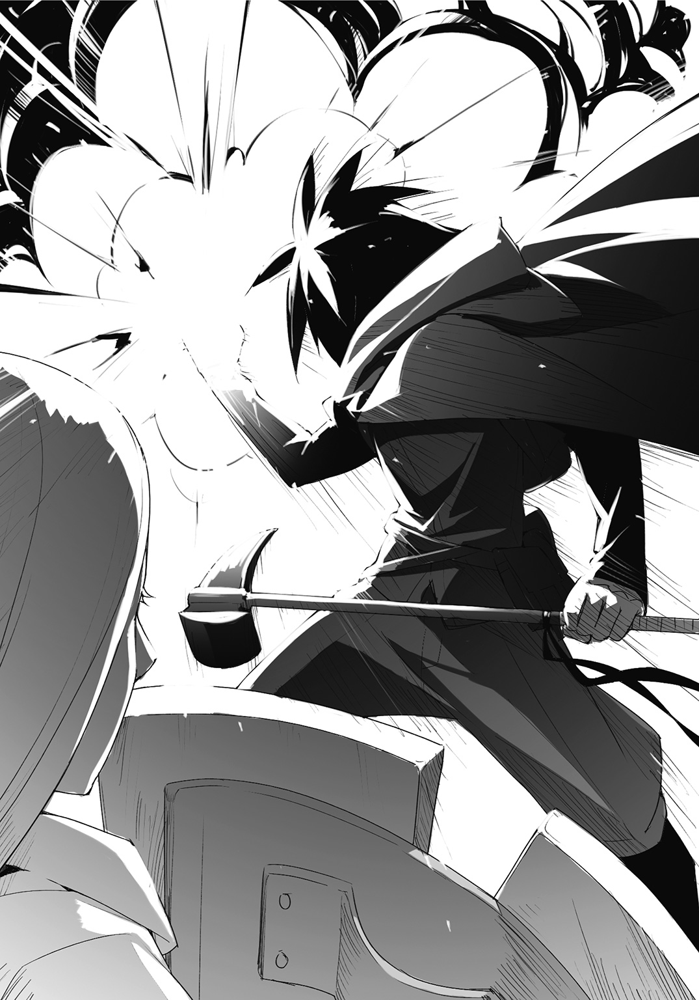
著者紹介
ｍｍ エムエム
一巻発売のどきどきも冷めやらぬままに二巻が発売されました！
ランタン、リリオンに置いて行かれないように早く進化しないと><
illustration
ｋｙｏ キョウ
富山県在住の水瓶座のＡ型で、普段ゲームしながらたまに絵を描かせていただいてます。
よろしくお願いします。
ダッシュエックス文庫DIGITAL
カボチャ頭のランタン02
著者 ｍｍ
(C) mm 2015
２０１５年４月30日発行
この電子書籍は、ダッシュエックス文庫「カボチャ頭のランタン02」
２０１５年３月30日発行の第１刷を底本としています。
発行者 鈴木晴彦
発行所 株式会社 集英社
〒１０１－８０５０
東京都千代田区一ツ橋２丁目５番10号
０３－３２３０－６０８０（読者係）
制作所 株式会社デジタルディレクターズ
本作品の全部また一部を無断で複製、転載、改竄、インターネット上に掲載すること、および有償無償に関わらず、本データを第三者に譲渡することを禁じます。なお個人利用の目的であっても、コピーガードを解除しての複製は、法律で禁じられています。